Title: Kulturhistorische Charakterbilder
Für die Jugend
Editor: J. E. Poritzky
Release date: March 16, 2025 [eBook #75634]
Language: German
Original publication: Stuttgart: Loewes Verlag Ferdinand Carl, 1919
Other information and formats: www.gutenberg.org/ebooks/75634
Credits: Hans Theyer and the Online Distributed Proofreading Team at https://www.pgdp.net
Anmerkungen zur Transkription
Das Original ist in Fraktur gesetzt; Schreibweise und Interpunktion des Originaltextes wurden übernommen; lediglich offensichtliche Druckfehler sind stillschweigend korrigiert worden.
Worte in Antiquaschrift sind "kursiv" dargestellt.
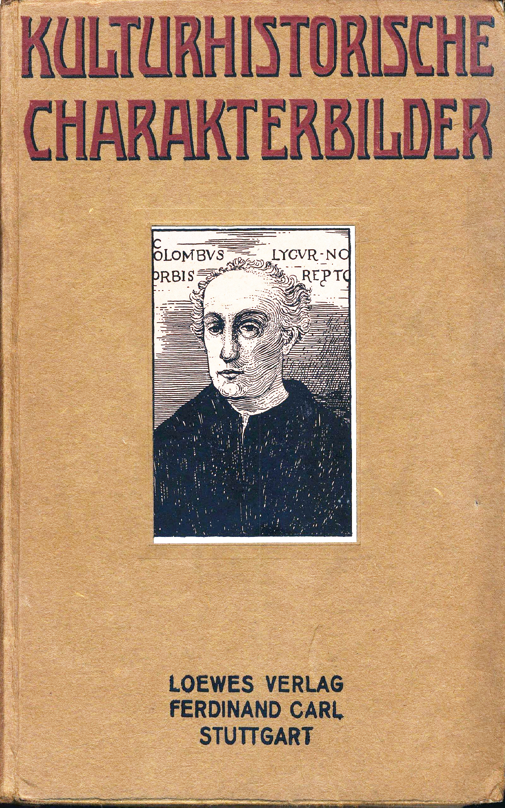
Für die Jugend
herausgegeben von
: J. E. Poritzky :
:: Volksausgabe ::
Mit 20 Textbildern
Stuttgart
Loewes Verlag Ferdinand Carl
Druck von Carl Grüninger, K. Hofbuchdruckerei Zu Gutenberg (Klett &
Hartmann), Stuttgart.
| Seite | |
| Christoph Kolumbus | 1 |
| Michelangelos Leben | 41 |
| Galilei | 67 |
| Die Jungfrau von Orleans | 90 |
| Der Doktor Faust | 121 |
| Goethe der Botaniker | 148 |
| Goethe in Venedig | 164 |
| Beethoven | 176 |
| Der Erfinder Edison | 204 |
[S. 1]
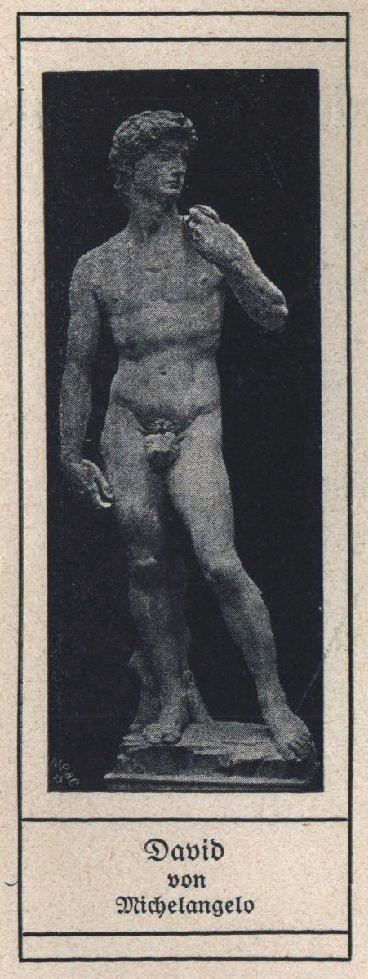
Ich entsinne mich eines alten Stiches, auf dem man Kolumbus rank dastehen sieht, eine Papierrolle — wahrscheinlich eine Erdkarte Andrea Biancas oder Martin Behaims oder eine Seekarte Toscanellis — in der Hand haltend. Er schaut nachsinnend und melancholisch ins Weite, und seine Begleiter scharen sich kniend um ihn, heben die Hände zu ihm empor wie zu einem Gott und küssen den Saum seines Gewandes. Es muß eine große Bewegung gewesen sein, die durch sein Herz ging, als der Matrose Rodrigo »Land« gerufen hatte. Dachte der kühne Entdecker in diesem Augenblick daran, daß er nun Vizekönig würde, Träger der höchsten spanischen Würden, unermeßlich reich, unumschränkt mächtig? Hing seine Seele in diesem Augenblick wirklich am Golde? Oder fühlte er, daß die Erweiterung des räumlichen Horizonts unabweisbar auch die Erweiterung des geistigen Gesichtsfeldes nach sich ziehen mußte? Daß dem Volke, das diesen Sieg errang, der Stempel geistiger Reife aufgedrückt wurde? Daß seine Machtsphäre ein größeres Gebiet gewinnen, und demgemäß auch seine politische Bedeutung wachsen würde?
In der Tat fällt mit der Entdeckung des neuen Weltteiles auch die Entdeckung des Menschen, die Vertiefung seines Seelenlebens und die Entdeckung des himmlischen Firmaments zusammen. Man erinnere sich, daß Kolumbus der Zeitgenosse[S. 2] der größten Renaissancemenschen war, der Raffael, Leonardo da Vinci, Tizian, Michelangelo, Vasco da Gama —, und daß dies nur einige von jenen Gestirnen waren, die in den Tagen des Kolumbus den Erdball erleuchteten. Ariost, Tasso, Dürer, Luther, Savonarola, Macchiavelli, Kopernikus und viele andere wären noch zu nennen. Sie bestätigen den Satz, daß das Genie nur unter Gleichgenialen sich auswachsen und zu seiner vollen Höhe emporrecken kann.
Sich ein neues und großes Weltbild zu schaffen, alle Schranken des Geistes niederzureißen, ist die eigentliche Leitidee der kolumbischen Zeit. Die Erde ist plötzlich fast zu klein für die erwachten Kräfte, die sich betätigen wollen.
Anderseits darf man nicht vergessen, daß unser Denken von dem des Mittelalters durch vier Jahrhunderte getrennt ist. Das Mittelalter ist zwar nicht ganz so finster und wüst, wie man vielfach glaubt, aber es ist doch noch reich genug an abergläubischen Vorstellungen und aufreizenden Phantastereien. Feurige Kometen werden als Fingerzeige Gottes betrachtet; man will gesehen haben, daß es Blut regnet, und das bedeutet Krieg oder Pest. Es ereigneten sich im Volke plötzliche Ausbrüche von Angst vor diesen überall eingreifenden jenseitigen Kräften. In den Kirchen gab es blutschwitzende Hostien, am Himmel blutige Kreuze und Lanzen, in Stadt und Land eine unermeßliche Zahl von Wallfahrern, Flagellanten und Propheten, wundertätigen Muttergottesbildern und Bußpredigern. Man muß sich daran erinnern, daß selbst Luther steif und fest an den Teufel geglaubt hat, mit dem er manchen harten Strauß auszufechten hatte. Sonderbare Stubengelehrte sind als Hexenmeister verschrien, Goldmacher sind Zauberer, und Kräutersammler gelten als Teufelsknechte. Jede Nebelbank ist ein unbekanntes Land.
Ich sage: nur in einer Zeit, wo jeder Kopf voll kräftiger Phantasien steckt; wo man bereit ist, an die Wunder von Tausend und eine Nacht zu glauben, und wo die biblischen Propheten zu[S. 3] Führern werden, die nach neuen Welten locken; wo die Vernunft fast gänzlich von Faustischem Sehnen gepackt ist und durchtränkt scheint; wo der Mensch mehr denn je an seine Gottähnlichkeit glaubt —, nur in einer solchen Zeit ist die Gestalt eines Kolumbus denkbar.
Führt euch eine Reise einmal nach Genua, so ist das erste, was euch auf dem schönen freien Platz vor dem Bahnhofe ins Auge fällt: Christoph Kolumbus, der Entdecker der Neuen Welt, der um die Mitte des fünfzehnten Jahrhunderts in Italien geboren ist. Vierzehn Ortschaften streiten sich um die Ehre, ihn als ihren Sohn zu beanspruchen; indessen kommen ernsthaft nur Genua oder Savona in Frage.
Er stammte von braven kleinbürgerlichen Eltern ab, die das Gewerbe der Wollweber betrieben, das auch Christoph in der Jugend erlernte. Die Eltern ließen ihm eine sorgfältige, wenn auch beschränkte Erziehung zuteil werden; daß sie ihn aber auf kurze Zeit an die Universität nach Pavia geschickt haben sollen, wo er Lateinisch gelernt hätte, wird neuerdings bezweifelt. Sehr viel mehr als dieser Erziehung verdankt er indessen sich selber und seiner eigenen Energie, die ihn stets von neuem zu seinen Studien trieb. Schon im vierzehnten Jahre hing er mit Lust und Liebe am Seemannsberufe, und die damalige Schiffahrt auf dem Mittelländischen Meere, die einem wilden Freibeutertum gleichkam, nahm den künftigen Seehelden in ihre rauhe und harte Schule. Und wir wollen es uns einprägen, daß nicht das Allergeringste im Leben ohne Kampf gewonnen werden kann, daß eine eiserne Energie und eine unbeugsame Willenskraft dazu gehören, wenn man ein großes Ziel erreichen will.
Wahrscheinlich nahm der junge Kolumbus Anteil an dem Erobererzuge Johanns von Anjou, der gegen Neapel gerichtet war. Kühn und furchtlos soll Kolumbus die feindlichen Galeeren[S. 4] angegriffen und von ihnen Besitz genommen haben, in nichts seinem Onkel und seinem Neffen nachstehend, die durch ihre glücklichen Kapereien gegen die Ungläubigen berühmt waren. Aber erst als Christoph Kolumbus auf seinem Abenteurerzuge auch nach Portugal kam, wurden alle Geisteskräfte geweckt, die in ihm schlummerten. Denn gerade in den Portugiesen war seit dem Beginn des fünfzehnten Jahrhunderts ein kühner Unternehmungssinn und ein toller Wagemut erwacht. Sie erhofften märchenhafte Schätze von der Auffindung neuer Seewege, die zu neuen Erdteilen führten.
Noch war die Erde ja zum größten Teile ein jungfräuliches Gebiet. Die Reisebeschreibungen jener entdeckungslustigen Epoche lesen sich wie ungeheuer übertriebene Märchen, wie phantastische Geschichten von Jules Verne, die ja auch ein Körnchen Wirklichkeit in sich tragen. Aus den neuentdeckten Ländern brachte man rote Menschen, seltsame Tiere, die Kunde von einer ganz fremdartigen Tier- und Pflanzenwelt. Zwar hatten schon in vorchristlicher Zeit Eudoxos und Aristoteles die Vermutung ausgesprochen, daß die Erde Kugelgestalt haben müsse, aber im großen und ganzen glaubten die alten Völker, die Griechen, Römer und Araber, daß die Erde eine flache oder eckige Scheibe sei, die auf dem Wasser schwimme. Erst in der Zeit des Kolumbus hatten Kopernikus und Galilei unerschütterliche Beweise für die Kugelgestalt der Erde gegeben — was übrigens sogar jetzt noch die wenigsten und selbst Kolumbus nicht glauben wollten — und daß sie als ein kleiner Stern wie viele, viele andere Sterne um die Sonne kreiste. Der Weltenraum hatte sich unermeßlich geweitet; die Erde war ein unbekanntes Land. Die seltsamsten Wesen und Dinge waren auf ihr möglich. Die Reisenden erzählten von Ländern, wo Menschen ohne Kopf geboren werden, mit Augen und Mund in ihrer Brust; von Menschen, die den Kopf unter ihren Armen trugen, die Augen in den Schultern hatten usw.
[S. 5]
Es sind eben diese plumpen Märchen der Reisenden und der Matrosen, von denen Kolumbus die Anregungen zu seinen Entdeckungsreisen empfängt. Wenn Schiffersagen aber schon solch ein Zündstoff für seine Seele sind, wird Pierre d'Allys Reisebeschreibung vom Jahre 1410 ohne Zweifel sein Katechismus. Denn Kolumbus ist ebenso autoritätsgläubig wie enthusiastisch, ebenso phantasievoll wie abenteuerlich. In der »Erdbeschreibung« des Pierre d'Ally, die diesen Namen allerdings kaum verdient, findet er alle fabelhaften Vorstellungen, die Aristoteles und Seneca, Plinius und Ptolemäus, Osorius und Isidorus, Averroës und Augustin und eine Menge anderer Philosophen, Sterngucker, Mystiker und Heiligen von der Welt hegen, getreu aufgezeichnet. Die Anschauungen des Plinius, der behauptet hatte, man könne von Spanien in wenigen Tagen nach Indien reisen, und die Anschauungen seines Nachschreibers Solinus beherrschten die Ansichten über ein Jahrtausend. Nach diesen gab es jenseits des heiligen Indus die Inseln Chryse und Argyre, die ganz aus Gold und Silber bestanden. Isidorus wußte sogar von goldenen Bergen zu berichten, die von Drachen, Greifen und menschlichen Ungeheuern bewacht würden. Bei d'Ally liest Kolumbus, daß die Erde so und so schmal sei und daß das Paradies irgendwo im Osten liege, wo Erde und Mond zusammengrenzen. Sollte es ein gläubiger Entdecker nicht finden? In den heißen Zonen — heißt es da ferner — leben unbeschreibbare Untiere. Die Welt geht wahrscheinlich 1658 unter, ganz bestimmt aber 1801. In Senecas Tragödie »Medea« liest Kolumbus: »Einst wird die Zeit anbrechen, wo der Ozean seine Fesseln sprengen, der Erdkreis weit und breit sich ausdehnen, das Meer neue Länder entschleiern und Thule nicht mehr das erdenfernste Land sein wird«.
Ist man nicht geradezu ein Narr, wenn man sich auf Grund solcher Prophezeiungen nicht aufmacht, um neue Welten zu suchen? Übrigens spricht schon Jesaias Kapitel 60, Vers 9[S. 6] und Kapitel 65, Vers 17 von neuen Weltteilen, von Gold- und Silberinseln.
Auch Aristoteles, der weiseste der griechischen Philosophen und im Mittelalter als unantastbare Autorität hoch verehrt, hatte z. B. eine Insel Antilla erwähnt, die Insel der sieben Städte und andere phantastische Inseln und Weltteile, die auf allen Landkarten eingezeichnet waren. Und es gab genug abenteuerliche Wagehälse, die hinauszogen, um diese Inseln zu suchen, und die an die unwahrscheinlichsten Legenden glaubten, so wie wir einst an das Schlaraffenland geglaubt haben oder an das Land der Antipoden, wo die Menschen auf den Köpfen gehen.
Gewiß, das alles waren Märchen. Aber Kolumbus hat an sie geglaubt, und ich finde nichts Lächerliches darin. Gerade weil er an sie geglaubt hat, gehörte die doppelte Kühnheit dazu, auf die unbekannten Meere hinauszusegeln und es — wie ein würdiger Märchenheld — mit den vermeintlichen Drachen und Unholden aufzunehmen. Seine ehrliche Absicht war es, sie zu töten; daß er sie nicht gefunden hat, kann ihn nicht verkleinern. Nachdem er die neuen Lande entdeckt hat, schreibt er sehr bescheiden und hübsch: »Zur Ausführung einer Fahrt nach Indien haben Vernunftschlüsse, Mathematik und Weltkarten mir zu nichts geholfen. Es ist einfach in Erfüllung gegangen, was der Prophet Jesaias vorhergesagt hat.«
Die Namen jener vorhin genannten Philosophen, Propheten und Dichter, und die Resultate d'Allys waren dem spanischen Monarchen tatsächlich Garantien genug, das kostspielige Unternehmen des durch seine außergewöhnliche Beredsamkeit bestrickenden Entdeckungsreisenden zu billigen, obwohl die kosmographischen Vorstellungen unseres waghalsigen Weltumseglers sehr seltsam, seine mathematischen und geographischen Vorkenntnisse sehr ungenügend und sein nautisches Wissen gleich Null waren. Denn er gibt später beispielsweise den Breitegrad der kubanischen Küste auf zweiundvierzig Grad an, anstatt auf einundzwanzig[S. 7] Grad. Er hält die Gestalt der Erde für birnenförmig, glaubt in der Nähe Haitis das biblische Paradies wiedergefunden zu haben usw. Die astronomischen Vorstellungen seiner verirrten Einbildungskraft sind die der wilden Naturvölker.
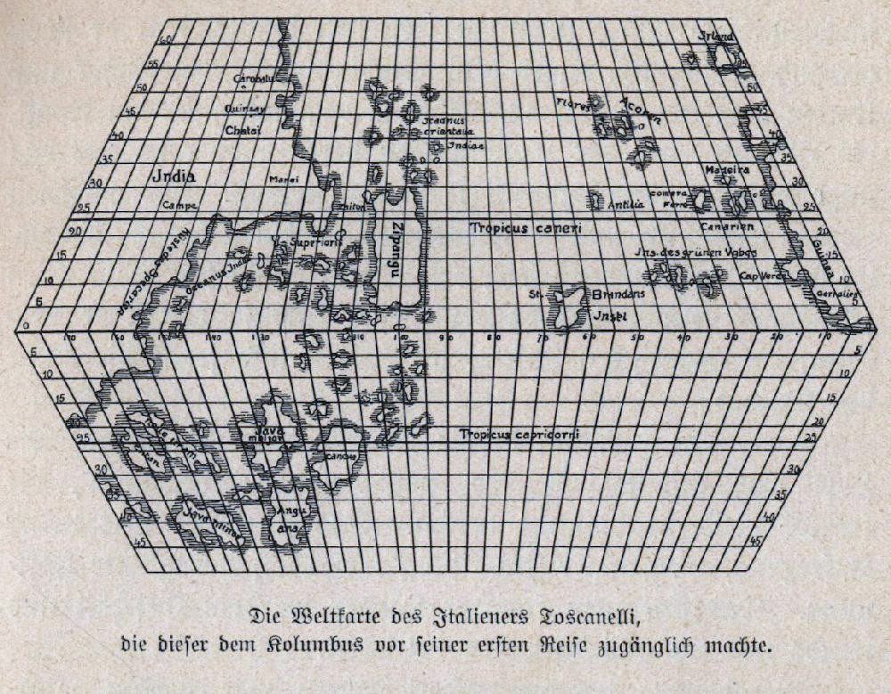
Portugal war eine ausgezeichnete Schule für Christoph Kolumbus oder Cristobal Colon, wie er sich seit seiner spanischen Anstellung mit Vorliebe nennt und unterzeichnet. Hier konnte er etwas Tüchtiges lernen oder sein Wissen sehr vorteilhaft erweitern und verwerten. Darum zögerte er auch nicht lange, sich in Portugal niederzulassen, wo sich bereits viele seiner Landsleute angesiedelt hatten. Er trug seine Hand der Tochter eines italienischen Edelmannes an, dem Befehlshaber der Insel Porto Santo, der ein tüchtiger Seemann war und der seiner Tochter Felipa Perestrello hauptsächlich Reisetagebücher und Seekarten zur Mitgift gab. Kolumbus war's zufrieden, und obwohl er seinen eigenen Unterhalt nur durch Zeichnungen von sehr geschätzten[S. 8] See- und Landkarten bestreiten konnte, war er schon glücklich genug, sich eifrig dem Studium der Reisebücher und Karten hingeben zu können. Aber er begnügte sich nicht damit, die Welt nur auf der Landkarte zu bereisen oder sie aus den ungenügenden Reiseberichten kennen zu lernen. Die goldenen Fernen lockten ihn und die unendlichen Weiten riefen ihn hinaus. Er wollte die Wunder sehen, von denen die Reisenden in ihren fabelhaften Beschreibungen erzählten. Und so bereist er Madeira, die Kanarischen Inseln, die Azoren und sogar die Küste von Guinea.
Jede neue Ausfahrt konnte ins Wunderland führen. Die Luft war erfüllt von den unglaublichsten Legenden, die fremde Reisende berichtet hatten. Das Seeleben war voller Aufregung, neugieriger Erwartung und überschwenglicher Hoffnung. Das Entdecken fremder Länder war ein Geschäft und wurde wie ein Glücksgewerbe betrieben.
Aber damals, vor vierhundert Jahren, war es ganz natürlich, an Schiffermärchen zu glauben. Dazu kam noch, daß das Meer seltsame Dinge angeschwemmt hatte, klobig geschnitzte Hölzer, Zedernstämme von unbekannter Herkunft, riesenhaftes Schilfrohr, Leichen fremder Menschenrassen von sonderbarer Hautfarbe, lauter Dinge, die auf das Vorhandensein unbekannter seltsamer Erdteile schließen ließen.
Aber so viel Unternehmungsgeist und Mut Kolumbus auch hatte, er war jeglicher Mittel entblößt und ganz außerstande, seinen Plan ohne fremde Hilfe und Unterstützung auszuführen. Von Johann II., der eben den portugiesischen Thron bestiegen hatte, erhoffte Kolumbus um so eher rege Förderung seiner Absichten, als Johann selber von dem Entdeckungsfieber ergriffen war. Und als Kolumbus 1483 in einer Audienz, die ihm der König gewährt hatte, seinen großen Plan, den direkten Seeweg nach Indien aufzufinden, entwickelt hatte, war der König trotz seiner anfänglichen Abneigung umgestimmt und bereit, auf die[S. 9] Ideen des Kolumbus einzugehen. Er wollte die Vorschläge nur noch von seinen gelehrten Ratgebern prüfen lassen. Diese hörten sie kopfschüttelnd an; sie erklärten sie für die Ausgeburten eines überspannten kranken Gehirns und meinten, es wäre eine unverzeihliche Torheit, den bisher verfolgten Weg um Afrika herum, um ihretwillen aufzugeben.
Diese Entscheidung hinderte freilich den König nicht, trotzdem an die Ausführbarkeit des Kolumbusschen Planes zu glauben. Er hoffte nur billiger und bequemer dazu zu kommen, wenn er einen einheimischen Seemann mit einem gut ausgerüsteten Schiffe im geheimen in die westliche Richtung absandte, um zu versuchen, ob die Theorie des Genuesers sich bewähren würde. Anekdoten erzählen, Kolumbus sei aufgefordert worden, seine Absichten in ausführlicher Weise schriftlich darzustellen, und mit ebendieser Darstellung habe man den neugeworbenen Seemann in den westlichen Ozean geschickt. Aber diesem gemieteten Kapitän habe die kühne Seele des Kolumbus gefehlt; nach wenigen Tagen sei schon sein Eifer ermattet, und im Glauben, die uferlose Meereswüste nehme kein Ende, habe er seiner Entdeckungsfahrt ein rasches Ende gemacht und sei zum Tajo zurückgekehrt, Kolumbus einen Wahnsinnigen schimpfend, der diese sonderbare Idee ausgebrütet hatte. Dieser Verrat und Schimpf, der ihm angetan worden sei, hätte Kolumbus aufs höchste empört, und entrüstet hätte er diesem Lande den Rücken gekehrt.
Diese Anekdote, die Kolumbus zum Märtyrer macht, wird aber von der neueren Forschung als unverbürgt abgelehnt; man nimmt vielmehr an, daß Kolumbus Portugal verlassen habe, weil der König nicht auf seine unerhört hohen Forderungen eingehen wollte, im Falle das Unternehmen gelingen würde. Er beanspruchte nämlich erstens die Erhebung in den Adelstand für sich und seine Familie; zweitens den Titel »Admiral des Weltmeers«; drittens Amt und Würde eines Vizekönigs und lebenslänglichen Statthalters aller entdeckten[S. 10] Inseln und Festländer; viertens den zehnten Teil aller königlichen Einkünfte an Gold, Silber, Perlen, Edelsteinen, Metallen, Gewürzen usw., sowie von allen Handelserträgnissen in jenen Gebieten; fünftens nahm er das Recht für sich in Anspruch, bei allem Handel sich auf jedem Schiffe mit einem Achtel des Wertes beteiligen zu dürfen.
Kolumbus richtete seine Blicke nach Spanien. Während Portugal seine Pläne nur als ein Geschäftsunternehmen auffaßte und ablehnte, konnte Kolumbus von Spanien hoffen, daß es die Entdeckung neuer Erdteile zu einer Sache des Glaubens machen würde. Denn noch immer kämpfte Spanien mit dem Islam und befolgte infolgedessen mehr eine Glaubenspolitik als eine geschäftliche. Aber die spanischen Räte waren für die Ideen des Kolumbus noch nicht reif. Zwar nahm man ihm nicht alle Hoffnung; man wollte sich aber im Augenblick auf diese abenteuerlichen Pläne nicht einlassen, da man in zu viel kriegerische Verwicklungen hineingezogen war. Zu seiner Existenz erhielt Kolumbus eine kleine Unterstützung vom Hofe, eine Art Wartegeld, durch das er an die spanische Krone gebunden war.
Es begannen Jahre voll peinlichen Wartens. Voller Angst sieht Kolumbus ein Jahr ums andere verrinnen, ohne daß er seinem Ziele näher käme. Deshalb faßt er zur Verwirklichung seiner Pläne jetzt Frankreich ins Auge und schickt zugleich seinen Bruder nach England, damit er dort ebenfalls wirke. Aber beides ist erfolglos. So lebt Kolumbus sieben Jahre einsam, unbekannt und fast vergessen in Cordova und Sevilla, bis er sich 1491 gewaltsam losreißt, um in anderen Ländern sein Glück zu erjagen.
Aber bevor er sich die Krone des Erfolges aufs Haupt setzen kann, muß er noch harte Prüfungen bestehen. Die Vasallen des Hungers gesellen sich zu ihm und geleiten ihn durch die dornenvollen Lande der Bitternis und der Enttäuschung; der Kummer wird sein treuester Freund. Es tun sich Abgründe in ihm auf[S. 11] und schwere Verzweiflung kommt heran und erwürgt alle seine Hoffnungen. Der Gottgesandte bricht zusammen, ehe er seine ruhmvollen Reisen beginnt.
Als Bettler finden wir ihn wieder an der Pforte des Klosters St. Maria de la Rabida, das unfern von dem andalusischen Seehafen Palos sich auf einem Hügel erstreckt. Dort erfleht er für sich und seinen Knaben eine Stärkung. Der fremde Dialekt des Bittenden und die eigentümliche Erscheinung erregen die Neugier des Pförtners. Der ruft den Prior Juan Perez de Marchena, dem Kolumbus in seiner Drangsal und Not seine Entwürfe und Hoffnungen vertraulich mitteilt. Der Prior aber erkennt, daß er hier keinen gewöhnlichen Bettler vor sich hat; er erkennt den Wert des Kopfes, der diese verwegenen Entdeckerpläne hegt, und beschließt auch sofort, Kolumbus nicht aus dem Lande ziehen zu lassen, ohne die Königin Isabella von seiner Absicht vorher in Kenntnis zu setzen. Aber trotz der warmen Empfehlungsschreiben des Priors gelingt es dem Fremdling nicht, vor die Königin vorgelassen zu werden. Kolumbus, der sich selber in ärmlichem Gewand nach dem königlichen Kriegslager begibt, wird mit verwundertem Erstaunen von dem königlichen Beichtvater betrachtet, der es auch verhindert, daß Kolumbus vor der Königin erscheint. Wieder ist er zurückgewiesen. Dennoch glaubt er unerschütterlich an sich und seine Sache und ernährt sich inzwischen kümmerlich durch Kartenzeichnen.
Aber der Schmerz veredelt ihn nicht, sondern macht ihn habgierig und rachsüchtig. Er wird sich an all denen rächen, die ihm wehgetan haben. Wenn er das Franziskanerkloster La Rabida verlassen wird, wo man den Umherirrenden vom Hungertode errettet hat, wird er fordern, daß man ihm jede bittere Stunde durch zehnfache Ehrungen und zehnfaches Gold aufwiege.
Inzwischen gewann er durch seine imponierende Ausdauer und sein würdevolles Betragen einen neuen Freund in Alonzo de Quintanilla, dem kastilianischen Finanzkontrolleur, der ihn[S. 12] bei mehreren Personen vom Hofe einführte und sich warm für ihn ins Zeug legte, so daß ihm endlich eine Audienz erwirkt wurde. Endlich konnte Kolumbus seine Gedanken mitteilen und er war als ein glänzender Sprecher berühmt. Der König Ferdinand maß den kolumbischen Plänen eine so hohe Bedeutung bei, daß er sie einer Versammlung der gelehrten Geistlichen zur Entscheidung vorlegte. Die stellten, da ihr Wissen von der Erde nicht weit her war, der Ausführung der Ideen die größten Hindernisse in den Weg. Die einen meinten, es gebe überhaupt keine neuen Erdteile mehr zu entdecken; die ganze unbekannte Welt sei vom Ozean ausgefüllt; die anderen sagten, wenn die Erde Kugelgestalt habe, so könne man zwar die Erdkugel herunterfahren; es sei aber doch dann unmöglich, wieder hinaufzukommen; die dritten glaubten, wenn es etwas zu entdecken gäbe, so müsse in den neuen Ländern so eine furchtbare Hitze sein, daß sie sofort alles Lebendige töten würde. Kurz, obwohl nur Dummheiten vorgebracht wurden, und obwohl Kolumbus sie den seeunkundigen Geistlichen geschickt widerlegte, wurden seine Pläne doch wieder, wenn auch nicht verworfen, so doch aufgeschoben und vernachlässigt. Die Hoffnung, die Kolumbus blieb, war gering; aber so gering sie war, sie vermochte ihn doch wieder aufrecht zu erhalten. Er blieb also dem Hofe nahe und ließ sich die Verachtung und den Spott der Höflinge, die ihn als einen lächerlichen Projektenmacher betrachteten, still gefallen. Nur wenige Freunde schürten dann und wann den Glauben an eine spätere Aussicht in ihm wach und bestärkten ihn in seinem Selbstvertrauen.
Und die Monate gingen hin. Inzwischen empfing er wieder ein Schreiben vom portugiesischen König Johann, der ihn einlud, nach Lissabon zurückzukehren; aber Kolumbus schlug das Anerbieten aus. Auch der König von England, Heinrich VII., fing an, sich ermunternd gegen Kolumbus zu äußern, nachdem es dessen Bruder, der auf dem Wege nach England von Seeräubern ausgeplündert[S. 13] worden war, nach langer Gefahr und entmutigender Not gelungen war, sich dem Könige zu nähern. Aber Kolumbus ließ sich auch von diesen Hoffnungen nicht blenden, um so weniger, als nun auch Ferdinand und Isabella von Spanien sich wieder des vernachlässigten »Projektenmachers« erinnerten. Aber da war die noch immer währende Belagerung von Granada, die die Tatkraft der Regenten vollkommen in Anspruch nahm, ein neues Hemmnis. Und als die Spanier endlich die maurische Herrschaft gebrochen hatten, verdrängten die lärmenden Siegesfeste und die Turniere wieder von neuem die Erinnerung an den unverzagt hoffenden Genueser. Aber nun begann er in seinen Bitten dringlicher zu werden und drängender. Er forderte ein energisches und unzweideutiges Ja oder Nein. Wieder traten die früheren geistlichen Räte zusammen, wieder beratschlagten sie und wieder bekundeten sie: der Antrag des Bittstellers sei in seinen Grundsätzen gehaltlos, in seiner Ausführung untunlich und deshalb der Förderung und Beachtung der königlichen Herrscher unwürdig.
Jetzt erst schien es, als hätte das Schicksal Kolumbus, nach all dem vergeblichen Warten und Hoffen, den Becher der Verzweiflung zum Trunke gereicht. Jetzt erst sah er sich von seinem Ziele weiter entfernt denn je; er fühlte sich grenzenlos unglücklich und erschüttert. Jetzt erst wollte er Spanien verlassen und wollte nach England oder Frankreich. Er kehrte nach dem Kloster La Rabida zurück, wo er seinen Sohn in der Obhut des Priesters zurückgelassen hatte, um ihn nun zu sich zu nehmen. Aber der Prior, tief bekümmert über das Mißgeschick des Freundes, gab die Sache des Kolumbus trotzdem noch nicht verloren. Er hielt Kolumbus zunächst im Kloster zurück und schickte einen Piloten mit einem warmen Empfehlungsbrief zur Königin. Und die Entscheidung lautete günstig. Der Prior wurde zur Königin befohlen und hier führte er die Sache des Kolumbus so beredsam, daß sie beschloß, wieder von neuem zu verhandeln. Vorläufig[S. 14] schickte sie ihm dreiundfünfzig Dukaten, damit er anständig vor ihr erscheinen könne.
Um diese Zeit sah sich auch Spanien auf dem Gipfel seiner Größe. In König Ferdinand wurden Hochsinn und Ehrgeiz wach, und er hoffte durch Kolumbus zu unberechenbarem, neuem Glanze zu kommen. Man verhandelte nun ernstlicher mit ihm und stellte ihm für seine Fahrt drei gut ausgerüstete Schiffe in Aussicht. Nach seinen Ansprüchen befragt, gab er dieselben maßlosen Forderungen an, wie ehedem dem Könige von Portugal. Er will die höchsten spanischen Würden und die Macht des Vizekönigs in den neu zu entdeckenden Ländern. Er ist außerdem ein tüchtiger Geschäftsmann. Von allen Perlen und Edelsteinen, von Gold und Spezereien, von allem, was Handelswert hat, will er zehn Prozent. Er will das Amt des höchsten Richters üben und alle Handelsprozesse führen, die zwischen Spanien und dem Lande seiner Phantasie entstehen werden. Anfangs findet man diese Forderungen unangemessen, übermütig, ausschweifend; endlich aber, nach Befürwortung und Anfeuerung durch den Schatzmeister, bewilligt man ihm — zu seinem Unglück — alles. Welch eine Meinung hat er nun von sich! »Gott machte mich zum Gesandten eines neuen Himmels und einer neuen Erde.«
Und jetzt gehen die Dämonen in ihm auf Raub aus. Eine unersättliche Geldgier und eine kleinliche Habsucht erfüllen ihn; er wird doppelzüngig und grausam; er wird anmaßend und prahlerisch.
Man hatte ihn nun zum Admiral ernannt und sofort in den Adelstand erhoben. Die Ausrüstung der Schiffe wurde eilig betrieben; der nahe Hafen von Palos war als Ausfahrtspunkt gedacht. Die Schiffsmannschaft sollte in königlichen Sold genommen werden, aber genügend wackere Matrosen und Steuerleute zu beschaffen war nicht so leicht. Die kühnsten Seeleute schreckten bei dem Gedanken zurück, eine Fahrt ins Ungewisse, Grenzenlose, Ziellose zu tun. In den Märchen war ja erzählt[S. 15] worden, daß manche Kaufleute fünfzig Jahre und länger auf dem Meere geradeaus fuhren, ohne je eine Insel erreicht zu haben. Eine solche Fahrt mußte sie ins Verderben führen, und daher war die Angst davor so groß, daß selbst scharfe Strafbefehle nicht die Wirkung hatten, genügende Seeleute anwerben zu können. Niemand wollte sein Leben dem fremden italienischen Pläneschmied anvertrauen, der mit weiß Gott was für Teufelskünsten den König beredet hatte.
Erst als ein gewisser Pinzon und sein Bruder, deren Erfahrungen auf dem Meere man sehr hochschätzte, versprochen hatten, die ungeheuerliche Fahrt mitzumachen, wirkte deren Beispiel so ermutigend, daß die Schiffe schließlich doch segelfertig gemacht werden konnten.
Die gesamte Ausrüstung der drei Schiffe zählte mit Inbegriff der Steuerleute, der königlichen Beamten, Ärzte, einiger Freiwilliger vom Kriegshandwerk und neunzig Matrosen, alles in allem hundertzwanzig Köpfe. Mehr waren an der ganzen andalusischen Küste für dieses Unternehmen, trotz guter Beispiele, gutem Sold und großer Überredung, nicht zu gewinnen. Und selbst unter diesen hundertzwanzig Leuten kamen weitaus die meisten nur sehr widerwillig mit und nur, weil man Gewalt angewendet hatte.
Die Hafenstadt Palos mußte die Schiffe stellen und ausrüsten, Sevilla hatte den Auftrag, Waffen und Proviant zu liefern. Das Flaggschiff, die Santa Maria, wollte Kolumbus selbst führen; das zweite Schiff, die Pinta, stand unter dem Befehl der beiden Brüder Pinzon; das dritte Schiffchen, die Nina, wurde von einem anderen Pinzon kommandiert. Die Santa Maria maß etwa zweihundertundachtzig, die Pinta hundertundvierzig, die Nina höchstens hundert Tonnen.
Endlich, nachdem Kolumbus und die gesamte Mannschaft in der Kirche den Segen Gottes erfleht hatten, und jeder die heiligen Sakramente empfangen hatte, wurden am Freitag,[S. 16] dem 3. August 1492, morgens acht Uhr, die Anker gelichtet und unter Herzklopfen der Scheidenden und der Zurückbleibenden verließen die Schiffe die vaterländische Küste, um einer ungewissen Zukunft entgegenzusegeln.
Kolumbus schlug den Weg nach den Kanarischen Inseln ein. Aber schon während dieser Fahrt mußte sich ihm die Besorgnis aufdrängen, daß seine Schiffsmannschaft in einer Anwandlung von Furcht und Reue widersätzlich werden und auf Umkehr dringen könnte. Diese Befürchtung war nicht grundlos. Schon am dritten Tage zerbrach das Steuerruder der Pinta, und man schöpfte Verdacht, daß die beiden Seeleute, denen das Schiff gehörte, den Schaden absichtlich herbeigeführt hätten, um das Fahrzeug vor der gefährlichen Reise in Sicherheit zu bringen. Der Schaden war nur schwer wieder gut zu machen, aber der Kapitän Alonso Pinzon verlor den Mut nicht; es gelang ihm, das Schiff nach der Insel Lanzerote zu bringen, wo die notdürftige Ausbesserung mehrere Wochen in Anspruch nahm. Während dieses unfreiwilligen Aufenthaltes wurde ein Vulkanausbruch auf Teneriffa beobachtet, der allgemeine Verwunderung erregte. Das Schiffsvolk begann zu murren und über die unbequemen Arbeiten zu klagen; sie waren der Reise schon überdrüssig, ehe sie noch recht begonnen hatte.
Erst am 6. September konnte das kleine Geschwader die Reise fortsetzen; es segelte an Ferro, der Eiseninsel, vorbei, den drei portugiesischen Karavellen geschickt ausweichend, die die Schiffe des Kolumbus aufhalten sollten, um die Expedition zu vereiteln. Ferro war die letzte Insel der bekannten Welt, und Kolumbus fühlte sich, im Gegensatz zu seinen zaghaften, in Tränen aufgelösten Gefährten, erst jetzt wohl. Die Entmutigten feuerte er durch verlockende Reden von den zu erwartenden Reichtümern an, an die er selber glaubte; den Unterbefehlshabern[S. 17] gab er bestimmte Weisungen über die Richtung, die einzuhalten war. Von jetzt ab führte der Admiral, wie er selber angibt, zweierlei Tagebücher; eins für sich, in das er die wirkliche Meilenzahl verzeichnete, die durchsegelt worden war, und ein anderes offen liegendes, sogenanntes Schiffsjournal, worin er die zurückgelegten Strecken kürzer angab, damit die Mannschaft durch die weite Entfernung von der Heimat nicht den Mut verlieren sollte.
So segelten sie mehrere Tage dahin; es wurde aber schlecht gesteuert, so daß sie ein wenig von der Richtung abwichen. Am 13. September entdeckte Kolumbus die westliche Abweichung der Magnetnadel, die sogenannte »Deklination der Magnetnadel«, die ihn sehr beunruhigte. Was mußte nun aus ihnen werden, wenn der einzige sichere Führer in der weiten Wasserwüste sich so unzuverlässig zeigte? Es gehörte des Admirals ganze Besonnenheit und Geistesgegenwart dazu, die beunruhigende Erscheinung seinen Matrosen als eine unwichtige Sache hinzustellen. Am 14. September sahen die Leute von der Nina eine Seeschwalbe und einen Tropikvogel; am 15. fiel in geringer Entfernung von den Schiffen eine prachtvolle Feuerkugel ins Meer. Alle diese Dinge verwirrten und betrübten das Schiffsvolk, das hierin Himmelszeichen sah, daß die Reise schlecht ablaufen würde. Am 16. trübte sich der Himmel, und es fiel ein starker Regen. Von nun an war das Klima völlig umgeschlagen; die Morgen waren lieblich wie in Andalusien; es fehlte nur noch das Singen der Nachtigall. Der Himmel war von silberumsäumten Wolken bezogen, die Luft war mild und klar. Am selben Tage sah man auch das Meer mit zahllosen Büscheln von treibendem Seetang bedeckt, der so frisch und grün aussah, daß man meinte, das Kraut könne erst vor kurzem vom Lande losgerissen sein; es müssen also — glaubte man — Inseln in der Nähe sein.
Beim Anblick dieses treibenden Tanges, des Sargassun, begann das Schiffspersonal wieder aufzubegehren; es murrte[S. 18] über den langen Weg, der kein Ende nehmen wollte. Die Tage wurden länger, die Meeresflächen erschienen wieder größer, die Ungeduld wuchs und schwoll und entlud sich in offener Empörung gegen Kolumbus. Aber als man auch glücklich über die schwimmenden Grasstrecken hinweggesegelt war, legte sich die Besorgnis ein wenig.
Doch tags darauf zeigten sich neue Grasinseln; man fing eine Krabbe zwischen den Büscheln, die Kolumbus mit dem Bemerken aufbewahrte, daß nun das Land wohl in der Nähe sein müsse. Das Seewasser war auch nicht mehr so salzig, wie bei den Kanarien.
Am 18. September eilte die Pinta etwas voraus, weil der Admiral gesagt hatte, er hoffe noch in dieser Nacht Land zu sehen, und weil die Königin demjenigen eine Prämie von zehntausend Maravedis (zweihundertundsiebenundfünfzig Mark) ausgesetzt hatte, der zuerst Land erblicken würde. Diese Zuversicht wurde noch dadurch verstärkt, daß sich im Norden eine dichte Wolkenbank lagerte, die man anfangs für Land hielt. Am 19. September herrschte Windstille. Ein Pelikan, der nie weitab vom Lande fliegt, kam auf das Hauptschiff; ein Sprühregen fiel ohne Wind; das alles schienen Anzeichen, daß Land nahe sei. Kolumbus glaubte an links und rechts liegenden Inseln vorbeigefahren zu sein, und zwar mit Absicht, weil er seinem Vorsatz getreu bleiben und zuerst den Weg nach Indien fortsetzen wollte. Auf dem Rückwege hatte er ja Zeit genug, alles aufzusuchen.
Am nächsten Tage wurden wieder Pelikane gesehen, ein Pajaro, ein möwenähnlicher Flußvogel, wurde gefangen; morgens kamen auch kleine Vögel heran und sangen. Die Vögel flößten den Schiffern Mut ein.
Den folgenden Tag herrschte Windstille; ungeheure Grasmassen segelten vorbei; ein Walfisch wurde gesichtet. Das Meer war glatt, die Luft wundervoll.
Am 23. September erhob sich ein widriger Wind und Sturmvögel umkreisten die drei Schiffe. »Dringend bedurfte ich den[S. 19] heutigen Gegenwind,« schreibt Kolumbus in sein geheimes Tagebuch, »denn mein Schiffsvolk war höchst beunruhigt und besorgt, daß auf jenen Meeren keine Winde zur Rückkehr nach Spanien wehten.«
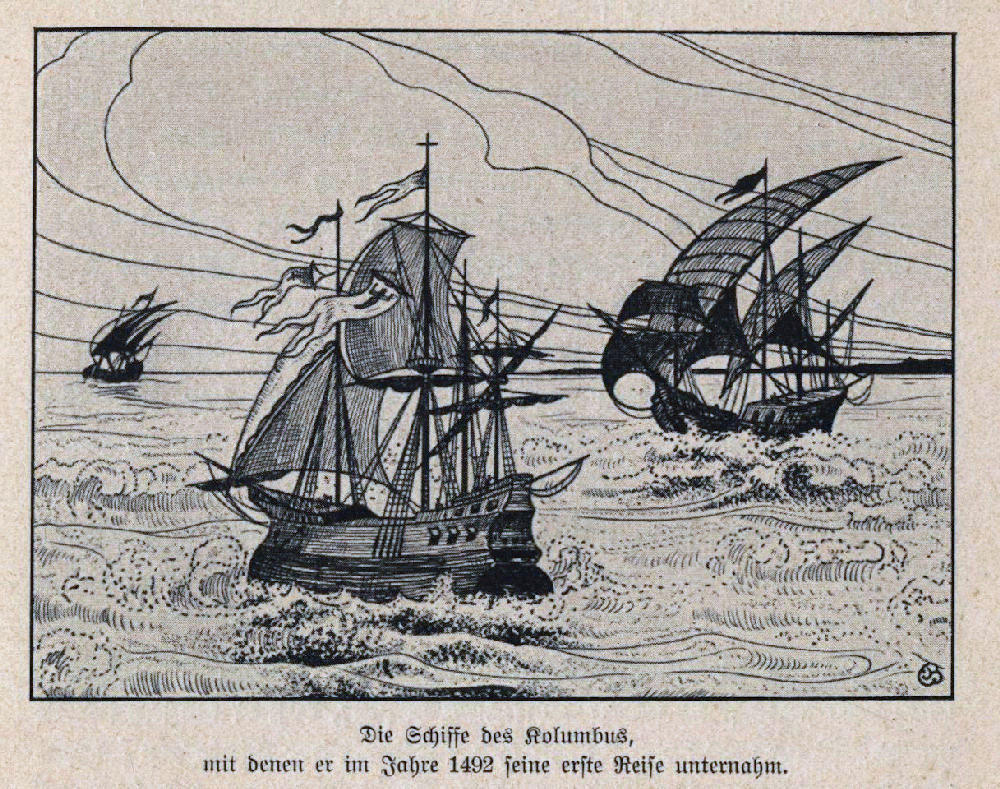
Es ist nicht zu verwundern, daß die Leute immer wieder von neuem von ihrer Angst und Einbildung gepeinigt wurden. Sie waren ja nur gewohnt, Küstenschiffahrt zu treiben, wobei man nie das Land aus den Augen verlor. Und nun segelten sie schon ununterbrochen seit mehr als vierzehn Tagen durch den scheinbar endlosen westlichen Ozean, ohne daß man einer Felsklippe begegnet wäre. Nichts als Meer und Himmel, Wolken und Wellen, Luft und Wasser.
Die Schiffe hielten bald nach Nordwest, bald wieder nach West. Das Meer ging ungeheuer hoch, so daß diejenigen, die[S. 20] erst ob des Mangels an Wind murrten, nun wieder glaubten, man werde bei dem Sturm elend umkommen.
An diesem Tage kam auch eine Turteltaube auf das Admiralsschiff, sowie Pelikane, Rohrsperlinge und andere weiße Vögel, und in dem Meergras fand man wieder mehrere Krabben.
Von nun an besuchten das Schiff fortwährend Pelikane und man tötete große Fische mit der Harpune. Anstatt aber von all diesen Anzeichen, die nahes Land hoffen ließen, freudig bewegt zu sein, wurde die Mannschaft des Kolumbus um so ungeduldiger und ungehaltener. Noch immer erklärten die meisten Matrosen die Fahrt für eine große Torheit, die dem Selbstmord gleichkäme. Die Unzufriedensten traten heimlich zusammen und murrten untereinander, bis sich endlich eine fast allgemeine Stimme des Vorwurfs erhob, daß der tollkühne Ehrgeiz eines Einzelnen das Leben so Vieler nur schon zu lange gefährde und ferner nicht zu dulden sei. Die Verwegensten deuteten an, daß man sich, falls der Admiral nicht in sofortige Rückkehr willige, des wahnwitzigen Urhebers so vieler Drangsal leicht entledigen und ihn über Bord werfen würde. Kolumbus entging diese meuterische Stimmung nicht; allein, er verzagte nicht und setzte seine ganze Hoffnung darauf, daß er endlich siegen werde. Zum Glück rief ihm noch der Führer der Pinta am folgenden Tage freudig erregt zu, er habe Land gesehen, und diesmal sei eine Täuschung ausgeschlossen. Kolumbus kniete nieder, um Gott zu danken, während die ganze Mannschaft aller drei Schiffe ein frommes Kirchenlied anstimmte. Man erkletterte die Masten und das Takelwerk und alle stimmten darin überein, Land gesehen zu haben. Alle Mann blieben bis zur Nacht auf Deck. Das Meer war so still, daß viele Matrosen hineinsprangen, um zu baden.
Aber als Kolumbus am 26. September gesehen hatte, daß Pinzon abermals einer Täuschung erlegen war und eine Wolkenbank für das ersehnte Land gehalten hatte — eine Täuschung,[S. 21] die um so gefährlicher war, weil sie alle freudig gestimmt hatte — bemächtigte sich der Mannschaft eine tiefe Niedergeschlagenheit.
Kolumbus segelte vertrauensvoll nach Westen weiter. Am 30. September begegnete man so großen Vogelschwärmen, daß sich alle darüber verwunderten, weil so große Schwärme sonst nur am Lande angetroffen wurden.
Von der Insel Ferro gerechnet war man nun bis 1. Oktober etwa sechshundert Meilen gesegelt.
Auch in den folgenden Tagen war das Meer glatt und ruhig, und obwohl die Anzeichen von Landesnähe sich immer mehrten, hatte die Mannschaft allen Glauben an eine glückliche Beendigung der Fahrt verloren. In wildem Trotz begehrten sie augenblickliche Umkehr. Wieder wollte Kolumbus die erregten Gemüter beschwichtigen; aber als sie sogar sein Leben zu bedrohen begannen, erklärte er energisch, daß ihn keine Gewalt der Erde bewegen könne, sich den Befehlen des Königs zu widersetzen und daß er, sobald das Land erreicht wäre, das unfern sei, von seinem Rechte als Vizekönig Gebrauch machen und die Aufwiegler nach Verdienst bestrafen werde.
Aber dieser stolze Mut hätte Kolumbus trotzdem nicht viel genützt, wenn tags darauf nicht wirklich Dinge aufgefischt worden wären, die zweifellos darauf schließen ließen, daß die Versprechungen des Kolumbus nun in Erfüllung gehen würden. Völlig frische Süßwassergewächse, bekanntes Sumpfrohr, grüne Zweige mit daranhängenden Beeren, ein künstlich geschnitzter Stab und andere Dinge schwammen vorüber. »Es war um zehn Uhr nachts,« heißt es im Tagebuch, »als ich vom Hinterkastell aus ein Licht erblickte. Es blinkte aber so unsicher, daß ich mir nicht getraute, auf Land zu schließen. Ich rief jedoch den Bettmeister des Königs herbei und sagte ihm, ich hätte Licht gesehen, ob er's nicht auch entdecke? Er schaute hinaus und erkannte es.«
Kolumbus ermahnte nun die Mannschaft, nach dem üblichen Abendgesang, wachsam nach Land auszuspähen, und er versprach[S. 22] auf eigene Kosten dem ersten Landausrufer noch ein seidenes Wams zu dem Gnadengeschenk der zehntausend Maravedis. Auf der Pinta war die überraschte Neugier und Freude noch größer. Das Schiff segelte rasch voraus und als es zwei Uhr nachts war — Freitag der 12. Oktober war angebrochen — entdeckte Juan Rodriguez Bermejo das heiß ersehnte Land. Er stürzte auf das erste beste Geschütz zu, um das verabredete Signal zu geben, und indem er feuerte, rief er seine Freude in die helle Nacht hinaus. Die Schiffe zogen ihre Segel ein und trieben langsam dem Lande zu.
Als es Morgen geworden war, betrat Kolumbus die neue Erde, eine niedrige Insel mit üppiger Vegetation, deren Ufer von nackten kupferfarbigen Menschen bedeckt waren, die den Spaniern mit Staunen entgegenblickten.
»Ihr Wuchs ist tadellos und voller Reize,« beschreibt Kolumbus seinen ersten Eindruck; »Freundlichkeit spricht aus ihrem Antlitz. Sie bemalen sich bald weiß, bald schwarz, bald bunt, die einen den Körper, die anderen das Gesicht, etliche nur die Nasen oder Stellen um die Augen. Sie führen keine Waffen und kennen sie so wenig, daß sie meinen Degen bei der Klinge faßten und sich schnitten. Ihre Stäbe haben an der Spitze einen Fischzahn statt eines Eisens.«
Als der erste am Strande sinkt der Admiral auf die Knie; seine Begleiter folgen ihm. Dann nimmt er unter Entfaltung der Kreuzesfahne und mit allen feierlichen Gebräuchen im Namen seiner königlichen Gebieter Besitz von der Insel, der er den Namen St. Salvador beilegt; die Eingeborenen nennen sie Guanahani. Kolumbus läßt sich alsdann von seinen Begleitern als bestallter Großadmiral und Vizekönig den Treueid leisten. Begeistert und von widersprechenden Gefühlen bezwungen, drängt sich die Schar um ihren Führer, der nun in ihren Augen[S. 23] als ein höheres Wesen erscheint. Die Eingeborenen fassen bald Vertrauen genug, sich diesen weißen bärtigen Männern zu nähern, die, in beflügelten Häusern schwimmend, vom Himmel herabgestiegen zu sein scheinen, und es beginnt bald ein freundschaftlicher Verkehr, der durch allerhand kleine Geschenke recht lebhaft wird. Kolumbus wird jetzt der Mann großer Gesten und kleiner Schliche. Er zankt sich zum Beispiel mit dem glücklichen Matrosen Rodriguez herum, der zuerst Land erblickt hat, er selber hätte zuerst Land gesehen; er gibt dem Matrosen infolgedessen das Versprochene nicht, läßt es sich vielmehr selber auszahlen. An Land gestiegen, singt er mit seinen Matrosen vor Freude und innerer Bewegung ein Tedeum, und, religiöse Worte auf den Lippen, ist sein Herz schon mit den goldenen Nasenringen beschäftigt, die er den Ureinwohnern abnimmt, um ihnen Glasperlen dafür zu bieten. Hier ist Kolumbus mehr Wucherer als Gottesbote. Denn für diesen hält er sich. »Die heilige Trinität bewog Eure Majestät zu dem Unternehmen nach Indien,« schreibt er an den spanischen Herrscher, »und durch ihre unendliche Gnade wählte sie mich, um es Ihnen zu verkündigen. Deshalb kam ich als ihr (der Trinität) Botschafter zu Eurer Majestät wie zu den mächtigsten Fürsten der Christenheit, welche sich im Glauben übten und so viel für seine Verbreitung taten. Trotz allen Ungemachs, das mir widerfuhr, war ich gewiß, daß meine Unternehmung gelingen würde, und beharrte bei dieser Ansicht, weil alles vergehen wird, ausgenommen das Wort Gottes. Und in der Tat, Gott spricht so klar von diesen Gegenden durch den Mund des Jesaias an mehreren Stellen der Heiligen Schrift, wenn er versichert, daß von Spanien aus sein heiliger Name solle verbreitet werden.«
Nein, unser Gottgesandter, den man mit dem Apostel Thomas verglichen hat, ist nach seiner Landung nicht großzügig. Diese Insulaner sind dumm und harmlos, folglich sind sie eine gute Handelsware. »Diese gutartigen Menschen[S. 24] müssen ganz brauchbare Sklaven abgeben,« schreibt er in sein Tagebuch. Er wird denn auch wirklich der Protektor des Sklavenhandels.
Kolumbus begreift bald, daß es auf Salvador nicht Gold genug geben werde, nach welchem sowohl er wie seine Begleiter so gierig sind. Denn das Gold sollte ja der Lohn sein für die großen Gefahren, in die sie sich begeben hatten. Die Eingeborenen zeigten nach Süden und nach zweitägigem Aufenthalt auf dieser zuerst betretenen Insel eilt Kolumbus weiter, nimmt aber etliche Eingeborene mit an Bord, die ihm von Insel zu Insel den Weg zeigen sollen. Die zweite Insel, die Kolumbus betritt, tauft er Santa Maria de la Conception. Aber da das Volk hier ebenso arm ist wie auf Salvador, eilt er zur dritten Insel, der er den Namen Fernandina gibt, und die seine Begierde nach Gold ebenfalls enttäuscht, und dann zur vierten Insel, die er Isabella tauft (jetzt Crooked Island genannt), um am 24. Oktober nach Kuba zu steuern, das Kolumbus für Zipangu (Japan) hielt, das lang ersehnte Märchenland, wo es so viel Gold geben sollte, wie bei uns Steine.
Es war die Zeit, in der der Herbstregen seinem Ende naht. Die tropische Natur prangte in voller Üppigkeit. Kolumbus wird nicht satt, die Nachtigallenschläge zu belauschen, die laue indische Luft dem andalusischen Frühling zu vergleichen und die üppige Wildnis am krautbedeckten, feuchten Ufer, den Reichtum an Pflanzengestalten in den durch Papageienschwärme belebten tropischen Wäldern zu bewundern. Jede neue Insel steigt ihm lieblicher aus dem Wasser; sie ist ihm schöner als die früheren; die schönste, die er bisher gesehen. Die Berge auf Kuba erinnern ihn an die duftigen Bauwerke arabischer Moscheen. Empfänglich für jeden Liebreiz der Natur und alle holden Wunder der Schöpfung, blickt er auf die tropische Herrlichkeit fast wie ein zärtlicher Vater. Berauscht von seinem Erfolge, glaubt er, die Wälder stünden voller Mastixbäume; er sieht Perlenbänke in der See und Gold[S. 25] im Metallglanze der sandigen Flußbetten, und er vermeint schon alle unfaßlichen Träume von einem glückseligen Indien zu erblicken. Seine Schilderung von der Entdeckung Kubas ist ein Gemisch von begeisterten Worten über die Pracht des Landes und über seine Hoffnungen, Gold zu finden. Natur? Ja, sie ist schön. Sehr schön sogar, aber er will Gold. Es ist schön von den Palmen, daß sie Kokosnüsse tragen; sie bringen ihm Geld und der Botanik eine neue Erkenntnis. Die Sitte des Rauchens herrscht bei diesem fremden Volke; nach Europa verpflanzt, wird diese unbekannte Sitte Geld einbringen. Auf der Globuskarte Behaims liest Kolumbus: »Hie findt man vil merwunder von serenen.« Praktisch, wie er ist, sucht er nicht lange nach den Sirenen, sondern begnügt sich mit gewöhnlichen Fischen. Welch erstaunliche Kraft und imposante Größe gibt ihm seine Geldsucht! Er erträgt übermenschliche Anstrengungen; er schläft zweiunddreißig Nächte hintereinander nicht; Gewitter und Stürme finden ihn immer auf seinem Posten; die Malaria schüttelt ihn vergebens wochenlang. »Geld machen,« ist das Losungswort, das ihn aufrechthält. Ist dieser Italiener nicht in der Tat der erste moderne Amerikaner?
Kolumbus begann jetzt, am 12. November, gegen Südosten zu segeln, in der Hoffnung, Gold und Gewürze zu finden. Aber während widrige Winde ihn nötigten, auf See zu gehen, trennte sich Alonzo Pinzon mit der Pinta heimlicherweise von dem Admiralsschiff, um durch Gold und Ehrgeiz angestachelt, auf eigene Faust die schätzebeladenen Küsten aufzusuchen.
Bald fiel Kolumbus die Insel Haiti in die Augen, von deren Naturpracht er so entzückt war, daß er sie Klein-Spanien (Hispaniola) taufte.
Als er sich dem Paradiese nahe glaubt, schreibt er: »Es sind hier also gewichtige Anzeichen für die Nähe des Paradieses, und die Ansichten der gelehrten Theologen stimmen mit meinen Beobachtungen überein. Und wenn die Wasser (des Orinoko)[S. 26] nicht aus dem Paradiese kommen, so scheint das ein noch größeres Wunder zu sein, weil ich nicht glaube, daß man auf der ganzen Welt einen so mächtigen und tiefen Fluß findet.« Er preist die Insel als ein Paradies und schreibt an die spanischen Majestäten, niemand, der nicht gut katholisch sei, dürfe die gesegnete Insel betreten. »Denn das ist das Ziel der Entdeckungen gewesen, die ich auf Befehl Eurer Majestät gemacht habe, und die nur unternommen sind, den christlichen Glauben zu verherrlichen und zu verbreiten.« Hier sagt Kolumbus, vielleicht unbewußt, eine Unwahrheit, denn sein tägliches Gebet lautet: »Möge der Herr nach seiner Barmherzigkeit mich die Goldminen finden lassen! Denn es erhört Gott die Gebete seiner Diener, welche seine Gebote befolgen, auch dann, wenn sie, wie in diesem Falle, Unmögliches zu bitten scheinen.« Diese Goldgier geht so weit, daß er selbst einen erlittenen Schiffbruch als eine Fügung Gottes betrachtet, der ihn so auf die Goldfelder hinweisen will, die in der Nähe sein müssen. Und weil er in Haiti einige goldverzierte Hütten findet, hält er die Insel für das salomonische Ophir.
In der Christnacht, wo Kolumbus bei stillem Wetter sich der langersehnten Ruhe hingegeben, vernachlässigten nämlich der Steuermann und die Matrosen ihre Pflicht so sehr, daß bald alles an Bord der St. Maria im Schlafe lag, während die Strömungen das Schiff auf eine Sandbank führten, wo es rettungslos scheiterte. Es blieb nichts übrig, als die Ladung mit Hilfe der Eingeborenen, so gut es ging, zu bergen. Der Admiral, nunmehr genötigt, sich an Bord der Nina zu begeben, war tief erschüttert durch sein Mißgeschick; aber die Auskunft, daß es zwischen den Bergen Goldminen gebe, wo das Gold nicht gesucht sei, weil die Eingeborenen keinen Wert darauf legten, erheiterten bald seine Mienen.
Und nun war es das Gold, das den Gang der Entdeckungen beherrscht hat; das Aufsuchen neuer Länder wird jetzt ein Glücksgewerbe; Kolumbus ist nur der glücklichste und kühnste Spieler.
[S. 27]
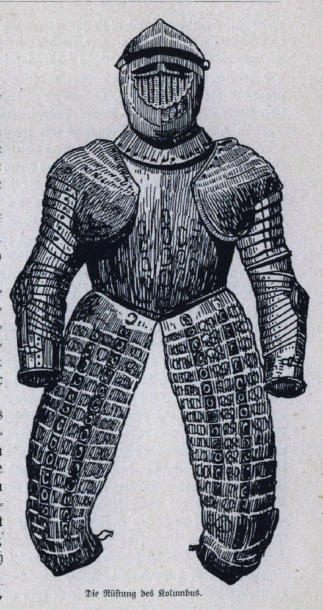
Denn kaum hat er die goldführenden Flüsse Haitis entdeckt, so ist sein Entdeckungsdrang stark abgekühlt, und er hat nur noch Sinn für die Hebung der Schätze.
Kaziken auf Haiti, mit denen Kolumbus sich angefreundet, bringen Goldklümpchen, Gewürze und andere Kostbarkeiten. Aus den Trümmern der Santa Maria läßt Kolumbus eine kleine Festung bauen, in der er mehrere seiner Matrosen und Handwerksleute, insgesamt neununddreißig Mann, die sich freiwillig erboten hatten,[S. 28] zurückläßt; zugleich versorgt er sie für ein ganzes Jahr mit Zwieback, Pulver und Geschützen. Die Zurückgebliebenen sollten inzwischen die Erzeugnisse des Landes kennen lernen, seine Metalle und Kräuter, sollten Sitten und Sprache der Indianer studieren, vor allem aber nie vergessen, Goldtausch zu treiben. Er hoffe, nach seiner Wiederkehr eine Tonne Goldes vorzufinden!
Am 4. Januar schied Kolumbus und wandte sich mit der gebrechlichen Nina nach Osten. Nach dem Schiffbruch der Santa Maria empfand Kolumbus das Fehlen der Pinta doppelt schwer, weil es zu gefährlich war, mit dem einzigen Schiffe längere Küstenfahrten zu unternehmen. Auch bedrückte ihn der Argwohn, Alonso Pinzon sei vielleicht nach Spanien vorausgeeilt, um den Hof gegen Kolumbus in feindliche Stimmung zu bringen. Am 6. Januar wurde indes die Pinta wieder gesichtet. Alonso kam an Bord der Nina und versuchte, mit unhaltbaren Entschuldigungen seine Entfernung zu beschönigen. Kolumbus durchschaute den Mann; er fand es aber für gut, seinen Groll bis zur Heimkehr zu verbergen; desto reifer wurde sein Entschluß, sich eines so unzuverlässigen Begleiters rasch zu entledigen.
Am 12. Februar erhob sich ein Sturm. In der Nacht zog ein Gewitter vorüber, die Gewalt des Windes steigerte sich am Tage, und die hohle See schleuderte die Fahrzeuge erbarmungslos umher. In der Nacht zum 14. Februar verschlimmerte sich die Lage immer mehr, und in diesen angstvollen Stunden verschwand die Pinta. Am Morgen des 15. Februar wuchs die Gefahr des fürchterlichen Sturmes in so hohem Grade, daß Kolumbus eine Pilgerfahrt gelobte. Inmitten dieser Wut der Elemente ängstigte Kolumbus auch der Gedanke, daß, wenn er nun unterginge, mit ihm auch sein großes Entdeckergeheimnis ins Meer sinken könnte, und seine Kinder dann nicht die Früchte seiner Mühsal ernten würden. Darum schrieb er einen Brief, in dem er die Ergebnisse seiner Entdeckung in kurzen Worten niederlegte. Er versiegelte das Pergament und verhieß dem glücklichen Finder[S. 29] ein Geschenk von tausend Dukaten, wenn er das Schriftstück uneröffnet dem kastilischen Hof überbringen würde. Und heimlich, ohne daß es das Schiffsvolk merkte, verwahrte er dieses Pergament in einer Tonne, die er ins Meer warf.
Erst jetzt lichtete sich der Himmel, und die See beruhigte sich ein wenig. Man sah zwar in der Ferne schon die bekannten heimatlichen Küsten, aber erst am 17. Februar konnte man sich ihnen nähern; ein ausgeschicktes Boot kundschaftete aus, daß man sich vor der Insel Santa Maria befand.
Hier aber, wo eine portugiesische Niederlassung den kaum dem Tode Entronnenen eine gastfreundliche Aufnahme versprach, fanden sie nur eifersüchtigen Argwohn, Hinterlist und Heuchelei. Nur mit Mühe entging Kolumbus diesen Nachstellungen und erlangte so viel, daß er seine notwendigsten Bedürfnisse an Holz, Wasser und Ballast hier einnehmen durfte. Aber bei der fortgesetzten Fahrt wurde seine Standhaftigkeit auf neue Proben gestellt, als ein noch wütenderer Sturm seinem elenden Schiffchen einen sicheren Untergang drohte. Er wäre unvermeidlich an der portugiesischen Küste gescheitert, hätte sich nicht gleichzeitig die Mündung des Tajo vor ihm geöffnet. Die Besorgnis, einer ungastlichen Behandlung zu begegnen, konnte ihn nicht abhalten, sich in den Nothafen zu flüchten. Hier am 4. März glücklich angelangt, gab der Admiral seinen Souveränen vor allen Dingen durch einen Eilboten, dann aber auch dem König von Portugal Bericht von seiner Ankunft und bat um die Erlaubnis, vor Lissabon ankern zu dürfen. Während die ganze Bevölkerung Lissabons sich erstaunt und voll freudiger Neugier an Bord seines Schiffes drängte, kam ein Brief vom Könige, der Kolumbus zu einem Besuche einlud. Mit allen Ehren seines hohen Ranges wurde Kolumbus empfangen. Er durfte sitzend erzählen und sein Haupt bedeckt halten. Der König Johann verriet durch nichts seinen Ärger über den Erfolg der Entdeckungsfahrt, und seine Reue, Kolumbus nicht in eigene Dienste genommen zu haben. Ganz[S. 30] nebenbei bemerkte der König, es sei wohl noch fraglich, ob nach den Verträgen, die zwischen Portugal und Spanien bestünden, die neuentdeckten Länder nicht doch im portugiesischen Machtbereiche lägen. Kolumbus erwiderte, ihm sei von solchen Verträgen nichts bekannt. Einige Höflinge, denen die Sorge des Königs Verdruß bereitete, erboten sich nun, mit Kolumbus Händel anzufangen, um ihn dann hinterrücks zu töten, im Glauben, daß durch den Tod des Admirals die Entdeckungsfahrten der Spanier überhaupt aufhören würden. Aber der König wies den Anschlag von sich und wollte Kolumbus sogar sicheres Geleit mit auf die Reise geben. Kolumbus zog es aber vor, zu Schiff nach Spanien heimzukehren. Mit seinen Matrosen, seinem Gold und den übrigen Schätzen und Merkwürdigkeiten, die er mitgebracht hatte, wollte er in demselben Hafen wieder einlaufen, von dem er ausgegangen war.
Inzwischen hatte der auf der Pinta vorausgeeilte Alonso Pinzon von der Entdeckung dem Könige bereits Mitteilung gemacht und bat um eine besondere Audienz. Der König ließ ihm aber kurzerhand zurückschreiben, er habe im Gefolge seines Admirals zu erscheinen. Diese königliche Ungnade brach Alonso das Herz; er starb einige Tage darauf, nachdem er diese Antwort erhalten hatte.
Am 15. März 1493 kam Kolumbus wieder auf der Reede von Palos an, wo er unter dem unbeschreiblichen Jubel der ganzen Stadt empfangen wurde, und am 21. März zog er unter gesteigertem Freudengeschrei des Volkes, unter Prozessionen und Glockengeläute in Sevilla ein, um vor seinen König zu eilen.
Ein Eilbote meldete den Majestäten, die damals in Barcelona Hof hielten, daß ihr Admiral aus der Neuen Welt glücklich zurückgekehrt sei und vor Begierde brenne, ihnen die Wunder der Neuen Welt vorzuzeigen.
[S. 31]
Durch ein schmeichelhaftes Schreiben wurde er eingeladen, schleunigst an den Hof zu kommen; Mitte April traf Kolumbus ein. Von überallher strömten die Menschen zusammen, denn das Gerücht der unerhörten und geglückten Reise flog ihm voran. Sein Empfang war großartig, überwältigend; es war der glorreichste Tag seines Lebens; die glänzende Vergeltung für die Verkennung, Verspottung und das jahrelange Warten. In feierlicher Audienz, die auf dem Markte stattfand, wurde er empfangen; der König und die Königin, umgeben von den Großen des Reiches und von unzähligen Rittern aus Kastilien, Katalonien, Valencia und Aragon, erhoben sich zu seiner Begrüßung, reichten ihm die Hand zum Kusse und gestatteten, daß er sitzend von seiner Fahrt erzähle — die höchste Ehre, die man ihm erweisen konnte.
Das dichterische Wort stand dem Admiral zu Gebote, und so schilderte er die Entfesselung des Weltmeers und die Entschleierung einer neuen Welt auf der bisher noch nicht betretenen Erdhälfte. Er zeigte die mitgebrachten Produkte vor: Goldkörner, Erzbarren, Bernstein, Baumwolle, Tabak, Zweige und Wurzeln von aromatischen und medizinischen Pflanzen, Aloe, Mastix, Rhabarber, Mais, Yams, Bataten; er führte gegen vierzig prächtig gefärbte Papageien und endlich seine sechs Indianer vor, die er mitgenommen hatte. Dann schilderte er die herrlichen Tropenlandschaften, die fruchtbaren Gefilde, die Gutartigkeit der Eingeborenen, von denen er die Überzeugung aussprach, daß sie bald würden zum Christentume bekehrt werden.
Kolumbus war für kurze Zeit der Meistgefeierte am spanischen Hofe und der Meistbewunderte der Zeitgenossen. Oft erschien der König zu Pferde, neben ihm zur Rechten der Thronerbe und zur Linken Kolumbus.
Um diese Zeit soll bei einer Tafel, deren Gäste die Entdeckung des Kolumbus anzweifelten, dieser ein Ei auf den Tisch gestoßen und gesagt haben: »So wie dies Ei hier auf dem Tische steht,[S. 32] so sicher habe ich die Neue Welt entdeckt.« Aber die Geschichte vom »Ei des Kolumbus« ist von A bis Z erfunden; schon Voltaire hat nachgewiesen, daß sie bereits fünfzig Jahre vorher in ganz anderem Zusammenhange passiert war.
Auf den Vorschlag des Kolumbus wurden sofort die Vorbereitungen zu einer neuen Fahrt, einem großen Kolonisationszuge, vorbereitet. In einem halben Jahre waren vierzehn Karavellen und drei Kauffahrer, also siebzehn Schiffe insgesamt, ausgerüstet und sehr große Summen zur Verfügung gestellt. Eine große Zahl von Edelleuten hatte sich zu dem abenteuerlichen Zuge erboten; Ordensgeistliche folgten ihnen, die als Glaubensbringer reisen wollten; Ackersleute, die in der Neuen Welt europäisches Getreide, Zuckerrohr und andere Kulturpflanzen anbauen sollten; man nahm die ersten europäischen Haustiere, besonders Pferde und Rinder, Schafe und Schweine, mit, die sich später in der Neuen Welt ungeheuer vermehrten; Bergleute kamen mit, um die Golddistrikte auszubeuten. Zimmerleute, Maurer und andere Handwerker sollten für die Bedürfnisse der Kolonisten sorgen. Eine ansehnliche Truppenmacht sollte die Ansiedler beschützen, darunter waren besonders zwanzig Lanzenreiter, die später der Schrecken aller Indianer wurden. Im ganzen gingen, die Matrosen mitgerechnet, mehr als fünfzehnhundert besoldete Menschen mit. Für die Lebensbedürfnisse war in umsichtigster Weise gesorgt; den Oberbefehl über alle hatte der Vizekönig von Indien, Christoph Kolumbus.
Aber das meiste mitgelaufene Volk sah sich in dem goldarmen Lande nur zu bald arg enttäuscht; es erschlaffte in dem feuchtwarmen Klima und bildete bald, da es arbeitsunfähig und unlustig war, eine verhängnisvolle Plage für das neue Land.
Der Reiz des Neuen und Wunderbaren liegt nicht mehr über der zweiten Reise des Admirals. Am 25. September ging die Flotte von Kadix aus unter Segel und steuerte nach den Kanarien. Schon am 3. November kam die erste Insel in Sicht,[S. 33] die Sonntagsinsel, Dominica, genannt wurde. Dann folgten Marigalante, Gudalupe, Monserrate. Vor der Insel Santa Cruz am 14. November angelangt, hatten sich in einem Kanu sechs menschenfressende Kariben, vier Männer und zwei Frauen, den Schiffen genähert und sie ein paar Stunden lang so starr und regungslos betrachtet, daß ihnen ein zurückkehrendes spanisches Boot unbemerkt den Weg nach dem Lande abschneiden konnte. Sobald die Wilden bemerkten, daß die Flucht unmöglich sei, griffen Männer und Weiber zu ihren vergifteten Pfeilen und fielen die fünfundzwanzig Spanier in dem Boote an, von denen sie zwei tödlich verwundeten. — Das spanische Boot warf das Kanu endlich um, aber die Kariben, schwimmend und im Wasser den Kampf erneuernd, flüchteten behend ans Land, so daß die Spanier nur einen einzigen schwer getroffenen Kariben an Bord zurückbrachten.
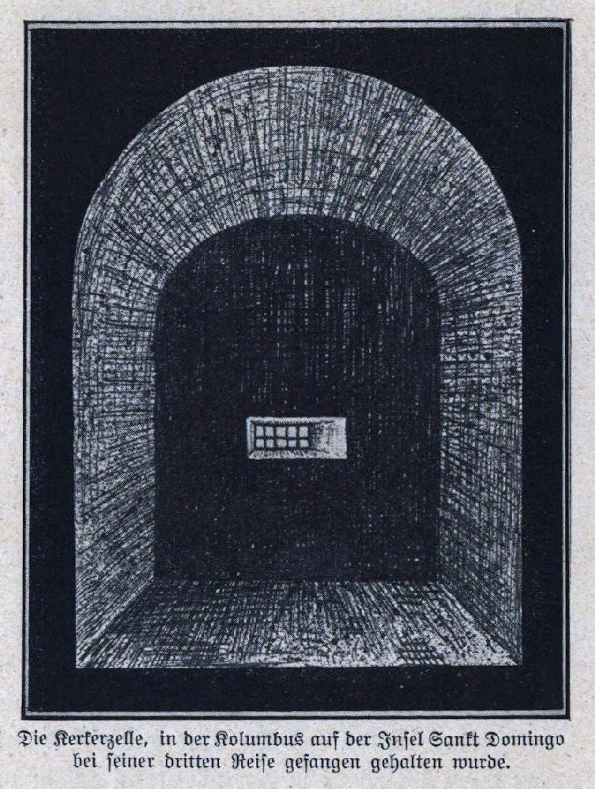
Nachdem man noch einen großen Inselschwarm berührt hatte, wurde die Insel Puerto-Rico entdeckt. Am 27. November wurde die Stätte endlich erreicht, wo man vor kaum einem Jahre auf Haiti den Grund zu einer Kolonie gelegt hatte.
[S. 34]
Hätte Kolumbus auch nicht sofort aus dem bangen Schweigen, das längs der Küste herrschte, eine dunkle Ahnung schöpfen müssen, so konnte ihn doch bei einem Landen der Anblick des völlig verödeten und gewaltsam durch Feuer zerstörten Forts über das traurige Schicksal der zurückgelassenen Landsleute nicht mehr im ungewissen lassen. Bald ergab sich aus den Berichten der Eingeborenen, daß die Weißen, sobald der Admiral sich entfernt hatte, sich allen rohen Eingebungen hingegeben hatten und die Eingeborenen durch Habgier und Gewalttätigkeit bis zum äußersten trieben; diese hätten ihr Joch aber trotzdem ertragen, wenn nicht ein feindlich gesinnter Kazike, der auf der Insel allgemein gefürchtet war, die Weißen überfallen und niedergemetzelt hätte. Da lagen nun die Habseligkeiten der Europäer jämmerlich umhergestreut; man stieß auf Leichen, über die seit etwa einem Monat hohes Gras gewachsen war.
Die Gegend von Navidad eignete sich wegen des Mangels an Steinen nicht zu einer Neugründung und auch die Ostküste, an der die Gründung der Stadt Isabella geplant war — die Straßen waren schon abgesteckt und der Grundstein zu einer Kirche und einem Spital bereits gelegt — mußte wieder verlassen werden, weil der dritte Teil der Einwanderer von heftigem Fieber befallen wurde. Ein Teil der Flotte und ein Teil der Kolonisten ging im Februar 1494 wieder nach Spanien zurück, so daß die Kolonie nunmehr nur noch neunhundert Köpfe zählte.
Unter ihnen gab es eine große Anzahl Mißvergnügter, die bei jeder Gelegenheit zur Meuterei gegen den Statthalter bereit waren. Auch gestaltete sich das Verhältnis zu den Eingeborenen höchst unfreundlich; Überfälle kamen oft genug vor und sie konnten nur durch die imponierende spanische Reiterei, die die Wilden mehr als den lebendigen Teufel fürchteten, zurückgeworfen werden.
Am 24. April brach Kolumbus zur weiteren Erforschung der Länder mit drei Schiffen auf; vor allem wollte er Gewißheit darüber haben, ob Kuba ein Festland oder eine Insel sei. Unter[S. 35] Androhung von Peitschenhieben für jeden späteren Widerspruch, läßt er seine Mannschaft eine Urkunde beschwören, daß sie Kuba für einen Teil des asiatischen Festlandes halte. Damit ist für ihn die Auffindung des Seewegs nach Indien erledigt, und er kehrt wieder zu seinen Goldwäschereien auf Haiti zurück. »Time is money«, könnte beinahe ein kolumbisches Wort sein.
Die Anstrengungen der Reise, die Schlaflosigkeit, zu der ihn die Pflicht der äußersten Wachsamkeit gebieterisch zwang, hatten die Kräfte des Admirals so erschöpft, daß er von Bewußtlosigkeit und Ohnmachten befallen wurde, weshalb man im höchsten Grade um ihn besorgt war. Man eilte nach Isabella und ließ am 29. September die Anker fallen. Kolumbus verfiel aber in eine Krankheit, die ihn fünf Monate aufs Lager warf.
Im Frühjahr 1496 kehrte Kolumbus mit etwa zweihundert untauglichen Ansiedlern, die der Kolonie teils durch ihren Müßiggang, teils durch ihre Widersetzlichkeit und teils durch Krankheit zur Last fielen, in die Heimat zurück.
Am 11. Juni landete er wieder in Kadix und begab sich sofort an den Hof nach Burgos. Er benützte diese Reise wieder dazu, die vermeintlichen Schätze Indiens in öffentlichem Gepränge zu zeigen, mit dem er in die Städte einzog; namentlich mußten sich die mitgenommenen Indianer mit den Goldfunden schmücken.
Und nun dauerte es bis zum Mai 1498, ehe Kolumbus seine dritte Reise antreten konnte. Aber da er sich krank fühlte und augenleidend war, brach er seine Fahrt an der Küste von Venezuela ab, um nach Haiti zu gehen, wo unterdessen sein Bruder die Stadt San Domingo angelegt hatte, die älteste europäische Ansiedelung in Amerika, die noch heute besteht. Am Hafen dieser Stadt ragt noch heutigestags ein Baum empor, an dem Kolumbus sein Schiff mit Tauen befestigt haben soll.
Die folgenden beiden Jahre waren für Kolumbus die schwersten seines Lebens; sie bedeuten den Zusammenbruch seiner[S. 36] königlichen Machtbefugnisse. Er hatte das Zepter des Vizekönigs in der Hand und sollte es nun mit schmachvollen Ketten vertauschen.
Kolumbus fand die Kolonie in vollem Aufruhr; der Oberrichter Franzisco Roldan, der seinen hohen Rang nur der Gunst des Kolumbus zu danken hatte, stand an der Spitze der Aufwiegler. Kolumbus bestrafte ihn, mußte ihn aber schließlich wieder in sein Amt einsetzen. Allerlei böse Gerüchte, die über Kolumbus in Umlauf gesetzt wurden, erreichten sogar die Ohren der spanischen Majestäten, und um dem Gerede zu steuern, hatte Kolumbus um einen bevollmächtigten königlichen Untersuchungsrichter gebeten. Und so wurde denn Franzisco de Bobadilla nach Haiti geschickt, dem selbst Kolumbus, der Vizekönig, Gehorsam zu leisten hatte, der sich aber vom ersten Augenblick an als ein Feind des Kolumbus erwies. Dicht wie ein Heuschreckenflug regneten nun die meist ungerechten und unbegründeten Anklagen der Kolonisten auf Kolumbus herab, so daß dem Untersuchungsrichter dadurch eine willkürliche Handhabe geboten war, Kolumbus zu bestrafen. Er ließ ihn in Ketten werfen und schaffte ihn mitsamt seinen beiden Brüdern nach Europa, wo sie im November 1500 ankamen.
Kolumbus war durch die Schmach, die man ihm angetan und durch die Verletzung seiner Privilegien tief gebeugt; er war gebrochen und der überaus stolze Mann hat diesen jähen Sturz nie mehr überwinden können. In Spanien machte die Demütigung des großen Entdeckers ungeheures Aufsehen und auf die Majestäten einen geradezu peinlichen Eindruck. Sie hatten nicht gewollt, daß der Vizekönig so schmachvoll behandelt werde. Sie gaben daher sofort Befehl, Kolumbus zu befreien und ihn mit allen gebührenden Ehren auszuzeichnen. Man schickte ihm zweitausend Dukaten, seine nächsten Bedürfnisse, die sein Rang erheischte, zu bestreiten. Er kam vor den Thron und als er vor Ferdinand und Isabella sein Knie beugte, erstickte heftiges Schluchzen seine Rede. Die Monarchen ließen ihn aufheben[S. 37] und gaben sich Mühe, ihn zu besänftigen, indem sie jede Ermächtigung zu Bobadillas Roheit ableugneten und dem Admiral den vollen Genuß seiner Würden und Privilegien zusicherten. Außerdem ernannten sie einen neuen, unparteiischen und gerechten Schiedsrichter in der Person des Nicolas de Ovando, der im Februar 1502 mit einer ansehnlichen Truppenmacht hinüberging. Bobadilla war freie Rückreise nach Spanien zugesichert; Roldan und sein aufwieglerischer Anhang wurde aber gefangengenommen.
So war die Ruhe bald wiederhergestellt. Und um Kolumbus wieder seinem eigentlichen Berufe zuzuführen, gewährte man dem Admiral, wie er es gewünscht, zum vierten Male einige Schiffe, damit er seine Entdeckung weiterführen könne. Am 9. Mai 1502 brach er mit vier kleinen Karavellen von Kadix wieder auf. Auf dieser Fahrt begleitete ihn sein Bruder Bartholomäus und sein dreizehnjähriger Sohn Ferdinand.
Bis zum 15. Juni hatte er eine glückliche Fahrt und erreichte leicht die Kette der kleinen Antillen bei der Insel Martinique. Der neue Statthalter Ovando war gerade im Begriff, die erste größere Goldfracht von zweihunderttausend Goldpesos (also zirka zwei Millionen Mark) nach Spanien zu senden, als Kolumbus ihn bat, die Reise um acht Tage zu verschieben, weil ein furchtbarer Orkan bevorstehe, den Kolumbus aus den Sternen, deren er kundig war, vorausgesagt hatte. Aber seine Warnung wurde in den Wind geschlagen. Die Flotte lief aus, geriet wirklich in einen Orkan, und zwanzig Schiffe gingen mit Mann und Maus unter. Unter den Opfern befanden sich auch die Feinde des Kolumbus, Bobadilla und Roldan. Als Kolumbus später davon erfuhr, hielt er es für ein Gottesgericht, das seine Gegner bestrafte.
Am 14. Juli segelte Kolumbus weiter und erreichte Ende des Monats die Insel Guanaja im Golf von Honduras. Dort stieß er unerwartet auf das erste Kulturvolk der Neuen Welt, auf etwa fünfundzwanzig Handelsleute vom Mayastamme, die[S. 38] mit einer großen Barke dreißig Meilen über See gekommen waren. Sie hatten ihre Frauen und Kinder mit an Bord; das Schiff hatte ein schattiges Dach von Palmenzweigen zum Schutz gegen Regen und Sonne. Ihre Waren bestanden in buntgefärbten und gewirkten Baumwollentüchern und ebensolchen Hemden ohne Ärmel und Schürzen, Holzschwertern, deren Schneide durch Splitter gebildet wurde, kupfernen Beilen zum Holzfällen und kupfernen Schüsseln und Schellen. Als Geld dienten ihnen Kakaobohnen, von denen sie einen großen Vorrat mit sich führten. Ihre Lebensmittel waren Mais und eßbare Wurzeln. Sie waren furchtlos, aber von großer Schamhaftigkeit.
Kolumbus fragte auch sie nach dem Goldlande und man wies ihn nach dem Süden. Aber die Fahrt dahin brachte Sturm, Unwetter, Gefahren und Enttäuschung; erst am 12. September wurde das Wetter günstiger. Am 25. September kam Kolumbus zum Indianerdorfe Kariai; hier hielt er Rast, um die Schiffe, die durch den Sturm arg gelitten hatten, wieder flott zu machen. Am 5. Oktober steuerten die Schiffe weiter, aber an der Küste von Veragua überraschte sie ein Sturm, wie sie ihn bisher noch nicht erlebt hatten. Noch nie hatte man das Meer so hoch, so fürchterlich, so mit Gischt bedeckt gesehen. Die Schiffe wurden in der See festgehalten, die wie ein Kessel über starkem Feuer kochte. »Der Himmel sah ganz entsetzlich aus und flammte Tag und Nacht wie ein Schmelzofen; die Blitze zuckten derart, daß man fürchten mußte, Segel und Masten würden davon versengt. Die Donner rollten so grauenhaft, daß wir Angst hatten, samt und sonders mit den Schiffen verschlungen zu werden. Dabei stürzte der Regen wie eine Sündflut nieder. Die Mannschaft, die kaum etwas Eßbares hatte — denn der Schiffszwieback war voller Würmer — war so ermattet, daß sie den Tod als eine Erlösung aus diesem Jammer ansah. Die Schiffe verloren zweimal ihre Schaluppen, Anker, Takelage und waren ohne Deck und ohne Segel.« Zum Unglück waren die wurmzerfressenen Schiffe noch überdies seeuntüchtig.
[S. 39]
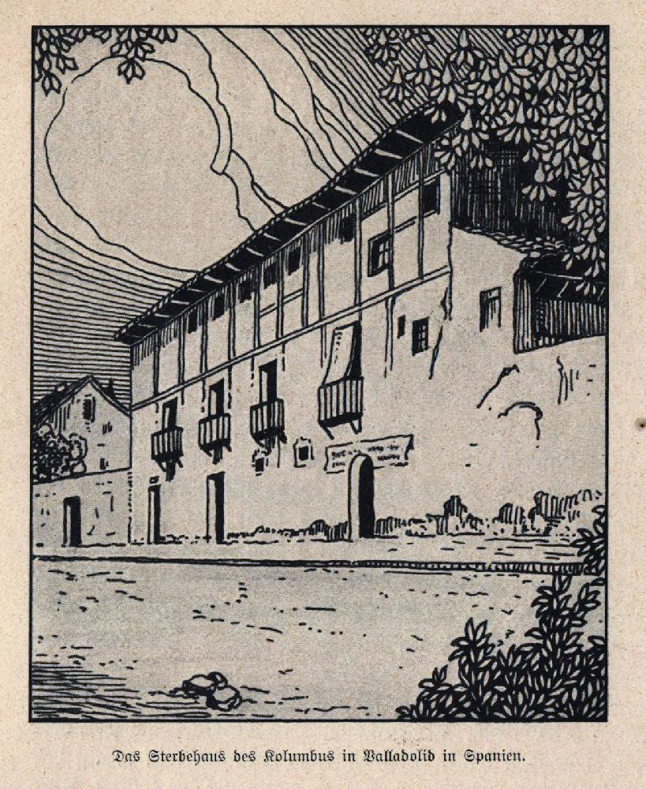
Erst im Februar 1503 schlug das Wetter um. Während Kolumbus an Bord blieb, erforschte sein Bruder das Land und fand überall reiche Goldspuren. Kolumbus wollte hier eine Niederlassung gründen; sein Plan wurde aber durch Indianer vereitelt, die die Spanier angriffen und sie zwangen, sich auf ihre Schiffe zurückzuziehen. Eine Karavelle blieb als seeuntüchtig am Lande zurück; mit den übrigen drei Schiffen trat Kolumbus[S. 40] den Heimweg an. Es war Ende April. Auf weitere Entdeckungsfahrten konnte Kolumbus nicht ausgehen; er litt zu sehr unter den wilden Stürmen, die sich immer wiederholten und seinen Schiffen so zusetzten, daß er sich endlich gezwungen sah, um das nackte Leben zu retten, alle Schiffe auf den Strand von Jamaika laufen zu lassen. Die Schiffe, die bereits große Löcher hatten und deren Wände aussahen wie Honigwaben, füllten sich rasch bis zum Deck mit Wasser, so daß die Matrosen nur noch das Verdeck zum Aufenthalt benutzen konnten. Anfangs erwiesen die Indianer sich freundlich und lieferten Lebensmittel und Boote; später aber verweigerten sie dies, bis Kolumbus klugerweise eine gerade eintretende Mondfinsternis benutzte, um den abergläubischen Indianern mit dem Zorne des Himmels zu drohen. Das half denn auch. Dann galt es wieder, eine gefährliche Meuterei zu unterdrücken, die erst im Mai 1504 mit der Niederlage der Empörer endigte. Sechs Wochen später schlug die Stunde der Erlösung. Der Statthalter Ovando hatte von St. Domingo Hilfe geschickt, und im September kehrte Kolumbus endgültig in die Heimat zurück, um die Neue Welt nie wieder zu betreten. Ende November landete er in Kadix als ein Schiffbrüchiger.
Was war die Ernte dieses Lebens voller Mühen und Gefahren? Krankheit, Erniedrigung und Armut. In Kastilien besaß Kolumbus keinen Dachziegel; in Spanien war er auf das Wirtshausleben angewiesen, und er hatte nie die Mittel, seine Rechnungen zu bezahlen. Siech kehrte er heim; er hatte keine Freunde mehr. Niemand kümmerte sich um den armen Schiffbrüchigen; man stellte sich bloß, wenn man seinen Namen nannte. Er mußte am eigenen Leibe die bittere Wahrheit bestätigt finden, daß die Geschichte der Menschheit zum großen Teil die Geschichte menschlicher Niedrigkeit ist. Da er aufhörte, zu nützen, fing er an, lästig zu werden.
[S. 41]
Der gottgesandte Vizekönig ist nun dem Bettler gleichgeachtet, denn der spanische König weiß plötzlich nichts mehr von all den verbrieften Versprechungen, die er Kolumbus gemacht hat. Man hat bald vergessen, daß er der Welt neue Hoffnungen, neue Ziele, neue Bestrebungen, neue und weitere Grenzen gegeben hat; daß er die physische Geographie und die Ethnographie bereichert; daß er das menschliche Denken vertieft und die Entwicklungsmöglichkeit des Menschen beträchtlich vergrößert hat. Man schenkt diesem stolzen Sieger — Mitleid. Man vergißt ihn selber rasch. Er stirbt am 20. Mai 1506 zu Valladolid; aber sein Tod geht eindruckslos vorüber.
Was sterblich an ihm war, liegt seit 1796 im Dome zu Habana.
Welch seltsamer Art sind doch die Schauer, die wir beim Anblick eines uralten Palastes empfinden, in dem ein großer Mensch gelebt hat! Als ob irgend etwas von dem Geiste des längst Vermoderten noch an den Steinfliesen hafte, so leise treten wir auf, vorsichtig durch die gewölbten Hallen tastend, als hätten wir Furcht, den Toten aus seinem vielhundertjährigen Schlafe zu wecken.
Hier ist ein Stück Stein aus der Mauer des Hauses, in dem Michelangelo Buonarroti seine bildhauerischen Wunder schuf. Der Stein zeichnet sich durch nichts von anderen Steinen aus. Und doch bewahre ich ihn pietätvoll auf und erkläre meinen Freunden mit wichtiger, frommer Miene: Hier ist ein Stück Stein aus der Mauer des Hauses, in dem Michelangelo gelebt hat .....
Und selbst die Ironischen und Überlegenen lachen nicht; sie werden ernst und schweigsam, als weile Michelangelo unter uns.[S. 42] Der künstlerisch empfindende Mensch kennt dieses reine Gefühl, das weder der Ehrfurcht vor den fünf Jahrhunderten entspringt, noch durch den Rausch erweckt wird, den der Name bewirkt. Ohne zum Götzenanbeter zu werden, fühlt man aber plötzlich alle kritischen Teufel in sich durch irgendeinen guten Engel besiegt, und der Verstand, dieser Maulwurf, ist vollständig überrumpelt von der Empfindung. Man sinkt hinunter in eine tote Epoche, die voller Glanz war und Größe. Man ist in einer kleinen Zeit allmählich allem Großen so fremd geworden, daß man beinahe erschrickt, wo man ihm begegnet. Und wo begegnete man ihm auf kleinem Raume häufiger, als in Florenz, der Stadt Leonardo da Vincis, Raffaels und Dantes? Man weiß, welch eine unerhörte Vereinigung von großer Kunst und Wissenschaft die Medici zu schaffen wußten, und daß viele der besten Namen der florentinischen Geschichte sich in einen kurzen Zeitraum zusammendrängen. Auch der Name Michelangelo ist darunter ....
Er wurde am 6. März 1475 im toskanischen Städtchen Caprese, in der damaligen Republik Florenz gelegen, als Sproß eines alten Florentiner Adelsgeschlechtes geboren. Sein Vater, der Bürgermeister und Richter, ließ ihm bei der Geburt von den Sternkundigen das Horoskop stellen, und man fand, daß er unter einem glücklichen, aber auch verhängnisvollen Stern geboren sei.
Nach abgelaufener Amtszeit kehrte der Vater auf sein Gut in Settignano zurück. Hier bekam der kleine Michelangelo die Frau eines Steinmetzen als Amme, die auch die Tochter eines Steinmetzen war; darum scherzte Michelangelo in späteren Jahren, er habe die Bildhauerkunst mit der Ammenmilch eingesogen. Als er heranwuchs und eine gelehrte Schule besuchte, benutzte er jede freie Zeit zum Zeichnen, obwohl der Vater ihn wegen dieser Nebenbeschäftigung heftig tadelte. Aber der künstlerische Drang in dem jungen Michelangelo war so stark, daß der Vater[S. 43] nicht nur das Widerstreben aufgeben mußte, sondern sogar beschloß, den Sohn in der Malerei ausbilden zu lassen. Am 1. April 1488 wurde der dreizehnjährige Michelangelo bei Domeniko Ghirlandajo, dem bedeutendsten Maler von Florenz, in die Lehre gegeben, um die Malerei zu erlernen. Für die Dienste, die er seinem Meister während der dreijährigen Lehrzeit leisten würde, sollte Michelangelo eine Vergütung von vierundzwanzig Gulden (etwa hundertfünfundsechzig Mark) bekommen.
In den Lebensbeschreibungen Michelangelos wird viel erzählt von den zahlreichen Proben ungewöhnlicher Begabung, die der Lehrling ablegte. Besondere Bewunderung fand auch außerhalb der Werkstätte eine gemalte Nachbildung des heiligen Antonius, des berühmten Kupferstiches von Martin Schongauer. Auf dem Fischmarkte studierte der junge Michelangelo die opalisierenden Farben der Schuppen, Flossen und Augen der mannigfachen Fische, um auf seinen Bildern die Farben naturgetreu wiedergeben zu können. Und Michelangelo malte das, was er sah, in Form und Farbe so echt und naturwahr — heute würde man sagen: mit so erstaunlichem Naturalismus —, daß sein Meister eines Tages entzückt ausrief, daß der Lehrling mehr verstehe als sein Meister. Das geschah nämlich, als Michelangelo einmal, als Ghirlandajo an dem Fensterschmuck von S. Maria Novella arbeitete, das Malergerüst mit einigen darauf befindlichen Gehilfen abzeichnete. Von der großen Gewandtheit, die er sich in der Nachahmung alter Kupferstiche erwarb, machte Michelangelo bei der Ausführung seiner Studien und Einfälle später gern Gebrauch.
Lorenzo de Medici, der Herrliche, empfand es um diese Zeit als einen Mangel, daß Florenz sich nur durch seine Maler, nicht aber auch durch seine Bildhauer auszeichnete. Darum richtete er in dem Garten seines Palastes eine Art Kunstschule ein, deren Leitung er einem Sohne des großen Bildhauers Donatello, dem Bildhauer Bertoldo übertrug, der zugleich Aufseher der[S. 44] Antikensammlung war. Als Lorenzo sich nun an Ghirlandajo mit der Anfrage wandte, ob in seiner Werkstatt vielleicht einige junge Leute seien, die Lust hätten, die Bildhauerei zu erlernen, sandte ihm dieser einige seiner besten Schüler zu, darunter auch Michelangelo. Nachdem der junge Künstler durch seine ersten Tonmodelle schon die besondere Aufmerksamkeit Lorenzos erregt hatte, nahm er zum erstenmal einen Meißel zur Hand und versuchte sich an einem Stückchen Marmor, aus dem er eine grinsende Maske herausmeißelte. Zwischen den spöttisch verzogenen Lippen sah man die Zähne. Lorenzo betrachtete das Werk und bewunderte die Selbständigkeit und den Mut des Künstlers. Scherzhaft bemerkte er, der Kopf habe einen Fehler, denn alte Leute hätten kein so vollständiges Gebiß mehr; Michelangelo meißelte denn auch nachträglich mit kindlicher Gewissenhaftigkeit eine dem Leben nachgebildete Zahnlücke in den Mund der Maske.
Lorenzo fand an dem Wesen des jungen Künstlers und an seiner Begabung einen so großen Gefallen, daß er ihn unter seine Hausgenossen aufnahm. Der Vater Michelangelos, der nur ein kümmerliches Einkommen hatte, erhielt zum Dank für seine Einwilligung ein Amt, und als er um eine frei gewordene Stelle beim Zollamt bat, übertrug Lorenzo sie ihm sofort, die Bescheidenheit des Wunsches mißbilligend: »Du wirst immer arm bleiben!«
Michelangelo selbst erhielt ein monatliches Einkommen von fünf Dukaten und als Gunstbezeigung einen violetten Mantel.
So lebte Michelangelo über drei Jahre (von 1489-1492) im Mediceerpalast. Er speiste mit den Söhnen des Stadtoberhaupts und bewegte sich in den bunten Gesellschaften der geistreichen Männer, die an diesem Hofe verkehrten. Zwei Marmorwerke, die Michelangelo in jener Zeit nach eigener Erfindung ausführte, das »Madonnarelief« in Donatelloscher Manier und »Der Kampf der Lapithen und Kentauren«, zeigen schon prachtvoll die starke Eigenart und das Genie Michelangelos. Die Ausführung der Körper ist so vollkommen, daß sie bei einem so jugendlichen[S. 45] Bildhauer geradezu unbegreiflich erscheint. Schon seine anspruchsvollen Zeitgenossen sagten, besonders vom Kentaurenkampf, mit Recht, daß man nicht das Werk eines jungen Mannes, sondern das eines fertigen und reifen Meisters zu sehen glaube, der in seiner Kunst eine ebenso große Erfahrung wie Durchbildung genossen habe.
Die bewunderten Fresken des Masaccio waren für Michelangelo wie für das ganze damalige Künstlergeschlecht eine reine Quelle der Belehrung. Michelangelo zeichnete die Vorbilder aber mit größerem Geschick nach, als irgendeiner der anderen. Der Neid erwachte, und die Feindseligkeit gegen Michelangelo wurde noch besonders dadurch geschürt, daß er so unklug war, sich über die Fehler seiner Genossen lustig zu machen. Die Folge davon war, daß ihm einer eines Tages einen so heftigen Faustschlag ins Gesicht gab, daß sein Nasenbein zertrümmert wurde. Der Täter, Pietro Torrigiano, wurde zwar aus Florenz verbannt, aber Michelangelo blieb zeitlebens entstellt.
Als Lorenzo, der Herrliche, im April 1492 starb, war es für Michelangelo mit dem sorgenfreien, anregenden und glanzvollen Leben zu Ende. Er kehrte in sein Vaterhaus zurück. Er kaufte einen Marmorblock, der unbenützt dalag, und meißelte einen überlebensgroßen Herkules, der im Strozzipalast aufgestellt wurde. 1529 wurde das Bildwerk verkauft und an König Franz I. von Frankreich geschickt. Im siebzehnten Jahrhundert stand es in einem Garten von Fontainebleau, der 1713 zerstört wurde, und seitdem blieb auch der Verbleib des Herkules unbekannt. Verschwunden ist auch ein kleines hölzernes Kruzifix, das Michelangelo 1494 ausgeführt hatte und das auf dem Hochaltar der Kirche San Spirito aufgestellt worden war. Der Prior bewies dem jungen Michelangelo seine Dankbarkeit, indem er ihm im Kloster mehrere Zimmer zur Verfügung stellte, wo er ungestört seinem Wissensdrang Genüge tun und durch das Zergliedern von Leichen sich eine gründliche Kenntnis vom Bau des menschlichen Körpers verschaffen konnte.
[S. 46]
Pietro de Medici, Lorenzos Sohn, hatte nicht die glänzenden Eigenschaften des Vaters geerbt; aber auch er setzte Michelangelo wieder in seine vorige Stellung ein.
Es geschah während des eisigen Januars des Jahres 1494 ....
Vor dem Hause des alten Buonarroti, in einer dunklen und einsamen Gasse, standen eines Nachts drei Jünglinge in warme Mäntel gemummt. Trotzdem zitterten sie vor Kälte, denn es war ein grimmiger Frost. Der Wind umtobte stöhnend und pfeifend das schlafende Haus; aus einem einzigen Fenster nur fiel ein spärlicher Lichtschein auf die Straße. Zum zweitenmal ergriff nun einer der Jünglinge den bronzenen Türklopfer und pochte laut und wütend an das Tor. Endlich bemerkte man, wie das Licht sich zu bewegen begann, wie es aufzuckte und hin und her irrte und wie dann das erleuchtete Fenster dunkel wurde. Zugleich vernahm man Schritte im Flur, und bald darauf wurde die morsche Eichentür aufgeschlossen. In ihrem Rahmen stand ein kaum mittelgroßer Jüngling, der eine Windleuchte über seinem Kopfe hielt, mit der er auf die Straße hinausleuchtete.
»Wer da?« fragte er barsch.
»Freunde!« riefen drei Stimmen zugleich und lachten. Michelangelo leuchtete ihnen ins Gesicht und erkannte nun Baccio, Gentile und Mariotto.
»Ich kenne euch,« antwortete Michelangelo langsam, als wollte er sagen: »Ihr seid keineswegs meine Freunde.«
Er hatte sie am Hofe Lorenzos, seines jüngst verstorbenen Schutzherrn, kennen gelernt. Oft war er mit ihnen in den Prachträumen der mediceischen Paläste zusammengetroffen, in den Lorbeerhainen und Piniengängen von Carregi, in deren tiefen Schatten er an die Götter der Hellenen dachte; in den wundervollen Gärten der Villa Ambra, wo die Tage Platos von neuem heraufzukommen schienen.
[S. 47]
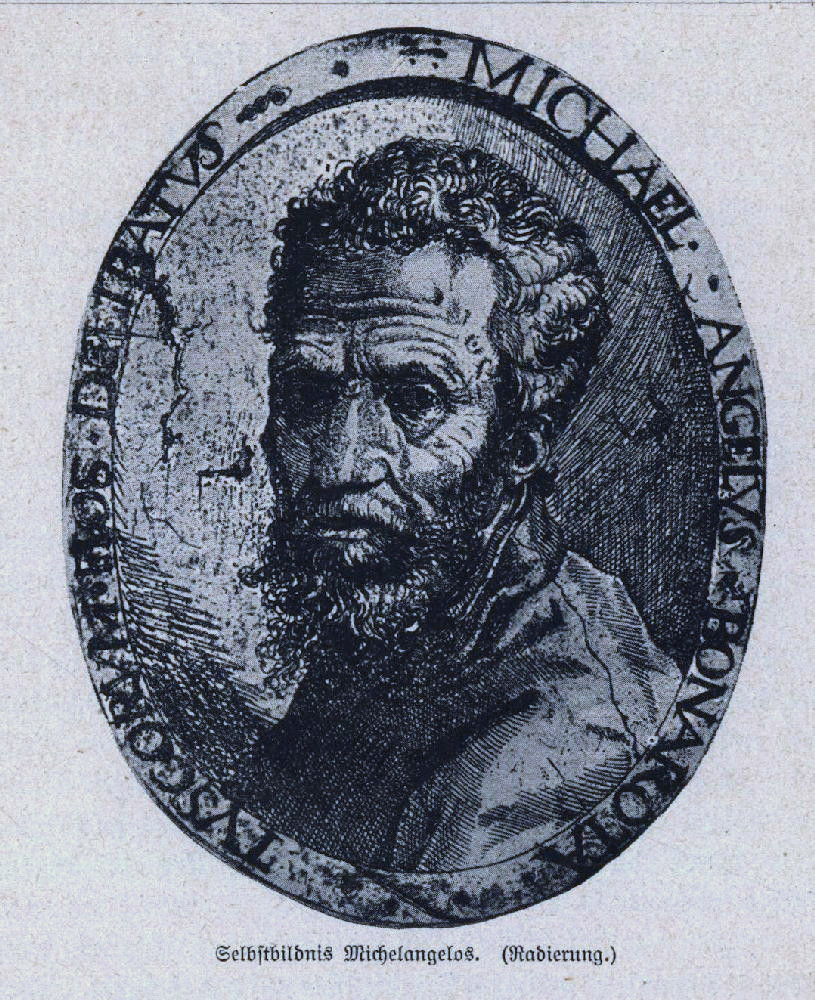
»Was wollt ihr von mir?« fragte Michelangelo endlich.
»Beim Zeus!« rief Baccio beleidigt aus, »vor allem einen freundlicheren Empfang!«
»Ruhe!« tönte die ernste Stimme Mariottos dazwischen. »Die alten Zeiten Lorenzos kehren wieder nach Florenz zurück,« sagte er, zu Michelangelo gewendet. »Piero folgt dem Beispiel seines Vaters. Mit dem kommenden Lenz halten nicht nur die Rosen ihren Einzug, sondern auch die vertriebenen Grazien. Es regt sich neuer Kunstsinn im Hause der Mediceer.«
[S. 48]
»Piero de Medici liebt die Kunst,« fügte Gentile hinzu, »und eben darum weiß er auch dich zu schätzen. Es würde ihn stolz machen, sagte er sogar, wenn er dich an sein Haus fesseln könnte.«
Michelangelo wandte sich schweigend und mit Verachtung ab.
»Es ist kalt,« sagte er, »was wollt ihr also von mir?«
Mariotto nahm das Wort: »Piero von Medici schickt nach dir. Er hält heute Hof im Pittipalaste. Inmitten von Gesang, Musik und Lärm hat er deiner gedacht. Er hat einen Wunsch an dich. Da haben wir uns angeboten, dich herbeizuholen. Also ziere dich nicht und komm!«
Michelangelo rührte sich nicht und schwieg.
»Hoffentlich erkennst du die Ehre,« sagte Baccio noch immer mürrisch; »du weißt, wer Piero ist, und wir sind keine Diener.«
»Ich gehe nicht,« antwortete Michelangelo kurz. »Ich danke euch und ich danke Piero von Medici. Sagt ihm, daß ich krank sei, daß ich über einem Buche grüble, das seines Vaters Freund, der treffliche Meister Poliziano, geschrieben.«
»Derselbe Poliziano,« rief Gentile aus, »weilt zur Stunde im Palaste und trug mir auf, dich in seinem Namen zu grüßen.«
»Willst du Piero mit deiner Weigerung beleidigen?« fragte Mariotto.
»Poliziano in Florenz? Im Pittipalaste? O!« Sein Antlitz heiterte sich auf; er stellte die Windleuchte auf das Gesimse. »Tretet ein!« bat Michelangelo; »ich gehe sofort mit euch!« und er eilte ins Haus, sich anzukleiden.
»Welch ein empörender Stolz!« brummte Baccio; »er spricht mit uns, als wären wir Lakaien! Als würde er uns eine Ehre erweisen!«
»Still!« warnte Mariotto, denn Michelangelo kehrte eben zurück, den Kopf mit einem Hute bedeckt und in den veilchenblauen Mantel eingehüllt, den Lorenzo ihm vor zwei Jahren geschenkt hatte.
[S. 49]
»Gehen wir also!« forderte Gentile auf; »ich bin vor Kälte ganz erstarrt.« Der Wind heulte und große Schneeflocken wirbelten in der kalten Luft, die um die Köpfe der vier Jünglinge tanzten.
»Komm schneller!« drängte Gentile; »wir haben die Diener unweit des Flusses mit Laternen warten lassen, weil wir deine stille Gasse nicht aus nächtlichem Schlafe wecken wollten. Wir dachten an das strenge Gesicht deines Vaters, und ich hoffe, wir haben ihn nicht aus dem Schlafe geweckt.«
Sie schritten eilig durch die dunklen, winkligen Gassen zwischen schweigenden Palästen dahin, die in der dicken Finsternis doppelt düster aussahen. Am Lugarno warteten die Diener mit Fackeln und Stocklaternen, die gespenstige Lichtreflexe auf die Umgebung warfen und riesenhafte Schatten erzeugten.
Der Arno rauschte und brauste, und am jenseitigen Ufer sah man die Kirche San Miniato sich wie ein finsterer Koloß vom dunklen Himmel abheben. Der Weg führte über die alte Brücke, wo sich niedrige Häuschen aneinanderschmiegten, als wollten sie sich gegenseitig vor dem Umfallen bewahren. Noch wenige Gassen, und Michelangelo stand mit seinen Gefährten vor dem riesenhaft aufstrebenden Palaste Pitti. Die Diener steckten die Fackeln in die eisernen Arme, die an den Eingangspfeilern befestigt waren, die im Augenblick blutigrot beschienen wurden. Eine Anzahl von Pferden stampfte ungeduldig auf dem Vorplatz, der fröhlichen Gäste Pieros harrend. Aus dem Innern des Palastes scholl von Zeit zu Zeit Fanfarenlärm heraus, Lachen und Gesang, der sich mit dem Heulen des Windes mischte.
»Endlich!« rief Baccio aus; »endlich sind wir am Ziele.« Sie schüttelten die Schneeflocken von ihren Mänteln und traten rasch in den Palast ein. Der Flur war hell erleuchtet; im taghellen Hofe rauschte ein Springbrunnen, während der Hintergrund von schwarzen Zypressen, Zedern und düsteren Pinien ausgefüllt wurde.
[S. 50]
Michelangelo betrachtete das seltene Schauspiel des Schneewirbels, aber seine Freunde zogen ihn fort, die majestätischen Treppen empor. Sie traten in einen großen Saal, der mit kostbaren Teppichen geschmückt war. In der Nähe des Kamins, in dem ein großes Feuer loderte, saß Piero von Medici und unterhielt sich lebhaft. Er nickte Michelangelo gnädig zu, hieß ihn kurz willkommen, wandte sich dann aber wieder sofort seiner Unterhaltung zu. Michelangelo beachtete den kühlen Empfang nicht; übrigens antwortete er ebenso zurückhaltend und nachlässig. Er wandte sich sofort dem Saale zu, und es dauerte auch nicht lange, bis er den ehrwürdigen Kopf des Dichters Poliziano entdeckt hatte, der einsam in der Nische eines hohen Fensters saß. Sofort war Michelangelo an seiner Seite. Sie begrüßten einander sehr herzlich und beide waren tief gerührt; offenbar dachten sie beide an die zusammen verlebten sonnigen Tage unter Lorenzo, dem Herrlichen. Sie seufzten auf und schwiegen einen Augenblick. Dann rückten sie einander näher, denn der Lärm, der im Saale herrschte, ließ die beiden ihre Einsamkeit doppelt empfinden. Sie konnten sich vertraulich miteinander unterhalten, ohne befürchten zu müssen, daß man sie stören würde.
»Wie lange habe ich dich nicht gesehen,« sagte Poliziano freudig bewegt.
»Und wie habe ich mich nach Euch gesehnt!« entgegnete Michelangelo. »Ihr wißt am besten, was Ihr mir wart. Ihr seid der Erste gewesen, der mir Mut und Anregung zur selbständigen Arbeit gegeben hat. Aus den Quellen Eures Geistes und Eures Wissens durfte ich Unwissender schöpfen und meinen Durst löschen.«
Poliziano lächelte und winkte mit der Hand das Lob ab. »Wäre der göttliche Funke nicht in dir gewesen, dann wären meine Anregungen vergeblich gewesen. Die Flamme wäre dann nicht ausgebrochen, mein lieber Michelangelo. Du warst der einzige unter Hunderten, ja unter einem ganzen Geschlecht,[S. 51] der für meine Worte empfänglich war. Empfänglich sein für das Schöne, das ist alles, Michelangelo. Du bist es im Übermaße. Wundere dich darum nicht, daß du so viele Neider hast.«
»Sie sagen, daß ich die Schönheit nicht sehe,« erwiderte der Jüngling düster und voll Gram.
»Da du die Schönheit wiedergibst, wie du sie siehst und fühlst, und nicht wie andere sie empfinden, da du nicht die Schönheit nachahmst, die sie gewöhnt sind, zu sehen, sondern die, die in deiner eigenen Seele lebt, so gibst du die einzige und wahre Schönheit, die der Mensch verehren sollte.«
Die Mienen Michelangelos heiterten sich auf.
»Ihr kennt mich so gut!« rief er entzückt aus. »Was ich unbestimmt und unklar fühle, das vermögt Ihr auszusprechen. Ihr habt gut begriffen, was ich in mir selber kaum verstehe. Ein Beweis, wie Ihr mir nachzufühlen vermöget, ist Euer Gedicht, das ich vor einer Stunde von neuem gelesen. Das Gedicht, das die ewig junge griechische Sage mit neuem Leben erfüllt. Ich meine Euren Orpheus, Meister Poliziano!«
Der Dichter lächelte traurig. »Als ich das Gedicht schrieb, war ich so jung und so mutig wie du. O, ihr Adlerschwingen der Jugend! Ihr kühnen, vermessenen Träume! Damals schien es mir ein leichtes, emporzufliegen aus der drückenden Enge unserer Kirchspiele und mit einem Sprung auf die Fluren der echten Tragödie hinüberzusetzen. Stolzer Traum! Ich strebte der Sonne zu, aber meine Schwingen waren zu schwach. Ah, ich war vielleicht ein Ikarus, aber als ich der Sonne zu nahe kam, fiel ich herab. Welch ein Riesenkampf ist das Schaffen des Künstlers! Die Eingebung entzündet uns wie ein Blitzschlag. Und ist es jemals möglich, aus diesem göttlichen Feuer, das in uns zu lodern begonnen hat, als Sieger hervorzugehen?«
»Aber hat der Bildhauer nicht einen noch weit schwierigeren Kampf mit der toten Masse zu bestehen, die er beleben will? Wenn er einem chaotischen Steinklumpen gleichsam eine Seele[S. 52] einhauchen will? Ihn von Tod und Nichtsein erlösen und zu Leben und Sein führen will? Welch ein mühsames Ringen, durch einen formlosen Stein zu den Herzen der Menschen zu sprechen! Sie an einem Stein die ewigen Gesetze der Schönheit erkennen lehren! Ich glaube nicht, daß die Griechen in meinem Sinne Sieger waren über die tote Masse. Ihren Bildwerken fehlt die Seele. Sie sind starr und kalt und ruhig. Der Frost der Materie weht mich daraus an. Aber muß Schönheit nicht erwärmen? Muß sie nicht leuchten und leben und gleichsam zu unserer Seele sprechen?«
»Das wirst du ihr geben,« sagte Poliziano prophetisch zu Michelangelo, der sich in Feuer gesprochen hatte; »du wirst der Schönheit die Poesie des Schmerzes leihen.«
»Ich verstehe nicht recht,« entgegnete Michelangelo; seine Augen wurden abgrundtief und blickten in die Weite. Er atmete heiß und schwer wie im Fieber. »Erklärt es mir,« bat er leise den Dichter. Doch da rief ihn gerade Piero von Medici an, der am geöffneten Fenster stand und über den Hof in die Gärten hinaussah.
»Bei Venus und Bacchus!« rief er. »Wie lügt heute nacht das schöne Florenz. Seht nur, meine Herren, wie sich die Stadt mit frecher Anmaßung in ein jungfräuliches Gewand hüllt. Sie scheint wie aus Marmor gemeißelt. Welch eine schöne Statue müßte sich aus diesem geschmeidigen Material formen lassen, mein lieber Buonarroti; das wäre in der Tat eine Aufgabe für dich! Das Material für deine Statue ist direkt vom Himmel gefallen; nie wirst du reineren Stoff verarbeiten. Willst du mir eine große Freude bereiten, dann geh in den Hof hinab und forme uns irgendeine göttliche Gestalt aus dem Schnee.«
»Welch ein kindischer Einfall!« murmelte Poliziano mit einem Blick auf den verdüsterten Michelangelo.
Piero von Medici hatte die Worte Polizianos gehört; aber er ließ es sich nicht merken, obwohl er im Innern sehr erzürnt[S. 53] war. »Meister Poliziano,« sagte er, »bin ich nicht ein Philosoph? Mit meiner Idee einer Statue aus Schnee will ich den Künstlern ja nur sagen, wie vergänglich ihre Werke sind. Sie träumen alle von der Unsterblichkeit. Der Schnee da unten predigt aber: nütze den Augenblick! Wer weiß, wo du morgen bist!«
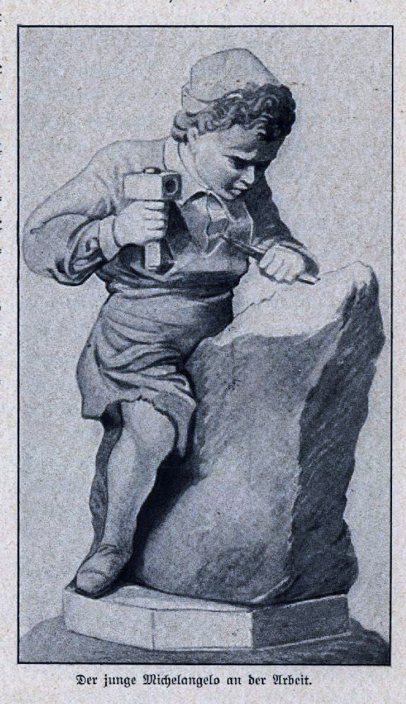
»Man muß zwischen Künstlern einen Unterschied machen, wie zwischen Menschen,« antwortete Poliziano trocken. »Jeder nimmt gewöhnlich nur sich selber als Maßstab für die Dinge und Mitmenschen. Die echte Größe aber, das Genie, das ist ein Gottesgeschenk.«
»Ihr habt recht,« bemerkte Piero und schwieg ärgerlich.
Inzwischen hatte sich Michelangelo, ohne aufzuhorchen, dem Fenster genähert und schaute verzückt in die Gärten. Das Schneegestöber hatte nachgelassen; am Himmel flimmerten die Sterne[S. 54] wie Goldstaub, und die Erde leuchtete märchenhaft weiß. Ein jeder Baum schien aus Marmor gehauen. Der Anblick riß den Künstler mit fort. Wortlos verließ er den Saal, um zu vollenden, was Piero in kindischer Launenhaftigkeit gewünscht. Die Zauberpracht dieses überirdischen Bildes reizte ihn zu eigenem Schaffen. Hier sah er eine gleichsam verzauberte Welt, die weiß und starr und kalt dem Himmel ins Angesicht sah; eine Welt, die nach Licht und Sonne zu rufen schien, und nach einem Liede, das sie aus diesem Bann erlöse.
»Orpheus, der Sänger!« ging es blitzartig durch Michelangelos Kopf. Er befahl, rasch den Schnee zusammenzukehren und ihn an einer bestimmten Stelle aufzuhäufen. Und während Pietro de Medici sich oben im Saale unterhielt, und längst seine Bitte vergessen haben mochte, arbeitete Michelangelo bei dem rötlichen Licht unzähliger Fackeln mit fieberhaftem Eifer an seinem Werke.
Seine Seele war noch erfüllt von den Gedanken, die die Unterredung mit Poliziano in ihm geweckt hatte. Der Schnee war fest genug und ließ sich von der begnadeten Hand Michelangelos gefügig formen und meistern. Den unteren Teil der Statue legte Michelangelo breit an und verdeckte die große energische Bewegung des Fußes mit einem bis zur Erde herabwallenden Gewande. Der mächtige Schritt des Orpheus sollte die Entschlossenheit des Sängers andeuten, trotz aller bereits erlebter Schrecken doch noch einmal in die Unterwelt einzudringen. Seine erhobenen Hände hielten die Leier, als wollten sie noch einmal in die Saiten greifen. Sein Antlitz, das der Künstler scharf und bis ins kleinste ausarbeitete, war ernst; es sprach aus ihm die Kraft des Liedes und ein Mut, der vor nichts zurückzuschrecken schien. Michelangelo modellierte mit Liebe und Eifer, als würde er seinen Orpheus in Erz für die Ewigkeit schaffen, und nicht nur zur Befriedigung einer Augenblickslaune. Als er die Arbeit beendet hatte, trat er einige Schritte zurück und seufzte tief auf.
[S. 55]
»Nein, es ist nicht das, was ich gewollt habe,« rief er endlich unzufrieden aus. »Aus diesen Zügen spricht eine frostige Kälte, wie aus dem Schnee. Ich hab' es anders geträumt! Das ist wieder diese hellenische Starrheit, diese Todesruhe! So hätten ihn die Künstler in Athen dargestellt. Aber sieht so ein Mensch aus, der die vernichtenden Worte des Schicksals vernommen hat?«
Er stand unzufrieden und wortlos vor seinem Werk. Die Fackeln erloschen, der Tag begann heraufzudämmern. Der Himmel rötete sich leicht, und endlich stieg die Sonne in ihrer goldenen Majestät am Horizont empor. In den verschneiten Gärten blitzte und flimmerte es, als sei silberner Puder überallhin verstreut.
In dem Augenblick entstand auf der Terrasse hinter seinem Rücken Lärm. Piero von Medici war mit dem ganzen Hofstaat herausgetreten, und alle brachen beim Anblick der wundervoll beleuchteten und glitzernden Statue des Orpheus in begeisterte Bewunderung aus.
Poliziano eilte die Stufen herab und umarmte schweigend den Künstler.
»Nein, nein,« wehrte Michelangelo bitter lächelnd ab; »es ist mißlungen. In seinem Antlitz spiegelt sich nicht das, was er in seinem Herzen fühlt. Das ist kein Mensch; das ist nur eine Idee.«
»Aber eine göttliche Idee,« warf Poliziano ein.
»Aber kein Mensch!« wiederholte Michelangelo schmerzlich. »Wo ist die Verzweiflung, die wie eine Natter an seinem Herzen nagt? Wo ist der Schmerz, der ihn vernichtet? Nein, das ist nicht Orpheus, das ist eine starre Leiche. Ich will das Gespenst nicht länger sehen.«
Und Michelangelo verbarg seinen Kopf an der Brust Polizianos, ohne auf ein Wort des Trostes zu hören. Über seinem Kopfe tönten die Lobeshymnen noch weiter; aber alles Lob vergrößerte nur seinen Schmerz.
[S. 56]
»Die törichten Blinden,« stöhnte er verzweifelt; »sie sehen offenbar nicht, daß dieser Orpheus bloßer Schnee in Menschengestalt ist.«
Da erscholl wie aus einer Kehle ein neuer Ausruf von der Terrasse, und Poliziano zuckte zusammen. Unwillkürlich hob Michelangelo den Kopf und sah auf seine Statue. Sie hatte sich bewegt; die Sonne hatte das Wunder vollbracht. Sie bewarf die Statue mit Millionen ihrer heißen Pfeile. Sie leckte den Schnee von den Bäumen und Büschen. Von den Pinien und Oliven tropfte es unaufhörlich; in Bächen lief der geschmolzene Schnee von den Dächern herab; er zerrann auf dem Grase wie ein Traum. Auch der Orpheus wurde von den Strahlen der Sonne totgeküßt.
Die untere Hälfte der Statue stand noch unbeweglich da; der feste Schritt des Orpheus und sein Gewand hatte noch keinen Schaden gelitten. Aber Kopf und Brust waren verwundet. Seine Arme sanken zu beiden Seiten wie erschlafft herab, die Leier entfiel seinen Händen. Der Kopf neigte sich nach rückwärts, das Kinn gab nach, so daß sich der Mund leicht öffnete und sich in eine krumme, nach unten gebogene Linie verwandelte. Die Augen, die ihre bestimmten Umrisse verloren, schienen sich wie in großem Schmerz zu schließen. Und die Schärfe aller gleich genau angedeuteten Gesichtszüge milderte sich während des Tauens zu einem merkwürdigen Einklang. Eine Lebensregung schien durch den Schnee zu gehen, ein belebender Funke schien die Statue erwecken zu wollen. Nun glaubte man wirklich, Orpheus zu sehen, von der Verzweiflung zerknirscht, von Schmerzen zerwühlt, den Tod im Herzen, aber doch noch aufrecht stehend, ein leidender, atmender Held, den man sterben sieht.
Michelangelo sah wie gebannt auf sein Werk. Ein freudiges Lächeln umspielte seine Lippen, und mächtig bewegt drückte er Poliziano die Hand. »Endlich sehe ich klar, was ich dunkel geahnt!« flüsterte er; »nun weiß ich, was meinem Orpheus gefehlt hat[S. 57] und was von heute an keiner meiner Schöpfungen mehr fehlen soll: der seelische Ausdruck! Wozu diente wohl alle äußere Schönheit, wenn sie nicht die inneren Vorgänge verkünden würde. Dank dir, o Sonne, du hast mich Großes gelehrt!«
»Die Sonne, die dir den rechten Weg gewiesen, das ist dein eigenes Gefühl, dein eigener Geist,« sagte Poliziano. »Ja, du hast heute etwas Großes gefunden — dich selbst! Nun darfst du hoffen, zu siegen. Wie weit wirst du die andern überragen! Glück auf den Weg! Und doch muß ich dich beklagen, mein armer Freund. Auf der Höhe steht man einsam, und Größe erweckt Haß und Neid. Alles verzeiht dir die Menge, nur nicht, daß du über ihr stehst, daß du dich von ihr ausschließest. Du wirst dein ganzes Leben lang eine Dornenkrone tragen müssen.«
Noch ehe Poliziano zu Ende gesprochen hatte, sank die Statue dröhnend zu Boden. Nichts blieb von ihr übrig, als ein formloser Klumpen rasch zerfließenden Schnees. Ein Aufschrei des Mitleids und Bedauerns kam von der Terrasse her, dann aber erscholl Gelächter, aus dem die fröhliche Stimme Pieros herausklang. »Sieh,« rief er laut herab, »die Belehrung, die ich dir versprochen habe, ist dir nun zuteil geworden. Die Werke des Künstlers vergehen, wie der Schnee vor der Sonne.«
»Ja, eine große Belehrung ist mir zuteil geworden,« antwortete Michelangelo, mit dankbarem Lächeln zum Himmel emporblickend. »Nun weiß ich über den Stoff zu siegen und ihn zu beseelen. Nun soll man aus meinen Werken den Pulsschlag des Lebens fühlen.«
Und versunken in seine Gedanken ging er von dannen. Von niemand hatte er sich verabschiedet; man vergaß ihn bald. Poliziano trat mit ihm auf den Platz hinaus und sah ihm nach, wie er allein durch die Gassen von Florenz dahinschritt, um seinen großen Ideen und Werken nachzuhängen, die er nunmehr schaffen sollte. Es war wahr: er hatte sich selbst gefunden .....
[S. 58]
Florenz ertrug die Herrschaft des anmaßenden Piero nicht lange. Schon im November 1494 wurden die Mediceer vertrieben. Michelangelo ging dem Ereignis aus dem Wege und begab sich nach Venedig und dann nach Bologna, wohin auch die Mediceer geflüchtet waren. Hier, wo sich der Stadtvorsteher Aldovrandi seiner angenommen und ihm Arbeit verschafft hatte, blieb Michelangelo bis zur Mitte des Jahres 1495 und kehrte dann wieder nach Florenz zurück, zur Zeit, als gerade der fanatische Prediger Savonarola an der Spitze des Volkes stand.
Unter anderen Bildwerken, die Michelangelo jetzt ausführte, befand sich auch ein schlafender Liebesgott. Auf Anraten eines schlauen Kaufmannes gab Michelangelo diesem Marmorwerk künstlich ein antikes Aussehen und es wurde dann auch als ein eben ausgegrabenes Bildwerk an den Kardinal Riario nach Rom verkauft. Der Händler hatte zweihundert Dukaten dafür bekommen; an Michelangelo lieferte er aber nur dreißig ab; so wurden der Kardinal und Michelangelo betrogen. Aber auch dieser Betrug zeitigte zufällig Gutes. Denn als der Kardinal erfuhr, daß Michelangelo der Schöpfer des Kupido sei, machte er zwar den Handel rückgängig, aber er veranlaßte Michelangelo gleichzeitig zur Übersiedelung nach Rom. Im Juni 1496 kam er dort an und wohnte beim Kardinal, wo er zunächst ein ganzes Jahr beschäftigungslos zubringen mußte, obwohl man ihm reiche Aufträge versprochen hatte.
Bald darauf machte er aber die Bekanntschaft des römischen Edelmanns Jacopo Galli, in dessen Auftrag Michelangelo zwei lebensgroße Marmorbildnisse, einen »Kupido« und einen »Bacchus« ausführte. Galli verschaffte dem jungen Meister auch einen Auftrag von dem französischen Gesandten in Rom, für den Michelangelo jene wundervolle verklärte »Pietà« meißelte, die sich jetzt in der nach ihr benannten Capella della Pietà befindet.
Während aber Michelangelo in Rom unsterbliche Werke schuf, führte sein Vater, der durch die Vertreibung der Mediceer[S. 59] sein Amt verloren hatte, in Florenz ein kümmerliches Dasein. Sehnsüchtig harrte er auf die Heimkehr des Sohnes, der den Vater von Rom aus kräftig unterstützte. »Ihr mögt mir glauben« — schrieb er nach Hause —, »daß auch ich Ausgaben und Mühe habe; aber was Ihr von mir verlangen werdet, das werde ich Euch schicken, und wenn ich mich als Sklaven verkaufen müßte.«
In der Tat sorgte Michelangelo nach der Vollendung der Pietà auch für seine jüngeren Brüder Buonarroto und Giovan Simone, indem er ihnen zur Gründung einer kleinen Wollstoffabrik verhalf. 1501 kehrte Michelangelo, dem Drängen seines Vaters nachgebend, nach Florenz zurück, wo er zunächst den Auftrag erhielt, für eine Kapelle im Dome zu Siena fünfzehn kleine Heiligenfiguren auszuführen, dann aber von den Vorstehern des Dombaues zu Florenz vor die erste Riesenaufgabe gestellt wurde: aus einem bereits behauenen Block, der schon fünfunddreißig Jahre lang unberührt dalag, einen »David« von neun Ellen Höhe auszumeißeln. Der Auftrag war um so schwieriger, als der erste Bildhauer, der sich daran gemacht hatte, die Aufgabe zu lösen, an ihr gescheitert war. Er hatte aber dem Marmorblock bereits bestimmte Formen gegeben, und an diese war Michelangelo nun gebunden. Im September 1501 machte sich Michelangelo mutig an die Arbeit, und Anfang 1504 wurde das hundertachtzig Zentner schwere Bildwerk mit ungeheurem Pomp enthüllt.
Während der drei Jahre hatte Michelangelo aber noch andere Arbeiten ausgeführt; so einen zweiten lebensgroßen David als Sieger mit dem Haupte des Goliath unter den Füßen; ferner: zwei Madonnenreliefs in Rundformat, einen sterbenden Adonis und einige Gemälde. 1505 folgt die Madonnenmarmorgruppe — eine Bestellung flandrischer Kaufleute —, die in der Liebfrauenkirche zu Brügge steht.
Michelangelo, ein dreißigjähriger Mann, stand jetzt in dem Rufe des ersten Bildhauers der Welt. Und als er sich eben anschickte, mit dem größten Maler der Zeit, dem dreiundfünfzigjährigen[S. 60] Leonardo da Vinci, um die Siegespalme zu streiten, wurde er inmitten der Ausführung seiner Arbeit, die die Pisanerschlacht darstellen sollte, vom Papst Julius II. nach Rom berufen, damit Michelangelo ihm schon bei Lebzeiten ein Grabmal baue. Der Plan war mit außerordentlicher Pracht erdacht. »Ich bin des gewiß,« schreibt Michelangelo am 2. Mai 1506 an San Gallo nach Rom, »wird es errichtet, so hat es in der ganzen Welt nicht seinesgleichen.« Michelangelo kaufte in Karrara für tausend Dukaten Marmorblöcke, und da ihn die Ungeduld nicht warten ließ, bis die Steinberge nach Rom geschafft waren, begann er gleich in den Marmorbrüchen ein paar Figuren in Arbeit zu nehmen, an denen er zunächst acht Monate arbeitete. 1506 wurden die Blöcke auf dem Petersplatze in Rom abgeladen; sie hätten hingereicht, einen Tempel daraus zu erbauen. Und die kolossale Größe des Werkes war denn auch mit schuld daran, daß es nicht zustande kam. Die Peterskirche, in der es aufgestellt werden sollte, war zu klein, und abergläubische Zwischenredereien trugen ebenfalls dazu bei, daß der Papst den Gedanken an das Grabmal ganz fallen ließ. Statt dessen sollte Michelangelo die Decke der vatikanischen Kapelle ausmalen, die Sixtus IV. hatte erbauen lassen. Michelangelo, der diesen Auftrag nicht übernehmen wollte, zog sich dadurch die Ungunst des Papstes zu, flüchtete nach Florenz, ward aber wieder zurückgerufen und in Gnaden in Bologna aufgenommen, wo der im Kampf gegen Cesare Borgia siegreiche Papst weilte, nachdem er sich die Stadt unterworfen und tributpflichtig gemacht hatte.
Michelangelo fertigte hier in den nächsten drei Jahren eine Kolossalerzstatue von Julius II. an. Der Papst hatte tausend Dukaten dafür bezahlt; aber als Michelangelo mit seiner Arbeit fertig war und seine Auslagen abgerechnet hatte, besaß er von den tausend Dukaten noch etwa vier, obwohl er in Bologna in recht kärglichen Verhältnissen gelebt hatte. Nach der Enthüllung dieses Erzbildes eilte Michelangelo sofort zu seinen hilfsbedürftigen[S. 61] Angehörigen nach Florenz zurück; aber da er jetzt in den Diensten des Papstes stand, mußte er bald wieder nach Rom zurückkehren und trotz seines inneren Sträubens mit der Ausmalung der Kapelle beginnen. Und so vollbrachte Michelangelo dies Werk, das berühmte sogenannte Sixtinische Deckengemälde, in dem er das Herrlichste und Wunderbarste schuf, was die Monumentalmalerei überhaupt hervorgebracht hat; eine so schöne und gewaltige Schöpfung, wie sie in dieser Vollkommenheit nie wieder erreicht worden ist.
Er stellte die Vorgeschichte der Erlösung dar; die Schöpfung und den Sündenfall und das Versinken der Menschheit in Sünde; dazu das Hoffen auf den Erlöser, die Verkündigung seiner Ankunft und Vorbedeutungen der Erlösung.
Er begann damit am 10. Mai 1508 und vollendete es, obwohl er es ganz allein ohne jedwede fremde Hilfe ausführte, und obgleich er seine Arbeit öfters und lange unterbrechen mußte, im Oktober 1512. Das ist um so staunenswerter, als Michelangelo nicht gesund war, unter den drückendsten Geldsorgen zu leiden hatte, und die Not seiner Angehörigen ihn ebenfalls sehr quälte.
So schreibt er an seinen Vater im Juni 1509: »Seit 13 Monaten habe ich vom Papste kein Geld erhalten und meine, innerhalb anderthalb Monaten unter allen Umständen welches zu bekommen, da ich das, was ich gehabt, ausgegeben haben werde. Wenn er's mir nicht gäbe, müßte ich Geld borgen, um zu Euch zurückzukehren, denn ich besitze nicht einen Pfennig.«
Eine andere Stelle aus einem Briefe an seinen Bruder Giovansimone (aus derselben Zeit) lautet: »Seit zwölf Jahren bin ich, kümmerlich lebend, durch ganz Italien gewandert, habe jede Schmach erduldet, jedes Ungemach erlitten, meinen Körper mit jeder Anstrengung gepeinigt, das eigene Leben unzähligen Gefahren ausgesetzt, einzig und allein, um meiner Familie zu helfen.«
[S. 62]
An seinen Bruder Buonarroti schreibt er am 18. September 1512: »Ich teile Euch mit, daß ich nicht einen Groschen besitze und gleichsam barfüßig und nackt bin und das, was mir noch zukommt, nicht eher, als bis ich mein Werk vollendet habe, erhalten kann; und ich erdulde sehr große Mühen und Unbequemlichkeiten.«
Eine fürchterliche Pein war endlich die körperliche Anstrengung beim Malen an der Decke, wobei der Kopf stets in den Nacken gelegt und die Augen nach aufwärts verdreht werden mußten. Er selbst spottete darüber in einem launigen Gedicht, daß er, gekrümmt wie ein syrischer Bogen, das Gesicht von den herabtropfenden Farben bunt gemustert wie ein Mosaikfußboden, dies Werk ausführen mußte:
Und von diesem Werke, angesichts dessen sich Michelangelo das Talent als Maler absprach, sagte Goethe: »Ich konnte nur sehen und anstaunen. Die innere Sicherheit und Männlichkeit des Meisters, seine Großheit geht über allen Ausdruck.«
[S. 63]
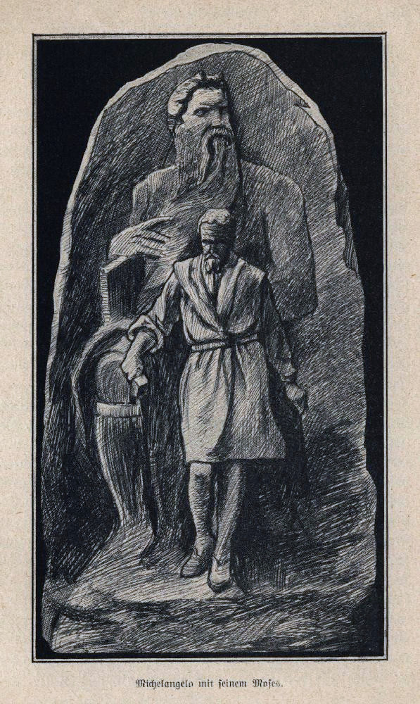
[S. 64]
Ein Zufall fügte es, daß um dieselbe Zeit, als Michelangelo mit seinem Deckengemälde fertig wurde, die vertriebenen Medicis wieder in Florenz einzogen und von ihren ehemaligen Rechten sofort Besitz ergriffen. Michelangelo erneuerte alsbald die alten Beziehungen und setzte es durch, daß sein greiser Vater wieder in dasselbe Amt eingesetzt wurde, das er ehedem innegehabt hatte.
Michelangelo durfte jetzt auch an die Ausführung des früher in Angriff genommenen Grabmals gehen, obwohl der Besteller, Papst Julius, bereits 1513 starb. Giovanni de Medici (Papst Leo X.) war sein Nachfolger und zugleich der Jugendfreund Michelangelos. Für das Grabmal war ein Preis von sechzehntausendfünfhundert Dukaten und eine Arbeitszeit von sieben Jahren festgesetzt. Aber weder dies Werk, noch andere Werke großen Stiles, die Michelangelo geplant und zum Teil schon in Angriff genommen hatte, wurden vollkommen ausgeführt. Dafür betraute man ihn einige Jahre später mit einer anderen großen Aufgabe, die seinen Namen in die Ewigkeit tragen sollte: Die Ausführung der Mediceergräber.
In dieser Zeit tummelten sich Spanier, Franzosen, Schweizer, Deutsche und Italiener in den schönen Gefilden am Po, am Ticino und an der Etsch umher, verwüsteten die Felder und Weinberge, brandschatzten oder zerstörten Städte und Dörfer, befleckten den Boden mit Blut und Leichen, führten Gefangene hinweg, um Lösegeld zu gewinnen, und übten Greuel und Erpressung jeder Art. Dazu kam die Pest, der auch der geliebte Bruder Michelangelos, Buonarroto, erlag. Florenz rüstete sich zum Kampfe um die Freiheit, und unter neun Männern, die gewählt worden waren, um für die Befestigung der Stadt zu sorgen, befand sich auch Michelangelo. Er wurde zum obersten Leiter der Befestigungen von Florenz ernannt und machte seinem Amt durch Umsicht und Geschick alle Ehre. Aber trotz seiner kriegerischen Tätigkeit fand er noch Zeit, sich ab und zu heimlich in die Grabkapelle zu stehlen und dort an den angefangenen Figuren zu arbeiten.
[S. 65]
Allerdings arbeitete Michelangelo unter der größten körperlichen und geistigen Qual. Um 1530 war er bis zur Fleischlosigkeit abgemagert. »Michelangelo« — schreibt ein Zeitgenosse — »wird nicht mehr lange leben, wenn nicht Abhilfe geschafft wird; denn er arbeitet viel, ißt wenig und schlecht und schläft auch nicht, und seit einem Monat wird er stark behindert durch Kopfschmerzen und Schwindel; er hat, kurz gesagt, zwei Übel: eins am Kopf und eins am Herzen, und für jedes gibt es ein Heilmittel; man muß nur die Ursache kennen und aussprechen.« Das Heilmittel für den Kopf sollte darin bestehen, daß dem Meister verboten würde, während des Winters in der feuchten und kalten Kapelle, wo er sich den Tod hole, zu arbeiten; das Heilmittel für das Herz sollte in der Regelung der Sache des Juliusgrabes bestehen, um dessentwillen Michelangelo ganz in Schwermut verfallen war.
»Malerei und Skulptur«, schreibt er am 24. Oktober 1542 an Luigi del Riccio, »Arbeiten und Treuhalten haben mich ruiniert und ständig wird aus Schlechtem noch Schlechteres. Besser für mich wäre gewesen, ich hätte in meiner Jugend Schwefelhölzer zu machen gelernt.«
Und am selben Tage an Monsignor Aliotti: »Ich finde, meine ganze Jugend habe ich verloren, seitdem ich an dieses Grabmal gebunden bin und soviel als möglich Papst Leo und Papst Klemens Widerstand geleistet habe; und mein allzu großes Vertrauen, das man nicht kennen will, hat mich ruiniert. So will's mein Schicksal.«
Für beide Heilmittel wurde nun zwar gesorgt, so gut es ging; aber der Tod seines Beschützers, des Papstes Clemens VII., machte wieder alle Versprechungen und Pläne zunichte. Da Michelangelo von dem neuen Gebieter der Stadt, dem lasterhaften Alessandro, der ihn haßte, nicht nur keinen Schutz zu erwarten hatte, sondern im Gegenteil Verfolgung, so blieben sogar die Mediceergräber unvollendet.
[S. 66]
Aber selbst in dieser unvollendeten Gestalt sichern sie Michelangelos Ruhm für alle Zeiten. Der Eindruck, den dies Monumentalwerk, das von so ernstem Geiste beseelt ist, auf den Beschauer macht, ist der einer höchst weihevollen und ehrfürchtigen Stimmung vor dem Genius, der es geschaffen hat.
Der Nachfolger des verstorbenen Papstes, Paul III., fesselte Michelangelo wieder an sich, und in seinem Auftrage malte der Künstler in der Sixtinischen Kapelle das berühmte »Jüngste Gericht«, in dem Michelangelo den Tag der Auferstehung mit allen Schrecken einer gewaltigen Phantasie schildert.
Es wäre noch von vielen anderen Bildwerken, Malereien und architektonischen Werken zu sprechen; aber hier soll keine Betrachtung seiner künstlerischen Werke, sondern nur der äußere Lebensumriß des größten Bildhauers der neuen Zeit gegeben werden.
In den letzten Jahren seines Lebens blieb Michelangelo von großen Stürmen und wenigstens von äußeren Sorgen verschont. Er war auch körperlich wieder zu Kräften gekommen und hatte sogar, dank seiner einfachen und mäßigen Lebensweise, die die Not ihn gelehrt hatte, eine gewisse Wohlhabenheit erreicht.
Am 18. Februar 1564 entschlief Michelangelo. Der Leichnam wurde in der Apostelkirche aufgebahrt. Der Papst wollte ihn im St. Petersdome, wo sonst nur die Päpste beigesetzt wurden, bestatten lassen, obwohl es dem Wunsche Michelangelos, in der heimatlichen Erde zu ruhen, entgegen gewesen wäre. Darum ließ ein Neffe Michelangelos den Sarg mit der Leiche, als Warenballen verpackt, heimlich nach Florenz schaffen. Am 12. März wurde der geöffnete Sarg in der Kirche San Croce ausgestellt. Auf Kosten des Herzogs Cosimo wurde darauf in der San Lorenzo-Kirche eine Leichenfeier ins Werk gesetzt, so großartig und prunkhaft, wie Florenz vordem noch keine gesehen hatte. Man bekommt einen Begriff davon, wie herrlich die Feier gewesen sein muß, wenn man bedenkt, daß Maler und Bildhauer monatelang[S. 67] an der künstlerischen Ausschmückung der Lorenzo-Kirche gearbeitet hatten. Die Feier fand erst am 14. Juli 1564 statt. Mit einem unvergleichlichen Aufwand von Kunst und pompöser Pracht ehrte Florenz seinen unsterblichen großen Sohn, und an seinem Katafalk trauerte der Genius der Kunst.
Im Jahre des Halleyschen Kometen, dem sich das Interesse der ganzen Welt zuwandte und der die Menschheit wieder zwang, sich, wenn auch oberflächlich, mit astronomischen Dingen zu beschäftigen, ist es sicherlich nicht unwillkommen, etwas über Galilei zu erfahren, den Zeitgenossen Keplers, den noch lange nicht genug gewürdigten großen Entdecker, diese himmelstürmende Natur, diesen ganz Großen, der — wie Goethes Faust — nicht eher ruhte, zu erforschen, was die Welt im Innersten zusammenhält, bis eine Macht, die größer war als er, ihn mit Blindheit schlug.
Wenn man ihn nur einen Physiker oder Astronomen nennt, verkleinert man ihn. Man darf nicht vergessen, daß der Astronom von heute gewöhnlich nur ein Spezialist ist, der bei seiner Wissenschaft durchaus nicht immer jenes Grauen empfindet, das Laplace beim Anblick des Sternenhimmels angewandelt hat, und der auch die Bewunderung und Ehrfurcht nicht kennt, die das Gemüt Kants vor dem bestirnten Firmament erfüllte.
Der Astronom der Renaissance sucht nicht lediglich nach neuen Sternen; er weiß, daß hinter den leuchtenden Welten noch irgendeine Kraft wohnt, der er nicht gewachsen ist. Und doch möchte er dem Schöpfer gern hinter die Kulissen schauen.
Wie es das größte Verdienst des Mittelalters ist, die innere Welt des Seelenlebens vertieft zu haben, ist es das höchste Verdienst der Renaissance-Astronomen, uns den Himmel geweitet[S. 68] zu haben, indem sie ihn uns näherbrachten. Sie entdeckten neue Welten in sich, in ihrer Seele (z. B. Dante, Petrarca) und neue Welten am Himmelsraume (z. B. Kopernikus, Kepler, Galilei). Sie sind nicht bloße Sterngucker oder Registratoren. Das neue Bild am Himmelsgewölbe, das sie schaffen, gibt ihnen auch eine neue Anschauung vom Zusammenhange der Natur.
Welche Kräfte und Gesetze sind es, die das Weltsystem zusammenhalten und die dem Menschen die Macht geben, dieses System in Gedanken aufzubauen? Wer gab dem Menschen diese hohen Gedanken?
Diese Astronomen sind zugleich auch durchaus tüchtige Philosophen. Sie bringen eine echte und große Begeisterung mit, und wenn sie ihre kindlich einfachen Fernrohre vors Auge rücken, ist es ein erhabenes, wortloses Gebet, das durch ihre Seele zieht ....
Es war nicht meine Absicht, eine Vorlesung über Geschichte der Astronomie zu hören, als ich nach Florenz ging. Aber ein Zufall führte mich in den alten Palast, den der Graf Paolo Galletti in der Via de Banchi bewohnt, in dem ich acht kostbare Tage verbringen durfte. Am zweiten Tage unseres unvergeßlichen Zusammenseins hatte sich Graf Galletti als ein Sammler und Gelehrter entpuppt, der sein Leben der Galilei-Forschung weihte und der mich einen Blick werfen ließ in seine reichen und unschätzbaren Sammlungen.
Welch eine sonderbare Wohnung war das! Man befand sich in einer weitläufigen Bildergalerie, deren gründliches Studium allein einige Tage gekostet hätte. Da waren düstere Gemälde von Giotto und Pontormo, Prachtstücke von Guido Reni und Fra Bartolomeo und einige unbekannte Porträts aus der besten Zeit von Franz Hals. In den Korridoren befanden sich kostbare Kupferstiche, in jedem Winkel Marmorwerke und Antiken. In der Küche standen Ausgrabungen vom alten Tempel auf Fiesole. Das Haus war voller geheimer Türen, die zu verborgenen Treppen führten; ein ängstlicher Wirrwarr von Gängen, Fluchten und Nischen.
[S. 69]
Ein Gemach aber, das Studierzimmer des Grafen, überbot in seinem wirren Durcheinander die Kunst aller Regisseure, die je ihre Phantasie an »Fausts Studierzimmer« erprobt haben. Retorten, Globusse, Wagschalen, Mörser, Klöpfel, Urkunden, Pergamentrollen, sonderbar geformte Lampen, ureinfache Mikroskope, astronomische Karten, Fernrohre, Glaskelche, Schädel, alles lag in einem malerischen Kunterbunt umher.
»Dies« — erklärte mir der Graf, und er zeigte mir ein vergilbtes, vom Staub und von der Zeit zernagtes Pergamentblatt — »dies ist die Originalurkunde, die den Kanonikus Girolamo (Savonarola) in den Verbrennungstod schickt. Betrachten Sie, bitte, auch diese Blätter! Es sind die Originalgedichte Franzesko di Medicis. In jener unscheinbaren Kassette dort bewahre ich einen Pack Briefe von Zwingli, die er an meine Ahnen gerichtet hat. Mit einer theologischen Schlauheit, die ihresgleichen sucht, bemüht er sich, sie für seine Ideen herumzubekommen. Welch eine klare und kräftige Natur; man begegnet solchen Menschen nicht mehr. Aber, was Sie mehr interessieren wird, das ist dies Manuskript der ›Göttlichen Komödie‹, von der Dante etwa zehn oder zwölf Abschriften besaß. Beachten Sie das Datum hier: der 29. Juni 1416. Von ebenso großem Werte ist auch dieser Kodex; die reizenden Kompositionen, die Sie sehen, rühren von Pico de la Mirandolas Hand her. Worauf man sehr gespannt sein wird, das sind verschiedene Gedichte von Torquato Tasso, den Goethe in seiner Tragödie verewigt hat und die Tasso schrieb, kurz bevor er ins Irrenhaus kam. Ich will nicht von den Briefen Donato Giannottis sprechen, des großen Freundes Michelangelos, auch nicht von den Briefen Macchiavellis und Benvenuto Cellinis, die ich besitze und die durch mich noch ihrer Veröffentlichung harren. Ich mache Sie lieber auf jenes Porträt aufmerksam, das von den bedeutendsten italienischen Kritikern als Selbstporträt Michelangelos erkannt wurde.«
»Soviel mir aber bekannt ist,« sagte ich, »hat die neuere Kunstforschung[S. 70] mit Sicherheit festgestellt, daß es von Michelangelo keine Selbstporträts geben kann, weil er sich niemals selbst gemalt hat.«
»Es handelt sich hier vielleicht um das von einem zeitgenössischen Freunde angefertigte Porträt,« meinte der Graf. »Sie werden mich nun fragen, wie all diese Schätze in meinen Besitz gekommen sind? Ganz einfach. Ich bin der Besitzer der Villa, die Galilei in Arcetri bewohnt hat, und in ihr fanden sich all diese Kostbarkeiten vor. Sie waren also Eigentum Galileis, von dem ich noch weit Wertvolleres besitze. Das ganze astronomische und physikalische Handwerkszeug, dessen der Astronom sich auf der Villa Arcetri bediente, jener Villa, in die ihn seine jesuitischen Feinde verbannt hatten, ist in meinem Besitz. Mit Ausnahme der Bronzelampe, die Sie im Dome zu Pisa gesehen haben und die Galilei zur Entdeckung des Pendelgesetzes die Anregung gab, sind fast alle Instrumente in meinen Händen, mit deren Hilfe Galilei seine bedeutenden Entdeckungen gemacht hat.«
»Ach, erzählen Sie mehr von ihm,« bat ich den Grafen.
»Gern,« erwiderte er. »Schon der Tag, an dem er zur Welt kam, hat für mich etwas Geheimnisvolles, und auch für Sie, wenn Sie an die Seelenwanderung glauben. Galilei wurde an demselben Tage geboren, an dem Michelangelo starb; am 18. Februar 1564. Pisa ist seine Geburtsstadt. Vinzenzo, sein Vater, war ein Florentinischer Edelmann, der sich durch Schriften über die Theorie der Musik und Mathematik einen besonderen Ruf erworben hatte. Seine Mutter, Giulia, stammte aus dem alten und berühmten Geschlecht der Ammannati. Bald nachdem Galilei zur Welt gekommen war, zogen seine Eltern nach Florenz, wo er auch seine erste Erziehung erhielt. Galilei sollte Tuchhändler werden, ein Geschäft, das bei den Florentinern damals in hohen Ehren stand. Aber als der Vater die hervorragende Begabung des Knaben bemerkte, ließ er ihm eine Erziehung[S. 71] angedeihen, die mehr auf eine wissenschaftliche Laufbahn abzielte. In der Verfertigung mechanischer Instrumente und Maschinen und besonders im Zeichnen zeigte Galilei schon als Knabe großes Geschick. Der Vater schickte nun seinen Sohn 1581 auf die Universität nach Pisa, wo er die Arzneiwissenschaft studieren sollte. Zugleich hörte er dort Vorlesungen über das, was man damals aristotelische Philosophie nannte. Abgestoßen von diesen haarspaltenden und fruchtlosen Diskussionen griff Galilei oft als Gegner in diese Streitigkeiten ein. Dafür nannte man ihn auch den ›Zankapfel‹. Das hinderte ihn nicht, die naturwissenschaftlichen Irrtümer der aristotelischen Philosophie zu verwerfen und das Gute der dialektischen Lehrsätze hochzuhalten. Aber seine stärkste Liebe wandte er dennoch den Naturwissenschaften und der Mathematik zu.
»Eines Tages bemerkte er, daß eine im Dome zu Pisa hängende Lampe, wenn sie durch Zugluft in Schwingungen geriet, zur Vollendung jeder einzelnen Schwingung immer gleich viel Zeit gebrauchte, mochte der Windstoß stärker oder schwächer und also die Schwingung größer oder kleiner sein. Er schloß daraus, daß die Zeit, welche ein pendelartig schwingender Körper zur Vollendung jeder einzelnen Schwingung gebraucht, nicht durch die Stärke des ihm gegebenen Stoßes bestimmt werde, sondern nur durch die Entfernung desselben von seinem Aufhängungspunkt, also durch die Länge des Fadens oder Stabes, an dessen Ende er befestigt ist. Zu Hause angestellte Versuche mit Pendeln von verschiedener Länge bestätigten diese Vermutung und belehrten zugleich den jungen Naturforscher, daß es dabei auch nicht auf das größere oder geringere Gewicht des Pendels ankomme. Nun tauchte sofort der Gedanke in Galilei auf, diese Entdeckung auf die Messung der kleineren Zeitteile anzuwenden. Er maß zunächst die Schnelligkeit der Pulsschläge, dann die von Sekunde zu Sekunde zunehmende Geschwindigkeit frei fallender Körper. Von nun ab diente ihm das Pendel bei allen physikalischen, besonders[S. 72] aber bei astronomischen Beobachtungen, bis, sehr viel später, Huygens das Pendel auch mit Uhrwerken in Verbindung brachte. Der Vater Galileis hatte endlich auch seinem Sohne erlaubt, das Studium der Arzneikunde aufzugeben und sich ausschließlich den physikalischen und mathematischen Wissenschaften zu widmen, und der junge Galilei zeigte sich dieser väterlichen Vergünstigung bald würdig. Er las zum Beispiel die Schriften des Archimedes mit so großem Erfolge, daß er, angeregt durch die Lektüre, die hydrostatische Wage erfand. Dieses bestaubte Ding hier stellt den ersten Versuch der Galileischen Wasserwage dar, die er so scharfsinnig beschreibt. ›La Bilancetta‹ nannte er das Werk, wovon ich gleichfalls das Manuskript mein eigen nenne.
»Man fing an, von dem jungen Erfinder und Entdecker zu sprechen; sein Name war in Italien bald berühmt. Er korrespondierte jetzt mit den bedeutendsten Fachgelehrten; ganz besonders interessierte sich aber für ihn ein in Pesaro lebender Mathematiker, der Marchese Guidubaldo del Monte, der Galilei veranlaßte, das Gesetz vom Schwerpunkt zu vervollkommnen und besser auszuarbeiten. Der vierundzwanzigjährige Galilei kam dieser Aufforderung nach und übertraf mit der Lösung der gestellten Aufgabe alle bisherigen Leistungen auf diesem Gebiete. Man nannte ihn jetzt, 1589, den Archimedes seiner Zeit und man übertrug ihm zugleich die gerade freigewordene Professur für Mathematik an der Universität zu Pisa, die er ein paar Jahre vorher hatte verlassen müssen, weil er damals nicht über Mittel genug verfügte, seinen Doktor zu machen. Seine Besoldung war sehr gering, aber er benützte die Stellung seines öffentlichen Amtes zu neuen Forschungen und zur Verbreitung der bisher angestellten. Seine Landsleute Varchi und Benedetti hatten schon 1544 die Behauptung ausgesprochen, daß alle Körper von gleicher Dichtigkeit, mögen sie groß oder klein sein (z. B. ein Lot Blei ebenso wie ein Pfund Blei), bei gleicher Fallhöhe die gleiche Geschwindigkeit erlangten. Exakt bewiesen war dieser[S. 73] Satz keineswegs und fast alle damaligen Physiker leugneten ihn. Galilei erst erbrachte, trotz alles Spottes der Gegner, den unanfechtbaren Beweis für die Richtigkeit des Satzes. Er ging noch weiter und erforschte noch das Gesetz, wonach die Fallgeschwindigkeit von Sekunde zu Sekunde wächst und daß die am Ende des Falles erlangte Geschwindigkeit fallender Körper sich verhalte wie die Quadrate der Zeiten. Galilei hat diese Entdeckung zwar erst fünfzig Jahre später drucken lassen, aber inzwischen hat er dieses Gesetz vielfach praktisch angewendet und er hat natürlicherweise mit vielen Sachverständigen darüber korrespondiert. Immerhin hatte die Gewohnheit Galileis, die Veröffentlichung seiner so wichtigen Entdeckungen lange aufzuschieben, die unangenehme Folge, daß ihm oft die Priorität für seine Entdeckungen und Erfindungen bestritten wurde. Es würde Bände füllen, wenn man ausführlich erzählen wollte, welche Kämpfe Galilei allein um das Prioritätsrecht seiner Erfindungen stets ausfechten mußte. Und noch bis heutigestags ist vieles ungeklärt, da noch immer zahlreiche Manuskripte und Briefe Galileis, die über das Prioritätsrecht Auskunft geben könnten, ungedruckt in Bibliotheken liegen.
»Zu jener Zeit war es an italienischen Universitäten üblich, die Professoren nur für eine gewisse Zahl von Jahren anzustellen. Galileis erste Anstellung lautete auf drei Jahre. Die große Bedürftigkeit der Familie Galileis, noch gesteigert durch den erfolgten Tod des Vaters, machten es dem jungen Professor zwar höchst wünschenswert, die Professur in Pisa noch zu behalten, aber seine Freimütigkeit und seine Liebe zur Wahrheit nötigten ihn, das Amt dennoch aufzugeben. Johann von Medici, der in hohem Ansehen stehende Stiefbruder des regierenden Großherzogs, hatte eine Maschine zur Reinigung der Häfen und Kanäle erfunden, und Galilei war unklug genug, diese Erfindung aus mechanischen Gründen als unbrauchbar abzuweisen. Das zog ihm natürlich den Haß des Medici zu, der mit den übrigen zahlreichen[S. 74] Feinden und Neidern Galileis gemeinsame Sache machte, um ihn beim Großherzog anzuschwärzen. Galilei sah den kommenden Sturm voraus und zog sich nach Florenz zurück. Wiederum bemühte sich der Marchese del Monte für ihn beim Senat der venetianischen Republik für die durch Moletis Tod erledigte Professur der Mathematik an der Universität zu Padua. 1592 erhielt Galilei diese Stellung zunächst auf sechs Jahre. Durch seine Vorträge lockte er hier zahlreiche Zuhörer der verschiedensten Altersstufen an sich und verfaßte Werke über Kriegsbaukunst, Mechanik u. a., die er zwar noch nicht drucken ließ, die sich aber dennoch durch Abschriften sehr bald verbreiteten.
»Um dieselbe Zeit erfand Galilei auch das Thermoskop, das erste Instrument zur Bestimmung der Wärmeverhältnisse, wovon ich leider nur die von Galilei herrührende schematische Darstellung besitze. Galilei bediente sich einer engen Glasröhre, die an dem einen Ende offen war, an dem anderen aber in eine hohle Kugel auslief. Er goß in diese Röhre etwas Wasser, verschloß sie alsdann, kehrte sie um und tauchte sie in ein Gefäß voll Wasser, aus welchem er den größten Teil der Röhre mit der daran befindlichen hohlen Kugel hervorragen ließ, während ein ganz kleiner Teil mit der Öffnung, die Galilei nun wieder freimachte, unter Wasser blieb. In der Kugel war also jetzt atmosphärische Luft abgesperrt, und wenn diese sich durch Einwirkung der Wärme ausdehnte, so trieb sie einen Teil des in der Röhre stehenden Wassers durch die jetzt unten befindliche Öffnung heraus in das Wassergefäß; zog sich hingegen die Luft in der Kugel durch Abnahme der Wärme zusammen, so stieg durch den Druck der äußeren Luft das Wasser in der Röhre.
»So unvollkommen ein solches Instrument war, für die damalige Physik bedeutete es immerhin einen großen Fortschritt. 1594 erhielt Galilei von der Republik Venedig ein Privilegium auf zwanzig Jahre für eine von ihm erfundene hydraulische Maschine.
[S. 75]
»Und hier ist der Proportionalzirkel, den Galilei bald darauf erfand, und der von den Ingenieuren und Geometern seiner Zeit sehr hoch geschätzt wurde. Es gab in jener Zeit noch nicht unsere bequeme Einrichtung des Patentamtes. Allein, wie heute, wurden auch damals die Erfinder reichlich betrogen. Wer damals einen solchen Zirkel besitzen wollte, mußte an Galilei schreiben, und er verfertigte so viel, wie er liefern mochte. Aber mehr als zehn oder elf Exemplare wird es kaum geben. Seine Arbeitskraft war von anderen Dingen zu sehr in Anspruch genommen. Und dann, sich lange Zeit mit derselben Sache zu beschäftigen, langweilte ihn am Ende. Er hatte noch viel zu tun.
»1599 wurde Galilei seine Professur in Padua auf weitere sechs Jahre mit Gehaltszulage verlängert. Inzwischen hatte sich sein Ruhm auch weit verbreitet. Kepler, der in ihm einen treuen Mitverfechter des kopernikanischen Systems erkannt hatte, war seit 1597 in Briefwechsel mit ihm getreten und drei Jahre später auch Tycho de Brahe, der berühmte dänische Astronom. Unter seinen Zuhörern an der Universität fanden sich jetzt auch Fürsten ein; von allen Ländern reiste man nach Padua, um Galilei zu hören.
»Im Jahre 1604 erschien im Sternbild des Schlangenträgers ein neuer Stern, der, nachdem er achtzehn Monate lang geleuchtet hatte, wieder verschwand. Galilei hielt mehrere Vorträge über diese Erscheinung, in denen er zu beweisen suchte, daß der Stern keine bloße Lufterscheinung, sondern ein wirklicher Stern gewesen sei. Mit dieser Behauptung widersprach er freilich der Lehre des Aristoteles von der Unveränderlichkeit des Fixsternhimmels, zu welcher sich damals die meisten seiner Zeitgenossen bekannten. Nur seine Zuhörer und einige aufgeklärte Männer der Wissenschaft jubelten ihm zu.
»Er fuhr fort, sich mit den Lehren der höheren Mechanik zu beschäftigen, mit den Lehren vom Magneten, vom Licht und den Farben, vom Schall, von der Ebbe und Flut, von den Bewegungen[S. 76] der Tiere. 1609, als er Venedig besuchte, kam ihm das Gerücht zu Ohren, ein Holländer hätte dem Prinzen Moritz von Nassau ein Instrument überreicht, durch welches man die entferntesten Körper so sähe, als ob sie ganz in die Nähe gerückt wären. Wie dies Instrument beschaffen war, darüber erfuhr Galilei nichts. Aber das Gerücht allein genügte, um seine ehrgeizige Natur zur Tat anzuspornen und seinem erfinderischen Geist einen neuen und großartigen Aufschwung zu geben. Eiligst nach Padua zurückgekehrt, hatte er schon ein paar Tage später ein solches Instrument selbständig konstruiert; er reiste damit wieder nach Venedig und überreichte dem Dogen und dem Senat sein neues Instrument. Hier ist es! Ja, nun lachen Sie über dieses Gerümpel! Daß der Mond von Gebirgsketten durchzogen wird, ist heute eine banale Tatsache für uns; aber bedenken Sie, welch eine Umwälzung es in der Seele Galileis hervorrufen mußte, als er zum ersten Male sah, was noch nie vor ihm eines Menschen Auge gesehen. Man versteht es, wenn das Volk einen Menschen, dem es gelungen war, mittels dieser plumpen Röhre das Rätsel des Mondes zu schauen, für einen Zauberer hielt. Wollten doch selbst aristotelische Philosophen nicht durch dieses unscheinbare Ding sehen, das dem Firmament plötzlich ein ganz anderes Antlitz gab. Wie? Dieser kleine Professor da aus Padua will uns jählings unseren guten Glauben nehmen an den Himmel des Aristoteles?
»Von welch tiefer Menschenkenntnis zeugt doch die Antwort, die er ihnen gab! ›Wenn die Sterne selbst vom Himmel herabstiegen zur Erde und Zeugnis ablegten für mich, so würdet ihr euch nicht überzeugen lassen!‹ Zugleich beleuchtet diese traurig stimmende Antwort den ganzen Lebensgang Galileis.
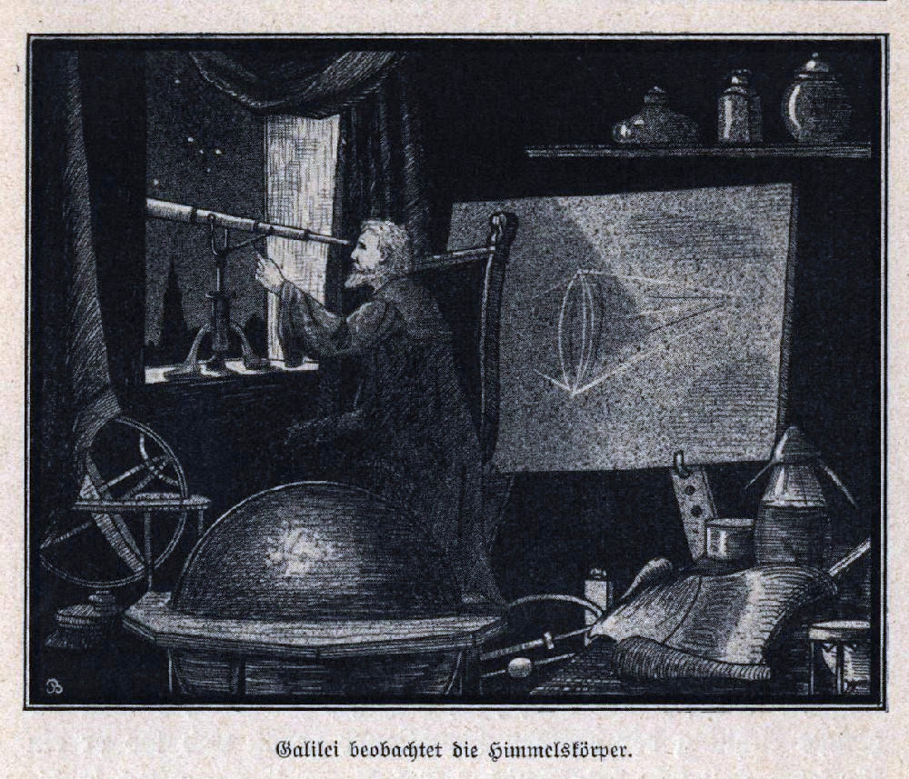
»Immerhin hatte diese Entdeckung zur Folge, daß Galilei nun die Professur in Padua mit einem Jahresgehalt von tausend Gulden für Lebenszeit übertragen wurde. Nie hat sich Galilei für den ersten Erfinder des Fernrohrs ausgegeben; aber es gebührt ihm wohl der Ruhm, es optisch vervollkommnet und zuerst zu wichtigen astronomischen Entdeckungen angewandt zu haben. In den nächsten Jahren wendeten sich daher die Fürsten und Astronomen, welche Fernrohre zu besitzen wünschten, immer an Galilei. Er zuerst entdeckte die Gebirge des Mondes und er zuerst maß ihre Höhe. Er fand ferner, daß die Milchstraße nichts anderes sei, als eine unzählbare, dichtgedrängte Menge kleiner Sterne; daß auch die sogenannten Nebelflecke nur Sterne seien; daß aber die Fixsterne durch das Fernrohr nicht, wie die Planeten, vergrößert würden. 1610 entdeckte er die vier Monde des Jupiter und zwei Jahre später gelang es ihm, die Bahnen und Umlaufszeiten dieser Jupitertrabanten zu berechnen. Er machte nun den Vorschlag, die häufig auftretenden Verfinsterungen der Jupitermonde zur Bestimmung der geographischen Längen[S. 78] und also zur Vervollkommnung der Schiffahrt zu benützen. Um dieselbe Zeit beobachtete er auch Sonnenflecke; er wagte es aber nicht, mit dieser neuen Entdeckung hervorzutreten, bis seine Freunde ebenfalls von deren Richtigkeit überzeugt waren. Alle diese neuen Entdeckungen mußten ihm bei den denkfaulen Anhängern des aristotelischen Sternhimmels natürlich nur Feinde schaffen. Aber die Aufmunterungen Keplers und des Großherzogs von Toskana, der unseren Entdecker fortgesetzt mit reichen Geschenken bedachte, halfen Galilei über viele Bitternisse hinweg. Den drängenden Bitten des Großherzogs nachgebend, gab Galilei im August 1610 sein Lehramt in Padua auf und siedelte nach Florenz über, wo er als ›erster Philosoph und Mathematiker des Großherzogs‹ ausschließlich seinen Erfindungen, Entdeckungen und der Ausarbeitung seiner Werke leben konnte. Aber, obwohl diese Veränderung auch Galilei die volle Freiheit zurückgab, sie schloß auch manche Nachteile in sich. Galilei verließ Padua, wo ihm unbeschränkte Lehrfreiheit zugesichert war, wo er die höchste Achtung der edelsten Venetianer genoß und wo er ein für seine Zeit sehr beträchtliches Gehalt empfing, um sich in die Abhängigkeit eines jungen Fürsten zu begeben, dessen Gunst leicht wechseln konnte und der dem starken Einfluß der intrigierenden Jesuiten ausgesetzt war, die von der venetianischen Republik ausgeschlossen waren. Als seine besorgten Freunde ihn vor diesem Schritte warnten, weil sie künftige Verfolgungen der römischen Kirche befürchteten, war es aber schon zu spät.
»Im September desselben Jahres, gleich nach seiner Übersiedelung nach Florenz, entdeckte Galilei, daß der Planet Venus, ebenso wie der Mond, zu verschiedenen Zeiten verschiedene Lichtphasen darbiete. Er fand weiter, daß der scheinbare Durchmesser des Mars und der Glanz dieses Planeten merkwürdigen Veränderungen unterworfen seien. Bei einem Besuche in Rom, im April 1611, zeigte er mehreren Kardinälen die Sonnenflecke, die er beobachtet hatte, und aus der Bewegung dieser Flecke[S. 79] schloß er die Achsendrehung des Sonnenkörpers. Er erwarb sich in Rom rasch viele Freunde und Bewunderer und ebenso viele Feinde und Neider. Der Kardinal del Monte erklärte zwar in einem Briefe an den toskanischen Großherzog, daß man Galilei im alten Rom zweifellos eine Ehrensäule auf dem Kapitol errichtet haben würde; aber das hinderte Galileis Neider nicht — da man ihm wissenschaftlich nichts anhaben konnte —, ihn in den Ruf der Ketzerei zu bringen.
»Nach der Rückkehr von diesem römischen Besuch entdeckte Galilei die Gesetze der Hydrostatik und erfand das Ding hier. Ein Mikroskop! Das erste Mikroskop! Sie sehen, welch armseliger Mittel dieser große Mensch sich bedienen mußte, um ein Mikroskop herzustellen, das er erst später verfeinerte und besser ausarbeitete.
»Jetzt begannen aber auch die Anklagen, daß Galilei durch Verteidigung und Ausbreitung des kopernikanischen Systems die Bibel angreife und sich der Ketzerei schuldig mache, immer lauter zu werden. Die Verwandten des Großherzogs Cosimo II. wurden mißtrauisch gegen Galilei und schenkten den Einflüsterungen der Jesuiten immer mehr Gehör. Galilei verteidigte sich, er sei zwar ein Anhänger des Kopernikus, habe aber niemals die Bibel angreifen wollen, welche sich da, wo in ihr von physikalischen und astronomischen Dingen die Rede sei, den Vorstellungen und der Ausdrucksweise des Altertums anpasse, ohne diese Vorstellungen als Glaubenslehren aufzustellen. Kopernikus selbst sei von den Häuptern der Kirche immer als ein rechtgläubiger Katholik angesehen worden und der Papst Paul III. hätte sogar die Widmung seiner Bücher entgegengenommen. Aber bei den von Neid und Haß erfüllten Gegnern Galileis schlugen diese Gründe nicht an. Besonders ereiferte sich der Dominikanerorden, dem die Inquisition der Ketzer anvertraut war. Der Mönch Caccini predigte 1614 in Florenz öffentlich gegen Galilei und verhöhnte ihn und seine astronomischen Entdeckungen.[S. 80] Galilei entschloß sich unaufgefordert im November 1615 eine zweite Reise nach Rom zu machen, um sich dort vor den höchsten geistlichen Behörden zu rechtfertigen. Er blieb bis in den Mai 1616 in Rom, wo er von den Geistlichen und selbst vom Papste sehr wohlwollend empfangen wurde; Galilei konnte aber nicht verhindern, daß das kopernikanische System jetzt förmlich als der Heiligen Schrift widersprechend erklärt wurde. Galileis oft leidenschaftlicher Eifer für die Sache der Wahrheit scheint ihm in Rom mehr geschadet als genützt zu haben, und der Großherzog von Toskana, der von allen Vorgängen in Rom wohl unterrichtet war, fand es für die Sicherheit seines Freundes nötig, ihn nach Florenz zurückzurufen.
»Als Urban VIII. aus dem Hause Barberini Papst wurde, der als Kardinal Galilei sehr zugetan war und ihm 1620 sogar ein Lobgedicht zugeschickt hatte, reiste Galilei abermals nach Rom, um den Papst zu beglückwünschen. Er wurde sehr gnädig empfangen, reich beschenkt und bei seiner Rückkehr mit einem belobenden Breve an den Großherzog entlassen. Galilei hatte aber mit dieser Romreise noch einen anderen Zweck im Auge. Obwohl er durch die förmliche Verdammung des Kopernikus zum Schweigen über dessen System verurteilt war, hatte er im stillen ein Werk über dieses System vorbereitet und er erhoffte von dem neuen Papst die Erlaubnis zur freien Darlegung seiner Ideen. Man hielt ihn aber mit unbestimmten Hoffnungen hin. Um seine Absicht durchzuführen, machte Galilei 1628 und 1630 wiederholte Reisen nach Rom. Sein Werk wurde von mehreren Zensoren beurteilt, in manchen Einzelheiten geändert und endlich erhielt er die Erlaubnis zur Drucklegung. 1632 erschien dieses Werk in Dialogform.
»Im Auslande habe man die Meinung verbreitet — führt Galilei in diesem Werke aus —, das Verbot, die Bewegung der Erde zu lehren, sei nicht die Frucht reiflicher Überlegung, sondern leidenschaftlicher Aufregung, und sei von Personen ausgegangen,[S. 81] denen die für das kopernikanische System sprechenden Gründe nicht bekannt, oder die zum Urteil darüber nicht befähigt wären. Um diese unbegründete Meinung zu widerlegen und um zu zeigen, daß in Rom, wo er sich damals aufgehalten und mit den vornehmsten Prälaten des päpstlichen Hofes über diesen Gegenstand konferiert habe, alles hierauf Bezügliche so gut bekannt gewesen sei als sonstwo, habe er nun sein Werk geschrieben, in welchem er alles zusammenfasse, was sich gegen die gewöhnlichen Gründe für die Unbeweglichkeit der Erde und was sich für das kopernikanische System sagen lasse. Nur überwiegende religiöse Gründe, nicht Unkenntnis und Leidenschaftlichkeit seien in Rom die Veranlassung gewesen, die Unbeweglichkeit der Erde zum Dogma zu erheben und die entgegengesetzte Meinung für eine bloße mathematische Laune zu erklären.
»Dadurch, daß Galilei der Sache diese Wendung gab, hatte er nun zwar von der Zensur die Erlaubnis zum Drucke seines Werkes erlangt; wenn er aber gehofft hatte, dadurch seine Feinde zu beschwichtigen oder einer Anklage beim Inquisitionsgericht zu entgehen, so hatte er sich bitter getäuscht. Sein Werk machte zu großes Aufsehen, sowohl durch den Beifall, den es bei den aufgeklärten Zeitgenossen fand, als durch die Menge von Gegenschriften, die es hervorrief. Auch ward Galileis eigentliche Absicht, dem kopernikanischen System, trotz des Verdammungsurteils, den Sieg zu verschaffen, selbst den beschränktesten Mönchen sehr bald klar. Fanatismus und Verketzerungssucht waren bald am Werk, um Galilei zu schaden. Urban VIII., das Haupt der katholischen Kirche, hätte selbst beim besten Willen Galilei nicht länger zu schützen vermocht. Er konnte den öffentlichen und geheimen Anklagen gegen Galilei sein Ohr nicht länger verschließen.
»Schon im August 1632 berief man in Rom eine Kommission von Theologen und Mathematikern zur Untersuchung zusammen, die allesamt bekannte Widersacher Galileis waren. Der zweiundzwanzigjährige Ferdinand II. von Toskana, der seinem[S. 82] Vater Cosimo II. im Jahre 1621 in der Regierung gefolgt war, suchte vergeblich die drohende Gefahr von Galilei abzuwenden. Er machte mit Recht geltend, daß Galileis Werk ja einer mehrmaligen, strengen Zensur unterworfen und nach Vorschrift abgeändert worden sei. Der Papst nannte aber die erlangte Erlaubnis zum Drucke des Werkes eine erschlichene und berief sich auf das Dekret vom 16. Februar 1616 — hier sehen Sie es im Original mit der Unterschrift des Papstes Paul V.! —, worin Galilei bei Androhung schwerer Kerkerstrafe verboten wird, fernerhin die kopernikanische Lehre zu verteidigen. Papst Urban war in großen Zorn geraten. Die Untersuchung gegen Galilei wurde unterdessen ganz im stillen weitergeführt; nicht einmal die Namen der ernannten Untersuchungskommissarien wurden bekannt. Ende Oktober desselben Jahres erhielt Galilei die Vorladung, sich zum Verhör in Rom einzustellen. Er suchte nun zwar Aufschub zu gewinnen, indem er sein hohes Alter, seine Kränklichkeit und die Beschwerlichkeit der an der Grenze des Kirchenstaates abzuhaltenden Quarantäne geltend machte. Allein, seine Bitten blieben fruchtlos; Galilei mußte sich zur Reise entschließen und am 13. Februar 1633 langte er in Rom an. Er stieg in der Villa Medici, dem toskanischen Gesandtschaftshotel, ab, und stellte sich in den nächsten Tagen einigen Kardinälen und Assessoren des Inquisitionsgerichts vor, die er ziemlich wohlgesinnt fand, von denen er jedoch den Rat erhielt, äußerst zurückgezogen zu leben und nur die zwingendsten Besuche anzunehmen. Galilei erfuhr, der Hauptvorwurf, den man ihm mache, sei die Übertretung des Befehls vom Jahre 1616, gar nicht mehr über das kopernikanische System zu sprechen. Galilei behauptete aber, es sei ihm damals nur verboten worden, jenes System zu verteidigen und sein Werk sei keine Verteidigung, sondern nur eine Zusammenstellung der Gründe für und gegen die Sache. Endlich am 12. April 1633 wurde Galilei vor das Gericht geführt. Er mußte nun im Inquisitionsgebäude bleiben, wurde jedoch in kein Gefängnis gesperrt;[S. 83] er durfte vielmehr in den Zimmern des Gerichtsfiskus wohnen, konnte seinen eigenen Diener behalten, es war ihm erlaubt, im Hofe des Hauses spazierenzugehen — lauter Vergünstigungen, die beim Inquisitionsgericht ganz unerhört waren. Gleich bei dem ersten Verhör scheint ihm jedoch unter Strafe der Exkommunikation das Versprechen abgenommen worden zu sein, über das, was mit ihm vorginge, das strengste Stillschweigen zu beobachten.
»Nachdem er achtzehn Tage in dieser Abgeschlossenheit zugebracht hatte, erbat sich Galilei ein neues Verhör; er sagte aus: Seit drei Jahren habe er sein Werk über Kopernikus nicht wieder gelesen; jetzt sei er durch diesen Prozeß veranlaßt worden, es nochmals genau durchzusehen, um gewissenhaft zu prüfen, ob nicht gegen seinen Willen etwas aus seiner Feder geflossen sei, was man ihm als Ungehorsam gegen die Kirche auslegen könne. Er habe nach so langer Zeit sein Buch wie das eines anderen Verfassers durchstudiert und nun allerdings gefunden, daß es Stellen enthalte, welche einen Leser, der ihn nicht genau kenne, zum Glauben verleiten könnten, der Verfasser habe die Gründe für die Meinung, die er widerlegen wollte, darum so beredt vorgetragen, damit man diese Meinung als die richtige annehme. Gestatte man es, so wolle er eine Fortsetzung schreiben, worin er die falsche und von der Kirche verdammte Lehre mit den kräftigsten Gründen, die Gott ihm eingeben werde, widerlegen wolle. In bezug auf die Erlaubnis zum Drucke seines Werkes habe er alles getan, wozu ihn das frühere Dekret verpflichte. Doch wolle er sich nicht von Irrtum freisprechen, wohl aber von List und Bosheit; er klage sich selber des Ehrgeizes an, seine Kunst in Darlegung der Gründe für das kopernikanische System beweisen zu wollen. Man möge sein hohes Alter, seine Kränklichkeit, seinen seit zehn Monaten erlittenen Kummer, die Beschwerden der Reise, die Verleumdungen, denen er ausgesetzt sei, mit in Erwägung ziehen.
[S. 84]
»An demselben Tage, an dem dies Verhör stattgefunden hatte, wurde Galilei wieder in die Villa Medici zurückgesandt, um seine Gesundheit zu stärken. Erst am 22. Juni mußte er abermals vor dem Inquisitionsgericht erscheinen. Man behielt ihn diesen Tag und die folgende Nacht dort und führte ihn dann in das Dominikanerkloster alla Minerva, wo ihm sein Urteil eröffnet wurde. Es erklärt ihn für schuldig, ketzerischen Meinungen in betreff der Bewegung der Erde, angehangen zu haben; es spricht ihn aber von den auf ein solches Verbrechen gesetzten Strafen unter der Bedingung frei, daß er seine physikalischen und astronomischen ›Irrtümer‹ abschwöre und verfluche. Ferner solle sein Werk über das ptolemäische und kopernikanische Weltsystem durch eine öffentliche Bekanntmachung verboten und Galilei selbst auf eine vom Gericht nach Willkür zu bestimmende Zeit gefangengehalten werden. Die nächsten drei Jahre hindurch solle Galilei wöchentlich einmal die sieben Bußpsalmen rezitieren. Schließlich behält sich das Gericht vor, diese Strafen und Bußen nach seinem Gutdünken zu verändern oder zu mildern.
»Es wird erzählt, daß Galilei, welcher die Abschwörung seiner Lehren kniend leisten mußte, während er sich wieder erhob, halb laut gesagt haben soll ›e pur si muove‹! (›und sie — die Erde — bewegt sich doch!‹). Aber eine so gefährliche Äußerung im Munde eines damals so tief gebeugten Greises ist ziemlich unwahrscheinlich.
»Freilich haben sie ihn nicht ganz mundtot machen können. Der Name dieses Erforschers der Sterne war inzwischen selber zu einem leuchtenden Gestirn geworden am Himmel des Ruhmes, und sie konnten ihn nicht gut auslöschen. Sie nahmen ihm zwar einen großen Teil seiner ›teuflischen Instrumente‹ fort, mit denen er in den Werken Gottes herumspionierte, aber sein Genie konnten sie ihm nicht nehmen.
»Der Papst verwandelte die im Urteile ausgesprochene Gefängnisstrafe in Haft und später erhielt er die Erlaubnis, sich in[S. 85] die Nähe von Florenz auf sein Landgut zu Arcetri zu begeben, wo er auch die Besuche seiner Freunde annehmen durfte; nur große Gesellschaften dort zu empfangen, war ihm untersagt. Arcetri scheint Galilei vorzüglich darum zu seinem Aufenthalte gewählt zu haben, weil es ganz nahe bei dem Kloster lag, in welchem seine beiden natürlichen Töchter als Nonnen lebten. Zu seinem tiefsten Schmerze starb die älteste dieser Töchter schon im April 1634. Gleichzeitig mit diesem Familienunglück traf ihn eine harte abschlägige Antwort aus Rom auf seine Bitte um die Erlaubnis, von seiner Villa aus zuweilen das eine Meile entfernt gelegene Florenz besuchen zu dürfen. Es wurde ihm sogar mit Strafen gedroht, wenn er wieder solche Bitten wage.
»Aber seine Gefangenschaft — wie anders soll man ein Leben voller Kummer unter beständiger jesuitischer Aufsicht nennen? — seine Gefangenschaft konnte nicht verhindern, daß er seine Studien fortsetzte, daß er die schwankenden Bewegungen der Mondkugel entdeckte und die Gesetze der Kohäsion aufstellte. Freilich muß man nicht glauben, daß er unter all den Verfolgungen und Kränkungen nicht schrecklich gelitten hätte. Werfen Sie nur einen Blick auf diese Terrakottabüste, die aus seinen letzten Jahren stammt; ich besitze verbürgte Nachrichten darüber, daß sie dem lebendigen Menschen am nächsten kommt und daß sie den getreuesten Eindruck von Galileis Physiognomie gibt. Ist sie nicht ein ebenbürtiges Abbild seiner vergällten Seele? Galilei erinnert hier an einen Jupiter, dessen Stirn von schweren Sorgen umwölkt ist. Wie immer bei genialen Menschen sind auch in seinen Zügen wunderbare Größe und tiefstes Leid vereint. Krank an Leib und Seele erwartete Galilei schon damals den Tod.
»Seine Freunde sorgten jetzt für Verbreitung und Druck seiner gelehrten Arbeiten im Auslande, während die römische Inquisition überall, wo sie Einfluß besaß, den Druck neuer Werke Galileis verbot. Aber diese entwicklungsfeindlichen Inquisitoren vermochten, trotz aller Ränke, nicht den Fortschritt des menschlichen[S. 86] Denkens aufzuhalten; die Verfolgungen Galileis machten seinen Namen und seine Lehren erst recht berühmt.
»Schon seit 1632 hatte Galilei an den Augen gelitten, war aber immer wiederhergestellt worden; allein im Jahre 1637 erblindete zuerst sein rechtes Auge und bald auch das linke. Ein Jahr vorher hatte Galilei seinem Freunde, dem Grafen von Noailles, ein neues größeres Werk über Mechanik überreicht, die ›Discorsi e dimostrazioni matematiche intorno a due nuove scienze‹, in welchem die ›beiden neuen Wissenschaften‹, die Lehre vom Widerstande fester Körper beim Zerbrechen und Zerreißen, und die Theorie der Bewegung, nicht nur der gleichförmigen, sondern auch der beschleunigten, niedergelegt waren. Mit Recht schätzte Galilei selbst diese Discorsi höher als alle seine übrigen Werke, denn hier offenbart sich am meisten sein Talent zur Erforschung der Naturgesetze unter der sicheren Leitung der Mathematik. Während seine vielfachen astronomischen Entdeckungen doch eigentlich nur Früchte aufmerksamer Beobachtung waren, die nach der Erfindung des Fernrohres jedem zufallen mußten, der zuerst hinreichenden Fleiß darauf verwendete und die darum auch von vielen anderen Beobachtern als ihre Entdeckungen in Anspruch genommen wurden, entwickelte Galilei in diesen Discorsi, unbestreitbar als der Erste, die Gesetze des freien Falles, als auch des Falles auf gegebenen Flächen und Kurven, die Bahn geworfener Körper, die Schwingungen des Pendels und der tönenden Körper, und die Gesetze der Bewegung überhaupt. Dies Werk ist daher die Grundlage der Akustik, Ballistik, ja der gesamten Dynamik der neueren Zeit.
»Am 8. Januar 1642 setzte ein schleichendes Fieber seinem Leben ein Ende. Galileis Leichnam wurde in dem Familienbegräbnisse der Galilei in Florenz in der Kirche S. Croce beigesetzt. Als seine Verehrer ihm dort ein Denkmal setzen wollten, verhinderte es die Inquisition. Selbst noch im Tode war Galilei diesen Henkern im Wege. Erst 1674 durfte über seinem Grabe eine Ruhmestafel angebracht werden und 1737 wurde ihm dort ein Ehrendenkmal aus Marmor errichtet.
[S. 87]
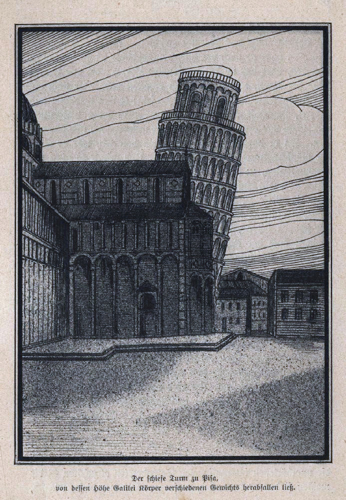
[S. 88]
»Ich habe es noch vor mir, die Geschichte seines Lebens zu schreiben, über das ich durch zahlreiche Notizen, die von Galilei selbst herrühren, reichen Aufschluß erhalten habe. Er muß ein sehr liebenswürdiger Mensch gewesen sein; er war wohltätig und gastfrei, standhaft im Leiden, reizbar, aber leicht versöhnlich, mitteilsam und offen und erst im Alter melancholisch und schweigsam. Da er angenehm zu unterhalten verstand, war er einer der wünschenswertesten Gesellschafter. Und erfüllt es nicht mit Bewunderung, zu sehen, wie dieser Mann neben all seinen Arbeiten noch Zeit übrig hat, den Pegasus zu reiten und sein Gemütsleben in Verse zu bannen?! Auch von diesen besitze ich die unveröffentlichten Originale. Er war ein Freund und Kenner der schönen Künste, sowie der Literatur; nicht allein der alten, sondern auch der italienischen. Er liebte das Landleben und beschäftigte sich besonders gern mit der Kultur des Weinstocks. Und dann, wie viele philosophische Abhandlungen habe ich von ihm im Manuskript! Er war als Philosoph nicht minder groß, denn als Physiker. Aber letzterdings mußten ihm seine Augen doch alles sein, die nicht aufhören wollten, die Tiefen des Himmels zu ergründen. Manche meinen, seine Erblindung sei den anstrengenden Beobachtungen der Sonnenflecke und der Mondesoberfläche zuzuschreiben. Vielleicht war es aber auch die Strafe für seine Vermessenheit, daß Gott ihn endlich mit Blindheit schlug. Gewiß schmerzte ihn aber der Tod seiner Augen nicht einmal so sehr, wie ihn die geistige Blindheit seiner Peiniger quälte. Studieren Sie ihn und je größere Gesichtspunkte Sie nehmen, desto näher werden Sie ihm kommen.
»Die meisten freilich — ich habe in den Galerien vor Michelangelos Bildwerken, vor Raffaels Gemälden Gelegenheit genug, die unerhörtesten internationalen Salbadereien anzuhören — die meisten finden es bequemer, zu fragen: Wo war dieser Mensch,[S. 89] dieser Künstler, dieser Forscher klein? Wie schlaue Detektive spüren sie den großen Renaissancemenschen persönliche kleine Dinge nach, gleichsam um die Menschen herabzuziehen. Hat Michelangelo nicht doch irgendeine Schwäche gehabt? Hat er nicht irgendeine Gemeinheit begangen? Wie mit Bleigewichten sind sie von einem schalen Kleinkramwissen belastet und vermögen deshalb nicht unterzutauchen in den Geist der Renaissance. Sie erinnern mich an das Wort Heines: ›Nur wenn wir im Kot uns fanden, so verstanden wir uns gleich.‹ Natürlich hatte auch Galilei seine Fehler; hat er doch tatsächlich im Jahre 1633 einen Meineid geleistet und auf den Knien seine ganze Lehre abgeschworen. Gewiß, dieser Meineid ist ein Flecken in seinem reinen Leben. Aber zweierlei ist zu bedenken: dieser Meineid rettete ihm das Leben, das noch einen außerordentlichen Wert erhielt durch die Herausgabe der berühmten ›Discorsi‹, auf denen die moderne Physik begründet ist. Und dann, vergessen wir doch nicht, daß Galilei auch der Erste war, der selbst in der Sonne Flecken entdeckt hat ...«
Der Graf war zu Ende.
Es ist wahr, daß die Nachwelt den großen Menschen einen Legendenkranz ums Haupt flicht. Wir wollen diesen Kranz nicht zerreißen, wollen den Duft nicht fortnehmen, der die Helden der Menschheit umgibt, so wie eine edle Patina auf alten Bronzen lagert und ihre Ehrwürdigkeit noch erhöht.
Große Männer gleichen jenen erhabenen Bergesgipfeln, für die wir erst in der Entfernung den richtigen Standpunkt gewinnen, wo man sie denn hoch über alle Bergketten emporragen sieht.
[S. 90]
Der Glaube an das Dasein einer übernatürlichen Welt wurzelt urtief im menschlichen Gemüt. Aus diesem Glauben und aus dem Glauben an Wunder und an die Gewalt des Satans über den Menschen wurde auch der Aberglaube an Zauberei geboren, der sich von Jahrhundert zu Jahrhundert immer mehr entwickelte, und im Mönchstum und in der Unwissenheit die stärksten Stützen gefunden hat. Weil in der Bibel die Zauberei öfters mit dem Tode bedroht wird und von zauberischen und übernatürlichen Dingen vielfach die Rede ist (die Wundertaten des Moses und der ägyptischen Sterndeuter, Bileams Esel, die Hexe von Endor usw.), so war ein Zweifel, daß es Hexen und Zauberer gab, ganz ausgeschlossen. Und wenn durch Bileams Esel ein Engel redete, warum sollten die Hexen sich nicht in Katzen und Werwölfe verwandeln können, durch die der Teufel sprach? Gerade die Mönche brüteten hinter ihren Klostermauern die abenteuerlichsten Hirngespinste aus. Sie gaben den Phantasiegebilden des Volkes bestimmte Gestalt. Sie schilderten die Teufel mit unheimlichen dicken Köpfen, langgezogenen Hälsen, hagergelben Gesichtern, langen schmutzigen Bärten, Pferdezähnen und Pferdefüßen, feurigen Augen, glühenden Schlünden, breiten Mäulern, knotigen Knien, krummen Beinen, geschwollenen Knöcheln und verkehrten Füßen. Und ungeachtet dieser scheußlichen Ungeschlachtheit schlüpften sie durch Türen, Gitter und Ritzen und störten den Andächtigen und Betenden.
Die Mönche waren die ausübenden Zauberer. Sie gaben sich als berufsmäßige Wundertäter aus, weil sie danach trachteten, dem Volke, das im geheimen noch immer den alten heidnischen Gottheiten anhing, diese zu verleiden, und die Wunder Christi, der Propheten und der Heiligen besonders glaubhaft zu[S. 91] machen. Sie, die Diener Gottes, vermochten allein Gott zu versöhnen — denn die Krankheiten galten damals ja nur als Strafen des Ewigen für begangene Sünden — und die Mönche allein hatten die Kraft, die Dämonen durch Vaterunser, durch Salbung, Händeauflegen, Anrufen des Jesunamens zu bannen. Wenn der Mensch von Gott erschaffen worden ist, so kann Gott nicht wollen, daß sein Geschöpf leide, denn Gott ist die Güte. Leidet der Mensch aber dennoch, so ist es der Böse, der Teufel, welcher im kranken Leibe mit Gott kämpft. Wenn aber Gott und Satanas sich streiten, ist natürlich der Mensch der Prügelknabe. Daher also die Schmerzen. Aber dieser vom Teufel Besessene bekommt nun nicht etwa ein Mittel gegen seine Schmerzen, sondern mit Gebet und Buße, mit Opferung und Weihrauch wird der Teufel ausgetrieben. Zauber- und Segensprüche, Beschwörungsformeln und Reliquien waren in jenen Zeiten an der Tagesordnung. Die Mönche mußten eben zu groben Mitteln greifen, um die Reste des Heidentums auszurotten.
Es muß in den Köpfen jener Zeit sehr seltsam ausgesehen haben. Man glaubte, daß der Papst nicht esse und trinke; daß alte kranke Weiber Hexen seien, die auf hohe Berge ritten, und mit teuflischen Geistern dämonische Kinder zur Welt brächten; daß Werwölfe verwandelte Hexen wären. Man glaubte, daß es Teufelssalben gäbe, denen eine zauberische Wirkung innewohnte; daß es einen Alp gäbe, der wie ein wilder Orang-Utan aussehe und nachts die Menschen quäle; daß Hexen Ungewitter hervorrufen könnten; daß sie nachts die Euter der Kühe leer tränken; daß verschluckte Kirschenkerne im Magen zu keimen begönnen. Man liest von Besessenen, die vor den Altären der Heiligen Urnen voll Münzen erbrachen. Man erfährt, daß die Muskatnuß kräftiger werde, wenn sie der Mann bei sich trage; daß das Ungeziefer aus Fäulnis entstehe; daß die Wunde eines Ermordeten zu bluten beginne, wenn der Mörder sich dem Leichnam nähere.
[S. 92]
Die Hexen verschrieben sich dem Teufel mit einem Tropfen Blut oder durch einen Nagel, ein Haar, einen Strohhalm, eine Nadel, eine Nuß, einen Kirschkern. Auch sie geben sich mit Besprechungen, Zeichendeutungen und anderen Zaubereien ab. Sie haben den Mond in der Gewalt und machen Ebbe und Flut. Sie streichen mit Rabenfedern bösen Tau vom faulen Moor und würgen Schweine. Sie schwimmen im Sieb übers Meer und entfesseln Stürme. Der Wind ist ihnen untertan. Sie zaubern dem Menschen Auszehrung an. Sie sind mordsüchtig und entstellen den Leib. Sie reiten die Menschen und saugen ihnen das Herzblut aus. Sie sind prophetisch begabt. In den Tagen, in die die Geburt Jesu fällt, krähen die Hähne die ganze Nacht, die Geister dürfen nicht spuken, die Hexen nicht zaubern. Die bangen ruhelosen Seelen Ertrunkener und am Scheidewege Begrabener müssen nachts umherirren. Auch Menschen, die während ihrer Lebenszeit Geld erpreßt haben, finden im Grabe keine Ruhe. Sie müssen nachts wandern, bis sie ihre Sünden gebüßt haben. Am Nordpol wohnen die bösen Geister; die guten Geister bringen den Menschen, während sie schlafen, Segen ins Haus. Beim Mondlicht ziehen die Feen und Zwerge geheimnisvolle Kreise auf dem Rasen, von denen das Schaf nicht frißt. Zanken sich die Geister, dann steigen böse Nebel vom Meere ans Land und erzeugen Fieber; Bäche wachsen zu verheerenden Strömen an; der Bauer pflügt und sät umsonst; die Schafe erkranken in der Hürde; Krähen fliegen; auf den Waldwegen wächst dichtes Unkraut — kurz eine ganze Brut von Plagen entsteht. Die Elfen benaschen Milchtöpfe, necken die Mägde, verderben den Brei, lassen die Butter mißraten, erschrecken nächtliche Wanderer durch Lachen und leiten sie irre. Sie locken den Hengst, indem sie das Wiehern der Stute nachahmen; verwandeln sich in einen Schemel und fliegen gerade dann weg, wenn sich jemand darauf setzen will. Sie verwirren nachts die Mähne der Pferde und flechten ihnen Weichselzöpfe, die, wiederum[S. 93] entwirrt, auf Unglück deuten. Aus all diesen Gründen bittet man um Schutz vor den Elfen und Kobolden. Sie sind unsterblich. Sie wandeln über den Gischt des Meeres und tanzen auf dem Rücken des Nordwindes. Bald sind sie Feuergeister, die Schrecken bringen und sich in einen zuckenden Blitzstrahl verwandeln; bald sind sie lockende, singende Sirenen. Bald ahmen sie die Schalmei nach und bald tolles Hundegekläff; bald den Hahnenschrei, bald das Wellenplätschern. Sie können sich unsichtbar machen. Sie finden ihren Weg im Dunkeln. Wer aber durch Forschungen Herrschaft über die Geister erlangt hat, vermag gleichfalls Stürme zu entfesseln, die Sonne zu verdunkeln, das Meer aufzupeitschen, Bäume zu entwurzeln, Berge zittern zu machen und Tote aus ihren Grüften zu rufen und sie wieder zu beleben. Ein Zaubermantel ist sein. Was man auf der Erde erblickt, gehorcht ihm. Auf seinen Wink dorrt und verwelkt alles, was grünt; sobald er will, muß der Fels Wasser spenden und aus trockenen Klippen sprudeln reiche Quellen. Die reißenden Wasserwogen verwandelt er zu Brücken; die Winde gehorchen ihm. Ihm gehorchen die Ströme und die wilden Tiere.
Aber den Hexen gelingen Wunder und Untat erst, nachdem sie den zauberischen Sud gebraut. Die Hexen haben es vom Teufel gelernt. Sie nahmen Fett von toten Kindern, vermischt mit Epich, Wolfswurz, Alberbaumzweigen, Ruß, Kalmus, Fünffingerkraut und Fledermausblut. Zuweilen kochten sie einen Brei aus Kinderfleisch, Mohn, Judenkirschen und Schierling. Sie bestrichen damit den Besen, die Ofengabel und den ganzen Leib, setzten sich auf den Besen oder auf die Ofengabel, murmelten die Hexenformel »Obenaus und nirgends an« und flogen zum Schornstein hinaus. Zuweilen führte sie auch der leibhaftige Teufel durch die Lüfte davon. Wenn die Katze miaute, das Käuzchen wimmerte, der Igel quiekte, der Uhu ächzte und der Rabe krächzte, war die Stunde reif. Daß die Hexen sich dieser Salbe bedienten, ist eine historische Tatsache; daß sie wirklich[S. 94] zum Kamin hinausflogen, ist natürlich Unsinn. Die Salbe, mit der die Hexen sich einrieben, hatte eine schlaferregende und betäubende Wirkung und viele Richter und Ärzte beobachteten Hexen, die nach Anwendung der Salbe in Schlaf fielen und nach ihrem Wiedererwachen von Schornsteinfahrten, Satansmessen und Hexentänzen fabelten, obgleich sie sich in ihrem ohnmächtigen Schlafe nicht von der Stelle gerührt hatten. Die Salbe hatte nur diese starken Träume bewirkt und ausgelöst.
Als Ort der Hexenzusammenkünfte war gewöhnlich ein hoher Berg ausersehen oder eine tief in der Erde verborgene Höhle; die Gruft toter Mörder. Auf ihrem Ritt durch die Lüfte, bedienten sie sich auch der Harken und Böcke.
Der Teufel zeichnete seine Knechte und Dienerinnen mit besonderen Mälern, Auswüchsen und Beulen; stach man in solch ein Satansmal hinein — die Richter taten es stets —, so gaben sie, wenn man wirklich Teufelsmägde vor sich hatte, kein Blut von sich.
Es wurde schon erwähnt, daß nicht nur das gemeine Volk von solchen abergläubischen Vorstellungen durchsetzt war, sondern auch die Aristokratie des Landes bis hinauf zum Könige.
Alle aus jener Zeit veröffentlichten Akten, Bücher und Briefe sprechen fortwährend von Marter, Folterbank, Hängen, Rädern, Köpfen; aber es wird dabei nicht sehr viel Gemüt verschwendet. Stirbt jemand plötzlich, so denkt man in den meisten Fällen an Giftmord; natürliche Ursachen scheinen ausgeschaltet. Ein Sprichwort jener Tage lautet: »Wer mit dreiundzwanzig Jahren nicht starb, mit vierundzwanzig nicht ertrank, und mit fünfundzwanzig nicht gemordet wurde — muß Gott für das Wunder danken«. Wird jemand aus nicht deutlich erkennbaren Ursachen krank oder zeigt jemand einen besonderen Grad von Leidenschaft, so denkt man zuerst an Zauberei. Man verachtete und verdammte zwar die Zauberer und Zauberinnen, aber man glaubte an sie.
Wenn man sich nicht vorsah, hatten einem die verschrienen Weiber, die es mit dem Satan hielten, die schönste Krankheit[S. 95] angehext. Sogar Luther schrieb an den Kurfürst Johann von Sachsen: »Keine Krankheit kommt von Gott, der gut ist und jedermann alles Gute tut, sondern kommt vom Teufel, der alles Unglück stiftet und anrichtet.« Die Hexen, die Wurzeln des Übels, mußten also mit Feuer ausgerottet werden, sowie man Baumwurzeln ausrodet. Die Ärzte jener Zeit, die den behexten Kranken weder Rat noch Heilung zu bringen vermochten, riefen in ihren medizinischen Werken mit vereinten Kräften nach dem Henker. Sie sind von der Teufelskraft der Hexen durchdrungen und verlangen im Namen der ganzen Menschheit deren Tod durch Feuer und Wasser. Sie halten es geradezu für ein Verbrechen, wenn die christliche Obrigkeit sich nicht bemüht, diese Ungeheuer vom Erdboden zu vertilgen.
Und in der Tat war ja auch der Hexenprozeß durch die immer häufiger werdenden Anklagen wegen Zauberei endlich eine weltgeschichtliche Einrichtung geworden; am Ebro wie am Rhein, an der Themse wie an der Seine, in den Alpen wie an den Meeresküsten, in katholischen wie in protestantischen Ländern loderten die Scheiterhaufen für denselben Wahn. Im Kurfürstentum Trier allein wurden in wenigen Jahren sechstausendfünfhundert Menschen, im Brandenburgischen zwölfhundert, im Würzburgischen zweihundert und in Lothringen neunhundert Menschen hingerichtet, die der Zauberei angeklagt waren.
Die Grausamkeit, mit welcher die Hexen gefoltert wurden, kannte keine Grenzen. Unter den Marterinstrumenten kommen die Presse, die Schraube, Stricke, der Bock, das Pferd, die Leiter, das Halsband, der spanische Kragen, der dänische Mantel, die englische Jungfrau, die braunschweigischen Stiefel und andere fürchterliche Dinge vor, die die Qual des Verurteilten in niederträchtig raffinierter Weise verlängerten. Man goß ihnen siedend-heißes Öl oder auch Teer auf die nackten Gliedmaßen, trieb ihnen Nägel unter die Fußnägel, röstete sie mit brennenden Kerzen unter den Armen, hing sie an ihren Zöpfen tagelang auf.
[S. 96]
Um die Hexen leichter zum Bekenntnis zu bringen, wurde ihnen vom Henker die Hexensuppe gereicht: ein Getränk aus Bier, geriebenem Brot, Hechtgalle, schwarzem Kümmel, gestoßenen Knochen verbrannter Hexen, das Ganze stark gesalzen. Sie mußten ein Hemd aus Werg anziehen, das an einem Tag gesponnen, gewebt und genäht worden war. Ein Amulett wurde ihnen umgehängt.
Wenn die Angeklagten wirklich Hexen waren und mit dem Satan im Bunde lebten, so hätte er sie ja auch aus der Hand der Richter befreit, hätte ihnen die Folter erspart und sie vom Scheiterhaufen errettet — dieser sehr einfache Gedanke wurde von den Einsichtigen immer wieder, aber freilich vergeblich, den verblendeten Richtern, Priestern und Bütteln vorgehalten. Es fiel den Abergläubischen auch nie auf, daß die als Hexen Verschrienen häufig alte, arme Weiber waren, was sie ja nicht gewesen wären, wenn sie vom Teufel Jugend und Reichtum verlangen konnten, und daß keine einzige Hexe versucht hatte, sich vor Gericht unsichtbar zu machen, obwohl man sie doch gerade dieser teuflischen Kunst wegen verbrannte.
In dieser Zeit, in der solche Vorstellungen aber im Schwange waren, lebte auch die Jungfrau von Orleans und wir werden jetzt sehr viel leichter verstehen, warum auch sie endlich dem Aberglauben ihrer Zeitgenossen zum Opfer fallen mußte.
Johanna war am Dreikönigstage, dem 6. Januar 1412 im Dorfe Domremy, am linken Ufer der Maas, geboren. Sie war oft Zeuge, wie sich die Kinder ihres Dorfes für die Sache des Königs mit denen des nahen Dorfes Maxey schlugen, das zur englischen Partei hielt. Sie wuchs still und fromm auf, von ihrer Mutter Isabella häuslich erzogen. Ihr Vater, Jakob, war Bauer mit einem kleinen Vermögen. Von einer jüngeren Schwester Katharina, sowie von dem ältesten Bruder Jakob wird wenig[S. 97] erzählt; die beiden anderen Brüder, Johann und Peter, folgten Johanna später in den Krieg. Ob sie als Kind die Herde gehütet, konnte sie sich später nicht entsinnen. Wohl aber rühmte sie sich im späteren Verhör zu Rouen, daß ihre Mutter sie nähen gelehrt habe und daß es in ganz Rouen wohl keine Frau gäbe, die ihr darin etwas zu zeigen habe. Lesen und schreiben konnte sie nicht; den Religionsunterricht erhielt sie allein von ihrer Mutter. Er beschränkte sich auf das Vaterunser, das Ave Maria und das Kredo. Alle Zeugen aus ihrem Hause rühmten ihr gutes Herz; sie pflegte die Kranken und beschenkte die Armen. Sie war so mildtätig und gutherzig, daß die Vögel ihr aus der Hand pickten.
Daß Wundergeschichten und Legenden auf sie eingewirkt haben, ist ziemlich sicher anzunehmen. Von einem nahen Walde bei Domremy gingen allerlei Sagen, daß dort Feen hausten und daß sie besonders eine Quelle bei einer Buche liebten, die man den »Baum der Damen« nannte. An ihren Zweigen hingen die Kinder geweihte Kränze auf. Daneben lief eine alte Prophezeiung des Zauberers Merlin durch die Lande, die besonders in Johannas Heimat so erzählt wurde: Durch eine Frau sei Frankreich zugrunde gegangen — gemeint war die verschwendungssüchtige, sittenlose und intrigante Königin Isabella —, durch eine Jungfrau werde es wieder gerettet werden.
Zu alledem gesellten sich die Schrecken des Krieges; arme Flüchtlinge kamen ins Dorf, denen Johanna ihr Bett abtrat, um selbst auf dem Getreidespeicher zu schlafen. Einmal mußte auch Johanna mit ihren Eltern und Nachbarn vor den wilden Kriegshorden flüchten, und als sie zurückkehrten, war das Dorf verwüstet, ihr heimatliches Haus zerstört, die Kirche niedergebrannt.
Johanna empfand das Schreckliche und Barbarische des Krieges inniger und schmerzvoller als die andern. Sonst merkte man ihr nichts Außerordentliches an. Sie war nur in sich gekehrt und sehr schüchtern. Und vielleicht war nur das eine an ihr auffällig,[S. 98] daß sie oft zur Kirche ging und beichtete, obwohl sie noch ein Kind war und nichts zu beichten haben konnte.
Sie war erst zwölf Jahre alt. Die bayerische Isabella hatte durch den Vertrag von Troyes 1420 Frankreich an den König von England verraten, indem sie Heinrich V. von England zum Erben Frankreichs einsetzte und ihm ihre Tochter Katharina zur Gemahlin gab. Karl VI. von Frankreich war 1422 gestorben und sein Sohn, der rechtmäßige Nachfolger, irrte, um sein Reich betrogen, machtlos von Stadt zu Stadt und von Schloß zu Schloß. Da war Johanna an einem Sommertag, an dem gefastet werden mußte, mittags im Garten des elterlichen Häuschens, als sie plötzlich einen Heiligenschein gewahrte, aus dem sie eine Stimme vernahm, die also sprach: »Johanna, sei immer und immer ein gutes, folgsames Kind und gehe oft zur Kirche!« Johanna erschrak sehr; die Stimme kehrte aber öfters wieder. Der Heiligenschein nahm immer mehr körperliche Gestalt an, bis Johanna später in der Lichterscheinung den Erzengel Michael erkannte.
Sie wuchs, wurde kräftig und schön, voll sanfter Milde und es ging ein Zauber von ihrer Erscheinung aus, mit dem sie in der Folge den wildesten Krieger beschämen und umwandeln konnte. Aber sie blieb dennoch das Kind, das sie war, obwohl ihr Geist reifte und immer hellseherischer wurde. Die Stimmen, die in ihr sprachen, wurden in demselben Maße, wie sich das Elend des Landes steigerte, immer lauter und eindringlicher. »Johanna!« mahnte es in ihr, »eile dem König von Frankreich zu Hilfe und du wirst ihm sein Königreich zurückerobern.« Und sie antwortete zitternd und zag: »Gestrenger Herr, ich bin nur ein armes Mädchen, ich kann weder reiten, noch Reisige führen.« Die Stimme erwiderte: »Geh zu Baudricourt, dem Hauptmann von Vaucouleurs, der wird dich zum König führen lassen. Die heilige Katharina und die heilige Margarete werden dir beistehen.« Da blieb sie bestürzt stehen und weinte, als hätte sie ihr ganzes Schicksal schon vor Augen gesehen. Der heilige Michael erschien[S. 99] ihr aber wieder und flößte ihr Mut ein. Er sprach zu ihr von dem Jammer, der in Frankreich laut wurde; dann kamen die heiligen Frauen von himmlischem Glanz umgeben und sprachen zu ihr mit rührender Stimme, daß sie in Tränen ausbrach.
Und nun begann in ihrem Innern ein harter schmerzlicher Kampf, der fünf Jahre dauerte. Das fromme, schüchterne und arbeitsame Kind sollte die traute Heimat, die Gespielinnen der Jugend und den väterlichen Garten verlassen; sollte nicht mehr die Stimmen der Eltern und Geschwister vernehmen, sondern nur noch die erschütternden Stimmen der Heiligen. Das Kind, das bei jedem Wort, das ein Mann zu ihm sprach, errötete, sollte in das wilde Kriegsgetümmel, sollte sich unter die rauhen Soldaten mischen, unter diese wilden, groben, ungebildeten Leute, die mit schreiend bunten Gewändern und mit dreister Rede prahlten, die nur danach trachteten, so trunken als möglich zu sein und sich reichste Beute zu sichern. Und vor allem mußte Johanna, um den inneren Stimmen zu folgen, dem geliebten Vater ungehorsam werden, der, als er zum ersten Male von Johannas Vorhaben hörte, zornig in die Worte ausbrach: »Wenn ich glauben könnte, daß sie so etwas täte, würde ich sie mit meinen eigenen Händen ertränken.« Er fürchtete um sein Kind, weil er wußte, daß man nicht an ihre inneren heiligen Stimmen glauben, sondern sie bald für eine Teufelshexe erklären würde. Und wir wissen ja nun, welch ein Los ihrer als Hexe in der damaligen Zeit harrte. Aber das alles half nichts. Die Stimmen drängten sie immer mächtiger zum Schlachtfelde.
Um sie von ihrem Gedanken abzubringen, griffen die verzweifelten Eltern zu einer List. Man wollte sie durch eine Heirat zur Vernunft bringen. Ein junger Mann aus dem Dorfe fand sich bereit, zu erklären, sie habe ihm, als sie noch klein war, die Ehe versprochen, und da Johanna es natürlich ableugnete, ließ er sie vor das Kirchengericht nach Toul berufen; man glaubte, daß sie nicht wagen würde, sich zu verteidigen und sich lieber zur[S. 100] Heirat verurteilen lassen würde. Aber man irrte sich. Sie erschien vor Gericht, verteidigte sich und gewann ihre Freiheit.
Die Angehörigen widersetzten sich noch immer ihrem Entschlusse. Aber es war ihr inzwischen gelungen, ihren Onkel von ihrer himmlischen Sendung zu überzeugen. Und er nahm sie mit sich in sein Dorf Petit-Burey (Burey-la-Côte), das eine Stunde von Domremy entfernt war, und gab an, seine Frau bedürfe der Pflege Johannas. Die Eltern wußten zunächst noch nichts von dem festen Entschlusse der Tochter, denn sie hatte sich nur von einer kleinen Kameradin verabschiedet. »Und hätte ich hundert Väter und hundert Mütter gehabt und wäre ich eine Königstochter gewesen — da Gott es mir gebot, mußte ich fort,« antwortete sie später ihren Richtern in Rouen. Von ihrem Oheim ließ sich Johanna nun nach Vaucouleurs zu dem Ritter Baudricourt führen, mit dem sie am 23. Mai 1428 zusammentraf. Sie wußte vorher, daß er sie abweisen würde; ihre »Stimmen« hatten ihr gesagt, daß es ihr erst zum dritten Male gelingen würde, sich Gehör zu verschaffen.
Baudricourt war ein rauher Degen, der von niemand sonst Hilfe erhoffte, als von seiner Waffe. Er wußte nicht, was er sagen sollte, als in ihrem groben, roten Dorfkleide das Bauernmädchen vor ihm stand, und das nun mit fester Stimme erklärte, sie komme von ihrem Herrn gesandt, um dem Dauphin zu melden, daß dies Königreich des Herrn sei, daß aber der Dauphin zum König bestimmt sei und daß sie ihn würde salben lassen. Hauptmann Baudricourt lachte sich eins und gab dem Onkel den Rat, Johanna mit ein paar tüchtigen Ohrfeigen zu ihren Eltern zurückzuschicken.
Der Sommer verging und der Herbst und der Januar 1429 kam heran. Johanna beklagte sich: »Und doch muß ich noch vor Mitfasten bei dem Dauphin sein, müßte ich mir auch, um zu ihm zu kommen, die Beine bis zu den Knien ablaufen. Denn für ihn gibt es keine andere Hilfe als mich, obgleich ich lieber bei meiner[S. 101] armen Mutter am Spinnrocken bliebe; denn das ist ja nicht eigentlich meine Arbeit. Aber ich muß gehen und es verrichten, denn mein Herr will es.«
Allmählich ward das Volk von Johannas frommem Gottvertrauen bewegt und begeistert. Zwei Edelleute, Ritter de Metz und der Schildknappe Bertrand de Poulengy hatten sich ebenfalls Johanna angeschlossen. Baudricourt hatte inzwischen von Karl, der in Chinon weilte, die Genehmigung erhalten, Johanna ins Feld zu schicken. Das Volk drängte immer heftiger und als die Gottgesandte endlich noch die Niederlage bei Rouvray auf den bestimmten Tag vorausgesagt hatte, ließ er sie mit einem recht schlechten Schwert abziehen. Außer den beiden Edelleuten begleiteten sie noch zwei Bogenschützen, des Königs Bote und ihr Bruder Peter. Die Bürger von Vaucouleurs steuerten sie aus und ihr Onkel kaufte ihr ein Pferd.
So ritt sie etwa am 20. Februar 1429 fort, mitten in das von den Kriegsbanden unsicher gemachte Land hinein, nachdem sie vorher ihre Eltern brieflich noch einmal um Verzeihung gebeten hatte.
Mit ruhiger Heiterkeit durchzog sie das wüste Land. Sie trug nun männliche Kleidung, um sie nie wieder abzulegen. Und dennoch schien sie anmutig und mädchenhaft. Sie bewahrte ihre kindliche Einfalt und Frömmigkeit und hielt in jedem Städtchen an, um die Messe zu hören. Manchmal sank den Begleitern der Mut oder sie verloren die Geduld ob der Gebetsverzögerungen; aber Johanna wußte sie immer wieder zu trösten. Sie überschritt endlich die Loire und kam am 6. März in Chinon an, wo der König in seinem weitläufigen Schlosse Hof hielt. Man zögerte zwei Tage lang, ehe man sie empfing; der König glaubte, sich lächerlich zu machen. Seine Lage war freilich eine verzweifelte, aber einem Bauernmädchen die Führung des Krieges zu überlassen, war doch eine Selbstverspottung in den Augen Europas. Aber gesetzt auch, sie konnte Wunder tun, wer bürgte dafür, daß[S. 102] Gott mit ihr im Bunde war? Vielleicht war es der Böse? Nein, die Geschichte war zu unglaublich. Der Erzbischof von Reims hatte die stärksten Bedenken. Aber am 9. März empfing sie der Dauphin dennoch.
Es war Abend, und fünfzig Fackeln erleuchteten den prunkenden Saal. Alle Edlen und Ritter waren versammelt. Jeder war neugierig, das Wunder zu sehen. Sie trat bescheiden ein und erstaunte keineswegs ob der glänzenden Menge. Sofort erkannte sie den König, der sich unter die Ritter gemengt hatte, um unerkannt zu bleiben und obwohl er anfangs geleugnet hatte, daß er der König sei, umfaßte sie seine Knie und sprach: »Edler Dauphin, mein Name ist Johanna, die Jungfrau. Der König der Himmel offenbart Euch durch mich, daß Ihr in der Stadt Reims gesalbt und gekrönt werden sollt und daß Ihr der Statthalter des Königs der Himmel, der da ist der König von Frankreich, sein werdet.« Der König nahm sie zur Seite und nach einer kurzen Unterhaltung hatte sie ihm die geheimsten Gedanken seines Herzens offenbart. Trotzdem mißtraute man ihr und ließ sie von Professoren der Theologie einem Verhör unterwerfen. Der eine fragte sie: »Wozu braucht Gott denn Kriegsleute, wenn er Frankreich erretten will?« Sie antwortete ruhig: »Die Kriegsleute werden sich schlagen, und Gott wird den Sieg verleihen.« Ein anderer Theologe, der einen häßlichen Dialekt sprach, fragte: »In welcher Sprache reden denn deine Stimmen?« und Johanna gab schlagfertig zurück: »In einer besseren als die Eure.« »Gott will nicht, daß man dir ohne Zeichen glaube,« rief ein Dritter zornig aus. Johanna sagte: »Ich bin nicht gekommen, um Zeichen und Wunder zu tun; mein Zeichen wird sein, daß ich die Belagerung von Orleans aufhebe.«
Man konnte nicht fertig mit ihr werden und ließ sie in Ruhe. Es war auch kein Augenblick mehr zu verlieren, denn die Gefahr hatte ihren Gipfel erreicht. Man entschloß sich nun, die Jungfrau auszurüsten. Sie verlangte ein Schwert, das sie genau[S. 103] beschrieb und das, wie sie angab, hinter einem Altare gefunden wurde. Ihr militärisches Gefolge bestand aus dem Schildknappen Ritter Jean d'Aulon, dem Pagen Immergut, zwei Herolden, einem Hausmeister und zwei Dienern. Zum Feldpriester wählte sie sich den Augustinermönch Jean Pasqueral. Ihr Bruder Peter blieb bei ihr.
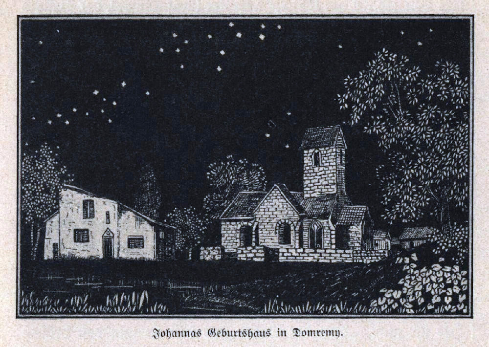
Jetzt verabschiedete sie sich vom König. In Tours ließ sie sich noch eine Fahne malen, wie ihre »Stimmen« sie ihr beschrieben hatten: Lilien auf der einen Seite, auf der anderen Gott, auf einem Regenbogen thronend. Und nun zog sie in den Kampf.
Des Weges unkundig, hatte sie sich der Führung der Kriegshauptleute überlassen. Sie zogen auf dem linken Ufer der Loire nach Orleans. Am 29. April erblickte Johanna zum ersten Male die Türme der Stadt. Im nahen Schlößchen Reuilly rastete[S. 104] Johanna bis zum Abend. Und am selben Abend acht Uhr, Freitag, den 29. April, zog Johanna durch das burgundische Tor in Orleans ein. Sie war noch nicht siebzehnundeinhalb Jahre alt. Die ganze Stadt war ihr entgegengegangen. Ihr Schildknappe, die Fahne tragend, schritt voran und neben Johanna, die in voller Rüstung auf weißem Rosse saß, schritt ihr Page Immergut. Links von ihr ritt der königliche Vetter Graf Dunois, der Bastard von Orleans, und hinter ihr kamen ihre Brüder; Herren und Ritter folgten, Knappen, Hauptleute, Schöffen der Stadt. Freudetrunken umringte sie das Volk, das mit Fackeln ihren Weg beleuchtet hatte. Männer, Frauen und Kinder drängten sich an sie heran, um sie zu berühren.
Die belagerte Stadt jubelte, als sei sie bereits entlagert; eine himmlische Beruhigung senkte sich auf alle Gemüter. Nach sieben Monaten des Kampfes war dieser liebliche Engel erschienen, um ein Wunder zu vollbringen. Denn die Engländer, von dem Ereignis ganz bestürzt, hielten sich in ihren Bastillen verschanzt. Sie sahen dem Zuge der Jungfrau wie betäubt zu und wagten keinen Angriff.
Am folgenden Morgen eilte sie zum Bastard und verlangte den Sturm auf die englischen Verschanzungen; aber der Kriegsrat folgte ihr nicht. Von der Brücke aus ruft sie nun den drüben verschanzten Engländern zu, sich zu ergeben, aber die lachen die Jungfrau nur aus, obwohl sie im geheimen Angst haben vor der »Zauberin«.
Und jetzt beginnt ein wütender Kampf. Eine Schlacht nach der andern wird geschlagen, ein Sturm nach dem andern wird gelaufen. Und Johanna, das kaum achtzehnjährige Mädchen, ist stets die mutige Anführerin, der Feldherren und Soldaten blindlings folgen. Vom 2. bis 5. Mai ist sie fast immer im Felde, immer in der Rüstung und zu Roß; nur ab und zu wirft sie sich nieder, um inbrünstig um Sieg zu beten und eine kleine Weile zu ruhen. Und am 6. Mai endlich ist der Sieg zu Gunsten der[S. 105] Franzosen entschieden. Von den etwa achthundert Engländern sind kaum zweihundert übrig, während die Franzosen nur geringe Verluste erlitten haben. Aber als die letzte Schlacht, die dreizehn Stunden gedauert hat, glücklich vorüber ist, vergießt Johanna Tränen des Glücks über den Sieg und Tränen des Mitleids mit den Gefallenen, die ohne Beichte starben. Nun begann der Triumphzug in die Stadt. Glocken läuteten, Trompeten schmetterten Siegesfanfaren, Jubelgeschrei erhob sich, Segenswünsche wurden laut. Die Jungfrau wurde in die Wohnung geleitet, wo sie zu Gaste war. Ein großes Festmahl war ihr gerüstet, aber sie nahm nur einige Brotschnitten zu sich, die sie in weinvermischtes Wasser tauchte.
In der Nacht räumten die Engländer noch die letzten Bastillen. Am folgenden Morgen verkündeten die Turmwächter, daß sich das feindliche Heer auf dem Felde in Ordnung stelle. Johanna und der Bastard von Orleans eilten mit ihren Truppen hinzu. Man fragte Johanna, was man tun solle. »Die Messe hören,« antwortete sie. Sie ließ einen Tisch bringen, den sie zum Altar schmückte, und der Gottesdienst begann. Als er zu Ende war, fragte Johanna, wohin die Engländer den Kopf wendeten. »Nach Meung zu,« war die Antwort. »Beim Namen Gottes,« sagte nun die Jungfrau, »sie ziehen ab; laßt sie ziehen; wir wollen dem Himmel danken und sie nicht weiter verfolgen, denn es ist heute Sonntag.« In patriotischer Stimmung beschlossen die Bürger und Frauen der Stadt den denkwürdigen Tag durch eine feierliche Prozession.
Das eine Gebot der himmlischen Stimmen, Orleans zu befreien, war nun erfüllt. Es blieb ihr noch das andere: den König nach Reims zu führen und ihn zu krönen.
Am 10. Mai verließ sie Orleans und ging nach Loches, wo der König weilte, um ihn zu dem Zuge nach der Krönungsstadt zu drängen. Aber sie stieß auf Widerstand, der allerdings berechtigt war. Denn die Engländer hatten noch eine Menge[S. 106] Plätze an der Loire besetzt, aus denen sie erst hätten vertrieben werden müssen. Die Jungfrau fügte sich dem neuen Kriegsunternehmen und begann den Feldzug an der Loire.
Am 12. Juni fiel Jargeau. Der Herzog von Alençon zögerte mit dem Sturm; es sei noch nicht Zeit, meinte er. »Es ist immer Zeit,« antwortete Johanna, »sobald es Gott will. Aber hast du Angst, artiger Herzog? Weißt du nicht, daß ich deiner Frau versprochen habe, dich unverletzt heimzuführen?« Solcher Rede widerstand er nicht, und so wurde Jargeau gestürmt. Johanna versöhnte auch die königliche Partei mit dem am Hofe verhaßten mürrisch-stolzen Konnetabel Artus de Richemont, der der Jungfrau erst hatte geloben müssen, treu dem Könige zu dienen. Mit seiner Hilfe wird Beaugency bei Blois am 17. Juni genommen. Jetzt verlassen die Engländer auch Meung und am 18. Juni werden sie bei Patay in der Beauce so gründlich geschlagen, daß die Loire von jetzt an für immer von ihnen befreit bleibt. An demselben Tage wurde auch der mächtige englische Feldherr Talbot gefangen.
Während man sich der reichen Herren bemächtigte, um ein bedeutendes Lösegeld zu gewinnen, wurde das arme Kriegsvolk einfach niedergemetzelt. Etwa zweitausend Tote bedeckten das Schlachtfeld, und Johanna brach, beim Anblick so vieler Leichen, in Tränen aus. Trotz allem war sie ein Kind geblieben; die Kriegsgreuel hatten ihr Herz nicht verhärtet. Ein französischer Soldat hieb neben ihr unbarmherzig einen armen Engländer nieder, der ihn um Gnade anflehte. »O du böser Franzose,« rief Johanna erschüttert aus, sprang vom Pferde, richtete den Verwundeten auf, pflegte und tröstete ihn und erleichterte ihm seine Sterbestunde.
Und nun unternimmt sie den Triumphzug nach Reims. Die Höflinge setzten ihrem Plane zwar noch immer Widerstand entgegen und rieten, man müsse erst noch dieses Städtchen nehmen, dann jenes; müsse die Normandie erst vom Feinde säubern;[S. 107] aber Johanna beharrte auf ihrem Entschluß, den König vor dem Volke zu weihen. Das Volk selbst, das von den Wundertaten der Jungfrau begeistert war, riß den König mit fort und drängte ihn endlich, in den Zug nach Reims zu willigen. Johanna war nach Orleans geeilt, um neue Truppen zu sammeln, aber als sie zum königlichen Hof nach Gien zurückkehrte, war man dort schon wieder unschlüssig geworden. Die Höflinge fürchteten sich vor jedem Mauerloch, in dem man ein paar Engländer vermutete. Aus Verdruß über diese armseligen Menschen verließ sogar Johanna den Hof und blieb zwei Tage außerhalb der Stadt. Nur eins entschuldigte die Feigheit des Hofes: es war kein Geld in der königlichen Schatzkammer. Aber Volk und Ritter waren so entflammt, daß sie erklärten, auf ihre eigenen Kosten ins Feld ziehen zu wollen, wenn Johanna sie anführe. Nun mußte der Hof sich fügen und zog in die Richtung nach Reims. Am 5. Juli kam man vor der Stadt Troyes an, die sich weigerte, die Tore zu öffnen oder gar auf die Briefe des Königs und der Johanna hin, sich zu ergeben. Die ängstlichen königlichen Räte machten wieder den Vorschlag, sich an die Loire zurückzuziehen. Aber Johanna flehte den König an, sich nur drei Tage zu halten; in dieser Frist verspreche sie ihm, die Stadt entweder durch Liebe oder durch Waffen zu gewinnen. Man rüstete zum Angriff, der keine drei Tage dauerte. Die Waffentaten von Orleans hatten ihre Wirkung auf die Bürger von Troyes nicht verfehlt. Sie verlangten nur freien Abzug mit ihrer ganzen Habe. Der König gewährte das, dachte aber nicht an die Gefangenen, die die Troyesjeser auch mit fortschleppen wollten. Johanna war die einzige, die an diese Franzosen dachte, und sie setzte auch am 9. Juli ihre Befreiung durch.
Und von nun ab gleicht der Zug in der Tat einem Triumphzuge. Chalons, von der Jungfrau aufgefordert, sich dem Könige des Himmels und dem Dauphin Karl zu ergeben, öffnet am 14. Juli seine Tore, und alle übrigen Festungen unterwegs[S. 108] tun das gleiche. Aus der Champagne und den Grenzorten eilt das Volk herbei, darunter Bürger aus Domremy, die Johanna freudig begrüßten. Ahnungsvoll sagt ihnen Johanna: »Ich fürchte nichts, als den Verrat.« Wieder ist der Hof voller Besorgnis; es fehlt an Geld, es fehlen Geschütze, um Reims zu nehmen. »Fürchtet nichts,« sagt Johanna zum Dauphin; »die Bürger werden sich Euch ergeben, noch ehe Ihr ankommt und Euch entgegengehen.« Und es war so gekommen, wie sie es in ihrem unbegrenzten Gottvertrauen vorausgesagt hatte. Die Bürger schickten die Ältesten und Vornehmsten dem Dauphin entgegen, und am Abend des 16. Juli zog Karl in Reims ein. Eine wundersame Rührung überkam Johanna. »Wenn ich sterben soll,« rief sie, »wäre ich recht glücklich, wenn man mich hier begrübe.« »Wo glaubst du einmal zu sterben?« fragte sie der Erzbischof. »Wo es Gott gefallen wird,« gab sie zurück; »ich möchte gern, daß es ihm gefiele, mich wieder heimziehen zu lassen zu meiner Schwester und zu meinen Brüdern; sie wären so froh, mich wiederzusehen. Ich habe wenigstens getan, was unser Herr mir geboten hat.«
Am folgenden Tage, dem 17. Juli, wurde der König nach der uralten Zeremonie in der Kathedrale mit dem heiligen Öl gesalbt. Der Prunk war überwältigend, und die Volksmenge, die herbeigeströmt war, eine ungeheure. Während der ganzen Feierlichkeit stand Johanna in ihrer Rüstung am Altar neben dem König, ihre Gottesfahne in der Hand. Als der König gesalbt war, warf sich Johanna vor ihm nieder, umarmte seine Knie und weinte bitterlich, und alles Volk weinte mit ihr. »O König,« rief sie, »nun ist der Wille Gottes geschehen, der da wollte, daß ich Orleans befreite und Euch in Eure Stadt Reims führte, um das heilige Öl zu empfangen, zeigend, daß Ihr der wahre König seid, und Euch das Königreich Frankreich gehören soll.«
In Reims sah Johanna auch ihren Vater wieder, der mit den andern herbeigeeilt war, sein Kind, das er abgöttisch liebte, zu umarmen.
[S. 109]
Aber was sollte sie nun, nachdem sie ihre Aufgaben erfüllt sah, tun? Sie blieb in den Diensten des Königs, obwohl die inneren Stimmen aufgehört hatten, zu sprechen. Sie dachte an ihr baldiges Ende, denn sie trug ihrem Beichtvater auf, den König zu bitten, wenn sie gestorben sein werde, Kapellen für diejenigen zu bauen, die für ihr Vaterland ihr Leben gelassen hatten. Das Wiedersehen Johannas mit ihren Eltern und Geschwistern hatte in ihr auch die mächtige Sehnsucht erweckt, in die Heimat zurückzukehren. Aber der König, der ihr so viel zu danken hatte, wollte sie nicht entlassen. Dazu kam der Rausch des Sieges und die Hoffnung, den Krieg rasch zu beenden. Alle Städte, vor denen der König erschien, öffneten ihm freiwillig ihre Tore. Es schien fast, als ob es keinen Engländer mehr in Frankreich gäbe.
Da kam plötzlich die erste Niederlage, und der Verrat an der Jungfrau.
Im August war der König mit dem Heere auf Paris losmarschiert; aber durch einen heimlich geschlossenen Vertrag hatte Karl VII. selbst den Sieg der Jungfrau gelähmt und ihr Leben preisgegeben. Am 28. August hatte der König mit den Burgundern einen Waffenstillstand auf vier Monate abgeschlossen. Johanna wurde von trüben Ahnungen erfüllt, als ihr im Lager vor Paris ihr geweihtes Schwert zerbrach; es war ihr, als ob Gott ihr damit ein Zeichen geben wollte, daß ihr Streiten im Dienste Frankreichs beendet sei. Trotzdem fand am 8. September ein Sturm auf Paris statt; es war das Geburtsfest der Jungfrau Maria. Die Franzosen wurden aber zurückgeworfen, und Johanna am Schenkel verwundet. Nun erhoben all die Zauderer und Feiglinge, die nur widerwillig Johanna gefolgt waren, ihre Stimmen, und der König hörte nur zu gern auf sie. Das Heer verließ die Provinz und zog sich an die Loire zurück. Das Drängen und Flehen der Jungfrau war umsonst. Nun hing sie ihre Rüstung unmutig vor den Reliquien der Abtei zu St. Denis auf und folgte dem Könige.
[S. 110]
Das war kein kriegerischer Heerzug mehr; der Rückzug glich einer unordentlichen Flucht. Ende September kam der König in Bourges an; dort heilte Johanna ihre Wunde. Jeden Morgen ging sie zur Frühmesse, Gott um neuen Sieg anflehend.
Der Herzog von Alençon brannte darauf, sein Herzogtum in der Normandie wiederzugewinnen; er rüstete sich und bat den König, ihm die Jungfrau zu schicken, denn viele, die sonst gern mit ihm zogen, würden sich nicht von der Stelle rühren, wenn die Jungfrau nicht mitginge. Aber der engherzige und ehrgeizige falsche Erzbischof von Reims und mehrere Herren, die den Hof regierten, verwarfen den Vorschlag. Die Loire stromaufwärts waren noch einige Städte in den Händen der Burgunder; gegen diese willigte man ein, die Begeisterung Johannas zu benutzen. Es gelang ihr auch, fast schon von allen verlassen, im November die fliehenden Truppen zum Sturm auf St. Pierre-le-Moustier zu führen und den Platz zu nehmen. Aber die Belagerung von La Charité mißlang »zum großen Mißfallen der Jungfrau«. Kurz darauf, Anfang Dezember, versetzte der König die Jungfrau, ihre Eltern, ihre Brüder und deren Nachkommen unter dem Namen Du Lis in den Adelstand. Johanna war nicht eitel, und ihre Erhebung in den Adel befriedigte nicht ihren Tatendrang, machte die Vorwürfe der Tatenlosigkeit nicht verstummen.
Endlich am 28. März, des trägen Wartens am Hofe überdrüssig, reiste Johanna heimlich ab, ohne vom König Abschied zu nehmen und ging nach Ligny. Ihre Seele war krank vor Trauer, denn bald nachher hatte sie eine Erscheinung, die ihr Böses weissagte. Die innere Stimme verkündigte ihr, daß sie noch vor dem Johannisfeste in die Hände des Feindes fallen würde; daß dies unvermeidlich wäre; daß sie darüber aber nicht erschrecken, sondern im Gegenteil dieses Kreuz dankbar aus der Hand Gottes hinnehmen sollte, da ihr Gott auch die Kraft geben würde, es zu tragen. Johanna flehte zu ihren Heiligen, sie möchten Gott bitten, ihr die Schmerzen einer langen Gefangenschaft zu ersparen[S. 111] und sie durch einen schnellen Tod in sein heiliges Paradies aufnehmen zu wollen. Aber die Heiligen offenbarten ihr nichts weiter; Geduld und Schickung in ihr Los rieten ihr die Stimmen. Johanna vertraute ihre Ahnungen keinem an.
Der unglückselige Tag nahte heran. Es war am 23. Mai 1430. Der Herzog von Burgund belagerte Compiègne an der Oise, das sich für Karl VII. erklärt hatte. An diesem Tage hatte sich Johanna in die Stadt geworfen und machte einen Ausfall. Anfangs wichen die Belagerer, dann aber sammelten sie sich wieder und trieben die Belagerten in die Stadt zurück. Die Jungfrau war zurückgeblieben, um den Rückzug zu decken. Als sie in die Stadt wollte, war das Tor schon geschlossen. Sie wurde von den nachdringenden Feinden erkannt, ein Pikarder Bogenschütze riß sie vom Pferde. Der Bastard von Vendôme ergriff sie und verkaufte sie an Johann von Ligny, einen Lehnsmann des Burgunderherzogs. Sie war nun Kriegsgefangene und nach dem Kriegsrecht unverletzlich, noch dazu als Jungfrau dem besonderen Schutze der Ritter anvertraut. Aber man achtete weder Gesetz, noch Recht, noch Sitte. Das feindliche Lager jubelte ausgelassen und um die arme Johanna begann ein unerhörter Judasschacher. Sie war verraten, und sie sollte nun den Schmerz, als Jungfrau in Feindeshand zu sein, bis zur bitteren Neige auskosten.
Allerlei politische Streitigkeiten, allerlei niedrige Interessen um Länderbesitz ließen es den englischen Bischöfen und besonders dem ehrgeizigen Kardinal von Winchester als wünschenswert erscheinen, die Jungfrau von Orleans als eine Hexe, die mit dem Teufel im Bunde stand, anzuklagen. Glückte es, diese Klage durchzufechten, so stand ihr jenes fürchterliche Los bevor, das wir eingangs dieser Schilderung dargestellt haben. Ein dienstwilliges Werkzeug bot sich in dem Bischof Cauchon von Beauvais dar, den seine Bürger 1429 bei Karls Triumphzug vertrieben hatten, und der nun Rache nahm, indem er sich mit Leib und Seele den Engländern ergab, um die Jungfrau zu Fall zu bringen.
[S. 112]
Schon am 26. Mai ging auf Betreiben Winchesters vom Inquisitionsgericht eine Aufforderung an den Herzog von Burgund, die Jungfrau als der Zauberei verdächtig auszuliefern. Dieselbe Aufforderung kam gleichzeitig von der Pariser Universität. Und am 12. Juni verkündigte ein königlicher Brief an die Universität, daß der Bischof Cauchon und der Inquisitor den Prozeß gemeinschaftlich führen würden. Jean de Ligny hielt Johanna auf einem seiner Schlösser verborgen und Cauchon bot nun für ihre Auslieferung zehntausend Frank, »so viel, wie man für einen König oder einen Fürsten gibt«.
Johanna sah mit Schaudern und Schrecken der Auslieferung an die Engländer entgegen. Sie bat ihre Schutzheiligen um Rat, aber die Stimmen gaben ihr nur die Antwort, daß sie leiden müsse. Zum ersten Male wurde sie nun ihren »Stimmen« ungehorsam und wollte fliehen. Sie sprang aus dem Turme und blieb halbtot liegen. Man hob sie auf, die Damen von Ligny pflegten sie; aber zwei Tage lang aß sie nichts; sie wollte sterben. Die Gemahlin de Lignys warf sich ihrem Gatten zu Füßen und beschwor ihn, sich durch die Herausgabe Johannas nicht für ewig zu entehren. Aber der Elende hatte schon das Blutgeld der Engländer empfangen und lieferte Johanna im Oktober seinem Lehnsherrn, dem Herzog von Burgund, aus. Der führte sie erst nach Arras, dann in den befestigten Turm von Crotoy. Hier sah sie das Meer, an dessen jenseitigem Ufer die Küste von England war. Ein gefangener Priester las hier jeden Morgen die Messe vor ihr, und sie betete inbrünstig.
Eines Tages verkündigte sie, daß ihr der Erzengel die Befreiung von Compiègne auf den 1. November angezeigt habe. Und so traf es auch ein. Der Herzog von Burgund war selbst geschlagen worden. Diese Niederlage reizte seinen Stolz, und in seinem Zorn entschloß er sich, die Jungfrau an die Engländer auszuliefern.
[S. 113]
Johanna, noch nicht neunzehnjährig, mußte nun, sobald sie sich in den Händen ihrer Todfeinde befand, ihr Leben als abgeschlossen betrachten. Was ihrer nun wartete, war namenlose Qual, Verkennung, Schande, Hohn und grausamer Tod. Sie mußte ihre Sehnsucht nach der Heimat ersticken, alle Wünsche des jungen Herzens töten; denn jetzt umgaben sie die Mauern von Rouen, woraus ein Entrinnen unmöglich war. Sie, vor der sich das Königshaus und alle Prinzen verneigten, die mit jauchzender Begeisterung vom Volke vergöttert wurde, war nun den rohen Beschimpfungen der Priester und den Quälereien der Gefangenwärter ausgesetzt. Anfang Dezember 1430 war sie in dem festen Turm des Schlosses von Rouen eingekerkert worden, und ein Schlosser hatte vor Zeugen erklärt, er hätte Befehl erhalten, einen engen, eisernen Käfig für Johanna zu schmieden, worin sie an Hals, Händen und Füßen gefesselt lag und wo sie bis zum Beginn ihres Prozesses liegen mußte. Später hatte sie am Tage die Füße in eisernen Fesseln, die durch eine Kette an einem Holzklotz befestigt waren. Nachts wurden diese Fesseln noch vermehrt; eine besondere Kette umschloß noch ihren Leib.
Man hatte anfangs versucht, sie als Hexe und Zauberin zu richten, aber die Juristen von Rouen fanden die Angaben, obwohl der feindliche Cauchon sie gemacht hatte, nicht genügend. Man eröffnete gegen sie nun einen Prozeß wegen Ketzerei. Der treibende böse Geist dieser Verhandlungen blieb Winchester, der Universität und Richter immer von neuem anstachelte. Johanna war unrettbar verloren, und König Karl, dem sie alles geopfert und alles gegeben, dem sie Sieg über Sieg und die Krone geschenkt hatte, tat nicht das geringste, um sie zu erretten. Nicht das geringste! Endlich, am 21. Februar, wurde Johanna vor ihre Richter geführt. Sie zeigte sich hier, wie damals im Verhör von Poiters, unerschrocken, verständig, fromm, unschuldig und kindlich. Der Bischof ermahnte sie, ohne Ausflüchte die Wahrheit zu sagen; sie entgegnete aber, sie werde nur auf Fragen antworten,[S. 114] über die sie sprechen könne. Am 22. und 24. Februar drang man aufs neue in sie; endlich versprach sie, zu sagen, was sie über ihren Prozeß wüßte, aber nicht alles, was sie wüßte. Das Verhör und die Qual Johannas gestalteten sich zu einem herzergreifenden und erschütternden Drama. Sie bat, daß man ihr wenigstens die Fußfesseln abnehmen möchte, aber man entgegnete ihr, das sei deshalb unmöglich, weil sie öfters versucht habe, zu entfliehen. »Das habe ich wohl getan,« sagte sie, »aber das ist jedem Gefangenen erlaubt. Und würde ich entrinnen können, so dürfte man mich keiner Unredlichkeit zeihen, denn ich habe nichts versprochen.«
Sie wurde über tausend Dinge ausgefragt, die gar nichts mit ihrem Prozeß zu tun hatten, und Johanna gab stets freimütige und furchtlose Antworten; alle boshafte Arglist wurde zu Schanden vor der Einfalt ihres kindlichen Gemütes. Die Richter wurden zuletzt ergriffen von der rührenden Gewalt dieser Unschuld, die weder lesen noch schreiben gelernt hatte und trotzdem den Gelehrten Antworten gab, über die sie in höchstes Staunen gerieten. Cauchon merkte, daß das ungünstige Urteil über sie wankend zu werden begann, und er zog es deshalb vor, nicht mehr im Saale des Schlosses zu verhandeln. Statt dessen ging er vom 10. bis 17. März in ihr Gefängnis, um dort im Beisein von zwei Zeugen und zwei Beisitzern die peinigenden Verhöre fortzusetzen.
[S. 115]
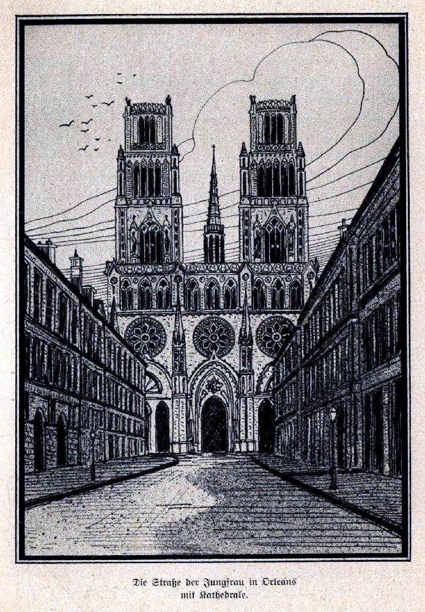
[S. 116]
Schon am Anfang des Prozesses hatte ein Ehrenmann, der Jurist Jehan Lohier, der gegen das Ungesetzliche des Prozesses protestiert hatte, fliehen müssen, um dem Tode zu entgehen. Es kam also in diesem Prozeß gar nicht darauf an, Recht und Unrecht zu prüfen, sondern Johanna in jedem Falle zu verurteilen. Denn der schlimmste Vorwurf, den ihre Richter ihr zu machen hatten, war der, daß sie selbst im Kerker Mannestracht trug, die die Kirche bei Frauen als sündhaft verwarf. Das junge Mädchen aber schämte sich, zu sagen, daß sie diese Tracht nur zum Schutze vor den brutalen englischen Soldaten trug, die ihren Kerker bewachten, und denen Johanna ja auf Gnade und Ungnade ausgeliefert war. Ihr letzter Trost im Kerker war ihr Beichtiger Loyseleur. Er hatte sich für einen Anhänger Karls VII. ausgegeben und hatte allmählich das ganze Vertrauen Johannas gewonnen. Aber als Rat abgehalten wurde, ob man die Jungfrau der Folter unterwerfen solle, rieten nur drei Männer zu dieser Grausamkeit, und einer dieser drei Schufte war ihr Beichtvater Loyseleur.
Unter solchen Martern und Leiden brach für Johanna die Osterwoche an. Der heiligste Tag des Mittelalters, der Ostersonntag, wurde von den fünfhundert Glocken Rouens festlich eingeläutet. Durch die Straßen der Stadt rauschte Leben und Lärm, während die Retterin des Landes und des Königs einsam und verlassen angeschmiedet im Kerker schmachtete. Der Bischof hatte ihr einen Fisch geschickt, durch dessen Genuß sie heftig erkrankte. Sie hielt sich für vergiftet. Der Hauptmann der Stadt geriet darüber in heftige Unruhe. »Der König möchte um nichts in der Welt, daß sie eines natürlichen Todes stürbe,« sagte der grausame Soldat; »der König hat die Jungfrau gekauft, sie kostet ihn genug. Sie soll durch die Justiz sterben, soll durch Feuer oder Wasser umkommen. Darum seht zu, wie ihr sie gesund macht.«
Man pflegte sie denn auch, um sie nachher verbrennen zu können. Man pflegte sie, aber sie blieb schwach. In dieser Stimmung hoffte man, sie zu einem Widerruf ihrer göttlichen Sendung bewegen zu können, denn man wollte gern die Krönung Karls VII. als ein Werk des Teufels darstellen. Aber sie widerrief nichts. Was man ihr auch vorhielt, womit man ihr auch immer drohte, und wie sehr man sie auch quälte, sie verließ sich in allen Stücken auf Gott den Herrn.
Man versuchte es nun mit Listen und Schrecken. Am 11. Mai ließ man den Henker in ihr Gefängnis kommen und erklärte ihr,[S. 117] daß man sie zur Folter führen würde, wenn sie nicht widerriefe. Aber sie widerrief nicht.
Jetzt kam die Antwort der Pariser Universität an. Die Gelehrten hatten Johanna als eine Dienerin des Teufels erkannt; auf Grund dieser Erklärung wurde Johanna abermals ermahnt, sie antwortete aber: »Und wenn ich Henker und Feuer vor mir sähe und selbst wenn ich schon im Feuer wäre, ich könnte nur sagen, was ich schon gesagt habe.«
Die Sache währte schon zu lange; man wollte ein Ende machen. Am 23. Mai waren hinter einer Kirche auf dem Kirchhofe zwei Gerüste aufgebaut worden, auf denen die Kardinäle, die Richter, die Schreiber, die Gerichtsdiener, dreißig Beisitzer und die Folterknechte Platz genommen hatten. Notare waren zugegen, um die Geständnisse Johannas aufzuschreiben; ein Prediger saß dabei, um sie zu ermahnen. Am Fuße eines Gerüstes saß der Henker auf seinem Karren, bereit, jedem Winke zu folgen. Aber auch diese fürchterliche Zeremonie verfehlte ihren Eindruck auf Johanna; sie blieb gleich unerschrocken und standhaft. Endlich wurde ihr die Verdammungsakte vorgelesen. Und als man sie noch einmal vergeblich ermahnt hatte, zu gestehen, gerieten die Engländer in Wut, schrien über Verrat und erhoben einen so gewaltigen Lärm, daß Johanna verwirrt, bedrängt, bestürmt nachgab und, ohne recht zu wissen, was sie tat, an Stelle der Unterschrift ein Kreuz unter den Widerruf setzte. Sie war vollständig betäubt. Der Bischof Cauchon rief: »Führt sie nun hin, wo ihr sie hergenommen habt.«
So unglaublich betrogen, den Engländern aufs neue preisgegeben, hatte sie keinen anderen Trost mehr als den Tod. Die Engländer verlangten immer grimmiger, daß Johanna sterbe. Sie waren in tierische Wut geraten. »Verbrennt die Hexe!« riefen einstimmig Soldaten, Lords, Feldherren und Kronbeamte.
Der dreißigste Mai brach an, ein Mittwoch. Als sie durch den Beichtvater Martin Ladvenu, der gekommen war, um ihr[S. 118] den Tod anzukündigen und sie zur Buße zu ermahnen, erfahren hatte, welches Los ihr bestimmt war, und daß sie noch an demselben Tage sterben sollte, brach sie in lauten Jammer aus, rang die Hände und zerraufte sich die Haare. »O wie schrecklich und grausam man mich behandelt! Soll denn mein Leib, so ganz und gar rein und niemals entweiht, heute verbrannt und zu Asche verwandelt werden! Wehe! Wehe! Ich möchte lieber siebenmal enthauptet, als so verbrannt werden. Ich berufe mich auf Gott, den großen Richter, über das Leid und Unrecht, das man mir antut.«
Sie beichtete und nahm das Abendmahl, das man ihr gab, obwohl man sie als »Ketzerin« und »Hexe« verurteilt hatte. Als Johanna nach der Kommunion den Bischof, der sie verraten hatte, gewahr wurde, sagte sie zu ihm: »Bischof, ich sterbe durch Euch!«
Nun begann der Zug. Es war neun Uhr morgens, als sie in weiblicher Kleidung auf einen Karren geladen wurde. Neben ihr saßen der Priester Ladvenu und der Gerichtsdiener Massieu, der später für sie ausgesagt hat. Das Volk zitterte und weinte vor Teilnahme, aber mit ihren gezückten Schwertern hielten achthundert Engländer die Mengen in Ruhe. Johanna weinte und rief ein über das andre Mal: »O Rouen, Rouen! soll ich denn hier sterben?« Das war ihre einzige Klage. Sie murrte nicht gegen ihre Heiligen, die ihr Befreiung versprochen hatten, und klagte nicht über den König, der sie so schnöde verlassen hatte.
Drei Gerüste waren aufgebaut. Auf dem einen saßen der Kardinal und der Bischof mit den Priestern, auf dem andern die Richter mit dem Amtmann, dem Prediger und der Jungfrau; das dritte war der Scheiterhaufen von Gips, auf dem ein wahrer Holzhügel aufgebaut war, damit Johanna langsam darauf verbrenne und dabei vom ganzen Volke gesehen werden könne. Zuerst hielt nun ein berühmter Gelehrter der Pariser Universität eine Predigt, und als diese beendet war, ermahnte der Bischof[S. 119] von Beauvais die Verurteilte, an ihr Seelenheil zu denken, sich ihrer Missetaten zu erinnern und Buße zu tun.
Johanna kniete in innigem Gebete nieder. Sie vergab allen und bat, daß man auch ihr vergebe. »Betet für mich!« rief sie den Umstehenden zu. Die Priester bat sie, daß jeder eine Messe für sie lesen möchte, und von ihrer keuschen, gottergebenen Art waren alle bis zu Tränen gerührt. Sogar ihre Verräter und Todfeinde, der Bischof Cauchon, der Bischof von Boulogne und Winchester vergossen Krokodilstränen.
Als die Richter ihre Rührung überwunden hatten, wurde Johanna laut die Verurteilung verlesen, und man übergab sie dem Henker. Sie bat um ein Kreuz. Ein Engländer machte ihr eins aus zwei Holzstäbchen; sie nahm es mit Dankbarkeit an, küßte es und barg es unter ihrem Gewande. Aber sie wünschte noch ein wirkliches Kirchenkreuz, um im Sterben den Blick darauf heften zu können. Man brachte ihr eins aus der nahen Kirche, und während sie es küßte, sprach ihr der Priester Isambart Trost zu. Inzwischen war es Mittag geworden, und die Hauptleute riefen: »Na, ihr Priester, wollt ihr uns hier Mittag halten lassen?«
Und ohne zu warten, bis der Amtmann kraft des Gesetzes gesprochen hatte, schickten sie zwei Profose hinauf, die Johanna den Priestern entrissen. Sie wurde von den Soldaten ergriffen und zu dem Henker gezerrt. Dem sagten sie: »Tu dein Amt!« Diese greuelvolle, empörende Roheit gegen das wehrlose Opfer war so schrecklich anzusehen, daß viele Anwesende, darunter mehrere Richter, davonliefen, um nichts mehr zu sehen.
Als sie oben auf dem Scheiterhaufen stand und nun die Menge und die Stadt überblickte, sagte sie nur: »O Rouen, ich habe große Angst, daß du um meinen Tod zu leiden haben wirst!« Nach dem Brauche des katholischen Mittelalters wurde sie nun an den Pfahl gebunden, und man setzte ihr die Ketzermütze auf, auf der die Worte standen: »Ketzerin, Rückfällige, Abtrünnige, Götzendienerin.« Nun zündete der Henker den Holzstoß an.[S. 120] Johanna sah es und stieß einen Schrei aus. Der Priester Ladvenu, der mit ihr hinaufgestiegen war, ermutigte sie; sie aber dachte gar nicht mehr an sich, sondern nur an die Gefahr, der sich der Priester aussetzte; sie hieß ihn hinabsteigen.
Und jetzt, in diesem schrecklichen Augenblick, trat Cauchon an den Fuß des Scheiterhaufens und drang noch einmal in die Unglückliche, um ein Geständnis zu erhalten. Umsonst. Sie wiederholte nur, was sie diesem Bischof schon am Morgen gesagt hatte: »Bischof, ich sterbe durch Euch. Mein König ist an dieser Tat unschuldig.«
Die Flamme züngelte empor. Und schon von den Flammen umlodert, rief sie noch: »Meine Stimmen waren von Gott; meine Stimmen haben mich nicht betrogen.« Aber als sich immer mehr Rauch entwickelte, vernahm man nur noch den Schrei »Jesus!« dann war sie still für alle Ewigkeit ...
Zehntausend Menschen weinten. Nur ein paar besonders rohe Engländer lachten. Einer von ihnen hatte geschworen, eigenhändig ein Bündel Reisig zu den Flammen zu tragen; in dem Augenblick, als er es in die Lohe warf, gab Johanna den Geist auf. Der Soldat fiel um, und die Kameraden führten ihn in eine nahe Schenke, um ihn zu erfrischen. Er war ganz außer sich und sagte: »Als Johanna ihren letzten Seufzer tat, habe ich eine Taube aus ihrem Munde fliegen sehen.« Er erholte sich nicht mehr und starb bald darauf. Der Henker war ebenfalls entsetzt; er beichtete am Abend dem Priester Isambart, aber er fand dennoch keine Ruhe und konnte nicht glauben, daß Gott ihm je vergeben werde. Und ein Sekretär des Königs von England sagte, als er von der Hinrichtung zurückgekommen war, das, was wohl alle heimlich empfanden und dachten, aber nicht auszusprechen wagten: »Wir sind verloren, denn wir haben eine Heilige verbrannt!«
Alle, die an der Verurteilung der Jungfrau beteiligt waren, sind denn auch bald darauf eines elenden Todes gestorben oder[S. 121] verschollen, und die noch Überlebenden, die mitschuldig waren, ließ der Sohn Karls VII., Ludwig XI., gefangennehmen und denselben Tod erleiden, den Johanna erlitten hatte.
Dem armen Vater Johannas brach bei der Kunde vom qualvollen Tode seines heldenmütigen Kindes das Herz; er starb bald. Die Mutter zog nach Orleans, wo sie von der Stadt bis zu ihrem Tode eine Leibrente erhielt.
Zwanzig Jahre nach dem Tode Johannas wurde auf Ansuchen der Mutter und der Verwandten der Prozeß der Rehabilitation vorgenommen. Im Juli 1456 wurde zu Rouen ihre Ehrenrettung ausgesprochen; der Papst Pius IX. hatte sie genau vierhundert Jahre später selig gesprochen, und somit war die Prophezeiung erfüllt, die König Karl in Schillers »Jungfrau von Orleans« ausspricht: »Selig preisen sollen sie die spätesten Geschlechter«. Nun ist Johanna im Jahre 1909 heilig gesprochen worden und somit hat sich auch jene andere Prophezeiung Schillers erfüllt:
»Ihr Name soll dem heiligen Denis
Gleich sein, der dieses Landes Schützer ist,
Und ein Altar sich ihrem Ruhm erheben.«
Wir sind im Zeitalter des Hans Sachs, und es ist Kirchweihwoche. Auf einer großen Wiese vor dem Städtchen haben fahrende Händler, Kesselflicker, Korbflechter, Bettelmusikanten und Tanzbärentreiber ihre Buden und Zelte aufgeschlagen. Allerhand Wunderdinge werden hier zur Schau gestellt. Betrunkene rohe Bauern mischen sich unter die Pandorenspieler und Dudelsackpfeifer; Akrobaten stehen auf dem Kopf, Kunststückmacher ziehen sich lebendige Schlangen aus den Nasenlöchern, Degenschlucker zeigen ihre blendenden Künste,[S. 122] Gaukler lasen ihrem Munde Fontänen entsteigen. Man sieht bärtige Weiber, Ichneumons, Nashörner, Dromedare. Die Kaufleute machen einen Höllenlärm und bieten ihre grellfarbigen Waren an; sie schreien wild und zwecklos durcheinander. Oder sie blasen mit vollen Backen auf der Querpfeife und schlagen die Pauke, oder sie tanzen auf einem dicken Seil, das höchstens zwei Meter über der Erde ausgespannt ist. Um den Bärentreiber schart sich die gaffende Menge. Plötzlich taucht der Hanswurst auf. Er schlägt den Leuten auf die Köpfe und treibt sie wie das liebe Vieh zu einer anderen Bude hin, zur Bude des Wundermannes.
Der hat ein feuerrotes Gesicht, das dick aufgedunsen ist, weißblondes Haar und eine kahle Platte — das Zeichen der großen Gelahrtheit. Er trägt einen sonderbaren Spitzenkragen und ungewöhnlich rote Pluderhosen; Bänder hängen daran herunter, wie an einem Erntekranz. Ein Dutzend Ehrenketten beschweren das schwarzsamtene Wams, das nach venetianischem Schnitt gearbeitet ist; seine Finger sind mit unzähligen Ringen bedeckt, und jeden Ring ziert eine besonders große Kamee, die von einem Grabstein geschnitten ist. Er trägt einen prachtvollen türkischen Dolch, und rings um seine Hüften baumelt, wie bei einem Wilden des Urwalds, ein Kranz mannigfacher zauberkräftiger Anhängsel.
So steht er da und schreit und haut in die Luft und wirft eine Menge lateinischer Brocken ins Volk. »Er kann reden wie ein Arzt«, heißt das Sprichwort jener Tage. Er spricht etwas von der Stellung der Gestirne, vom Pulsschlag und Perpendikel, von Blut und Hexen, von Zauberei und vom Satanas. Nach jedem Satze reißt sein Diener, der Hanswurst, schlechte Witze, um die Gaffer bei guter Laune zu erhalten. Und erst wenn genug Leute vor der Bude herumstehen, nimmt der Wundermann sein großes »Zeugenbuch« hervor: »Da leset, wie ich in Spanien, Frankreich, Rom und dahinten in der Türkei geehrt worden bin! Hier haben sie alle ihre Namen hingemalt, die Bischöfe und Fürsten[S. 123] und der Teufel weiß, wer noch. Hier seht ihr, wie sie vor ihrer Heilung ausgesehen haben; hier seht ihr die geschwollenen Wangen, bleichen Gesichter und verzerrten Stirnen leibhaftig abkonterfeit. Und ich, ich habe sie kuriert; ich allein; ich, der größte Zauberer der beiden Welten; ich, der größte Hexenmeister und Totenbeschwörer, der geschickteste Wetterbanner und gesuchteste Wunderdoktor, den die Erde je getragen hat! Ich, Doktor Faust, des Teufels Freund und der Meister der Hölle!«
Wenn er nur so spräche, würde man ihn noch bescheiden nennen müssen; aber er prahlt gewöhnlich das Blaue vom Himmel herunter. Und wenn er nur den tausendsten Teil von dem leistete, was er zu leisten verspricht, dann wäre der Teufel noch immer ein Stümper gegen ihn.
Woher sollte er auch seine Kenntnisse haben?
Der Arzt des Mittelalters studierte nicht Anatomie, sondern Alchimie: Die Kunst, Gold zu machen; nicht Physiologie, sondern Astrologie: Die Kunst, aus den Planeten wahrzusagen; anstatt Menschen gesund zu machen, machte er Kalender. Anstatt nach dem Wo und Wie der Krankheit zu sehen, sah er nach dem Mond und seinen Stellungen; bevor er seinen Rat erteilte, schaute er erst nach den Sternen und dann nach dem Urin.
Er beobachtete sorgfältig die Himmelskörper, ihre Bewegungen, ihren Stand und deutete diese Verhältnisse auf die Schicksale der unter diesen Gestirnen Geborenen. In der Tat geschieht auch kein bedeutendes Ereignis, das er nicht durch vorangehende Zeichen und Himmelswunder ankündigen zu können behauptet. Kometen gelten als Botschafter des erzürnten Gottes, die den Menschen allerhand Strafen und Plagen andeuten. Befinden sich die Kometen beispielsweise beim Saturn, dann erfolgt Pest, Unfruchtbarkeit und Verrat.
Diese Sterngucker, Geheimniskrämer und Wunderärzte kamen, wie die Heuschreckenplage, hauptsächlich von England in alle übrigen Länder. Der eine macht mit seinem Wunderstein[S. 124] großes Aufsehen, an dem er die Patienten lecken läßt, worauf sie angeblich sofort gesund werden. Der andere hext mit seiner wunderbringenden Salbe Blinde sehend und Lahme gehend und er gibt vor, einen Trank brauen zu können, der ein Fortleben in Ewigkeit sichert. Der Dritte berührt nur die Kranken und sofort verschwinden die Schmerzen, die Kröpfe schrumpfen zusammen und Skrofulöse sind gesundet. Er speit den Tauben in die Ohren und sofort hören sie; er gibt den Zahnleidenden eine Ohrfeige, daß die kranken Zähne nur so herausfliegen. Der Vierte macht aus dem Kot der verschiedensten Tiere Rezepte, mittels deren er alle und alles heilt. Der Fünfte verwandelt Metalle und glaubt an die mit Blut unterschriebenen Verträge zwischen Mensch und Satanas, zwischen Hexe und Teufel.
Kein Wunder, daß dieser Aberglaube so verbreitet war, nachdem die Kaiser und Könige selbst mit gutem Beispiel vorangingen. König Jakob von England, Maria Stuarts Sohn, schrieb ein Zauberbuch. Karl V., Maximilian II., Kurfürst Joachim I. gaben ihren Goldmachern reichliche Beschäftigung, denn ihre Verschwendungssucht erheischte immer neue Geldmittel. Heinrich VI. und Rudolf II. standen selbst in den Laboratorien ihrer Dunkelmänner, Gold machend und Lebenselixiere brauend. Man hatte an den Höfen seine Sterndeuter und Alchimisten, wie man seine Hofnarren hatte; nur daß die Narren meistens klüger waren als die Goldmacher.
Viele dieser Ärzte zogen aber auch von Ort zu Ort, von Markt zu Markt. Und diese Gestalt des herumziehenden Wunderdoktors hat sich noch mehrere Jahrhunderte hindurch erhalten; denn Abraham a Santa Clara, der große satirische Prediger, der am Ende des siebzehnten Jahrhunderts gelebt hat, kennt diese Wundermänner ebenfalls noch aus eigener Anschauung. Er gibt folgende Schilderung von ihnen: »Man findet unter diesen Leuten sehr liederliche und nichtsnutzige Gesellen, die sich auf das Lügen und Betrügen stattlich verstehen, absonderlich viel aus[S. 125] denselbigen, die auf allen Märkten und Kirchweihen ihre Stände aufschlagen und ihrem Sinne nach mit etlichen Brettern eine Universität aufrichten, wo sie den Bauern und dem gewöhnlichen Volk mit ihren grundlosen Predigten das Geld aus dem Beutel locken, da kann man zuweilen hören, mit welch gewichtigen Lügen sie ihre Wahrheit hervorstreichen; einer zieht etliche Zahnwurzeln heraus und beteuert es hoch, daß er diese selbst an dem Meeresgestade dreizehn Meilen hinter Syrakus ausgegraben und diese seien gut für ein verfallenes Gehör, wobei sie sehr oft auch vorgeben, wie solche auch die Könige von Paphlagonien an den Ohren zu tragen pflegten und ein so scharfes Gehör bekamen, daß sie ein altes Weib über dreißig Meilen husten hören, ei so lüg! Ein anderer zeigt ein Pulver — es ist nichts anderes als ein geriebener Weinstein! — und schwört, daß er solches aus der Neuen Welt durch die spartische Flotte habe bringen lassen und es sei nichts anderes als pure Asche von dem verbrannten Vogel Phönix und eine Messerspitze voll von diesem Pulver vertreibe allen Schwindel, so daß sogar einer über einen Steg gehen könne, der nicht breiter sei als ein Fiedelbogen, ei so lüg! Mit dergleichen wurmstichigen Predigten betrügen sie sehr viel einfältige Leute, es sollen aber dieses Gelichters Ärzte — nicht alle Ärzte sind so beschaffen — gleichwohl bedenken, daß das Heulen und Zähneklappern ihnen nicht wird ausbleiben nach Aussage des Psalmisten David. Einen Stand oder Profession ohne böse Leute und ohne tadelhafte und gewissenlose Gesellen gibt es überhaupt selten, ebensowenig wie einen Sommer ohne Mücken, ein Buch ohne Eselsohr, einen Apfelbaum ohne Wurmstich, eine Schule ohne Eselsbank, einen Wald ohne Gimpel, eine Kirchweih ohne Rauferei und eine Schreiberei ohne Kleckserei.«
Hat unser Doktor Faust lange genug geschrien und geprahlt, dann holt er mit sicherem Blick irgendeinen Tölpel aus der Menge heraus, zieht ihn herauf auf seine Meßbude und schlägt ihm vor aller Augen mit einem gewöhnlichen eisernen Schlüssel in[S. 126] einer halben Minute fünf Zähne aus. Der arme Kerl stutzt wortlos, aber die Menge schreit bravo, klatscht Beifall, und jubelt dem Wundermanne zu. Und man stürmt seine Bude, um sich die gesunden Zähne ausschlagen zu lassen.
Aber es sind nicht nur Zähne, die unser Doktorsmann in seiner Meßbude zieht; er barbiert, schert, ätzt, schneidet und brennt, setzt Schröpfköpfe und macht Aderlässe und Klistiere — ein vielseitiger Mann. Vor allem aber: er zaubert. Wir werden nachher von seinen Kunststücken hören.
Drinnen in der Wunderbude sieht es etwa aus wie in einer modernen Bauernschenke, die ein Museum vorstellen soll. Menschen- und Pferdeschädel liegen herum, getrocknete Pflanzen- und Blumenbündel hängen an den Wänden; schlecht ausgestopfte Tiere baumeln von der niedrigen Decke herab: Fledermäuse, Raben, Igel, Iltisse, Eichhörnchen, ein Bussard. Mörser und Klöpfel, Kolben, Flaschen und Kruken mit großen Aufschriften stehen umher. Auf einem Tische liegen Feilen und kleine Sägen, Messer, Zangen, Geißfüße und seltsam geformte Schlüssel. In kleinen zahlreichen Näpfen liegen Menschenzähne und Zähne von Säugetieren und Fischen. Das Ganze macht den Eindruck einer herumziehenden Apotheke.
Aber die Apotheke des sechzehnten Jahrhunderts sieht naturgemäß wesentlich anders aus, als die der Gegenwart. Denn auch der Apotheker ist ein Mann, der viel Geld verdienen will, und der infolgedessen nicht das führt, was die klugen und vorgeschrittenen Ärzte anraten — denn sie sind in der Minderheit und haben nur eine kleine Anzahl von Patienten —, sondern das, was die abergläubische Menge verlangt, die vom Kurpfuscher geschickt wird und die lieber an törichten Hokuspokus glaubt, als an vernünftige Heilmittel. Zum Apothekeninventar gehören gepulverte Edelsteine, gestoßener Bernstein, Meerschaum, Erde vom Kalvarienberge. Man findet gebrannte Maulwürfe, Elenhörner, Wolfsgalle und Wolfsleber, Hirsch- und Bockblut, Hühnermagen,[S. 127] Hechtzähne, gedörrte Kröten (die werden noch 1815 als Mittel gegen Epilepsie empfohlen!), Krebsaugen, Schlangenfett, Bärenschmalz, Mückenfett, Gemszähne, Hasentalg, Schafsgalle, die Haut der Pfauenfüße, Fuchslunge, Elsternaugen, Eichhornhirn, Auerhahnzunge, Krähenzunge, Pferdehaare, Menschenhaare, Rabenkot und zugleich den Kot so ziemlich aller Tiere, Schwalbensteine, Federn vom Kreuzschnabel, Schildkrötenblut, Froschlaich, Igelkrallen, Fledermausflügel, Eingeweide des Chamäleon, geraspelte Menschenschädel, menschliche Leichenteile von Erhängten und Geköpften, ägyptische Mumien, Blut der Hingerichteten usw. Auch Käfer wurden zu Heilzwecken verwendet; z. B. der siebenpunktierte Sonnenkäfer, das Bluthähnchen, der schwarze, rotgeränderte Blattkäfer, die Rüsselkäferarten, die auf den Artischocken leben und die spanische Fliege.
Natürlich ging man um jene Zeit nicht sehr milde mit all dem Getier um, das man für die Apotheke nötig hatte, denn oft mußte es bei lebendigem Leibe gesotten, verbrannt oder zerstoßen werden, wenn es — nach der Meinung der Kurpfuscher — dem Kranken helfen sollte. Da war die schrecklichste Tierquälerei an der Tagesordnung.
Die Zahl der Pflanzen, die so eine Apotheke führte, ist sehr groß. Hier sind einige der am meisten gebrauchten: Bibernell, Fenchel, Majoran, Safran, Kreuzkraut, Wetterkerze, Sauerampfer, Fünffingerkraut, die Wetterglocke, die Herrgottskrone, Wermut, Mariendistel, Habichtskraut, Natternkopf, der spitze und breite Wegerich, das Dreifaltigkeitskraut, der Tag- und Nachtschatten, Löwenzahnblätter, Fieberklee, Himmelsbrot, Frauenmantel, die Kamille, das Wildfräuleinkraut, der Johannisgürtel, Tausendgüldenkraut, die Pfefferminze, Hundszunge, Lavendelkraut, Muskatnuß, Igelkraut, die Feige, Senf, Knoblauch, Tabak, Fallkraut, Beschreikraut, Schwindelbeere, Warzenkraut, Pestwurz, Schinderrose, Totenbeere, Totennessel, Lauskraut, Lungenkraut, Leberbalsam, Blutwurz, Zahnwurz, Augentrost, Wehedistel,[S. 128] Wildmutterkraut, Teufelsabbiß, Teufelsbart, Teufelswurz, Teufelchen, Teufelspeitsche, Teufelskralle, Teufelsauge, Hexenklee, Hexenohr, Hexenlauch, Hexenkohl, Hexenkraut, Hexenmehl, Schlehenhexe und Wetterhexe.
Alle diese Kräuter sind aber nur dann heilsam, wenn sie im Frauendreißiger, das ist vom 15. August bis 14. September, schweigsam gesammelt worden sind, oder auch in der Osternacht, der Johannisnacht und Christnacht.
Um jene Zeit des Mittelalters war das Kräutersammeln ein mühseliges, undankbares und wenig einbringliches Geschäft; überdies zeitraubend und gefahrvoll, weil man dadurch leicht in den Verruf der Hexerei kam. Es konnten sich ihm nur gründlich studierte Männer widmen, deren Gelahrtheit freilich kein Hindernis war, ebenso abergläubisch zu sein, wie Zigeuner und Verbrecher. Diese Kräutersammler mußten mit der Natur vertraut sein wie die Tiere des Feldes und Waldes; ja, ihre astronomische, zoologische, botanische, geologische, physikalische und chemische Kenntnis mußte mindestens den Anstrich allumfassenden Wissens haben. Es war nötig, daß sie die Gesetze der Sterndeutung und Goldmacherkunst beherrschten; daß sie sich auf die Kunst verstanden, Träume zu deuten, alle Knochenbrüche und inneren Krankheiten aus dem Urin zu lesen und womöglich die Pest in Abwesenheit zu heilen. Es ist selbstverständlich, daß man von ihnen die vollständige Beherrschung der damaligen medizinischen Kenntnisse forderte. Anatomie, Physiologie und Pathologie — die damals allerdings noch in den ersten Anfängen staken — waren Wissenschaften, von denen sie natürlich auch läuten gehört hatten.
Aber diese »Halbärzte«, die man als »Naturkundige« bezeichnete, obwohl sie nur ein oberflächliches und verworrenes Wissen von der Natur hatten, waren auch meistens ihre eigenen Destillatoren, und da niemand sonst die Natur so gut kannte wie sie, waren sie auch ihre eigenen Kräutersammler. Allein,[S. 129] das Wort »Kräutersammler« ist durch die Jahrhunderte schon zu verblaßt und gibt ganz und gar keinen Begriff von dem, was man darunter zu verstehen hat und überdies verrät es auch nicht, daß der Kräutersammler, von dem ich hier spreche, den berufsmäßigen Kräuterhändler aus tiefstem Herzensgrunde als einen unwissenden, bloß geldgierigen Kurpfuscher verachtete. Und außerdem ist der Destillator nicht nur Kräutersammler im engen Sinne des Wortes. Unseren Kräutersammler, der nichts aus Habgier und alles aus Freude am Kurieren tut, findet man um Mitternacht auf Kirchhöfen herumlungern, wo er nach alten Sargnägeln gräbt, welche Gicht, Zahnweh und Cholera heilen; in feuchten Schluchten sucht er um die Geisterstunde bei umwölktem Nachthimmel nach dem Feuersalamander und der gefleckten Eidechse. Auf dem Hügel vor dem Tore, wo man die Diebe und Mörder hängt, schneidet er Holzsplitter vom Galgen ab; denn wenn man sich mit diesen die Zähne stochert, bekommt man sein Lebtag kein Zahnweh mehr. In jedem Mauseloch gräbt er herum; er hebt große Steine hoch, um feiste Ohrwürmer, Blindschleichen, den Tausendfuß und anderes Gewürm zu fangen; er stampft in eigenartiger Weise auf den Fuchsbau, um die Jungen herauszulocken, deren Kot er braucht, um Krämpfe und schmerzende Ohren zu beruhigen. Er stapft in den Moorwiesen umher, wo die Kröten dicht beieinanderhocken; denn die Kröte spielt in der mittelalterlichen Heilkunde eine sehr große Rolle. Man sieht ihn in der Leichenhalle, im sogenannten »Beinhause«, über den Toten gebeugt, den man gestern hierhergebracht hat, wie er ihm Haare und Fußnägel abschneidet, die gegen Bräune nicht minder wirksam sein sollen als gegen andere Krankheiten. Die Tierquälerei steht bei ihm in hoher Blüte. Er sucht das Nest der Schwarzdrossel, des Kuckucks und der Elster, die er alle ausraubt, weil er die Herzen, die Augen und die Leberchen der jungen Brut in seiner Apotheke braucht, in der fast alles abergläubischen Zwecken dient. In seinem riesenhaften Pflanzenkasten ist ein Tohuwabohu[S. 130] von allen möglichen Tieren, Pflanzen und Gesteinsarten. Kein Tierchen läuft ihm über den Weg, das dem großen Bedarf unseres Sammlers nicht seinen Tribut zollen müßte; keine Pflanze blüht im verborgenen, von der er nicht für seine Apotheke, in der alles aufgespeichert liegt, was die Natur nur hergibt, ein Steuerteil erheben würde. Alles was das Auge erspäht, alles was in der Natur greifbar ist, alles was die Hand nur erreichen kann, wird zu irgendeinem Heilzwecke ausgebeutet. Freilich sind es meistens Kräuter, die unser Destillator verwendet; aber er geht nicht hin und pflückt zu jeder beliebigen Stunde, zu jeder beliebigen Jahreszeit gerade das, was da grünt und blüht; er hat seine abergläubischen Vorschriften innezuhalten wie der Teufel selbst, an den er glaubt, und er spricht lang und breit von der rechten und besten Zeit, zu der die vorhin genannten Kräuter einzusammeln sind. Unser geplagter Kräutermann muß nämlich auf die Sonne, den Mond und die Sterne achten; ob Halbmond oder Vollmond ist; ob erste Mitternachtshälfte, ob zweite; ob die Venus grün schillert oder blau; ob die Sonne Wasser zieht oder nicht; ob sie sengt oder strahlt usw.
Die Kunst, die vermeintlich besten Säfte aus Tier und Pflanze herauszukochen, stand unleugbar hoch im Kurse. Es war dazu nichts Geringeres als eine für die damaligen Begriffe vollkommene Kenntnis des Planetensystems vonnöten; insbesondere wurden die Kräfte der Sonne studiert — was man so studieren nennt — und man gab sich Mühe, ihre ewigen Gesetze, nach denen sie arbeitete und denen sie unterworfen war, zu ergründen. Natürlich wurden viele »Weisheiten« darüber zum besten gegeben, die wir längst ins Fabelbuch geschrieben haben. Überdies verfiel man auch noch auf den absonderlichen Gedanken, daß man mittels der Hitze, natürlicher oder künstlicher, aus Tier und Pflanze alle »Feuchtigkeit« herausziehen müsse, wie die Sonne alle Feuchtigkeit aus der Erde ziehe. Und ebenso wie diese von der Sonne aufgesogene Feuchtigkeit wieder als Regen, Schnee und Hagel[S. 131] herabfalle und die Felder fruchtbar mache oder auch verwüste, ebenso könne und müsse die aus Tier und Pflanze gewonnene Feuchtigkeit Menschen heilen können und gewiß auch töten, wenn sie falsch angewendet würde.
Man sieht, mit der mühsamen Auffindung der Pflanzen und Materien, die der Kräutermann benötigte, war seine Arbeit noch nicht zu Ende. Wenn er schon alle Tiere und Pflanzen am richtigen Orte, zur vorgeschriebenen Stunde, bei richtiger Beleuchtung und entsprechender Jahreszeit gesammelt hatte, und wenn er — immer nach dem Vorbilde der Sonne — aus Strauch und Getier bereits alle irgendwie verwendbaren Materien und Kräfte ausgezogen hatte, war er gerade am Anfang seines Geschäftes. Denn das Zubereiten der Säfte selbst erforderte die größte Umsicht und Geduld, Ausdauer und Fleiß, Kenntnisse der abergläubischen Geheimlehre, in der von überirdischen Kräften die Rede war, und Kenntnis vor allem der künstlichen und natürlichen Wärmeentwicklung und des Einflusses dieser entwickelten Wärme auf die ausgezogenen Säfte. Wie lange mußten Violen und Lilien, Hexenbart und Drudenfuß zusammengekocht werden, bis der Sud auch wirksam wurde? Wie viel Wärme hatte der Saft der Dachsleber oder der der Krähenaugen nötig, um zur Verwendung als Mittel gegen die Gelbsucht brauchbar zu werden? Und welche Wärme? Die des Ofens oder der Sonne? Welcher Sonne? Der direkten Sonnenstrahlen oder der durch einen Spiegel aufgefangenen Reflexstrahlen? Oder der in einem Brennglase in einem Punkte gesammelten Strahlen? Oder vielleicht noch andere Wärme? Die des ungelöschten Kalks oder der Erde? Die Wärme des faulenden Laubes oder Mistes? Welchen Mistes? Der Kuh oder des Pferdes?
Das waren wichtige Fragen, solange man keine Öfen hatte, die eine beliebige Wärmeregulierung ermöglichten. Denn von[S. 132] der richtigen Lösung dieser gewiß verzwickten Aufgaben, die desto krauser und sinnloser waren, je größer der Aberglaube war, hing ja das Gelingen oder Mißlingen eines solchen Gebräus nicht minder ab.
Und man kann sich ferner denken, daß die Frage, in was für einem Gefäß das schreckliche Gemisch gebraut werden sollte, von nicht geringerer Bedeutung war. Man muß einmal ein solch mittelalterliches Destillierbuch in der Hand gehabt, all die tausend Formen der Glaskolben, Trichter, Behälter, Flaschen usw. gesehen haben, um den großen törichten Ernst zu begreifen, mit dem man über die Gefäßfrage spricht. Es ist, als ob man sich plötzlich in die Zauberwelt des Doktor Faust versetzt fühlte und man versteht, wie leicht ein solcher Kräutersammler in jenen Tagen in den gefährlichen Ruf kommen konnte, er pflege Umgang mit den Hexen, und der Teufel sei allabendlich bei ihm zu Gaste, um in seltsam geformten Gläsern Höllengetränke zu brauen. Es soll indessen nicht geleugnet werden, daß ein solcher Ruf dem Destillator beim abergläubischen, Heilung suchenden Volk nur — nützte. Je größer der zauberische Glorienschein war, den eine abergläubische Menge um sein Haupt wob, je mehr Zulauf hatte er. Man hoffte zwar auf Gott, aber man glaubte an den Teufel.
Dies ist das Bild des sagenhaften Faust inmitten seiner Tätigkeit, desselben Doktor Faust, über den ungefähr dreitausend Bücher geschrieben worden sind und dem Goethe durch seine herrliche Dichtung die Unsterblichkeit gesichert hat.
Seit Jahrhunderten hat diese Figur die Dichter und Historiker in gleich starker Weise angezogen und die Sage, die sich schon früh um Doktor Faust gebildet hat, ist eine der tiefsten und großartigsten aller deutschen Sagen, die uns den Glauben an ein Bündnis zwischen Mensch und Teufel lebendig veranschaulicht.
[S. 133]
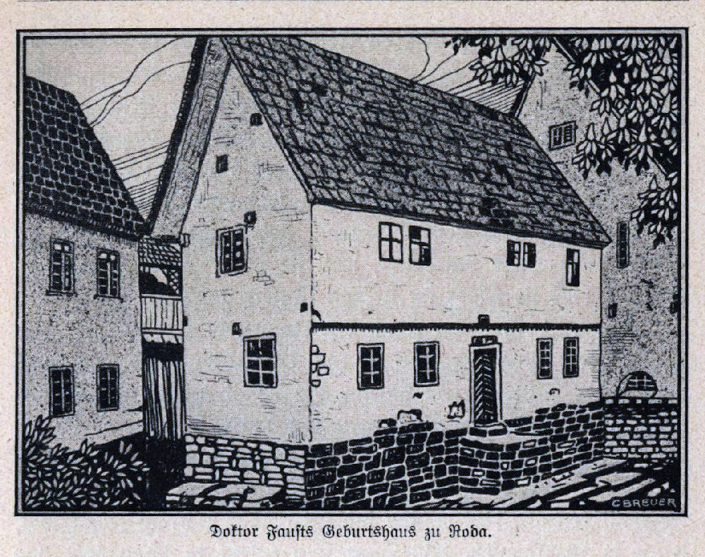
Mit zwei Wurzeln hat sich die Sage gleichsam in das Herz des Volkes gegraben. Es waren erstens die Reste der ältesten Mythologien, die im Faust verewigt waren; denn die meisten Erzählungen von Fausts Taten und Erlebnissen, wie sie das Volksbuch uns erhalten hat, sind nur umgestaltete Götter- und Elfensagen. Aber es war nicht nur dieser mythologische Gehalt, der das Volk an der Faustsage anzog, sondern zweitens der philosophische und theologische Inhalt. Die Frage nach der Existenz Gottes, der Unsterblichkeit der Seele, der Weltschöpfung usw. beschäftigte die Gemüter damals weit mehr und tiefer als heute. Im Doktor Faust war nun eine Figur gebildet, in der alles das zum Ausdruck kam, was damals das Volk bewegte. Faust lehnt sich gegen Gott auf; er verbindet sich mit der Hölle, um durch sie zu erlangen, was der Himmel ihm versagt hat. Denn damals glaubte man ja noch, daß der Teufel sein Unwesen persönlich auf Erden treibe. Doktor Faust übergibt sich dem[S. 134] Teufel, weil er an der ewigen Seligkeit zweifelt; er streitet mit Mephistopheles über Weltentstehung und Weltuntergang, über den Bau des Himmels, den Lauf der Gestirne, die Beschaffenheit der Hölle, den Zweck und Sinn des menschlichen Lebens. Kurz, im Volksbuch der Faustsage wird alles das ausgesprochen, was sonst der mittelalterliche Mann aus dem Volke kaum zu denken wagte, und gerade deshalb haben die Dichter immer wieder diese Sage bearbeitet, weil sie in ihr alles niederlegen konnten, was sie selber im tiefsten Innern bewegte.
Historisch ist an Faust das Folgende:
Er lebte etwa von 1480 bis ungefähr 1545. Sein Vorname war weder Heinrich, wie Goethe ihn nennt, noch Johann, wie er gewöhnlich in der Sage genannt wird, sondern Georg. Viele Forscher nehmen an, daß er aus Knittlingen im Württembergischen stammte und daß er sich in Ingolstadt eine gediegene Bildung erwarb. Er befand sich ums Jahr 1507 in Ingolstadt, dann in Gelnhausen, Würzburg und zuletzt in Kreuznach, wo ihm Franz von Sickingen — der in Goethes »Götz von Berlichingen« verewigt ist — eine Schulmeisterstelle anvertraute. Faust erwies sich aber der Stelle als unwürdig. 1513 war er in Erfurt, wo er nach einigen Jahren ausgewiesen wurde. 1520 war er in Bamberg, wo er gegen ein Geldgeschenk dem Bischof Georg III. sein Schicksal aus den Sternen prophezeite. Dann zog er nach Heidelberg, wo er sich bis etwa 1525 aufhielt. Später begegnen wir ihm in Wittenberg, von wo er hinausgetrieben wird, endlich wieder in Ingolstadt als Zahnbrecher, wo ihm das gleiche Schicksal widerfährt. Besser ging es ihm beim Erzbischof von Köln: Hermann von Wied. Doktor Faust soll endlich zu Staufen im Breisgau als Sechziger eines plötzlichen, gewaltsamen Todes gestorben sein.
Er war als ein gewaltiger Prahler verschrien und zog als Hokuspokusmacher und Arzt, in der Weise, wie wir ihn bereits geschildert haben, von Stadt zu Stadt. Denn allzulange duldeten[S. 135] ihn die wohlweisen Magistratspersonen nie in ihren Mauern. Er nannte sich den Philosoph aller Philosophen, rühmte sich in Würzburg, daß er alle Wunder Christi vollbringen könne, so oft es verlangt werde; in Wittenberg, daß er in den Himmel fliegen könne und daß er in Krakau alle Künste der Magie erlernt habe. Die Schlacht bei Pavia und die Eroberung Roms seien den Italienern nur geglückt, weil er ihnen durch seine Zaubermacht geholfen habe.
Leichtgläubig wie das Volk war, wurden viele seiner Aufschneidereien für bare Münze genommen und als vollbrachte Tatsachen weitererzählt. Alle Zaubergeschichten, die damals reichlich im Umlauf waren, wurden auf seine Person übertragen und viele andere wurden ihm noch angedichtet. Sie machten ihn berühmt und zugleich berüchtigt. Da aber solche Zaubereien, wie Faust sie vollbracht haben wollte, nach Annahme des abergläubischen Volkes nur mit Hilfe des Satans auszuführen waren, so erzählte man sich, Faust habe ein Bündnis mit dem Teufel geschlossen, der ihn in Gestalt eines Pudels — daß Faust einen Pudel hatte, wird historisch verbürgt — begleitet und schließlich auf schreckliche Weise ums Leben gebracht und seinen Leichnam auf den Mist geworfen habe. Auf diese Weise hat die Phantasie des Volkes Fausts im Dunkel liegendes Leben ausgeschmückt und es entstand die Faustsage, die bereits fünfzig Jahre nach Fausts Tod in voller Blüte steht. In ihr ist Faust bereits zum Vertreter der mittelalterlichen Zauberer erhoben und durch seinen Namen werden die verschiedensten Sagen und Märchen wie durch ein Band zusammengehalten.
Faust, so erzählt das älteste Volksbuch, das uns schon ganz ins Sagenhafte führt, war gebürtig aus Roda bei Weimar. Seine Eltern waren arme, fromme Bauersleute; aber sein Onkel zu Wittenberg war reich, und da er keine Kinder besaß, nahm er Faust an Sohnes Statt an. Da geriet er aber in schlechte Gesellschaft und begann Zauberschriften zu studieren, die lauter[S. 136] Beschwörungsformeln und magische Figuren enthielten: »Buch Mosis und dreifacher Höllenzwang«, »Mächtige Beschwörung der höllischen Geister«, »Hauptzwang der Geister zu menschlichen Diensten«, »Das Geheimnis der heiligen Gertrudis zur Erlangung zeitlicher Schätze und Güter« und viele andere. Er ward Kräutermann, Goldmacher, Destillator, Sterndeuter und Arzt. Nun lernte er Zaubern und Geisterbeschwören und als er es gut verstand, begab er sich eines Abends in den Spessart, um — wie er behauptete — den Teufel anzurufen. Auf einem Kreuzwege zog er Zauberkreise um sich her und begann die fürchterliche Beschwörung. Da erhob sich ein mächtiges Getöse, die Bäume bogen sich bis zur Erde, und der Mond verbarg sich hinter vorbeieilenden Wolkenfetzen. Es donnerte gewaltig, während die wilde Jagd vorüberzog. Pfeile wurden von unsichtbarer Hand auf Faust abgeschossen, und es erklang eine liebliche Musik. Gesang ertönte, und als Faust aufblickte, gewahrte er eine Menge tanzender Teufel, die mit ihren höllischen Schwertern klirrten und mit Spießen um sich warfen.
Als dieser Höllenlärm vorüber war, beschwor Faust den Teufel zum zweitenmal und nun erschien über Fausts Haupt ein giftspeiender Drache. Vom Himmel fiel ein Stern herab, der sich in eine feurige Kugel verwandelte und nachdem Faust diese dreimal beschworen hatte, nahm sie die Gestalt eines feurigen Mannes an; der ging eine Viertelstunde stumm um Fausts Zauberkreis herum, verwandelte sich endlich in einen grauen Mönch und fragte nach Fausts Begehr. Faust bestellte ihn für die folgende Nacht um zwölf Uhr zu sich, doch forderte ihn der Teufel aufs neue auf, zu schwören, daß er dem Fürsten der Hölle ergeben sein wolle.
Um Mitternacht fordert Faust vom Teufel, daß er ihm bis an seinen Tod diene, alle seine Wünsche erfülle, unsichtbar in seinem Hause walte und wenn er erscheine, daß er dann die Gestalt und Kleidung eines Franziskanermönches annehme. Dagegen[S. 137] verlangt Mephostophiles, Faust solle sich ihm mit seinem Blute verschreiben, den christlichen Glauben ableugnen, aller Christen Feind sein, sich nie bekehren und nie heiraten. Faust stellt diese gotteslästerliche Verschreibung aus, fordert darin aber ausdrücklich, daß der Teufel vor allem seinen Wissensdurst befriedigen müsse, den Gott nicht gestillt habe. Mephostophiles (oder Mephistophiles, auch Mephistopheles) bringt Speisen, Wein und Kleider für Faust und dessen Famulus Wagner; außerdem erhält Faust vom Teufel wöchentlich fünfundzwanzig Kronen Taschengeld.
Wie widersinnig dieser ganze Teufelsglaube war und was es mit der Zauberei auf sich hatte, ersieht man schon aus diesem kärglich bemessenen Taschengeld. Denn wenn Faust hätte zaubern können, hätte er auch nicht diese jämmerlichen fünfundzwanzig Kronen des Satans nötig gehabt. Was konnten wohl für so einen mächtigen Zauberer fünfundzwanzig Kronen in der Woche bedeuten? Und daß anderseits Faust für Speise, Trank und Kleidung allein seine Seligkeit verkauft hätte — abgesehen davon, daß auch dies ein abergläubischer Unsinn ist —, dazu wird Faust als ein viel zu weiser und wissensdurstiger Mann geschildert.
Das erste ist, berichtet die Sage, daß Faust dem bösen Geiste eine Reihe theologischer, philosophischer und naturwissenschaftlicher Fragen vorlegt, Fragen über die Beschaffenheit der Hölle, über die Macht des Satans, über Luzifers Verstoßung aus dem Himmel, über die Weltschöpfung, den Bau des Himmels und der Gestirne, über den Wechsel der Jahreszeiten, die Mephostophiles dem Vertrage gemäß beantwortet. Um sich weiter zu unterrichten, unternimmt Faust drei Reisen, eine in die Hölle, die zweite durch den Wolken- und Sternenhimmel, die dritte durch die meisten Reiche der Erde; die Hölle selbst sieht Faust freilich nicht; er lernt sie nur in einem Traumgesicht kennen, das der Teufel ihm vorgaukelt.
[S. 138]
Nun beginnt Faust seine Zauberkunststücke, die aber allesamt ebenfalls wieder im Widerspruch stehen mit dem Faust, der das höchste Wissen der Menschheit zu umfassen sucht. Seine Zaubereien sind — wie man gleich sehen wird — weiter nichts, als zeitvertreibende Taschenspielerkunststückchen, ganz unwürdig dieses groß angelegten Faust. Man sieht nur, daß das Volk, das Faust diese Zaubersagen angedichtet, gar nicht darüber nachgedacht hat, daß ein solcher Mensch sein Seelenheil nicht preisgegeben hätte, nur um das Volk zu unterhalten und durch Schelmereien zu belustigen.
Zu Innsbruck beschwor Faust Alexander den Großen und dessen Gemahlin aus der Unterwelt herauf und führte sie Karl dem Fünften vor. Diese Geistererscheinungen, wie alle anderen Zaubereien Fausts, die nur auf einer geschickten Täuschung beruhen, werden ja noch heute einem gutgläubigen Publikum gezeigt. Dort zauberte Faust auch einem Ritter, der aus dem Fenster schaute, ein Hirschgeweih an, so daß der seinen Kopf weder vorwärts noch rückwärts bewegen konnte. Erst als der ganze Hof den Ritter verlacht hatte, löste Faust den Zauber. Wie Faust später den kaiserlichen Hof verließ, zog ihm der Ritter mit sechs Reitern nach, um Rache an ihm zu nehmen; da eilte Faust in ein Gehölz am Wege, und als er wieder heraustrat, schien seinen Verfolgern das ganze Gehölz voll geharnischter Ritter; sie flohen, aber sie wurden umringt und ergaben sich. Faust ließ sie aber frei; doch zauberte er den Menschen Ziegenhörner und den Pferden Kuhhörner an, die sie einen Monat lang tragen mußten.
Vor Gotha verschlang Faust einst einem Bauer ein Fuder Heu nebst dem Wagen und den Pferden; doch als der zu Tode geängstigte Bauer beim Bürgermeister Klage führte und zum selben Platz zurückkam, standen Wagen und Pferde unversehrt da. Ebenso machte es Faust einmal bei Zwickau.
Drei Grafen, die in Wittenberg studierten, führte Faust mit Hilfe seines Zaubermantels in einer Nacht nach München[S. 139] und wieder zurück. Sie schauten dort der Hochzeit zu, welche der Sohn des Fürsten hielt, doch Faust hatte ihnen verboten, ein Wort zu sprechen. Als nun der eine sprach, wurde er gefangen genommen und eingekerkert, während Faust mit den andern davonflog.
Von einem Wechsler lieh Faust einst sechzig Taler auf einen Monat. Als die Frist vorüber war, bot er, da er noch nicht zahlen konnte, dem Wechsler zur größeren Sicherheit sein Bein zum Pfande. Der Wechsler nahm das Bein, das Faust sich abgesägt hatte, und warf es, weil ihm das Tragen lästig wurde und weil er einen Prozeß fürchtete, in einen Fluß. Nach drei Tagen wollte Faust das Pfand einlösen; da der Wechsler den Fuß aber nicht mehr beschaffen konnte, ging er seiner Forderung verlustig und mußte noch sechzig Taler dazu bezahlen. Faust hatte natürlich nach wie vor seinen Fuß; alles war nur augenverblendende Schwarzkunst.
Auf einem Jahrmarkte verkaufte Faust einem Roßtäuscher ein Pferd für vierzig Gulden; doch als dieser es in die Schwemme ritt, verwandelte es sich unter ihm in ein Bündel Stroh. Er eilte zu Faust zurück, der scheinbar schlafend auf seinem Bette lag, zog ihn am Bein, aber kaum hatte er ein wenig daran gezerrt, so hatte er es auch schon ausgerissen. Erschrocken entfloh der Roßtäuscher, doch Faust, der ihn nur verblendet hatte, lachte sich krumm und schief. Ebenso verkaufte Faust ein andermal fünf Schweine für dreißig Gulden; aber als sie der Käufer, trotz der Warnung Fausts, ins Wasser getrieben hatte, schwammen nur fünf Strohbündel darin herum.
Das Geld, mit dem Faust seine wüsten Zechereien bezahlte, pflegte sich einige Tage später stets in Kot oder in Hornspäne zu verwandeln.
Zu Wittenberg sah unser Schwarzkünstler einst, wie sich zwölf Studenten vor seinem Hause miteinander stritten. Er verblendete ihnen die Augen und sie schlugen nun, ohne sich gegenseitig zu erkennen, wütend aufeinander los.
[S. 140]
Bei einem tollen Zechgelage zauberte Faust einst im Winter einen Rebstock auf den Tisch, der voll reifer Trauben hing. Niemand sollte die Trauben abschneiden, ehe Faust das Zeichen gegeben hätte. Begierig faßte jeder mit der einen Hand eine Traube und mit der anderen ein Messer; da entzauberte Faust ihre Augen und sie erkannten, daß jeder nahe daran war, die Nase seines Nachbars abzuschneiden.
Als Faust einst in einer Schenke das Singen und Schreien der Bauern verdroß, machte er, daß ihnen plötzlich der Mund weit aufstand und sie kein Wort zu sprechen vermochten, bis er sie wieder entzauberte. — Zu Heilbronn bezauberte er die Kühe auf gleiche Weise, deren Muhen ihn verdroß.
Beim Grafen von Anhalt ließ Faust einst im Januar durch seinen Geist auf Wunsch der Gräfin Obst herbeischaffen, das er innerhalb einer halben Stunde aus den fernsten Ländern herbeiholte. Auch baute er dort über Nacht ein Zauberschloß, in welchem er den Grafen und noch viele Gäste herrlich bewirtete. Doch als sie aufbrachen, ging das Schloß in Flammen auf und sie hatten allesamt Hunger, als ob sie nichts gegessen hätten.
An Fastnacht fuhr Faust mit Studenten einmal auf einer Leiter in den Keller des Salzburger Bischofs, wo sie allerlei Weine tranken.
Am weißen Sonntage führte Faust den Studenten die griechische Helena vor, deren Schönheit sie dermaßen entzückte, daß beschlossen ward, sie tags darauf malen zu lassen. Zu Erfurt, wo Faust Vorlesungen hielt über Homer, beschwor er einst die Helden der Ilias und der Odyssee und führte sie den Studenten vor. Als diese aber den schrecklichen Riesen Polyphem herkommen sahen, der nur mitten in der Stirn ein Auge hatte, das er furchtbar rollte, bekamen die Studenten eine Heidenangst; Faust lachte sich aber halbtot.
Bei Braunschweig begegnete Faust einst einem Bauern, der einen leeren Wagen mit vier Pferden führte. Faust bat ihn,[S. 141] sich aufsetzen zu dürfen und da der Bauer ihm dies verweigerte, ließ er die vier Räder des Wagens an die Stadttore Braunschweigs fliegen und die Pferde wie tot niederstürzen. Als der Bauer jedoch auf den Knien um Verzeihung bat, hieß ihn Faust Erde auf die toten Pferde werfen; alsbald erhoben sie sich wieder unverletzt und auch die Räder saßen wieder an den Achsen.
Zu Neu-Ruppin pflegte Faust abends mit den Bürgern, die ins Wirtshaus kamen, Karten zu spielen und zu würfeln. Er hatte Pferdefüße und gewann sehr viel.
Als Faust in Leipzig mit mehreren Studenten an einem Weinkeller vorüberging und die Küfer verhöhnte, welche sich vergeblich mühten, ein Faß von achtzehn Eimern Inhalt heraufzuwinden, versprach der Besitzer demjenigen das Faß Wein als Eigentum, welcher es allein heraufschaffen könne. Da setzte sich Faust auf das Faß, als sei es ein Pferd und ritt damit zum Keller hinaus. Es gibt einen Vers auf dieses Zauberstück, der lautet:
In Erfurt wohnte ein Junker, der mit Faust befreundet war. Als dieser Junker bei einem Gelage mit mehreren Freunden Fausts zusammensaß, rief einer im Scherz Faust herbei, der sich gerade am kaiserlichen Hof in Prag aufhielt. Alsbald erschien Faust, von Mephostophiles begleitet, der sich in ein geflügeltes Roß verwandelt hatte. Während des Zechens fragte er jeden Anwesenden, was für Wein er trinken wolle, darauf bohrte er vier Löcher in den Tisch und es flossen daraus die verschiedensten Weinarten. Gegen Morgen eilte er wieder durch die Lüfte nach Prag. Noch bis vor kurzem wurde in Erfurt das Haus gezeigt, wo der mit Faust befreundete Stadtjunker wohnte.
[S. 142]
Später einmal lud Faust dieselben Freunde in Erfurt zu einem Gastmahle zu sich. Als sie angekommen waren, sahen sie noch keine Vorbereitungen zur Bewirtung. Da schlug Faust mit einem Messer auf den Tisch und es trat ein Diener herein, welchen Faust fragte, wie schnell er sei. Der antwortete: Wie ein Pfeil. Das schien Faust zu langsam und er entließ ihn darum; es kam ein zweiter, schnell wie der Wind, der auch entlassen wurde; erst der dritte, welcher so schnell war, wie der Gedanke des Menschen, schaffte bald die herrlichsten Speisen und Getränke in Hülle und Fülle herbei.
Ein andermal soll er vierzigtausend Höllengeister zu seiner Bedienung beschworen haben, fand aber keinen flink genug.
In Frankfurt traf Faust während der Messe einst mit vier Gauklern zusammen, welche einander die Köpfe abschlugen und wieder aufsetzten. Sobald ein Kopf vom Körper getrennt war, wuchs aus einem dabeistehenden Gefäß voll gereinigten Wassers eine Lilie, welche die Wurzel des Lebens hieß. Faust bemerkte das und durchschlitzte die Lilie, welche eben wieder emporschoß, heimlich mit einem Messer; da versuchten die drei Zauberer vergeblich, ihrem vierten Gesellen den Kopf wieder aufzusetzen.
Zu Straßburg bewährte sich Faust als vortrefflicher Schütze; selbst nach dem Teufel schoß er, der oft laut aufschrie.
Wenn Faust reiste, mußten ihm die Geister vorn, hinten und zu beiden Seiten den Weg pflastern. Zu Regensburg war es seine größte Freude, auf der Donau Kegel zu schieben und Fische zu fangen.
Als er einst am Karfreitag in Jerusalem war, befahl er dem Teufel, drei Ellen Leinwand zu bringen und ganz Portugal darauf zu malen, so daß man jedes Haus sehen könne. Dies hatte Mephostophiles in wenigen Augenblicken getan, und nun befahl ihm Faust, Christus am Kreuz abzumalen, aber nichts daran zu vergessen, besonders nicht den heiligen Namen. Das konnte Mephostophiles nicht; darum verblendete er die Sinne[S. 143] Fausts und malte statt Jesum eine Venus, auf die Faust zustürzte, wodurch er denn endgültig der Hölle verfallen war.
Im siebzehnten Jahre seines Bundes mit dem Teufel mußte sich ihm Faust aufs neue verschreiben, weil er sich von einem frommen Manne fast hätte bekehren lassen.
Im neunzehnten Jahre lud Faust einst um die Weihnachtszeit eine Gesellschaft fröhlicher junger Menschen in seinen Garten zu Wittenberg und zur Verwunderung der Gäste grünte und blühte alles und nirgends war zu erkennen, daß es Winter war.
Neben Mephostophiles hatte Faust noch einen dienstbaren Geist namens Prästigiar, der die Gestalt eines schwarzzottigen Hundes hatte. Diesen lieh er einst einem Abt in Halberstadt auf drei Jahre; doch schon nach dem ersten Jahre starb der Abt im Wahnsinn.
Auf einem Bergschloß in der Nähe von Heilbronn (Boxberg) streckte Faust einst seine Hand nach dem Regenbogen aus, der am Himmel stand. Da senkte sich der Regenbogen immer tiefer und tiefer herab, bis ihn Faust ergriff und festhielt. Er erbot sich, auf ihm zum Himmel zu reiten, doch als die Anwesenden sich's verbaten, ließ Faust den Regenbogen los, der wieder an seinen Platz zurückschnellte.
Auf einer Reise nach Wittenberg verschlang Faust in einem Wirtshause den Aufwarteburschen, der ihn nicht rasch genug bediente, und trank darauf einen großen Kessel voll Wasser. Nachher fand man den Burschen tropfnaß hinter dem Ofen im Schwenknapf liegen, wo er zum Gaudium der Gäste am Kragen herausgezogen wurde.
Bei einem Bankett, das Kaiser Maximilian einmal gab, verwandelte Faust, um seine Dankbarkeit zu bezeigen, das Schlafzimmer des Kaisers eines Morgens in einen Zaubergarten. Man hörte Nachtigallen singen, die Amsel und die Wachtel schlugen fröhlich, Papageien schwatzten durcheinander. Indische Hähne und Hennen liefen herum, Rebhühner, Haselhühner,[S. 144] Kraniche, Reiher, Schwäne und Störche. Man sah Laub und Gras und die seltensten Blumen; Narzissen und Rosen prangten ringsum. Der Garten war bestanden mit Granaten-, Pomeranzen-, Limonien-, Zitronen- und Feigenbäumen; Kirsch-, Birn- und Äpfelbäume wuchsen bunt durcheinander. Orangenbäume trugen Datteln, Tannenbäume trugen Aprikosen, Kastanienbäume trugen Pfirsiche. Schmucke Tauben flogen gurrend hin und her und belebten das zauberschöne Bild. Allein nach etwa einer Stunde, ehe man sich's versah, fingen die Blätter an den Bäumen an zu welken, die strotzenden Früchte fielen herab und verdorrten, Blumen schrumpften zusammen und bald kam ein Windstoß zum Gemach herein, der wehte alles herab, so daß der köstliche Zauber in einem Augenblick verschwunden war und alle Gäste nun vermeinten, sie hätten bloß geträumt.
Bei einem anderen Zechgelage mit Studenten ließ Faust einmal neben vielen Braten auch einen schönen, großen, gebratenen Kalbskopf auftragen. Er bat einen der Studenten, den Kopf zu zerlegen. Als dieser nun das Messer ansetzte, fing der Kalbskopf mit lauter Stimme an zu sprechen: »Mordio! Helfio! Auweh! Was hab' ich dir getan, du elender Rotzlöffel!«
Ein andermal ließ Faust während einer Tafel Wolken heraufziehen, und als sie sich teilten, leuchteten die Sterne hindurch; nach einer Weile türmte sich neues Gewölk auf, die Sonne begann heftig zu blenden, so daß alle Anwesenden sich bekreuzten; ein Regenbogen wölbte sich vor der Tafel des Kaisers; bald verschwand er wieder und es folgten Blitz, Donner, Hagel und strömender Regen. Die Gäste flohen entsetzt, obwohl keiner Schaden gelitten hatte.
Einem Freiherrn, der bei Eisleben wohnte, schuf Faust einen Lustwald voll Nachtigallen, Drosseln, Fasanen und Papageien; einige von den Vögeln verkündeten die Zukunft; als Faust aber gestorben war, flogen sie alle wieder davon.
Als nun die vierundzwanzig Jahre, welche Faust sich von der Hölle ausbedungen hatte, verflossen waren, wurde er vom Teufel[S. 145] geholt, erzählt die Sage. Er setzte seinen Famulus Christoph Wagner zum Erben ein und trug ihm auf, alle seine Kunststücke, Zauberpossen und wunderlichen Abenteuer, die er getrieben, getreu aufzuzeichnen und sie in eine Historie zu bringen.
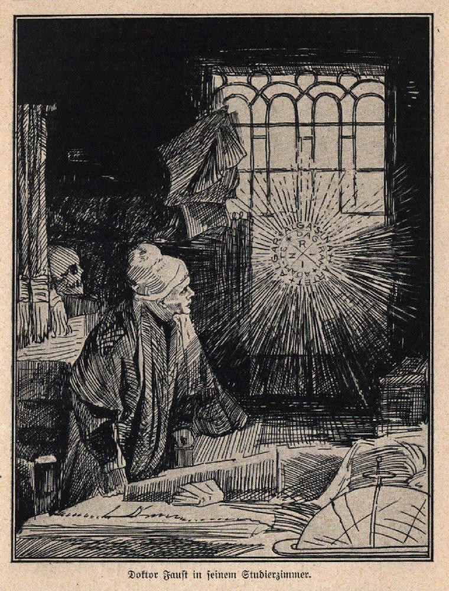
[S. 146]
Am Morgen seines letzten Tages zog Faust mit vielen Freunden in das Dorf Rimlich bei Wittenberg und erzählte ihnen voller Reue, wie er sein Leben verspielt habe und was ihm nun bevorstehe. »Wisset« — sagte er — »daß ich von Jugend an, während mich Gott mit einem guten Verstand begabt hat, mit solcher Gabe nie zufrieden war, sondern viel höher hinaus und über andere emporkommen wollte. Darum habe ich mich mit Ernst und Fleiß auf die Schwarzkunst gelegt. Jedoch meine Vermessenheit geriet mir bald zum Bösen. Ich mußte mich dem höllischen Luzifer mit Leib und Seele verschreiben, Gott lästern, die heilige Dreifaltigkeit höhnen und der Kirche absagen. Dafür habe ich gutes Essen und Trinken eingetauscht und die Erfüllung aller Begierden. Fressen, Saufen und Spielen waren meine Vergnügungen, für die ich nun meine ewige Seligkeit verloren habe. Ich habe Gott den Herrn verlassen und nun gehöre ich dem Satanas.«
In der Nacht zwischen zwölf und eins, als Fausts Stundenglas abgelaufen war, erhob sich ein mächtiger Wirbelsturm. In Fausts Zimmer hörte man ein grauenerregendes Pfeifen und Zischen, als ob das ganze Haus von Nattern und Schlangen erfüllt wäre. Fausts Tür ging auf; mit schwacher Stimme hörte man ihn noch um Hilfe rufen, dann war alles still und stumm. Am nächsten Morgen fand man Fausts ganzes Zimmer mit Blut bespritzt; sein Körper lag auf einem Misthaufen.
Noch nach dem Tode erschien Faust seinem Famulus und offenbarte ihm vieles Geheime. Auch sahen ihn viele, die bei Nacht an seinem Hause in Wittenberg vorübergingen, zum Fenster herausschauen. Und in dem Hause ward es seit seinem Tode so unheimlich, daß kein Mensch sich mehr getraute, darin zu wohnen. Noch lange, lange nachher blieb es verrufen. Im Dreißigjährigen Kriege rettete sich der Dorfschulze zu Brade bei Wittenberg dadurch das Leben, daß er dem Soldaten, der auf ihn eingedrungen war, sagte, dies sei das Haus, in welchem Doktor[S. 147] Faust, der Schwarzkünstler, vom Teufel geholt worden sei. Zum Beweise zeigte er sogar an der Wand eine blutbefleckte Stelle, und der Soldat entfloh mit Schrecken.
Faust soll auch Zauberbücher geschrieben haben. Das berühmteste trug den Titel: »Doktor Fausts großer und gewaltiger Höllenzwang, mächtige Beschwörungen der höllischen Geister, besonders des Aziels, daß dieser Schätze und Güter von allerhand Arten gehorsamvoll, ohne allen Aufruhr, Schreckenssetzung und Schaden vor den gestellten Kreis seiner Beschwörer bringen und zurücklassen müsse«.
Nach Zwickau kamen noch im Jahre 1700 Schatzgräber und forderten unter schweren Drohungen Fausts Bücher, die sich auf der Zwickauer Bibliothek befinden sollten. Die Zwickauer Schüler lernten aus Fausts Schriften angeblich das Mantelfahren und flogen — so redeten sie der Menge ein — auf ihren Schulmänteln über die Stadtmauern und um die Teiche herum. Wer Fausts »Höllenzwang« vorwärts las, dem erschien der Teufel; las man ihn rückwärts, so entfloh er wieder; wer ihn aber nicht rückwärts lesen konnte, der wurde vom Satan umgebracht. —
So hieß es jahrhundertelang.
Noch heute gibt es Betrüger genug, die sich als Hexenmeister aufspielen und dem abergläubischen Volk unter Berufung auf Fausts »Höllenzwang« die Sparpfennige aus den Taschen locken. Auch diese Gaukler verstehen es, gebratene Kalbsköpfe mittels der Bauchredekunst sprechen, mit Hilfe von versteckten Schattenbilderlampen Gestalten aus der Unterwelt erscheinen zu lassen und einen Regen blanker Goldstücke aus dem Ärmel zu schütteln, einem Menschen den Kopf abzuschlagen und wieder aufzusetzen usw. Insbesondere haben die auch in Deutschland herumziehenden indischen Fakire diese Taschenspielerkünste auf eine ganz erstaunliche Höhe gebracht. Und wenn man sieht, daß sich selbst die kühlsten Beobachter durch diese Kunststücke oft blenden lassen, kann man es gut verstehen, daß das unwissende[S. 148] Volk Zauberei und Spuk in den Kunststücken erblickte, die durch einfache Fingerfertigkeit zu erklären waren. Aber immerhin beweisen diese modernen Schwarzkünstler, daß Faust und seine Taten in der Seele des Volkes noch immer lebendig sind.
Wenn man von Goethe erzählt, so spricht man vom Juwel des ganzen Menschengeschlechts. In einem kurzen Überblick den größten Menschen und bedeutendsten Dichter der Welt betrachten, das wäre darum ein ebenso unwürdiges, wie tollkühnes Beginnen.
Selbst wenn man sich darauf beschränkt, nur eine kleine Seite dieses gewaltigen Geistes zu beschreiben, ist man ob der Fülle des Materials in Verlegenheit. Umfaßt doch heute die Literatur über Goethe schon eine Bibliothek, die mehr als zehntausend Bände zählt.
Darum soll hier nicht von seinen herrlichen Dichtungen die Rede sein, die in der gesamten Weltliteratur unübertroffen dastehen; auch das Leben Goethes sei hier nicht geschildert, obwohl viele Forscher im Zweifel sind, ob Goethe als Mensch nicht noch größer und bewundernswürdiger war, denn als Dichter.
Nie vorher und nie nachher hat ein Mensch eine so umfassende Bildung besessen wie Goethe; aber ebenso groß war auch sein Edelmut und seine Hochherzigkeit; er war hilfreich und gut, selbstlos, pflichtgetreu und unermüdlich in der Arbeit. Als Dichter und als Übersetzer, als Kunsthistoriker und als Naturforscher hat er alle Pforten der Schönheit vor uns aufgeschlossen. Er erst hat uns gelehrt, Kunst und Natur in vollen Zügen zu genießen. Denn vor Goethe wußte man nicht, wie herrlich das Reisen ist, und wie voll tausend heimlicher Wunder die Natur! Die Sehnsucht,[S. 149] die uns heute ins Gebirge und in die Wälder zieht, die Freude, die wir heute in Flur und Au, an der See und in den Alpen empfinden, hat erst Goethe in uns geweckt. Unsere Ahnen kannten sie nicht. Für den Menschen des Altertums und Mittelalters waren Wälder und Berge Orte des Grauens und Schreckens, vor denen man sich fürchtete. Dazu kam die Unsicherheit vieler Gegenden, in denen sich Räuber und wilde Tiere aufhielten; ferner die Kostspieligkeit und Beschwerlichkeit des Reisens überhaupt und die höchst mangelhafte Verpflegung. Wenn man reiste, um sich zu zerstreuen, so suchte man die Städte auf, um fremde Länder und fremde Menschen kennen zu lernen; aber die freie Gottesnatur verachtete man; sie war der Aufenthalt böser Geister und Dämonen. Nur Menschenfeinde, Besessene oder Einsiedler suchten die Waldeinsamkeit auf, in der sie niemand störte. Vor Goethe sang man nicht die herrlichen Rheinlieder, kannte man nicht die Fußreisen durch den Harz, Thüringer Wald, den Schwarzwald oder das Riesengebirge. Vor Goethe dachten nur wenige daran, die eisbedeckten Alpengletscher zu besteigen oder um der Kunst und glühenden Landschaft willen eine Reise nach Italien zu machen. Der Idyllendichter Salomon Geßner, der Naturforscher und Poet Albrecht von Haller, dem wir das große Gedicht über »Die Alpen« verdanken, der pädagogische Reformator Rousseau, Winckelmann, der sein Leben der Wiedererweckung der antiken Kunst geweiht hat, unser Dichter Lessing — das sind einige berühmte Ausnahmen, die größere Reisen oder Fußwanderungen nach den Alpen beziehungsweise nach Italien unternommen hatten und die ziemlich vereinzelt dastehen.
Die Natur war nur für die Fachgelehrten da; soweit Lehrer, Ärzte, Apotheker und Kräutersammler sie eben beruflich brauchten.
Aber es ist klar, daß diese unbegrenzte Liebe Goethes zur Natur ihn auch nicht eher ruhen ließ, als bis er sie im Innersten erfaßt und erkannt hatte. Und so gibt es denn auch kaum ein Gebiet der Naturwissenschaften, auf dem er nicht Unvergängliches,[S. 150] Grundlegendes und Bleibendes geleistet hätte. Mit seinen Arbeiten über Anatomie und Optik, Mineralogie und Geologie, Meteorologie und Klimatologie haben sich die größten Gelehrten beschäftigt und auseinandergesetzt. Seine Arbeiten auf diesen Gebieten haben anregend und fruchtbringend gewirkt, und keiner, der sich dem einen oder anderen Gebiet zuwenden will, kann an Goethe achtlos vorübergehen.
Wir wollen uns hier ein wenig mit Goethe dem Botaniker befassen, wo wir ihn unmittelbar in der Natur wirken sehen.
Er selbst berichtet uns, daß er als Frankfurter Stadtkind noch nicht einmal den Unterschied der drei Reiche gekannt habe; infolgedessen hatte er sich auch wenig mit dem Reiche der Blumen beschäftigt. Erst als er in Weimar einzog, als Sechsundzwanzigjähriger, beglückte ihn der Gewinn, Staub und Stadtluft mit Land, Wald und Garten zu vertauschen. Und erst durch seinen Beruf als Minister am Weimarer Hofe, wurde er zur ernsten Beschäftigung mit den Naturwissenschaften geführt. Er hatte die Leitung der Forstverwaltung, und durch seine Teilnahme an den großen Jagden im Thüringer Wald begann er die Natur der Bäume zu studieren. Der Herzog hatte ihm einen großen Garten geschenkt, »ein rechter Gelehrtengarten«, der ihm eine reiche Quelle zur Beobachtung der Pflanzen wurde, und in dem sein Geist ausruhen konnte.
Wenn man vom Schloß Weimar kommend, die Ilm überschreitet, gelangt man zum Stern, in dessen Nähe am Abhang des Ilmtales der ansteigende Goethesche Garten liegt. Am Fuße der Schrägung steht ein einfaches Gartenhaus, dessen erstes Stockwerk unter Schlingpflanzen, Geißblatt und wilder Rebe versteckt ist. Mitten im Gartenhang befindet sich eine einladende Laube, von hohen Bäumen und Sträuchern umgeben, von der man eine anmutvolle Aussicht genießt. Eine Steintafel, die[S. 151] da eingefügt ist, erzählt uns, daß diese Laube die Geburtsstätte herrlicher Dichtungen war, und daß Goethe hierher ging, um seine Sorgen und Kämpfe zu überdenken, seinen Forschungen und stillen Freuden nachzuhängen. Die umgebenden Bäume besaßen die ganze Liebe Goethes.
Oft saß Goethe nachts auf dem Altan des Gartenhauses und schlummerte, während laute Gewitter ihn umtobten. Er fand es unter Blitz, Donner und Regen so herrlich, daß ihm das Bett leid wurde, und so oft er erwachte, mitternachts, um zwei, um vier Uhr, immer entzückte ihn von neuem die Herrlichkeit des Himmels. Seiner Freundin Charlotte von Stein schickte er bald selbstgezogenen Spargel, eigengezüchtete Rosen, Erdbeeren usw. Selbst in Winternächten weilte er gern hier. Und als er endlich 1782 in sein vornehmes Stadthaus übersiedelt, und ihm jemand den Garten abkaufen will, geht er noch einmal hinaus. »Jede Rose sagte zu mir: und du willst mich weggeben? In dem Augenblick fühlte ich, daß ich diese Wohnung des Friedens nicht entbehren könne.«
Ein so inniges Leben im Garten mußte in Goethe natürlich viele Gedanken über das Walten und Weben der Natur auslösen. Wenn er durch die Felder reitet, denkt er über die Entstehung und Bildung der Erdoberfläche nach und um bei seinen Studien im Reiche der Pflanzen nicht ohne Lehrer zu sein, wählt er die Werke Linnés, der erst vor wenigen Jahren verstorben[S. 152] war, nachdem er die ganze naturgeschichtliche Anschauung seiner Zeit beherrscht und reformiert hatte.
Aber Goethe fand sich in dieser rubrizierten und klassifizierten Welt Linnés nicht zurecht. Er studierte auf eigene Faust weiter und weckte in seiner ganzen Umgebung dieselbe Leidenschaft für botanische Studien. Der Herzog selbst wurde ein eifriger Gartenliebhaber, schaffte die seltensten ausländischen Gewächse in seine Gartenhäuser und kaufte für seine Bibliothek die kostbarsten botanischen Werke an. Goethe kaufte Mikroskope zum genaueren Studium, sezierte Kokosnüsse und stellte mit den verschiedensten Samen allerhand Keimversuche an, mit Pisang, Kaktus, Trüffeln, Morcheln, Steinpilzen, Pfefferkörnern, Leinsamen, Roggen, Erbsen, Linsen, Kartoffeln, Tee, Bier, Fichtenzweigen. Bald schreibt er einem Freunde: »Ich habe in der Botanik hübsche Entdeckungen und Kombinationen gemacht,« und einer Freundin: »Wie lesbar mir das Buch der Natur wird, kann ich Dir nicht ausdrücken; mein langes Buchstabieren hat mir geholfen, jetzt wirkt's auf einmal, und meine stille Freude ist unaussprechlich.«
Im Juni 1785 begibt sich Goethe in Gesellschaft von seinem Freunde Knebel auf die Reise. Auf dem Burgweg bei Jena begegnen sie einem siebzehnjährigen Studenten namens Dietrich, der mit der Botanisiertrommel auf dem Rücken heimwärts wandert. Er wird aber von Goethe angehalten, muß die Büchse öffnen, die Pflanzen herausnehmen, ihre lateinischen und deutschen Namen aufsagen, Klasse und Ordnung des Linnéschen Systems angeben, den Nutzen in Land- und Hauswirtschaft erläutern. Da er das Examen recht gut besteht, wird er von Goethe zu einem Spaziergang eingeladen, auf dem beide Federgras pflücken, Frauenschuh, Spinnen- und Fliegenorchis, das bleiche Vogelnest und andere botanische Zierden der Jenenser Kalkberge. Dietrich wird aufgefordert, die Herren auf einer Reise durchs Fichtelgebirge und ins Karlsbad zu begleiten, und hocherfreut sagt er zu.
[S. 153]
Tags darauf macht sich die Gesellschaft auf den Weg; da Goethe aber unterwegs erkrankt, muß die Reise auf sechs Tage unterbrochen werden. Dann geht's über Schleiz, Hof und Weinsiedel ins Fichtelgebirge hinein. So oft man an einer Wiese vorbeifährt, muß der Kutscher anhalten; der Student steigt aus, um die merkwürdigsten Pflanzen zu sammeln und den Herren im Wagen vorzuzeigen, während Goethe, Linnés »System« auf den Knien, in dem Buche blättert und Linnés Beschreibung nachliest.
In den Bergen besteigt die kleine Reisegesellschaft den Seeberg und den Ochsenkopf. In einer Schlucht erblickt Goethe auf dem Grunde einen purpurroten Fleck, der seine Verwunderung erregt. Sofort steigen die Herren hinab und erblicken ein Torfmoor, auf dem der Sonnentau mit seinen purpurnen Blattrosetten sich so massenhaft angesiedelt hat, daß das Moor wie ein blutroter Teppich erscheint. Goethe untersucht die Pflanzen sorgfältig und findet an den Blättern kleine Insekten haften. Es ist der insektenfressende Sonnentau, der, sobald er mit seinen klebrigen Blütenblättern ein Insekt gefangen hat, es nicht mehr losläßt und, wie die Schlange ihr Opfer verschlingt und nach einiger Zeit die unverdauten Reste auswirft, das gefangene Tier in seinem Kelche einschließt, ihm — wie die Spinne — mörderisch das Blut entzieht, die Weichteile aufzehrt und erst dann wieder seine Blüte öffnet, wenn neuer Hunger ihn treibt, und wenn ihm das unverdauliche Hautskelett des Opfers lästig wird.
Aber nicht nur das lebende Insekt wird von dem Sonnentau mit großem Appetit verzehrt. In der Verdauungskunst können die Blättchen des Sonnentaus überhaupt mit jedem Tiermagen in den Wettkampf treten. Sie verdauen auch leicht das rohe, das gekochte und gebratene Kalb- und Rindfleisch. Gekochtes Eiweiß bekommt ihnen ebenfalls vortrefflich. Sie sind auch Freunde eines scharf paprizierten Käses. Ja, sogar an Knorpel, Leim, stickstoffreichen Pflanzensamen, Blütenstaub, Knochensplittern[S. 154] und selbst am steinharten Zahnschmelz verderben sie sich ihren beneidenswerten Magen nicht. Dagegen verschmähen sie jedwede mehlige, fette, süße und saure Speise; essen, wenn man ihnen fettes Fleisch reicht, wie viele Menschen, nur das Fleisch und lassen das Fett liegen, und können sich, wenn man sie überfüttert oder ihnen die Mahlzeiten zu schnell hintereinander verabreicht, wie die Kinder, an den Folgen der Magenverstimmung und der unregelmäßigen Nahrungszufuhr eine schwere Krankheit, ja sogar den Tod holen.
So ist Goethe einer der Ersten, der eine insektenfressende Pflanze beobachtete. Denn erst fast ein Jahrhundert später hat der große Naturforscher Darwin sein Werk über die insektenfressenden Pflanzen veröffentlicht.
Die Pflanzen, die Goethe auf dieser Reise sammelte, hat er in Herbarien eingelegt, die man noch jetzt im Goethe-Haus zu Weimar sehen kann, wo sie in acht schwarzgestrichenen Holzkisten untergebracht sind. Die Pflanzen sind in die vierundzwanzig Klassen des Linnéschen Systems eingeteilt und sauber auf Papierblätter aufgeklebt; daneben stehen die deutschen und lateinischen Namen. Auch Goethes Pflanzenpresse ist noch vorhanden.
Als die Reisenden endlich in Karlsbad angelangt waren, hatten sie sofort einen Kreis erlesener Freunde um sich: Frau von Stein, Gräfin Bernstorff, die Fürstin Lubormirska, Graf Brühl, Herder, Voigt, Bode.
Schon in aller Herrgottsfrühe muß Dietrich, der junge Kräutersammler, die Flora Karlsbads absuchen, die gesammelten Pflanzen in großen Bündeln an den Brunnen bringen und, während Goethe seine bestimmte Anzahl Becher leert, ihre Namen laut ausrufen. Die Pflanzen werden sorgfältig eingelegt und Goethe erklärt seinem Kreise die Ideen, die die Pflanzen in ihm erweckt haben.
Nun läßt ihm die Botanik keine Ruhe mehr; von den hochentwickelten Pflanzen wagt er sich jetzt bereits in das schwer zu[S. 155] durchwandernde Reich der Kryptogamen, studiert Moose, Schwämme, Flechten und Algen. Im Winter 1785/86 setzt er eifrig das Botanisieren und Mikroskopieren fort. Im Juni schreibt er an seine Freundin, Frau von Stein: »Die Blumen haben mir wieder gar schöne Geschichten zu bemerken gegeben, bald wird es mir gar hell und licht über alles Lebendige.« Und ein paar Tage darauf: »Ich bin von tausend Vorstellungen getrieben, beglückt und gepeinigt; das Pflanzenreich rast wieder in meinem Gemüte, ich kann es nicht einen Augenblick loswerden, mache aber auch schöne Fortschritte. Es ist eine wunderbare Epoche, in der Du mir eben fehlst. Am meisten freut mich jetzt das Pflanzenwesen, das mich verfolgt, und das ist's eben, wie mir die Sache zu eigen wird. Es zwingt sich mir alles auf; ich sinne nicht darüber, es kommt mir alles entgegen, und das ungeheure Reich vereinfacht sich mir in der Seele, so daß ich die schwerste Aufgabe gleich weglesen kann. Wenn ich nur jemand den Blick und die Freude mitteilen könnte! Es ist aber nicht möglich: und es ist kein Traum, keine Phantasie, es ist ein Gewahrwerden der Form, mit der die Natur gleichsam nur immer spielt und spielend das mannigfaltige Leben hervorbringt. Hätte ich Zeit in dem kurzen Leben, so getraut' ich mich, es auf alle Reiche der Natur, auf ihr ganzes Reich auszudehnen.«
Ende des Jahres 1786 ging Goethe über den Brenner nach Italien. Am Walchensee bemerkt er den ersten Bergahorn und die erste Gentiane, hinter Innsbruck die ersten Lärchenbäume, an der Brennerstraße die ersten Zirbelkiefern. Er stellt Betrachtungen an über den Einfluß des Höhenklimas auf die Gestaltung der Alpenpflanzen. Und inmitten der Weingelände des wilden Etschtales, inmitten der Maisfelder, der Fruchtbäume, der Maulbeer-, Nuß- und Quittenbäume fühlt er sich wie neugeboren. In Verona erregen die Jahrhunderte alten Zypressen in ihm das Gefühl der Verehrung. Als er einige Zweige mit grünen Zapfen und einige blühende Zweige der Kapernstaude sich von[S. 156] einem Diener nach Hause tragen läßt, schauen ihm die Vorübergehenden auf die Finger »und machen sich ihre Gedanken dabei«.
Aber erst im botanischen Garten von Padua tritt ihm die Pflanzenherrlichkeit des Südens in überwältigender Pracht vor Augen; zauberhaft leuchtet ihm eine hohe breite Mauer mit feuergelben Glocken der kletternden Bignonie entgegen. Eine Fächerpalme, die erste im Lande, zieht seine ganze Aufmerksamkeit an. Diese Palme lebt noch heute und überrascht mit ihrem siebenfach verzweigten Riesenstamm, ihren grünen Blattfächern und ihren gelben Blütenrispen den deutschen Besucher als eine lebende Reliquie des großen Dichters; sie ist mit einer Inschrift versehen, die sie als »Goethepalme« bezeichnet und so Goethes Besuchs im botanischen Garten gedenkt. »Hier in dieser mir entgegentretenden Mannigfaltigkeit,« schreibt Goethe, »wird mir der Gedanke immer lebendiger, daß man sich alle Pflanzengestalten vielleicht aus einer entwickeln kann. Hierdurch wird es möglich werden, Geschlechter und Arten wahrhaft zu bestimmen ... Auf diesem Punkt bin ich in meiner botanischen Philosophie stecken geblieben und sehe noch nicht, wie ich mich entwirren will.«
Aber seine Gedanken wachsen immer mehr. Je weiter Goethe nach Süden kommt, desto mehr fremdartige Pflanzen bemerkt er, die er in jedem Garten, auf jeder Lustfahrt sammelt. »Die Botanik übe ich auf Wegen und Stegen, ich werde immer sicherer, daß ich die allgemeine Formel gefunden habe, die auf alle Pflanzen anwendbar ist.« Viele Versuche aus jener Zeit sind noch erhalten; so einige Dattelpalmen, die Goethe aus Kernen herangezogen, um ihre Entwicklung zu beobachten. Sie schmücken noch heute als hundertjährige Goethepalmen in der Villa Malta einen der Hügel von Rom.
Als Goethe im Frühjahr 1788 nach Weimar zurückkehrt, liegen die Lehr- und Wanderjahre in den Naturwissenschaften hinter ihm; er ist zum Meister gereift. Je mehr er sich der Heimat entfremdet fühlt, desto verwandter wird ihm die Natur. »Aus[S. 157] Italien, dem formenreichen, war ich in das gestaltlose Deutschland zurückgekehrt, heiteren Himmel mit trübem zu vertauschen. Im Laufe von zwei vergangenen Jahren hatte ich ununterbrochen beobachtet, gesammelt, gedacht, jede meiner Anlagen auszubilden gesucht; der Natur glaubte ich abgemerkt zu haben, wie sie gesetzlich zu Werke geht, um lebendiges Gebild als Muster alles Künstlichen hervorzubringen ... Aber schmerzlich vermißte ich jede Teilnahme; die Freunde, statt mich zu trösten und wieder an sich zu ziehen, brachten mich zur Verzweiflung. Niemand verstand meine Sprache.«
Es vergingen nach der Rückkehr aus Italien noch zwei Jahre ununterbrochenen Studierens, Beobachtens und Durchsprechens mit den Freunden, ehe er mit seinen botanischen Ideen an die Öffentlichkeit trat. Endlich, im Frühjahr 1790, hatte er den »Versuch, die Metamorphose der Pflanzen zu erklären«, zugleich mit der Faustdichtung der Öffentlichkeit übergeben. Aber die Ernte seines jahrelangen Bemühens, zu zeigen, daß sich die mannigfaltigen Erscheinungen der Flora auf ein allgemeines einfaches Prinzip zurückführen lassen, war ein großer entmutigender Mißerfolg. Die Fachgelehrten lehnten das Werk Goethes als das eines außerhalb der Zunft stehenden Dilettanten ab; sie sahen ein freches Wagnis darin, das festgefügte Gebäude des Linnéschen Systems erschüttern zu wollen. Die Freunde überschütteten Goethe mit gutgemeinten Warnungen, die blühenden Auen der Poesie mit Gewächshäusern und getrockneten Herbarien zu vertauschen. Kurz, Goethe stand einsam. »Es ist die größte Qual,« ruft er aus, »nicht verstanden zu werden, wenn man nach großer Bemühung und Anstrengung sich endlich selbst und die Sache zu verstehen glaubt; es treibt zum Wahnsinn, den Irrtum immer wiederholen zu hören, aus dem man sich mit Mühe gerettet hat.«
Das Unglück Goethes war, daß er seine Abhandlung um ein Jahrhundert zu früh hatte erscheinen lassen, ehe es Botaniker[S. 158] gab, die imstande waren, sie zu studieren und zu verstehen. Er fand zwar manche Anerkennung, aber im großen und ganzen war seine Zeit nicht reif dafür.
Trotz aller Enttäuschungen dachte Goethe aber daran, einen zweiten Teil der Metamorphose herauszugeben, der die erläuternden Abbildungen und Beweise für seine neue Lehre bringen sollte. Herbarien wurden gesammelt, Merkwürdigkeiten in Spiritus verwahrt, Zeichnungen verfertigt, Kupfer gestochen.
Inzwischen hatte in Frankreich Rousseau, der ebenfalls ein leidenschaftlicher und bahnbrechender Botaniker war, aufs eindringlichste dahin gewirkt, daß an Stelle der Linnéschen Klassenunterschiede die Ordnung der Natur zu ihrem Rechte komme. Goethe zögerte nicht lange, die neue Ordnung in seinem Weimarer Berggarten aufzunehmen, und der gegenwärtige Goethesche Garten zeigt noch heute dieselbe ursprüngliche Anordnung in vier geradlinige, rechteckige Beete, die von Buchskanten, alten Rosenstöcken, Geißblatt und anderen Schlingpflanzen eingefaßt sind. In der Mitte befinden sich zwei kreisrunde Rabatten, sowie ein schöner Laubengang, der von einer Kornelkirschhecke gebildet wird; prächtige alte Bäume wachsen darin; Blutbuchen, Kastanien, Eschen, Robinien.
Goethe wandte sich nun vorzugsweise der Physiologie der Pflanzen zu; er studiert zunächst die Wirkung des Lichtes auf die Pflanze. Im Sommer 1796 läßt er sich Glastafeln anfertigen aus gelbem, blauem und violettem Glas; diese Gläser läßt er in Rahmen fassen, und die Rahmen legt er auf Holzkästchen, die bis zur Hälfte mit Erde angefüllt sind, in welcher die verschiedensten Samen ruhen, die gut gepflegt und zur Entwicklung gebracht werden.
Fast jeden Tag hob Goethe die Glastafeln auf, um zu kontrollieren, ob die Farbe der Gläser auf das Wachstum der Pflanzen von Einfluß sei. Dann untersuchte er, wie sich Pflanzen entwickeln, denen man das Licht entzieht. Zu dem Zwecke ließ[S. 159] er in einem leeren Gewächshause eine Menge verschiedener Blumensamen in die Erde aussäen und das Haus durch Läden verfinstern. Herder hatte die irrige Meinung, die Keime würden sich ohne Licht überhaupt nicht entwickeln; die Zukunft belehrte ihn aber, daß die Keime sich wohl entwickelt hatten, daß die Blättchen aber klein und blaßgrün geblieben waren. Aber sobald Goethe im Juli die Läden fortnehmen ließ, gewannen die weißlichen Blättchen bald wieder ihre gesunde grüne Farbe zurück.
In einer klaren Juninacht ging Goethe einmal in seinem Garten auf und ab und beobachtete plötzlich auf den Blumen des roten Mohns ein flammenähnliches Aufblitzen. Goethe stellte fest, daß es sich dabei nicht um ein wirkliches Aufleuchten, sondern nur um eine besondere Farbenerscheinung handelte.
So war er unablässig bemüht, neue Beispiele des Bildens und Umbildens der Pflanzen zu sammeln; besonders förderte ihn sein Verhältnis zur Universität Jena, deren Kurator er war. Unter Goethes wohlwollender, geschäftskundiger und intelligenter Leitung führte er mit den bescheidensten Mitteln eine Blüte dieser Hochschule herbei, die ohnegleichen war. Er gründete Bibliotheken, Institute und Sammlungen und legte einen botanischen Garten und ein Museum an. So oft er in Jena war, bewohnte er das schlichte Gartenhaus, dessen einfache Zimmereinrichtung der moderne verwöhnte Mensch nicht ohne Rührung betrachtet.
Hier knüpfte Goethe auch Beziehungen zu dem achtundzwanzigjährigen Alexander von Humboldt an, der sich vor seiner großen amerikanischen Reise lange in Jena aufhielt. »Meine naturhistorischen Arbeiten sind durch Humboldts Gegenwart aus dem Winterschlaf geweckt,« schreibt Goethe an Knebel. Und an Humboldt selbst: »Es waren die schönsten Jahre meines Lebens, wo ich in Ihrer Nähe Ihres wohltätig begeisternden Einflusses genoß.« Zu Eckermann sagte Goethe: »Was persönlicher Gedankenaustausch fördert, empfinde ich, wenn Männer wie Humboldt[S. 160] hier durchkommen, und mich in dem, was ich suche und was mir zu wissen nötig ist, in einem Tage weiterbringen, als ich sonst auf meinem einsamen Wege in Jahren nicht erreicht hätte.«
Goethes Idee der Metamorphose der Pflanzen, die darauf beruhte, daß der Bauplan der Pflanze unendlich einfach sei, insofern sie immer nur ein- und dasselbe Organ in den verschiedensten Formen entwickelt, diese Idee ist heute selbstverständliches Gemeingut der Wissenschaft geworden, und man hat darüber vergessen, wie viele jahrelange Kämpfe es Goethe gekostet hat, sie durchzusetzen. Erst der fast siebzigjährige Forscher kann rückblickend sagen: »Mir ist ein erwünschtes Los gefallen. Jünglinge gelangten auf den Weg, dessen ich mich erfreue, teils veranlaßt durch meine Vorübung, teils auf der Bahn, wie sie der Zeitgeist eröffnet. Stockung und Hemmnis sind nunmehr kaum zu befürchten; eher vielleicht Voreiligkeit und Übertreibung, als Krebsgang und Stillstand. In so guten Tagen, die ich dankbar genieße, erinnert man sich kaum jener beschränkten Zeit, wo meinen ersten Bestrebungen niemand zu Hilfe kam.«
Und noch immer läßt er nicht ab, alles, was ihm im Leben der Pflanzen als bemerkenswert auffällt, aufzuzeichnen. Mit herzlicher Freude vernimmt er, daß ein botanischer Freund einem der edelsten Bäume des brasilianischen Urwaldes den Namen »Goethea« gegeben.
Doch nun kommen die Jahre, in denen er sich müde fühlt, dem Wanderer gleich, der still ausruht und die rüstige Jugend an sich vorbeiziehen läßt, um neue Länder zu entdecken und unbebaute Felder der Wissenschaft urbar zu machen. »Es ist das höchste Glück des Menschen, das Erforschbare erforscht zu haben und das Unerforschte in Ehrfurcht zu genießen.«
Wie sehr Goethe seine poetischen Werke mit Gleichnissen aus der Pflanzenwelt geschmückt hat, ist zu bekannt, als[S. 161] daß man es besonders hervorheben müßte; aber wir wissen jetzt, daß er diese Symbole aus eigener Anschauung, gewissermaßen direkt aus den Händen der Natur, empfangen hat, und wir wissen ferner, daß ihn seine botanischen Studien gelehrt haben, die ganze Natur als ein einziges großes Reich zu betrachten; er teilte sie nicht in drei Reiche. Für ihn gab es nur ein Reich des Lebens, das von den einfachsten Anfängen in unzähligen Zwischenstufen Schritt für Schritt sich zu den höchsten Gestaltungen erhebt, überall denselben Gesetzen unterworfen. Keine neuen Kräfte, keine ihrem Wesen nach verschiedene Tätigkeiten treten auf. Der Baum des Lebens ist ein einziger und einheitlicher, der seine Wurzeln in den Gebilden der Pflanzen ausbreitet, sich in den Stämmen der Tiere zu immer vollkommeneren Formen erhebt und im Menschen die höchste Blüte entfaltet.
Worin — habe ich mich oft gefragt — besteht wohl die große und tiefe Freude, die Feld und Wald uns bereiten? Ist diese Freude etwas anderes als eine Ahnung der geheimnisvollen Beziehung, die zwischen dem Menschen und der Pflanzenwelt besteht? Denn seit der Mensch auf der Erde wandelt, hat er die Natur, die ihn umgibt, in sich aufgenommen und für seine Vorstellungen auszubeuten gesucht. Der Mensch fing an, die verschiedenen Pflanzengestaltungen zu prüfen, inwiefern die eine mehr, die andere weniger das andeutete, was in seinem Inneren vorging. Durch die Pflanzen, die er wählte, teilte er seine Gefühle mit. Die weiße Lilie entsprach der Unschuld, das Leberblümchen dem Ärger, die Klette bedeutete Anhänglichkeit, die Brennessel Bosheit, das Veilchen Bescheidenheit, die Schlüsselblume Aufrichtigkeit, das Heidekraut Einsamkeit, die Aster Kummer, der Lorbeer Ruhm, die Palme Sieg, die Eiche Stärke und Ehre, der Wein Fröhlichkeit, die Ähre Fruchtbarkeit, die Dornen Unglück, das Immergrün Hoffnung, die Rose Liebe, der Rosmarin Tränen, die Zypresse den Tod usw. Man sprach durch Blumen, wie die alten Ägypter sich durch Bilder verständigten.
[S. 162]
Der Mensch erkannte die unzähligen innigen Beziehungen, die zwischen Mensch und Pflanze herrschen, in bezug auf Wachstum, Klima, Nahrung, Verdauung, Schlaf, Gefühl, Seele; in bezug auf Ironie und Grobheit, Karikatur und Schönheit, Gefräßigkeit und Bescheidenheit, Parasiten- und Schmarotzertum, Reichtum und Armut, Umgebung und Gesellschaft, Luft und Wetter, Kost und Bekleidung, Persönlichkeit und Menge, Genialität und Philisterium, Raffiniertheit und Intelligenz, Frechheit und Anmut. Denn es gibt keinen Zustand, keine Daseinsform, die in der Pflanzenwelt nicht ihre Verkörperung gefunden hätte.
Das Klima beeinflußt die Pflanzenwelt in dem gleichstarken Grade wie den Menschen. In der heißen Zone leben die fast durchweg schlanken und breitschulterigen nackten Menschen, im Norden Asiens die kleinen verkümmerten Beringsvölker. Ebenso sprießt die Pflanzenwelt der heißen Zone üppig und verschwenderisch, während die Flora der nördlichen Breitengrade ein trauriges zwerghaftes Dasein fristet.
Wie die Pflanzen sind auch die Menschen entweder durch natürliche Grenzen, durch Meere oder Hochgebirge voneinander getrennt, oder sie gestatten von den Grenzen aus bei naher Berührung einen gegenseitigen Austausch ihrer Bewohner. Wie im Pflanzenreiche leben im Reiche der Menschen unter gleichem Himmel doch in scharfer Abgrenzung und in gesonderten Staaten Menschen verschiedener Sprache und Abstammung; aus der Verschmelzung mehrerer Urstämme ist eine gemischte Bevölkerung hervorgegangen.
Pflanzen schlafen wie der Mensch, und der Schlaf ist ihnen ebenso vorteilhaft und notwendig. Auch die Pflanze schützt sich vor Erkältungen und vor dem Tod durch Erfrieren, indem sie in hellen, kalten Nächten nicht die breite Fläche, sondern die scharfe Kante dem Himmel zukehrt, um die Wärmeausstrahlung zu verhindern oder doch zu vermindern. Die meisten Blumen begeben sich erst gegen Abend zur Ruhe. Die Blüten ziehen sich eng zusammen, und die Blätter kehren ihre Unterseite nach oben.
[S. 163]
Man könnte die Blumen auch nach ihrem Dufte einteilen, der ihre Seele ist. In der Tat ist der Duft das edelste Kunstwerk, das die Pflanze in den tausend Tätigkeiten ihres Lebens hervorbringt. Der Duft ist unerklärbar und unerforschlich wie die menschliche Seele, und ebenso verschieden wie sie. Die Düfte sind die Gefühle der Blumen.
Und es gibt Grobiane in der Pflanzenwelt, die, angefaßt, einen Geruch von sich geben, den man in guter Gesellschaft nicht näher beschreiben möchte.
Man hat ferner Schmarotzerpflanzen beobachtet, die ausschließlich von anderen Pflanzen leben und ihnen die Kräfte wegstehlen. Wie Riesenschlangen greifen sie die mächtigsten Stämme an und winden sich fest um sie, als wollten sie die Kolosse ersticken. Sie strecken sich nach den umstehenden Bäumen und Bäumchen aus, ergreifen den nächsten Nachbar, umwickeln Schößlinge und Sprößlinge und bilden zahllose pflanzliche Laokoon-Gruppen.
Es gibt auch Karikaturen in der Pflanzenwelt, die die Baumform zu verhöhnen scheinen. Das sind die Parodisten unter den Pflanzen. Man denke nur an die Kakteen. Sie predigen fast absichtlich die Gesetzlosigkeit jeder Form. Bald kriechen sie schlangenartig am Boden hin, bald hocken sie wie überfüllte Blasen übereinander. Bald sind sie scharfkantig und lang wie Balken, bald unförmig riesengroß wie entartete Kürbisse. Bald — in den südlichen Ländern — sind sie haushoch, bald so klein wie eine Erbse. Bald haben sie die Form des stachligen Kugelfisches, bald die einer platten Flunder. Sie können aussehen wie plumpe Puppen und wie die Schnauze des Sägehais; man sieht sie Tropfsteingebilde nachäffen und Biertonnen verhöhnen. —
Den Grundstein zu allen diesen Beobachtungen hat Goethe gelegt, der nicht nur als Dichter an der Spitze der Menschheit steht.
[S. 164]
Ich krame gar zu gern auf den alten Böden, die unter der Dachschrägung liegen und mit einer kleinen verstellbaren Fensterluke versehen sind; wo es nach Ruß und Rauch, nach Wäschedunst und heißer Sonne riecht; wo verhungerte Spinnen neben den Fliegengerippen in ihren verstaubten Netzen hängen; wo allerhand Ungetier still und verstohlen herumkreucht; wo zehntausend wertlose schiffbrüchige Dinge umherliegen: geköpfte Puppen, leere Sektflaschen, künstliche Palmen, alte, weiß Gott! wie alte Schmöker, Stühle ohne Beine, Lackstiefelchen mit klaffenden Wunden, verbeulte kupferne Kasserollen, Beinkleider, denen man entwachsen ist, rostiges Eisenzeug, Schulhefte, ein zerbröckelndes Herbarium, Rhomboiden und Pyramiden aus Pappdeckel, ein Kinderwagen und noch so viel anderer unnützer Plunder.
Ich krame gar zu gern in diesem schwer bestaubten, toten Gerümpel, das mir so viele kostbare Erinnerungen schenkt und so viel Geliebtes, das tot ist, wieder lebendig werden läßt. In diesen Rumpelspeichern sitzt mit Urgroßmuttershaube die Zeit und träumt ihre Träume von der Ewigkeit und vom Zerfall aller irdischen Dinge ...
Habt ihr ihr noch nie zugeschaut, ihrem leisen melancholischen Wirken und Weben und ihrer stillen, unermüdlichen Arbeit? Wie sie zum Beispiel dem kleinen Kinderwagen, in dem ihr einst als der Abgott eurer Eltern gelegen, und der so blink und so blank durch die Gärten der Stadt gefahren wurde, wie sie diesem Wagen, in dem ihr eure ersten Lebensjahre verbracht habt, ganz langsam die kleinen, entzückenden Vorhänge fortreißt und den Stoff Faden um Faden auseinandernimmt. Wie sie den braunen Firnis ableckt! Wie sie die spiegelhellen Nickelstangen anhaucht, daß sie erblinden! Wie sie das ganze[S. 165] Gerippe des Wagens bloßlegt, dann auch an diesem nackten Gestell zu nagen beginnt und so lange daran nagt und knuspert und knackt und beißt, bis es zusammenbricht, und ihr nichts weiter mehr seht als ein Häuflein Eisenstangen und Korbweiden? Freilich das dauert Jahre, Jahre ... aber sie hat ja keine Eile.
Ich krame gar zu gern in diesen formlos gewordenen, in der Auflösung begriffenen Dingen, die die Vergangenheit zur Gegenwart machen. Da komme ich zuweilen herauf auf den Rumpelkoben, um nach den lieben Erinnerungsstücken zu schauen, die zu Staub werden zwischen den langsamen Kiefern der Zeit. Der Klopfwurm hämmert im Dachgebälk, in den Mauerlöchern verkriecht sich der Tausendfuß, und auf dem Dache gurren die Tauben. Manchmal geht auch eine Katze da oben spazieren, streckt ihren martialischen Schnurrbart zur offenen Fensterluke herein und sagt mir »Guten Tag!«
Als ich wieder einmal da oben zwischen den vermotteten Trümmern verblaßter Erinnerungen saß, fiel mir ein Kasten voller Steine in die Hände, die am Strande des Adriatischen Meeres aufgelesen waren.
Und kaum sah ich diese buntfarbigen, von den Meereswellen abgeschliffenen Felssplitter, als plötzlich ganz Venedig vor meinem Geiste auftauchte, wo die Heimat dieser Steine ist.
Kennt ihr Venedig? ...
Wenn ihr euch mir anvertrauen wollt, will ich euch führen ...
Es ist morgens fünf Uhr ...
Venedig schläft noch ... Das Venedig, von dem man an grauen Herbsttagen träumt, nach dem man sich an bleiernen Wintertagen immer wieder sehnt. Der palastbesäumte Canale grande schläft noch. Aber rudert mit mir in der schwarzen stillen Gondel bis zur Rialtobrücke, laßt das Venedig des Märchens, das Venedig der Dogen hinter euch versinken ...
[S. 166]
Und nun wollen wir uns in den Gassen herumtreiben, in denen Shylock und Tubal Handel trieben, in denen Shakespeare wohl die Hälfte des »Kaufmanns von Venedig« spielen läßt, was — topographisch betrachtet — gar nicht möglich ist.
Es ist das Venedig, von dem ihr nie sprechen hört; das Venedig der Armen. In seinem Venetianischen Brief vom 29. September 1786 erwähnt Goethe dieses Viertel; er spricht von dem Zwang, den der beschränkte Raum auf die Bauart ausübte. Die Häuser suchten die Luft — sagt er — wie Bäume, die geschlossen stehen; sie mußten an Höhe zu gewinnen suchen, was ihnen an Breite abging. »Auf jede Spanne des Bodens geizig und gleich anfangs in enge Räume gedrängt, ließen sie zu Gassen nicht mehr Breite als nötig war, eine Hausreihe von der gegenüberstehenden zu trennen und dem Bürger notdürftige Durchgänge zu erhalten ... Die Enge und Gedrängtheit des Ganzen glaubt man nicht, ohne es gesehen zu haben. Gewöhnlich kann man die Breite der Gassen mit ausgereckten Armen entweder ganz oder beinahe messen, in den engsten stößt man schon mit den Ellbogen an, wenn man die Hände in die Seite stemmt.«
In der Tat, es gibt da elende Winkel, in die die italienische Sonne nie einen Strahl wirft. Hier fällt kein Licht herein; hier ist alles fruchtbar ohne Sonne. Und hier, wo wir jetzt wandern, hat schon mit der Morgendämmerung ein rastloses Wirken begonnen. Das malerische Bild ist von starkem Eindruck, aber allerdings auf Kosten der armen Teufel, die Leben und Gesundheit dafür lassen. Krumme Häuser seht ihr, als hätten Blinde sie aufgebaut; Gesichter, als hätte die Hölle sie ausgebleicht. Schönheit muß man hier nicht suchen. Freude und Lust, Paläste, Kirchen und Theater, kostbare Juwelen und seltene Gemälde, alte Spitzen und erlesene Antiken — alles, was dem Leben den Glanz des Genusses gibt, erscheint plötzlich furchtbar und tyrannisch. Voll stolzer Verachtung zwang jenes Venedig alle die Demütigen und Armen, die Erniedrigten und Geächteten in diese[S. 167] menschenunwürdigen Stadtteile, in diese Gassen voll ekler Dünste, voller Kehricht und Moder. Hier warf es die Tausende von Sklaven her, denen es einen jämmerlichen Unterschlupf gewährt und die sich am Tage um eines Soldo willen bekämpfen und beneiden, verfluchen und töten. Hier leben die kleinen Händler, die Fabrikarbeiter und Arbeiterinnen, die schwindsüchtigen Glasbläser und Glasspinnerinnen, die Mosaiksetzer, die Perlendreher und Holzschnitzer — jeder ein Künstler in seiner Art.
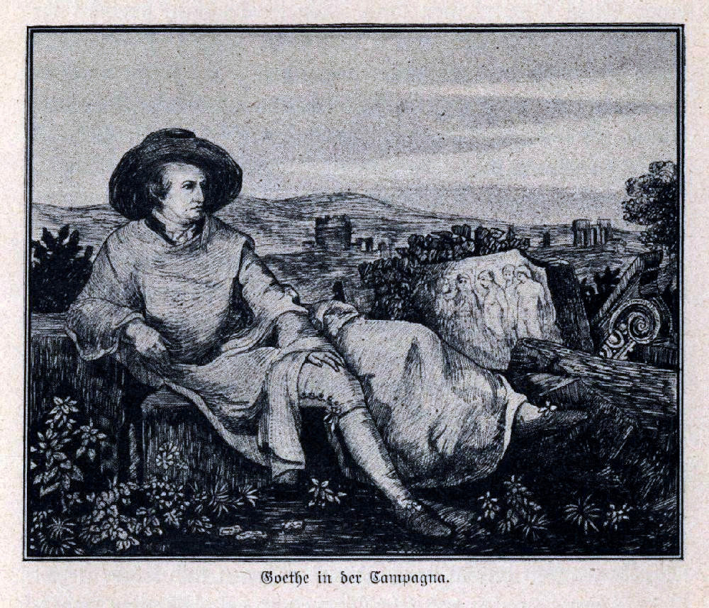
Die prächtigen, für satte und zufriedene Leute berechneten Läden auf dem Markusplatz schlafen noch friedlich; aber in den häßlichen und gewundenen Straßen, durch die wir jetzt kommen, schwimmt bereits der Rauch schlechter Öfen. Rundum Häuser, die zusammengeklebt einander stützen und vor dem Umfallen[S. 168] bewahren; schmutzigbraune, ockergelbe, rosarote, bleichgrüne, graue Häuser. Mauern an Mauern aus verwittertem, vor Alter sterbendem Stein, Fenster mit staubgrauen Gardinen blicken griesgrämig drein. Schwere Beklommenheit befällt euch. Man kann das, was man hier atmet, ebensowenig als Luft bezeichnen, wie man einen Stein Brot nennen kann. Wo ihr hinblickt, gewahrt ihr das schändliche Zeugnis eines ungleichen, heißen, aber vergeblichen Kampfes, den der Vater gegen den Sohn führt, und der Bruder gegen die Schwester. Man sieht unansehnliche Kasernenbauten, Kramläden, Weinkneipen, Barbierläden, Schuppen mit Polstermöbeln gefüllt, von denen die Fetzen herabhängen, Trödelbuden, eine Schlosserwerkstätte, Flure mit gefälschten Antiquitäten vollgepropft.
Gegen sechs Uhr beginnt es hier lebhaft zu werden; verworrenes Gesumme aus Gängen und Gäßchen; fernes Sprechen zusammengepferchter Menschen. Gegen sieben Uhr wimmelt es bereits, und ihr habt den Eindruck, als seien alle Ameisen allmählich aus ihren Löchern hervorgekrochen, um nun den ganzen Tag unermüdlich herumzulaufen und Soldi zu sammeln.
Es scheint Wochenmarkt zu sein. In langen Reihen ziehen sich offene Buden an den Häuserwänden hin, hinter denen die Verkäufer in fieberhafter Eile ihre Waren auspacken. Ganze Berge von Orangen und Zitronen, von grünen Feigen und Mispeln wachsen im Nu vor euch auf. Wagen und Körbe stehen umher; ganze Haufen von lebendigem und geschlachtetem Federvieh umgeben euch plötzlich. Hühner gackern, Tauben gurren. Kupferbraune Tagelöhner, verblühte Frauen, oft mit einem Säugling an der Brust, frühwelke Kinder, die erst Menschen werden wollen, große und kleine Taschendiebe, dickleibige Hausfrauen, schlecht frisierte und schlecht gekleidete Mädchen, Matrosen, Händler, Pfaffen, Klosterschüler, Polizisten quirlen hier durcheinander. Alles mögliche kommt zum Verkauf: alle südlichen Obstarten, Hammelfleisch, das metallgrüne Mücken umschwirren,[S. 169] Artischocken, Bananen, blasses, ungesalzenes, ungemein schlechtes Brot, Seile, Spaten, Gedärme, alte Röcke, alte Möbel, alte Chiantiflaschen, alte Geigen, Papageien und Seegras; es ist ein buntes lebendiges Museum.
Händler und Käufer, Betrüger und Betrogene, der ganze Markt schreit hilflos und zwecklos durcheinander. Die Kleinkrämer, die ihre Ware auf der Erde ausgebreitet haben, halten die Passanten mit befehlenden und flehenden Rufen fest. Mit gellender Stimme betteln sie. Ihr seht erregte und wilde Gesichter. Sie zanken um nichts; aber wie sie so dastehen und einander an die Kehle möchten, ist doch ein originelles Bild, das durch keine rohe Linie verunstaltet wird. Hier wird Räuberei am hellen Tage getrieben; Lug und Trug und falsche Eide klingen an euer Ohr, schimpfliche Frechheit macht sich breit, Feigheit und Qual auf Schritt und Tritt. Die Seelen hacken alle wild aufeinander los. Aber alles doch mit einer bestimmten Gewohnheit und Selbstverständlichkeit und — so widersinnig es klingt — mit einer gewissen Ruhe.
Denn das Schauspiel wiederholt sich täglich; es ist der Kampf um den Soldo. Verweilt eine Stunde in diesem scheußlichen Dunstkreis voll Elend und Unrecht, in diesen arbeitsreichen, erniedrigenden Gassen, und ihr habt für euer ganzes Leben das starke Gefühl von der Zweiseitigkeit aller schönen Dinge.
Aber wir wollen zum Rialto zurück. Wir biegen in die erste Straße ein und sind am Fischmarkt. Ihr tretet auf Seeschnecken, Patellen und Fischeingeweide. Der Boden ist schuppenübersät und glitschig. Kübel und Körbe, Bottiche und Fässer, Netze und Wagschalen, Tische und Bänke voller Fische, Krebse, Krabben, Schnecken, Austern und Muscheltiere in hundert Formen und Größen. Das zuckt und zappelt und kriecht und krabbelt und hüpft und wimmelt durcheinander. Der Anblick ist gruselig; man muß aber das Getier, diese unglücklichen aufgehaschten Meeresbewohner, die Goethe so viel Vergnügen machten, nicht auf dem von wüstem Geschrei und Geklapper erfüllten Platze[S. 170] beobachten. Man tut besser, die engen Gäßchen verlassend, durch den nördlichen Canale grande zu gondeln, um die Insel der Santa Clara herum, hinaus auf den Lido ...
Dort ist das Meer ...
»Das Meer ist doch ein großer Anblick ... Dort habe ich heute die Wirtschaft der Seeschnecken, Patellen und Taschenkrebse gesehen und mich herzlich darüber gefreut,« sagt Goethe. »Was ist doch ein Lebendiges für ein köstliches, herrliches Ding! Wie abgemessen in seinem Zustande, wie wahr, wie seiend!«
Im weiteren Verlauf schildert Goethe sehr lebendig die Jagd, die die Taschenkrebse auf die Patellen machten. Man kann als Naturforscher sich gewiß herzlich freuen über diesen Kampf und man kann als Dichter die sehr sentimentale Betrachtung anstellen, wie seltsam es doch ist, daß einer den anderen fressen muß. Aber lassen wir solche Gedanken nicht aufkommen.
Das Meer umspült den Strand und lächelt dem blauen Himmel ins Antlitz. In vollem Laufe stürmt es scherzhaft die Lagunen und wirft ganze Wasserstürze wirbelnden Schaumes auf den Kiessand. Mit breiten Zungen beleckt es die Düne, gleitet aber sofort wieder sanft zurück, sich krümmend, wie der Leib einer riesigen Schlange. Welle auf Welle jagt hintereinander her. Ein sanfter Wind liebkost die mächtige Brust des Meeres, die sich gleichmäßig hebt und senkt, und die lachende Sonne wärmt sie mit ihren warmen Strahlen. Grünliche Wellen schleudern den weißen Schaum ihrer flockigen Rücken weit auf den Strand und zerfließen mit leichtem Rascheln. Ihr vertraut dem Meere eure Gedanken an, und es reinigt sie von Schmutz und von Sorge, von allem Kleinen und Kleinlichen.
Das Meer ist ein großer Anblick ...
Goethe hatte diese »Wunderstadt«, diese »Biber-Republik« 1786 zum ersten Male gesehen, hatte sie so gesehen, wie sie hier geschildert wurde.
[S. 171]
Am 30. September lief er ohne Führer in die entferntesten Quartiere der Stadt. Er sehnte sich nach Einsamkeit, denn »nirgends fühlt man sich einsamer als im Gewimmel, wo man sich, allen ganz unbekannt, durchdrängt«. Er suchte sich in dem Labyrinth der kleinen Gäßchen zurechtzufinden, ohne irgend jemand zu fragen; er nahm nur die Himmelsrichtung zum Führer. »Es ist ein unglaubliches Gehecke ineinander, und meine Manier, sich recht sinnlich davon zu überzeugen, die beste. Auch habe ich mir, bis an die letzte bewohnte Spitze, der Einwohner Betragen, Lebensart, Sitte und Wesen gemerkt; in jedem Quartiere sind sie anders beschaffen. Du lieber Gott, was doch der Mensch für ein armes gutes Tier ist!«
Die kleinen Häuschen, die dicht beieinander unmittelbar in den Kanälen standen, wunderten ihn. Und täglich erweitert er durch neue Spaziergänge seine Kenntnis der Stadt. Er kaufte sich einen Plan, studierte ihn gründlich und bestieg zunächst den Markusturm, der noch mehr als hundert Jahre stehenbleiben sollte, dann 1903 einstürzte und nun wieder neu aufgebaut ist. Seinen Augen bot sich ein einziges Schauspiel. Zu seinen Füßen lag die märchenschöne Stadt mit ihren schimmernden Palästen und das weite blaue Meer, auf dem Galeeren und Fregatten, Segler und Gondeln wie kleine Nußschalen hin und her wimmelten.
An einem Sonntag ärgerte er sich über den Kehricht, der in allen Gassen lag. »Die Leute schieben den Kehrig in die Ecken; auch sehe ich große Schiffe hin und wieder fahren, die an manchen Orten stilliegen und das Kehrig mitnehmen, Leute von den Inseln umher, welche des Düngers bedürfen; aber es ist in diesen Anstalten weder Folge noch Strenge, und desto unverzeihlicher die Unreinlichkeit der Stadt.«
Andere Anordnungen, insbesondere architektonische Verzierungen des Straßenpflasters, gefallen ihm so gut, daß er gleich einige Skizzen davon entwirft. »So hat man immer Trieb und Lust, vor fremden Türen zu kehren.«
[S. 172]
In der Carità bewundert er Palladios Baukunst. In der Kirche Il Redentore, ebenfalls ein Bauwerk Palladios, bewundert er besonders die breiten goldgestickten Ranken und Laubwerke. Aber bei näherem Zusehen fand er sich betrogen. »Alles, was ich für Gold gehalten hatte, war breitgedrücktes Stroh, auf Papier geklebt, der Grund mit lebhaften Farben angestrichen, und das so mannigfaltig und geschmackvoll, daß dieser Spaß, dessen Material gar nichts wert war, und der wahrscheinlich im Kloster selbst ausgeführt wurde, mehrere tausend Taler müßte gekostet haben, wenn er echt hätte sein sollen. Man könnte es gelegentlich wohl nachahmen.«
An den Opernvorstellungen, die er mehrfach besuchte, fand er keinen rechten Genuß; das Ballett war von »elender Erfindung« und wurde ausgepfiffen. Im Dogenpalast wohnt er einer öffentlichen Rechtsverhandlung bei, die ihn stark in Atem hält. Auch gefiel ihm die ganze Art der Prozeßführung, die er ausführlich beschreibt, besser, »als unsere Stuben- und Kanzleihockereien.«
In einem weiten Saale des Palastes saßen an der einen Seite die Richter im Halbkreis. Ihnen gegenüber, auf einem Katheder, der mehrere Personen fassen konnte, befanden sich die Advokaten beider Parteien; vor ihnen auf einer Bank Kläger und Beklagte. Ein dürres Schreiberlein, in schwarzem, kümmerlichem Rocke, hielt ein dickes Heft in der Hand, um daraus vorzulesen. Der Saal war von Zuschauern und Zuschauerinnen gedrängt voll. Der Streit war sehr wichtig, denn er ging gegen die Gemahlin des Dogen, die in eigener Person auf dem Anklagebänkchen hatte Platz nehmen müssen. Hinter einem kleinen Tische saß auf einem niederen Schemel ein Männchen, das eine Sanduhr in der Hand hielt. Solange nämlich der Schreiber las, wurde die dafür aufgewendete Zeit nicht gerechnet, sobald aber ein Advokat zu sprechen begann, dem nur eine gewisse Zeit zur Verteidigung eingeräumt war, ließ das Männchen die Sanduhr[S. 173] laufen, die es sofort wieder umkippte, sobald der Schreiber oder sonst eine Person etwas zwischendurch sprach oder einzuwerfen hatte.
Die Komödie gefiel Goethe ausgezeichnet; sowohl die Gerichtskomödie, in der man dem Verteidiger die Zeit so kärglich zumaß, daß er gar nicht daran denken konnte, den Angeklagten würdig zu verteidigen, als auch die wirkliche Komödie, wo Goethe zunächst ein Maskenstück sah. Es unterhielt ihn mit »unglaublicher Abwechslung« mehr als drei Stunden; am meisten amüsierte ihn aber das Publikum. »Die Zuschauer spielen mit, und die Menge verschmilzt mit dem Theater in ein Ganzes. Den Tag über auf dem Platz und am Ufer, auf den Gondeln und im Palast, der Käufer und Verkäufer, der Bettler, der Schiffer, die Nachbarin, der Advokat und sein Gegner, alles lebt und treibt und läßt es sich angelegen sein, spricht und beteuert, schreit und bietet aus, singt und spielt, flucht und lärmt. Und abends gehen sie ins Theater und sehen und hören das Leben ihres Tags, künstlich zusammengestellt, artiger aufgestutzt, mit Märchen durchflochten, durch Masken von der Wirklichkeit abgerückt, durch Sitten genähert. Hierüber freuen sie sich kindisch, schreien wieder, klatschen und lärmen. Von Tag zu Nacht, ja von Mitternacht zu Mitternacht ist immer alles eben dasselbe.«
Ein andermal ergötzt ihn wieder in einem Stück von Goldoni die Komödie sowohl, als auch die ausgelassene Heiterkeit des Publikums. Es war ein Gelächter und Gejauchze im Theater von Anfang bis zu Ende.
Die Venetianer feierten gewöhnlich in den ersten Tagen des Oktober einen alten Sieg über die Türken. Das Fest wurde durch ein Hochamt eingeleitet, dem auch Goethe beiwohnte. Er sah die vergoldeten Barken an dem kleinen Platze vor der Kirche der heiligen Justina landen, die die Fürsten und einen Teil des Adels brachten. Er sah, wie sich seltsam gekleidete Schiffer mit rotgemalten Rudern vorwärts bemühten. Am Ufer[S. 174] harrte die Geistlichkeit; die Bruderschaften mit angezündeten Kerzen, die sie auf Stangen und tragbaren silbernen Leuchtern trugen, drängten und wogten durcheinander; mit Teppichen beschlagene Holzbrückchen wurden aus den Gondeln und Barken herausgereicht, um das Aussteigen zu erleichtern. Zuerst kamen die Savj, die vornehmsten Ratsherren mit ihren langen violetten Kleidern, dann die Senatoren in ihren langen scharlachroten Gewändern. Zuletzt kam der Älteste mit einer goldenen phrygischen Mütze geschmückt. Er trug einen langen goldenen Talar und den Hermelinmantel. Drei Diener trugen seine Schleppe. Und dies ganze bunte Schauspiel spielte sich auf dem kleinen Platze vor der Kirche ab, vor deren Türen geschmückte Herolde die erbeuteten Türkenfahnen hielten. »Mir nordischem Flüchtling hat diese Zeremonie viel Freude gemacht. Bei uns, wo alle Feierlichkeiten kurzröckig sind, und wo die größte, die man sich denken kann, mit dem Gewehr auf der Schulter begangen wird, möchte so etwas nicht am Ort sein.« Der Doge, ein schön gewachsener, krank aussehender Mann, hielt sich recht würdevoll und sah aus wie der Großpapa des ganzen Geschlechts. Die Kleidung stand ihm sehr gut, und das feine und durchsichtige Käppchen, das er unter der Mütze trug, bedeckte blütenweißes Haar. Fünfzig Nobili, in langen dunkelroten Schleppkleidern waren mit ihm; schöne große Männer mit ausdrucksvollen Köpfen, auf denen sie blonde Lockenperücken trugen, mit klugen, weißen, ruhigen und selbstsicheren Gesichtern.
An einem anderen Abend bestellte Goethe sich den famosen Gesang der Fischer, die ihm nach ihren eigenen Melodien etwas von Tasso und Ariost vorsingen mußten. Bei Mondschein bestieg er eine Gondel, einen Sänger vorn und einen hinten, die abwechselnd sangen. Sie ließen ihre Stimmen laut in die Nacht hinausschallen, aufs Meer hinaus, wo der Wind sie weitertrug. In der Ferne vernimmt ein anderer Schiffer, der die Melodie kennt, den Gesang, und antwortet mit der nächsten Strophe des[S. 175] Textes. Dann erwidert der erste wieder, und so ist immer einer das Echo des anderen. Die ganze Nacht hindurch geht der Gesang, ohne daß die rudernden Schiffer ermüden würden. Am Ufer der Giudecca stieg Goethe aus und ging am Kanal entlang, um den Genuß des Singens in der Nähe und des Erwiderns in der Ferne tiefer auskosten zu können. Der Gesang war so klagend und melancholisch und so ans Herz greifend, daß Goethe bis zu Tränen gerührt wurde. Ein Schiffer riet ihm, daß er sich die singenden Schifferfrauen vom Lido anhören möchte; sie hätten die Gewohnheit, wenn ihre Männer ins Meer hinausruderten, um zu fischen, sich ans Ufer zu setzen und mit durchdringender Stimme abends Gesänge erschallen zu lassen, bis sie von fern die Stimmen ihrer Männer vernähmen. Auf diese Weise unterhielten sie sich, seien nicht beieinander und doch beieinander. Es sei, als ob ein Einsamer und Verlassener in der Ferne sehnsüchtig klage und darauf warte, daß ihn ein Gleichgestimmter vernehme und ihm antworte.
Die Gemälde von Veronese, Tizian, Bellini, Giorgione, Tintoretto und anderen großen Malern erwecken Goethes ganze Feuerbegeisterung.
Aber es zieht ihn immer wieder hinaus zum Lido, zum Meere, wo er stundenlang liegen und Ebbe und Flut beobachten kann. Der Strand ist so sehr von Muscheln besät, daß er sich um ihretwillen Kinder herbeiwünscht, die sich daran erfreuen könnten. Aber da keine Kinder in der Nähe sind, füllt er sich selber die Taschen damit an. Besonders gern sieht er aber den Taschenkrebsen zu, die während der Flut an den Strand gespült werden und nun in ihre salzige Flut nicht mehr zurückkommen. Es wimmelt und krabbelt dann besinnungslos durcheinander, denn auf dem Trockenen bleiben, bedeutet so viel wie den Tod. Das Meer weicht aber immer mehr zurück, die Sonne sticht und trocknet rasch, und nun heißt es ebenso rasch ins Meer zurückwandern. Bei dieser Gelegenheit suchen die Taschenkrebse ihren Raub.[S. 176] »Wunderlicher und komischer kann man nichts sehen, als die Gebärden dieser aus einem runden Körper und zwei langen Scheren bestehenden Geschöpfe; denn die übrigen Spinnenfüße sind nicht bemerklich. Wie auf stelzenartigen Armen schreiten sie einher und sobald eine Patelle sich unter ihrem Schild vom Flecke bewegt, fahren sie zu, um die Schere in den schmalen Raum zwischen der Schale und dem Boden zu stecken, das Dach umzukehren und die Auster zu verschmausen. Die Patelle zieht sachte ihren Weg dahin, saugt sich aber gleich fest an dem Stein, sobald sie die Nähe des Feindes merkt. Dieser gebärdet sich nun wunderlich um das Dächelchen herum, gar zierlich und affenähnlich; aber ihm fehlt die Kraft, den mächtigen Muskel des weichen Tierchens zu überwältigen; er leistet auf diese Beute Verzicht, eilt auf eine andere wandernde los, und die erste setzt ihren Zug sachte fort. Ich habe nicht gesehen, daß irgendein Taschenkrebs zu seinem Zwecke gelangt wäre, obgleich ich den Rückzug dieses Gewimmels stundenlang beobachtet habe.«
Man sieht, Goethe war in Venedig nicht müßig; mit allen Sinnen nahm er das neue wundervolle Bild dieser märchenumrankten Stadt in sich auf, so daß man ihm wohl glauben kann, wenn er schließlich bei seiner Abreise sagt: »Ich habe gut aufgeladen und trage das reiche, sonderbare, einzige Bild mit mir fort.«
Durch die Straßen von Paris heulte das Volk. Waffen blitzten, drohende Fäuste reckten sich in die Höhe. Wüste Schädel, scheußliche Fratzen, fanatische Köpfe tauchten auf. Die Bastille wurde gestürmt, und bald darauf wurde die Guillotine in Tätigkeit gesetzt. Menschenbeladene Karren rasselten zum Richtplatz hin. Die blutige, rachedurstige Freiheitsgöttin johlte aufwieglerisch[S. 177] in den Gassen. Die große furchtbare Revolution war ausgebrochen, die mit den Strömen roten Blutes die der Menschheit so lange Jahre angetane Schmach wegspülen wollte, und der Schrei nach Freiheit stieg tausendstimmig zum Himmel empor.
Und schon war der Mann da, der alsbald all die neuerwachten Kräfte Frankreichs in seiner Hand vereinigte und sich zum neuen Schicksal des Volkes aufwarf. Er eilte von den Pyramiden herbei, durchmaß in rasenden Märschen Italien und eroberte seiner Republik in drei Jahren halb Europa. Schon war Bonaparte Konsul und nicht lange darauf und er war der Kaiser Napoleon. Jetzt mochte Österreich sich wehren, mochte Preußen sich erheben, mochte selbst Rußland sich rühren. Dieses Schicksal, das unter dem Namen Napoleon auftrat, schien unbesiegbar zu sein. Kalt und erzen stand er in Europas Mitte. Ein Wink seiner Hand entschied Riesenschlachten. Ein Blick seiner Augen entschied über das Schicksal zweier Nationen. Alles, alles fraß dieser Moloch; ganze Völker fielen seiner Gier zum Opfer. Seit den Cäsaren Roms war so unerhörte Größe nicht mehr gesehen worden.
Und Deutschland hatte am schlimmsten darunter zu leiden. Ganz Deutschland war von den Armeen des Weltherrschers umzingelt. Ganz Deutschland wogte in Donner und Dampf und wenn der Rauch sich verzog, sah man neue entsetzliche Leichenfelder. Man schickte Greise in den Krieg, Knaben griffen zu den Waffen. Es nützte alles nichts. Jungfrauen zogen auf die Schlachtfelder, um zu heilen und zu helfen. Es nützte alles nichts. Für Deutschland war die Zeit der Befreiung noch nicht gekommen. Das Deutsche Reich war infolge der überkommenen Uneinigkeit der deutschen Fürsten zersplittert. Was aber der Gegner nicht besaß, und was Deutschland noch retten konnte und mußte, das war der deutsche Geist. Fichte in seinen Reden an die deutsche Nation und Schiller erinnerten mit flammenden Worten daran, daß es galt, die heiligsten Güter zu verteidigen. Deutschland stellte der großen Kraft Frankreichs seinen großen Geist[S. 178] entgegen: Goethe, der den Weltenbezwinger Napoleon zur Hochachtung zwingt, und Beethoven, den gewaltigsten Gestalter der Erde, Beethoven, der das Tonreich neu gestaltete, neu eroberte und der den Schlachtendonner Napoleons noch übertönte durch seine vom Himmel herabgeholten Gewitter.
Wir können den Namen Beethoven bis ins siebzehnte Jahrhundert zurückverfolgen, wo in Antwerpen ein Weinhändler namens Wilhelm van Beethoven gelebt hat, der Ur-Urgroßvater unseres Ludwig. Wilhelms Sohn, Heinrich Adelard war Schneider und Vater von rund einem Dutzend Kindern. Eins davon, Louis, der heimlich von Hause durchgebrannt war, wurde ein wandernder Musikant, bis er 1733 am Hofe des Bonner Kurfürsten eine feste Stellung als Bassist erlangte. Er avancierte bis zum erzbischöflich kurfürstlichen Kapellmeister, in welcher Stellung er in seiner goldgestickten, zinnoberroten Uniform eine recht gute Figur machte. Doch hatte er sich, um seine Einkünfte zu vermehren, nebenbei einen kleinen Weinhandel zugelegt, der ihm aber nur Unglück bringen sollte. Sowohl seine Frau als auch der einzige Sohn Johann verfielen dem Laster des Trunkes. Johann verstand sich sehr gut auf das Weinproben, und diese Schwäche nahm so überhand, daß der ganze Haushalt gestört und der Sohn schließlich sogar des Amtes entsetzt wurde. Der Vater bestimmte seinen Sohn Johann auch für die Musik; aber der brachte es nicht weiter als bis zum Tenoristen der Hofkapelle mit dreihundert Taler Jahresgehalt.
Magdalena Kewerich aus Ehrenbreitstein, eine hübsche schlanke Person, die als Kammerjungfer gedient hatte und schon mit neunzehn Jahren die Witwe des kurtrierischen Leibkammerdieners Layen war, wurde 1763 Johann van Beethovens Frau. Sie war die Tochter eines Kochs und vermögenslos; und da die Heirat dem Vater durchaus nicht gefiel, trennten sich Vater[S. 179] und Sohn. Am 17. Dezember 1770 entsprang dieser Ehe Ludwig van Beethoven.
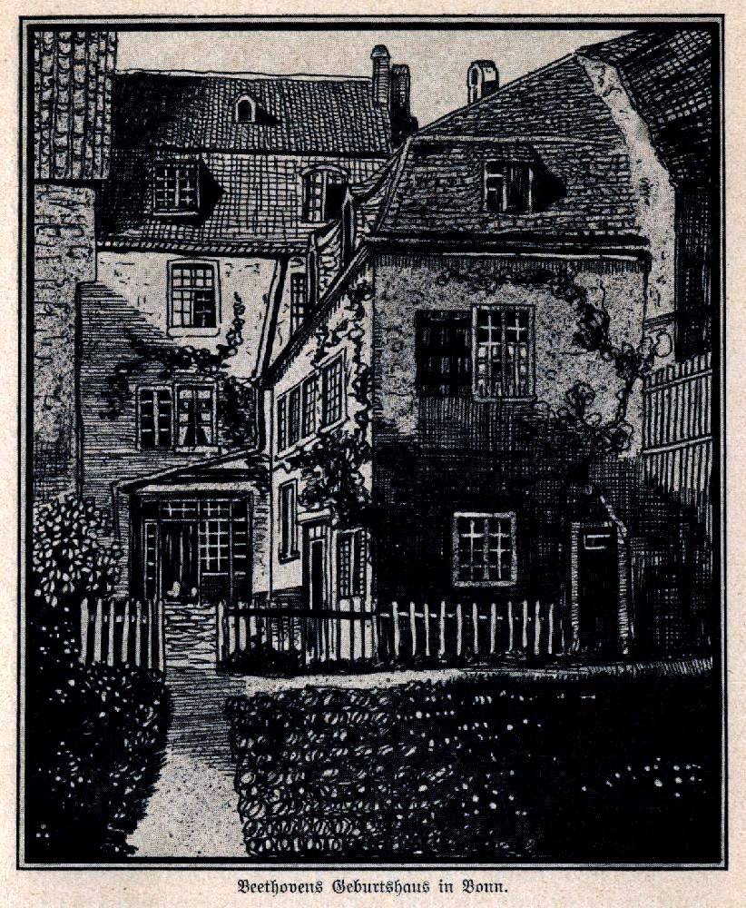
Aber da Ludwig noch mehrere Geschwister hatte, herrschte im Hause Mangel und Not. Anfangs hatte der wohlhabende Großvater Louis, an dem Ludwig mit aller Innigkeit hing, nachgeholfen, trotzdem er wegen der Heirat noch erzürnt war.[S. 180] Aber er starb schon, als Ludwig erst drei Jahre alt war. Als die Bedrängnis immer größer wurde, machte der Vater mehrere Gesuche um Gehaltsaufbesserung, die aber abschlägig beschieden wurden, weil seine Führung nicht die beste war. Oft mußte der herangewachsene Ludwig seinen trunkenen Vater auf offener Straße aus den Händen der Polizei befreien und man begreift, wie diese schmerzlichen Vorfälle sich dem Gedächtnisse des jungen Beethoven eingruben und ihn allmählich verschlossen und trotzig machten. Er litt zweifellos unter der Trunksucht des Vaters, über den er trotzdem nie ein hartes Wort äußerte, noch auch eine abfällige Bemerkung seitens eines Dritten je geduldet hätte.
Infolge dieser Zustände wurden die Verhältnisse im Elternhause immer mehr zerrüttet; die Erbschaft wurde von den Krankheiten der Kinder und dem Wein bald verschlungen, so daß Glas- und Porzellanschränke, Silberservice und Leinwand hintereinander zum Trödler wandern mußten.
Die Erziehung und Ausbildung, die der junge Beethoven erhielt, war deshalb sehr ungeordnet und mangelhaft. Der Vater war, um seine Not zu vergessen, meist trunken und in der Trunkenheit despotisch, und obwohl die Mutter große Geduld an den Tag legte, wurde der Knabe scheu und in sich gekehrt.
Aber dieser Knabe wurde zugleich auch der gute Stern an dem trüben Himmel des Elternhauses, sobald der Vater erst einmal das Talent seines Sohnes entdeckt hatte, der später die ganze Familie vom Untergang erretten sollte.
So oft der Vater am Klavier saß und sang, horchte der Knabe aufmerksam zu und versuchte die Melodie nachzuspielen, so daß ihm der Vater schon im fünften Lebensjahre Unterricht im Klavier- und Violinspiel erteilte. Und eines Tages verfiel der Vater auf die Idee, seinen Sohn zu einem Wunderkinde zu machen und mit ihm umherzuziehen, um Geld zu verdienen. Nun begannen harte Tage für den jungen Ludwig, der oft vom Spiel mit den Kindern weggeholt wurde, um seine Aufgaben zu üben.[S. 181] Kein Weinen half ihm; mit unerbittlicher Strenge und mit reichlichen Prügeln verfolgte der Vater sein Ziel und eines Tages kündigte er in einer Kölner Zeitung an, daß am 26. März — der wurde auch Beethovens Todestag! — 1778 sein Söhnchen »von sechs Jahren mit verschiedenen Klavierkonzerten die Ehre haben werde aufzuwarten, wo er allen hohen Herrschaften ein völliges Vergnügen zu leisten sich schmeichle, um so mehr, da er zum größten Vergnügen des ganzen Hofes sich hören zu lassen die Gnade gehabt habe«.
Der Knabe wurde also, damit das Wunder größer sei, um ein Jahr jünger gemacht; Beethoven glaubte aber nie, daß es nur eine absichtliche falsche Angabe sei.
Des jungen Beethovens Schule war hauptsächlich die Not. Außer dem Vater unterrichtete ihn ein Jahr lang der Sänger Tobias Pfeiffer, der bei Beethovens in Kost und Logis war und das Klavierspiel vollkommen beherrschte. Noch in späteren Jahren hat Beethoven diesem seinem Lehrer von Wien aus oft Unterstützungen zukommen lassen, obwohl ihn der Unterricht zuweilen um alle Kindheitsfreude und oft um den Schlaf gebracht hatte. Denn oft, wenn der Vater und Pfeiffer nachts zusammen aus dem Wirtshaus kamen, wurde der kleine Ludwig aus dem Bett geholt und bis zum Morgen am Klavier festgehalten. Der Erfolg dieser spartanischen Erziehung zur Musik war immerhin so groß, daß die Leute vor den Fenstern stehnblieben, wenn Pfeiffer und der kleine Beethoven zusammen »variierten«.
Im Jahre 1781 finden wir den zehnjährigen Ludwig mit seiner Mutter auf einer Reise nach Holland, wo er in vornehmen Häusern spielte und die Leute durch seine Fertigkeit in Erstaunen setzte. Aber die Einnahmen müssen auf dieser Reise nicht groß gewesen sein, denn Beethoven sagte später: »Die Holländer, das sind Pfennigfuchser; ich werde Holland nimmermehr besuchen.«
Inzwischen erlernte Beethoven im Franziskanerkloster auch das Orgelspiel, das er bald so weit beherrschte, daß er beim Gottesdienst[S. 182] als Gehilfe verwendet werden konnte. Sein Lehrer in dieser Kunst war erst der Hoforganist van den Eeden und dann dessen Nachfolger, der feine Musiker Christian Gottlob Neefe, der einen bedeutenden Einfluß auf das Kompositionstalent Beethovens ausgeübt hat. Schon 1782 konnte er den elfjährigen Knaben fest anstellen und ihm so die Anwartschaft auf die Hoforganistenstelle selbst verschaffen. Die Hauptgrundlage des Unterrichts, den Beethoven von Neefe empfing, war Bachs wohltemperiertes Klavier.
Inzwischen fiel Beethovens Improvisationstalent immer mehr auf, und er selbst versuchte schon, wenn er sich ans Klavier setzte, um zu phantasieren, bestimmte Empfindungen, bestimmte Bilder und Menschen durch die Töne zu charakterisieren. Mit zwölf Jahren entwarf er die entzückenden »Bagatellen« fürs Klavier, die er später als op. 33 herausgegeben hat, und dreizehn Jahre alt, ließ er einige Klaviersonaten drucken, die er dem Kurfürsten gewidmet hatte. Um diese Zeit leitete er auch bereits, wenn Neefe verhindert war, die Proben im Theater, und er machte sich sogar einmal den Spaß, den sehr tonfesten, kurfürstlichen Sänger Heller während des Gottesdienstes durch kühne Abschweifung bei der Begleitung ganz aus dem Konzept zu bringen. Der Kurfürst verbat sich freilich solche »Geniestreiche«; er war aber von der außerordentlichen Begabung des jungen Beethoven, der inzwischen Cembalist und Bratschist am kurfürstlichen Orchester geworden war, sehr überrascht.
Solche Erfahrungen veranlaßten nun seine Gönner, ihn einem allerersten Meister in Unterricht zu geben, und 1787 finden wir denn auch den Bonner Hoforganisten Beethoven als Mozarts Schüler in Wien. Mozart läßt sich etwas von Beethoven vorspielen, bleibt aber anfangs kühl bis ans Herz, weil er es für ein einstudiertes Paradestück hält. Als ihn Beethoven aber um ein Thema zum Phantasieren bittet, »phantasiert« er denn so, daß Mozart denen, die im Nebenzimmer zuhören, zuruft: »Auf den gebt acht, der wird einmal in der Welt von sich reden machen.«
[S. 183]
Trotz dieser Meinung wurde es nicht viel mit dem Unterricht. Mozart war zu sehr mit seinen eigenen Angelegenheiten und mit der Komposition des »Don Juan« beschäftigt. Zudem kam noch, daß die Mutter Beethovens heftig erkrankte, so daß er schon nach wenigen Wochen Wien verließ, um zur geliebten Mutter zu eilen, die bald darauf, vierzig Jahre alt, starb.
»Sie war mir eine so gute, liebenswürdige Mutter,« schreibt er in einem Briefe bald darauf, nachdem sie gestorben war; »sie war meine beste Freundin. O wer war glücklicher als ich, da ich noch den süßen Namen ›Mutter‹ aussprechen konnte! Und er wurde gehört, und wem kann ich ihn jetzt sagen?«
Mit dem Tode der Mutter nahm die Trunksucht des Vaters immer mehr zu, so daß er seine Stimme verlor und bald darauf seines Amtes entsetzt wurde. Beethoven mußte nun beim Hofamte bitten, die Hälfte des väterlichen Gehalts ihm als Erziehungsbeitrag für seine jüngeren Geschwister anzuweisen. Nun fühlte sich Beethoven noch vereinsamter als früher.
Eine zweite Mutter fand er in der Nachbarswitwe Frau von Breuning, zu deren Kindern er als Klavierlehrer kam. In diesem Hause, in dem er nicht nur den größten Teil des Tages, sondern auch manche Nacht zubrachte, wurde er als eigenes Kind behandelt. Hier hat er die erste Bekanntschaft mit der deutschen Literatur gemacht, sowie seinen ersten gesellschaftlichen Schliff erhalten.
Neben diesem Hause ist noch der Graf Waldstein zu nennen, dem die Sonate op. 53 gewidmet ist. Der Graf ahnte das Genie Beethovens, mit dem er befreundet war und hat ihm manche Geldunterstützung zuteil werden lassen, die er als Gratifikation vom Kurfürsten ausgab, um Beethovens Reizbarkeit zu schonen. Graf Waldstein schickte Beethoven wieder nach Wien, damit er dort bei Haydn die letzte Schulung erhalte. Der Kurfürst unterstützte Beethoven ebenfalls, der nun mit hochgeschwellten Empfindungen im November 1792 nach Wien reist, das damals für[S. 184] Musik die maßgebendste Stadt war. Nach den Stunden bei Haydn, die Beethoven mit je acht Groschen, sowie Kaffee oder Schokolade honorierte, verwarf Beethoven alles, was er bis dahin komponiert hatte.
Beethoven mußte nun daran denken, sich auf eigene Füße zu stellen. Seine beiden jüngeren Brüder waren versorgt; sie folgten ihm freilich beide bald nach. Haydn nahm den Unterricht nicht sehr streng und ließ Beethoven vieles, was regelwidrig war, durchgehen. Als aber einst J. Schenk den lernbegierigen Beethoven auf der Straße traf, machte er ihn auf die Fehler in den Übungsheften aufmerksam, die der Lehrer unverbessert gelassen hatte. Und als schließlich Haydn Beethoven, der eben drei Trios komponiert hatte, noch geraten hatte, ein Trio davon (op. 1 in C moll) nicht zu veröffentlichen, weil es zu gewagt sei, wurde Beethoven mißtrauisch, brach den Unterricht bei Haydn kurzerhand ab und ging zum Komponisten des »Dorfbarbiers«, zu Schenk, in die Lehre. Beethoven widmete die drei Trios dem Fürsten Karl Lichnowsky, von dessen Frau Beethoven sagte, sie hätte eine Glasglocke über ihn setzen lassen wollen, damit kein Unwürdiger ihn berühre.
Zur Selbsterkenntnis erwacht, begann Beethoven immer mehr den Mangel einer regelrechten Schulbildung zu empfinden. Da er in seiner Kindheit ausschließlich musikalische Studien trieb, war seine übrige Ausbildung natürlich sehr vernachlässigt worden. Rechnen war ihm das ganze Leben hindurch sehr beschwerlich; mit der Orthographie haperte es auch stark. Er hatte ein wenig Latein und ein bißchen Französisch gelernt. Allein der Hauch einer edleren Geistesbildung, der Bonn durchzog, als Beethoven noch dort weilte, und der Verkehr mit gebildeten Menschen führte ihn dafür wieder geistigen Höhen zu, die andere Künstler nicht zu ersteigen vermochten. In Wien suchte Beethoven seine mangelhafte Bildung vollends durch eifrige Lektüre der großen Dichter und Denker auszugleichen, und um sich geschmeidigere[S. 185] Umgangsformen anzueignen, besuchte er einen Tanzlehrer. Dabei führte er einen streng sittlichen Lebenswandel, denn als ihm während eines fröhlichen Ausflugs eine Kellnerin einmal zu nahe trat, gab er ihr eine schallende Ohrfeige. Im Homer, den er gern las, strich er sich die Stelle an: »Auch vieles Schlafen ist schädlich«.
Von Schenk ging Beethoven zu Albrechtsberger in die Lehre, dem größten zeitgenössischen Theoretiker, der das zu viel an Drill beanspruchte, was Haydn zu wenig berücksichtigt hatte. Aber schon war in Beethoven etwas, was sich gegen diese Regeln auflehnte. Er hatte bereits als Knabe das Handwerksmäßige und das, was an der Musik erlernbar war, gelernt und er sah ein, daß jedes wahrhafte Genie sich seine eigenen Gesetze geben müsse. Darum kam Albrechtsberger auch bald zu dem Urteile, daß Beethoven »nie was Ordentliches lernen würde«, und selbst zu den Freunden Beethovens sagte er: »Gehen Sie nicht mit dem Beethoven um, der hat nichts gelernt.« Beethoven gab diesen Lehrer auf und ging zu Salieri, dem Todfeinde Mozarts, um bei ihm Unterricht in dramatischer Komposition und in Gesangsmusik zu nehmen; er wollte die italienische Musik von Grund aus kennen lernen.
Am 30. März 1795 erlebte Wien das erste Auftreten des Pianisten Beethoven. Die zweite Nummer des Programms war »ein neues Konzert auf dem Pianoforte (C dur op. 15), gespielt von dem Meister Herrn Ludwig von Beethoven und von seiner Erfindung«.
Beethoven war jetzt fünfundzwanzig Jahre alt. Er schien damals als ein guter, ruhig gestimmter, bescheidener Mann, dessen Spiel von ungemeiner Fertigkeit war und mehr zum Herzen sprach, als das aller Vorgänger. Sein Spiel machte einen ungewöhnlichen Eindruck und allgemein hatte man das Gefühl, daß sich hier einer in Tönen aussprach, der seine eigenen Wege ging. Beethoven charakterisierte am Klavier; er benutzte die hohen und tiefen Lagen, um sowohl verträumte,[S. 186] als auch tiefinnerliche Empfindungen auszudrücken. Er wurde am Instrument zum Dichter, der neue Welten schuf und gestaltete. Am schönsten spielte er, wenn er allein im Zimmer war, und die Zuhörer sich in einem Nebenraum befanden. Dann blieb aber auch kein Auge trocken, und es wundert uns nicht, wenn er 1796 von Prag aus an seinen Bruder schreibt: »Meine Kunst erwirbt mir Freunde und Achtung, was will ich mehr!« Von Prag aus führte ihn eine Kunstreise über Dresden und Leipzig nach Berlin, wo ihn der König Friedrich Wilhelm II. sehr huldvoll empfing. Er spielte einige Male bei Hofe und komponierte die Cellosonate (op. 5), weil der König selbst das Violoncell spielte. »Beethovens Phantasien waren im höchsten Grade glänzend und staunenswert,« erzählt uns sein Schüler Czerny; »in welcher Gesellschaft er sich auch befinden mochte, er verstand es, auf die Hörer einen solchen Eindruck hervorzubringen, daß manche in lautes Weinen ausbrachen. Denn es war etwas Wunderbares in seinem Ausdruck, noch außer der Schönheit und Originalität seiner Ideen und der geistreichen Art, wie er dieselben zur Darstellung brachte. Wenn er eine Improvisation dieser Art beendet hatte, konnte er in lautes Lachen ausbrechen und seine Zuhörer über die Bewegung, in die er sie versetzt hatte, ausspotten. Zuweilen fühlte er sich sogar verletzt durch diese Zeichen der Teilnahme. ›Wer kann unter so verwöhnten Kindern leben‹, sagte er, und einzig aus diesem Grunde lehnte er es ab, eine Einladung anzunehmen, welche der König von Preußen nach einer solchen Improvisation an ihn ergehen ließ.«
Beethoven fand sich in Berlin sehr ernüchtert. Er kam vom weichen Süden und hatte gehofft, im Norden harten, mannhaften Menschen zu begegnen; er fand schwelgerische Üppigkeit, Abgelebtheit, Weiberhaftes. Das war nicht der Geist, den er suchte.
Auch in der Berliner Singakademie, deren Direktor damals Zelter war — der Freund Goethes — trat Beethoven auf, und auch hier traten den Zuhörern Tränen in die Augen.
[S. 187]
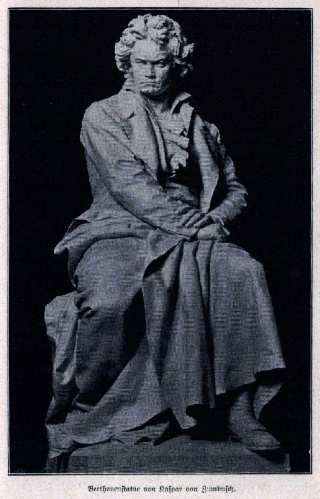
[S. 188]
Sehr enttäuscht kam Beethoven nach Wien zurück und nun begann er mit aller Energie daran zu arbeiten, »einst ein großer Mann zu werden«. Zugleich aber legte er den Grundstein zu seiner so tragischen Erkrankung.
An einem sehr heißen Sommertage des Jahres 1796 kam Beethoven ganz erhitzt nach Hause, riß Türen und Fenster auf, zog sich bis auf die Beinkleider aus und kühlte sich am offenen Fenster ab. Die Folge war eine gefährliche Krankheit, die sich während der Genesung auf das Gehör legte. Und von dieser Zeit an nahm auch die Taubheit Beethovens fortschrittweise zu, die ihm wohl die schwersten moralischen Prüfungen auferlegte und seinen ganzen Mannesmut herausforderte. »Dein Beethoven lebt sehr unglücklich,« schreibt er einige Jahre später an einen Freund, »im Streite mit Natur und Schöpfer; schon mehrmals fluchte ich letzterem, daß er seine Geschöpfe dem kleinsten Zufall ausgesetzt, so daß oft die schönste Blüte dadurch zernichtet und zerknickt wird. Wisse, daß mir der edelste Teil, mein Gehör, sehr abgenommen hat. Wie traurig ich nun leben muß, alles was mir lieb und teuer ist, meiden! O, wie glücklich wäre ich jetzt, wenn ich mein vollkommenes Gehör hätte, dann eilte ich zu Dir, aber so muß ich von allem zurückbleiben, meine schönsten Jahre werden dahinfliegen, ohne alles das zu wirken, was mir mein Talent und meine Kunst geheißen hätten. Traurige Resignation, zu der ich jetzt meine Zuflucht nehmen muß.«
Und an einen anderen Freund schreibt er 1801: »Nun hat der neidische Dämon, meine schlimme Gesundheit, mir einen schlechten Stein ins Brett geworfen, nämlich: mein Gehör ist seit drei Jahren immer schwächer geworden ... Ich kann sagen, ich bringe mein Leben elend zu; seit zwei Jahren fast meide ich alle Gesellschaften, weil mir's nicht möglich ist, den Leuten zu sagen: ich bin taub. Hätte ich irgendein anderes Fach, so ging's noch eher, aber in meinem Fache ist das ein schrecklicher Zustand; dabei meine Feinde, deren Zahl nicht gering ist, was werden diese dazu sagen?«
[S. 189]
Aber trotzdem weinte er nicht; er ermannte sich in seinem Schmerz, stärkte seine eiserne Selbstzucht, bis ihm sein siegender Wille über diese schreckliche Wendung seines Schicksals hinweghalf, und er sich wieder seinen Werken zuwenden konnte. Sein stolzes Künstlerbewußtsein kam ihm gut dabei zu Hilfe. Er hatte eingesehen, daß der wahre Adel des Menschen von innen kommt, und daß nur das Können wirkliche Rangunterschiede zu schaffen vermag. So wie er dachte, handelte er auch. Seine Freunde, den Fürsten Lichnowsky und den Prinzen Louis Ferdinand, behandelte Beethoven genau wie seinesgleichen; er fühlte sich ihnen gegenüber in nichts geringer. Er wohnte einige Zeit im Palais des Fürsten Lichnowsky, konnte sich aber der Hausordnung nicht fügen; es war ihm auch später unmöglich, bei seinem Schüler, dem Erzherzog, die Hofetikette mitzumachen, von deren Zwang er denn auch zum Entsetzen der Lakaien entbunden wurde. Als Beethoven 1806 während des Kriegsgetümmels zu Lichnowsky auf Schloß Grätz floh, bat der Fürst den Künstler, seinen Gästen, den französischen Offizieren, die das Schloß besetzt hatten, doch etwas am Flügel vorzuspielen. Beethoven war aber über diese Zumutung, vor den Deutschfeindlichen zu konzertieren, derart empört, daß er aufsprang, im Regen nach Troppau rannte und von dort so schnell als möglich nach Wien zurückeilte.
In der Abendgesellschaft, die eine Gräfin zu Ehren des Prinzen Louis Ferdinand gab, war für Beethoven und andere nichtadelige Gäste an einem Seitentische gedeckt worden; als aber Beethoven bemerkte, daß er mit dem Hochadel nicht an einem Tische speisen sollte, stürmte er davon. Louis Ferdinand veranstaltete Beethoven zu Ehren ein paar Tage später ein Revanchediner und ließ zu seiner rechten Seite für Beethoven und zur linken für eben jene Gräfin decken.
Solche und ähnliche Züge zeigen Beethoven als einen überaus stolzen, seines Genies wohlbewußten Menschen, der schroff und[S. 190] hart werden konnte, wenn man ihm die Ehren versagte, die er glaubte, beanspruchen zu dürfen.
Aber es gibt auch ebensoviele rührende Züge, die Zeugnis ablegen von seinem reichen Mitgefühl und seinem überaus großen Zartsinn.
Als er einmal in Heiligenstadt weilte, einem kleinen Dörfchen bei Döbling, wo er, der ein fanatischer Sommerfrischler war, die schöne Jahreszeit verlebte, klangen ihm aus einem Häuschen die Töne seiner F dur-Sonate entgegen. Er horchte und hörte eine zarte Stimme sagen: »Was gäbe ich darum, das Stück von jemand zu hören, der ihm gerecht wird.« Beethoven durch den Klang der Stimme betroffen, trat in das Haus ein und setzte sich an das jämmerliche Instrument. Da er bemerkte, daß keine Noten auflagen, blickte er fragend auf die verlegene Spielerin und bemerkte jetzt erst an ihrem Gesichtsausdruck, daß sie blind war und nur nach dem Gehör gespielt hatte. Beethoven war im Innersten gerührt; der Mond schien gerade ins Zimmer und beleuchtete das schwermutvolle Antlitz der Blinden. Unwillkürlich brach der Bruder der Blinden in die Worte aus: »Die arme Schwester!« Es lag ein Bedauern in dem Ausruf, daß es der Schwester nicht vergönnt war, den Mondschein zu sehen. Beethoven aber sagte sehr ergriffen: »Ich will ihr den Mondschein spielen!« Er setzte sich ans Instrument und improvisierte ein weltverlorenes, musikalisches Gedicht, das später die Mondscheinsonate genannt wurde. Und um diese Zeit galt er schon als ein mürrischer, finsterer Mann.
Die Menschen konnten ihn nicht erziehen; das Leben bildete ihn und schliff seine Unebenheiten ab. Da mit den Jahren seine Taubheit immer mehr zunahm, konnte man nur noch schriftlich mit ihm verkehren. Der Umgang mit ihm wurde den Menschen unbequem; sie blieben von ihm fort, ihn seiner Einsamkeit überlassend. Nach und nach mußte er das Dirigieren aufgeben und das öffentliche Spielen, denn er las auf den Gesichtern[S. 191] seiner Zuhörer: Mitleid. Das machte ihn verdrossen und stumm. Er versank ganz in sich selber, tauchte nur noch in die eigenen Tiefen hinab, um die unschätzbaren Perlen heraufzuholen, die auf dem Grunde seiner Seele lagen. Aber je mehr er an sich selber zum Schatzgräber wurde, desto mehr vernachlässigte er die Menschen seiner Umgebung. Sein Verhältnis zu ihnen wurde ein recht tragisches.
Im Jahre 1802 ist Beethoven wieder etwas mehr um die Heilung seines Gehörleidens besorgt und geht deshalb wieder nach Heiligenstadt. In trübster Seelenstimmung und in seiner großen Sehnsucht nach verständnisvollen Menschen schreibt da der große Einsame seinen letzten Willen nieder, diesen furchtbaren Aufschrei eines liebedürstenden Herzens: »O ihr Menschen, die ihr mich für feindselig, störrisch oder misanthropisch haltet oder erklärt, wie unrecht tut ihr mir, ihr wißt nicht die geheime Ursache von dem, was euch so scheinet; mein Herz und mein Sinn waren von Kindheit an für das zarte Gefühl des Wohlwollens, selbst große Handlungen zu verrichten, dazu war ich immer aufgelegt; aber bedenket, daß seit sechs Jahren ein heilloser Zustand mich befallen, durch unvernünftige Ärzte verschlimmert, von Jahr zu Jahr, in der Hoffnung gebessert zu werden, betrogen, endlich zu dem Überblick eines dauernden Übels gezwungen. Mit einem feurigen lebhaften Temperamente geboren, selbst empfänglich für die Zerstreuungen der Gesellschaft, mußte ich früh mich absondern, einsam mein Leben zubringen. Welche Demütigung, wenn jemand neben mir stand und von weitem eine Flöte hörte, und ich nichts hörte! Solche Ereignisse brachten mich nahe an Verzweiflung; es fehlte wenig und ich endigte selbst mein Leben. Nur sie, die Kunst, sie hielt mich zurück. Ach, es dünkte mir unmöglich, die Welt eher zu verlassen, bis ich das alles hervorgebracht, wozu ich mich aufgelegt fühlte. Geduld, sie muß ich nun zur Führerin wählen, dauernd, hoffe ich, soll mein Entschluß sein, auszuharren. O Menschen, wenn ihr einst dies leset, so[S. 192] denkt, daß ihr mir unrecht getan, und der Unglückliche, er tröste sich, einen seinesgleichen zu finden, der trotz allen Hindernissen der Natur doch noch alles getan, um in die Reihe würdiger Künstler und Menschen aufgenommen zu werden; mit Freuden eil' ich dem Tode entgegen; komm wann du willst, ich gehe dir mutig entgegen.«
Heiligenstadt blieb Beethovens Lieblingsaufenthalt, und seine besonders liebkoste Idee war, ganz aufs Land zu gehen. Hätte er ein Bauerngut, meinte er, so könnte er allem Elend entfliehen. Abends im Bett las er bei zwei Kerzen Tacitus, Plutarch, Plato, Homer, Shakespeare, Ossian, Klopstock, Kant, Herder, Goethe und Schiller. Morgens wanderte er schon vor Sonnenaufgang in die erwachende Natur hinaus, in der er bis zum Frühstück »studierte«. Dort fühlte er sich glücklich und selig, fühlte sich »sehr geliebt von den Göttern am Ende der Welt« und hatte mit keinem Gemeinschaft. Er lief in den Fluren in Hemdärmeln herum — »spazierenarbeitend« wie er sagte —, komponierte, schwatzte mit den Bauern, die den »graupeten Musikanten« wohl kannten und, da er seiner Magd nicht traute, trug er das Gemüse für den Mittagstisch selbst im blauen Taschentuch nach Hause. Dabei brüllte er Melodienbruchstücke so laut vor sich hin, daß die Ochsen vor ihm Reißaus nahmen.
Er blieb sein Leben lang ein Einsamer, der sein Inneres in Tönen verausgabte. Mit seiner hohen Tatenlust hing seine Liebe zur Freiheit zusammen, und so erklang denn auch in seinen Werken die Idee der Völkerfreiheit.
Eines Tages war der französische Gesandte Bernadotte mit Beethoven bekannt geworden und regte bei ihm den Gedanken an, Napoleon durch ein großes Orchesterwerk zu feiern. Dieser Anregung vermochte Beethoven um so eher zu folgen, als er in Napoleon den Konsul als Führer der Nation verehrte, als Gesetzgeber wahrer Freiheit. So schuf er denn die dritte Symphonie (op. 55), die nur den Titel »Bonaparte« führte, und eben sollte sie gerade der Pariser Gesandtschaft übermittelt[S. 193] werden, da bringt ein Schüler Beethovens, Ferdinand Ries, die Nachricht von Napoleons Kaiserwahl. Beethoven erwartete von Napoleon, daß er die Würde ablehnen würde, aber der Fürst Lichnowsky, der dazukam, bestätigte nur die Wahl. Da riß Beethoven das Titelblatt herunter, schleuderte die Partitur zur Erde, trampelte wütend mit den Füßen darauf herum und schrie zornig: »Also auch er ein gewöhnlicher Mensch!«
Lange wollte Beethoven von dieser Symphonie nichts mehr wissen. Als sie aber später vom Fürsten Lobkowitz zur Aufführung in seinem Palais erbeten ward, radierte er auf der Abschrift das Wort »Bonaparte« so wütend aus, daß ein Loch im Manuskript entstand. Er widmete sein Werk nun dem Fürsten und nannte es jetzt »Sinfonia eroica« mit dem Nebensatz, »um das Andenken eines großen Menschen zu feiern«. Bei der ersten Aufführung mißfiel es dem Fürsten, und von der Galerie rief bei der ersten öffentlichen Aufführung der Eroica eine Stimme laut herunter: »Ich gäb' noch einen Kreuzer, wenn's nur aufhörte.« Dagegen war Prinz Louis Ferdinand so entzückt davon, daß er sich das Werk gleich dreimal hintereinander vorspielen ließ. In diesem Werke war ja auch alles, was im geknechteten deutschen Volke an Größe und Idealismus nach Ausdruck rang, in ungeheuren Musikwogen dargestellt, in einer kraftvollen Sprache, die die Hörer mit fortriß und emporhob.
In dieser Zeit lebte Beethoven vom Stundengeben, was er als eine große Last empfand, und vom Ertrage seiner Werke. Fürst Lichnowsky hatte ihm außerdem ein Ehrengehalt von sechshundert Gulden ausgesetzt, so daß Beethoven sich einen gewissen Luxus leisten konnte. Er hielt sich zum Beispiel ein Pferd, das ihm Graf Browne für seine »Variationen« geschenkt hatte; er erinnerte sich aber erst an die Existenz dieses Pferdes, als ihm die stark angewachsene Futterrechnung vorgelegt wurde.
Beethovens Erscheinung wird von den Zeitgenossen folgendermaßen beschrieben: er war eher klein, als mittelgroß, sehr[S. 194] stämmig und untersetzt. Er hatte kleine schwarze Augen, die leuchteten, aber bei fixiertem Blick fast stechend wurden, und schwarze Haare, die in eine herrliche Stirn hineinhingen, einen wahren Sitz majestätischer Schöpferkraft, dazu ein pockennarbiges Gesicht von roter gesunder Farbe, eine kurze, eckige Nase, plumpe Hände mit kurzen Fingern, kleine hastige Bewegungen. Dazu sah er meist so finster aus, wie seine in »wunderbarer Konfusion« befindliche Wohnung. Er war sehr unbeholfen, fast linkisch. Selten nahm er etwas zur Hand, das nicht fiel oder zerbrach; das Tintenfaß warf er mehrmals ins Klavier; alles wurde umgeworfen, beschmutzt, zerstört. Sein Eigensinn kannte oft keine Grenzen, und stets führte er, allen Hindernissen trotzend, dennoch durch, was er sich in den Kopf gesetzt hatte. Baden und Waschungen in kaltem Wasser waren mit seine Hauptbedürfnisse. Als Getränk war ihm frisches Brunnenwasser unentbehrlich, das er von früh bis spät in kolossalen Mengen trank. Auch trank er sehr gern Kaffee, den er sich selber bereitete. Er zählte dabei mit peinlicher Genauigkeit für jede Tasse sechzig Bohnen ab. Bei den Mahlzeiten war er wenig wählerisch. Von allen Weinen schmeckten ihm wunderlicherweise gerade die verfälschten am besten, unter denen er viel zu leiden hatte. Auch ein gutes Glas Bier und die Tabakspfeife, dazu die Augsburger Allgemeine Zeitung, deren Lektüre ihm sehr viel Zeit stahl, das waren seine kleinen Hauptfreuden.
Bei einem Spaziergange um Baden bei Wien riß ihm einst der Sturm seinen Hut vom Kopfe. Er mußte ihn wiederhaben, und so rannte Beethoven auf der Böslauerstraße meilenweit seinem Hute nach. Schweißtriefend, zerzaust, atemlos und beschmutzt hielt man ihn in der Wiener Neustadt als »Lump« auf und nur dank seiner Bekanntschaft mit dem Bürgermeister Meißner konnte man ihn aus den Händen der Polizei befreien. Aber seinen Hut hatte er wieder.
Als ihm einst sein Freund Breuning mitteilte, ein Quartett hätte nicht gefallen, antwortete er: »Wird ihnen schon einmal[S. 195] gefallen.« Nach der Schlacht bei Jena bemerkt er über Napoleon: »Schade, daß ich die Kriegskunst nicht so verstehe, wie die Tonkunst, ich würde ihn doch besiegen.«
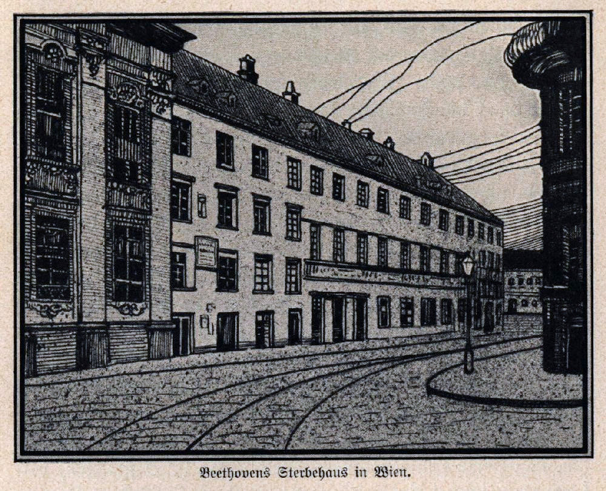
Seinen größten Spaß hatte er, wenn man ihn auf die grammatikalischen Fehler aufmerksam machte, die sich in seinen Werken fanden. »Ich sage, es ist recht,« meinte er dann. Man entgegnete wohl: »Diese Schreibart ist fehlerhaft und nicht erlaubt,« und Beethoven erwiderte: »Nun, so erlaube ich es.«
Er war kein seßhafter Mieter; es duldete ihn nirgends lange; er fühlte sich überall ungemütlich. In fünfunddreißig Jahren wechselte er seine Wohnung vielleicht fünfunddreißigmal. Mit den Wiener Hausmeistern stand er fast immer auf dem Kriegsfuße. Er studierte beständig die Wohnungszettel an den Haustoren, um gleich ein neues Heim zu haben, wenn ihm das alte nicht mehr behagte. Und da er in seiner Stube trommelte und[S. 196] übermäßig brüllte und, seit sein Gehör schlecht geworden war, förmliche Kanonaden am Klavier losließ, da er ferner bei seinen Waschungen solche Überschwemmungen anrichtete, daß das Wasser durch die Fußbodenritzen sickerte, war jedes Haus wieder froh, ihn loszuwerden. Er wohnte immer im höchsten Stockwerk. Sein Zimmer sah sehr wüst aus und ungemütlich; überall lagen Papiere umher und Kleidungsstücke; Koffer standen herum; im übrigen waren die Wände kahl, und es befand sich kaum ein Stuhl im Zimmer. Er trug einen dunklen, langhaarigen, alten Rock, in dem er wie Robinson Crusoe aussah, und in sein Gesicht hing das zottige, pechschwarze Haar. Sein Kopf konnte zuweilen für den eines Jupiter gelten, obwohl er nicht schön war. Beethoven wußte das. »Nun kannst Du mir helfen, eine Frau suchen,« schreibt er einmal einem Freunde; »schön muß sie aber sein, nicht Schönes kann ich nicht lieben — sonst müßte ich mich selbst lieben.«
Er war auch ein großer Tierfreund. Wenn er zum Beispiel sah, daß kleine Jungen auf Schmetterlinge Jagd machten, verscheuchte er immer die Kinder oder verhinderte sie sonst am Fangen der Sommervögel. Dieser Zug hing mit seiner großen Liebe zur Natur zusammen und mit seiner Sehnsucht, allen lebendigen Geschöpfen die Freiheit zu geben. In großartiger Weise hat er beides in seiner sechsten Symphonie zum Ausdruck gebracht, der sogenannten »Pastorale«, in der das freie Landleben in der Natur seine höchste Verherrlichung erfahren hat.
Interessant war seine Freundschaft zum Hofsekretär Zmeskall von Domanovecz durch die äußerst drolligen Briefe, die Beethoven ihm schrieb und von denen wir ein paar zum besten geben wollen, weil sie uns Beethoven auch von der humorvollen Seite zeigen.
I.
»An seine Hochwohl—wohl—wohlgeboren den Herrn von Zmeskall, Kaiserlicher und Königlicher wie auch Königlicher Kaiserlicher Hofsekretair, Seine Hochwohlgeboren, sowie des[S. 197] Herrn von Zmeskall Zmeskalität haben die Gewogenheit, zu bestimmen, wo man sie morgen sprechen kann. Wir sind Ihnen ganz verflucht ergeben.
B.«
II.
»Liebster Baron Dreckfahrer!
Je vous suis bien obligé pour votre faiblesse des vos yeux — übrigens verbitte ich mir inskünftige, mir meinen frohen Mut, den ich zuweilen habe, nicht zu nehmen, denn gestern durch Ihr Zmeskall Domanoveczisches Geschwätz bin ich ganz traurig geworden. Hol' Sie der Teufel, ich mag nichts von Ihrer ganzen Moral wissen; Kraft ist die Moral der Menschen, die sich vor anderen auszeichnen, und wenn Sie mir heute wieder anfangen, so plage ich Sie so sehr, bis Sie alles gut und löblich finden, was ich tue. Adieu Baron, Ba...ron ron, nor, orn, rno, onr.«
III.
»Verfluchter eingeladener Domanetz — nicht Musikgraf, sondern Freßgraf, Dinergraf, Soupergraf etc. — Kommen Sie, wenn Sie der Kanzleigefängniswärter entwischen läßt. Ich esse heute zu Hause des besseren Weines halber. Wenn Sie sich bestellen, was Sie haben wollen, so wäre mir's lieb, wenn Sie auch zu mir kommen wollten, den Wein bekommen Sie gratis und zwar besser wie in dem hundsföttischen ›Schwanen‹. Ihr kleinster Beethoven.«
IV.
»Geliebtester Conte di Musica! Wohl bekomme Euch der Schlaf, und auf heute wünschen wir Euch einen guten Appetit und eine gute Verdauung. Das ist alles, was dem Menschen zum Leben nötig ist, und doch müssen wir das alles so teuer bezahlen. — Darum sind wir, Euer gnädigster Herr, gezwungen, uns herabzulassen und Euch zu bitten um ein Darlehen von fünf Gulden, welches wir Euch binnen einigen Tagen wieder zufließen lassen werden. Lebt wohl, geliebtester musico und conte[S. 198] di musica. Euer wohlaffektionierter Beethoven. Gegeben in unserem Komponier-Kabinett.«
Im Hause des Hofrats von Birkenstock hatte Beethoven auch Bettina Brentano kennen gelernt, damals Braut Achim von Arnims und intime Freundin Goethes. Ihre tief musikalische Natur sehnte sich nach Beethoven. Als sie sich kennen lernten, sang Beethoven ihr das Lied »Kennst du das Land«, zwar mit scharfer und schneidender Stimme, aber mit tiefem Ausdruck. »Aha,« rief Beethoven aus, »die meisten Menschen sind gerührt über etwas Gutes, das sind aber keine Künstlernaturen. Künstler sind feurig, die weinen nicht.«
Von diesem Tage an waren sie täglich zusammen und wurden immer mehr befreundet. Bettina schrieb öfters über ihre Zusammenkünfte mit Beethoven schwärmerische Briefe an Goethe. »O Goethe,« heißt es da einmal, »kein Kaiser und kein König hat so das Bewußtsein seiner Macht, und daß alle Kraft von ihm ausgehe, wie dieser Beethoven.«
1812 machte Beethoven eine Reise nach Teplitz, wo er Varnhagen, Tiedge, Elise von der Recke und andere bedeutende Persönlichkeiten kennen lernte. Und das Jahr darauf, als er wieder in Teplitz weilte, machte er endlich die Bekanntschaft Goethes, mit dem er nun sehr oft zusammenkam. Goethe schrieb an seinen Freund Zelter: »Beethoven habe ich in Teplitz kennen gelernt. Sein Talent hat mich in Erstaunen gesetzt. Allein, er ist leider eine ganz ungebändigte Persönlichkeit, die zwar nicht unrecht hat, wenn sie die Welt verabscheuenswert findet, aber sie freilich dadurch weder für sich, noch für andere genußreicher macht. Sehr zu entschuldigen ist er hingegen und sehr zu bedauern, da ihn sein Gehör verläßt. Er, der ohnehin lakonischer Natur ist, wird es nun doppelt durch diesen Mangel.«
Goethe, der von den im Bade anwesenden Fürsten mannigfache Auszeichnungen erfahren hatte, wollte besonders der Kaiserin seine Ergebenheit bezeigen und riet auch Beethoven, in bescheidener[S. 199] Weise das gleiche zu tun. »Ei was!« antwortete Beethoven, »so müßt Ihr's nicht machen. Ihr müßt ihnen tüchtig an den Kopf werfen, was sie an Euch haben, sonst werden sie's gar nicht gewahr. Ich hab's ihnen anders gemacht.« Und nun erzählte Beethoven, wie ihn einmal der Erzherzog, sein Schüler, habe warten lassen und er darauf fortgegangen sei. Einen Orden könnten sie einem wohl anhängen, könnten einen wohl zum Hofrat machen, aber nicht zum Goethe oder zum Beethoven; davor müßten sie Respekt haben. Und während Beethoven so sprach, kam gerade der ganze Hofstaat an. Beethoven sagte nun zu Goethe: »Bleibt mir in meinem Arm hängen; sie müssen uns Platz machen.« Aber Goethe machte sich los und stellte sich mit abgezogenem Hut an die Seite, während Beethoven mit verschränkten Armen und nur den Hut ein wenig rückend, mitten durch die Hofgesellschaft ging, die sich infolgedessen teilen und ihm Platz machen mußte. Alle grüßten ihn freundlich. Auf der anderen Seite blieb Beethoven stehen und wartete auf Goethe, der sich so lange tief verneigte, bis die Gesellschaft vorübergegangen war. Beethoven sagte: »Auf Euch habe ich gewartet, weil ich Euch ehre und achte, wie Ihr es verdient, aber jenen habt Ihr zu viel Ehre angetan.« Beethoven fand Goethe zu geziert. »Ihm behagt die Hofluft zu sehr; mehr, als es einem Dichter ziemt,« schreibt er an einen Freund.
Ihm widerstrebte alles äußere Wesen; sein ganzes Leben war auf innen eingestellt; er haßte alle Eitelkeit. Deshalb schickte er auch eine Visitenkarte seines Bruders, der ihm zu Neujahr gratuliert hatte und auf welcher zu lesen war »Johann van Beethoven, Gutsbesitzer« zurück und schrieb auf die Rückseite »Ludwig van Beethoven, Hirnbesitzer«.
Und doch war es nicht läppischer Stolz, der ihn zuweilen so hochfahrig erscheinen ließ. »O Gott, gib mir die Kraft, mich zu besiegen,« schreibt er 1812 in sein Tagebuch; »mich darf ja nichts mehr an das Leben fesseln.« Und 1813: »O Gott, Gott,[S. 200] sieh auf den unglücklichen Beethoven herab, laß es nicht länger so dauern.«
Frau Streicher nahm sich seiner häuslichen Verwirrung an, die so groß war, daß Beethoven eines Tages nicht einmal mehr Stiefel zum Ausgehen hatte. Einer seiner Gönner war inzwischen gestorben, und ein anderer, Fürst Lobkowitz, war selber arg verschuldet und in Bedrängnis. »Es ist hart, beinahe um des lieben Brotes willen zu schreiben! So weit habe ich es nun gebracht,« stöhnt Beethoven 1818. Seine Einnahmen standen um diese Zeit in der Tat beinahe im umgekehrten Verhältnis zu seinem Ruhm. Es war eine Ironie des Schicksals, daß Beethoven, der in diesen Jahren sehr viel äußere Bedrängnis auszustehen und der sich von aller Welt verschlossen zurückgezogen hatte, in Wien zu einer Art Sehenswürdigkeit geworden war. Nur wenige Kollegen, Schubert, Liszt und Weber, die ihn besuchten, wurden empfangen. Und zu diesen äußeren Sorgen kamen noch andere.
Seit dem im Jahre 1815 erfolgten Tode seines Bruders Karl nahm Beethoven sich auch dessen unmündigen Sohnes, seines Neffen Karl, an, dessen Vormund und Erzieher er wurde und auf den er alle innige Familienliebe übertrug, die er so viele Jahre zurückgedämmt hatte.
Wegen seines Ehrengehaltes lag er in fortwährenden Streitigkeiten mit den Gerichten, in denen er stets von neuem zu beweisen hatte, daß er noch am Leben sei. Eine besondere Kränkung tat man ihm an, als er in einem Prozesse seinen vermeintlichen Adel erweisen sollte. Tief verletzt zeigte er auf Herz und Kopf und rief »Hier und hier«.
Die Wohnungs- und Dienstmädchensorgen quälten ihn auch nicht wenig. In der Mödlinger Hauptstraße, wo er damals wohnte, komponierte er, wie er selbst sagte, »im Schweiße seines Angesichtes« und schlug, Tag und Nacht arbeitend, mit Händen und Füßen so stark den Takt, daß ihm die Wohnung gekündigt werden mußte.
[S. 201]
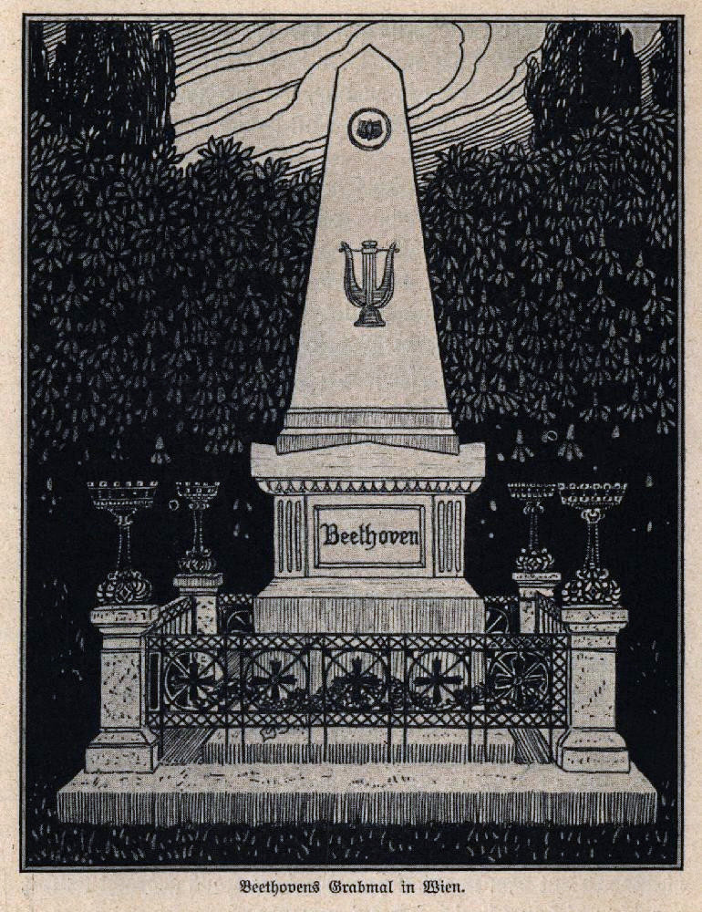
Das Leben schien ihm nun ein Dornenweg; ein Spießrutenlaufen durch tausend Drangsale und alltägliche Plackereien. »Für dich, armer Beethoven, gibt es kein Glück von außen,« lautet nun seine Einsicht. Seine brüske, verbitterte Art zeichnete[S. 202] sich sogar in seiner Handschrift aus, von der Zelter sagte: »Beethoven schreibt immer wie mit einem Besenstiel,« und Beethoven selbst gesteht: »Das Leben ist zu kurz, um Buchstaben und Noten zu malen, und schöne Noten brächten mich schwerlich aus den Nöten.«
Trotzdem bewahrte er sich sein gutes Herz und seine reiche Menschenliebe. Er unterstützte reichlich seine beiden Brüder. Als er erfuhr, daß Deutschland das letzte Kind des großen Musikers Bach hungern ließ, verschaffte er ihm unter vielen Umständen die nötigen Lebensmittel. Für eine herumziehende Musikantengesellschaft, deren Not ihn dauerte, komponierte er einen Walzer und schrieb selbst die Stimmen dazu aus.
Er selbst vernachlässigte sich sehr; sogar in der Kleidung ließ er sich jetzt stark gehen. Seine grauen Haare waren immer unfrisiert, und mit seinem krausen Buschkopf bot er eine auffallende Erscheinung. Als eine Dame einmal ganz entzückt seine schöne Stirn bewunderte, sagte er kurz angebunden: »Nun, so küssen Sie sie!«
Seine große Aufopferungsfähigkeit tritt uns aber in ihrer ganzen Großartigkeit entgegen in dem Verhältnis zu seinem Neffen Karl, dem er sich mit Leib und Seele, mit Gut und Geld widmete; er spielte und tollte mit ihm herum, behütete ihn wie seinen Augapfel und erntete nur Undank. Beethoven wollte den Jungen zum Gelehrten oder Künstler machen; aber der Neffe entlief seinem Onkel, mißachtete ihn, wurde von der Universität entlassen, spielte, flanierte, log, unterschlug Gelder, bis er eines Tages einen mißglückten Selbstmordversuch machte und blutüberströmt dem unglücklichen Onkel ins Haus gebracht wurde, der über diesem Streich fast zusammenbrach.
Ohnehin hatte ein Leberleiden schon begonnen, die Gesundheit Beethovens zu untergraben. Und als die Gelbsuchtsanfälle sich mehrten, dachte er an sein Testament. Als der Neffe von seinem dummen Streich genesen war, wurde er von der[S. 203] Polizei der Stadt verwiesen und zog nach Gneixendorf. Beethoven, der an dem Neffen, den er zum »geliebten Universalerben« bestimmt hatte, mit unverminderter Liebe hing, zog ebenfalls nach dem Dorfe hinaus, wo ihn die Diener und Bauern, die ihm in Flur und Wald begegneten, heftig auslachten, wenn sie ihn gerade beim Komponieren betrafen. Er gestikulierte so stark, daß das Vieh, das ihm begegnete, scheu wurde und die Bauern ihm oft zuriefen: »He! a bissl stader!«
Auf einer Rückreise von Gneixendorf nach Wien mußte Beethoven fiebernd in einem Dorfwirtshause übernachten. An einer Bauchfellentzündung leidend, kam er auf einem Milchwagen, »dem elendesten Fuhrwerk des Teufels«, am 2. Dezember 1826 in Wien an und wurde von Stunde zu Stunde elender.
Beethoven schickt seinen Neffen aus, zwei befreundete Ärzte zu holen, die versagen aber ihre Hilfe, weil ihnen der Weg von der Stadt nach der entfernten Wohnung Beethovens zu weit ist. Beethoven bittet seinen Neffen, andere Ärzte zu besorgen; der leichtsinnige Bursche vergißt aber ganz daran, setzt sich statt dessen in ein Kaffeehaus und spielt Billard. Erst sehr spät fällt ihm der Auftrag des todkranken Onkels wieder ein, aber anstatt wenigstens jetzt selber auf die Suche zu gehen, gibt er seinen Auftrag dem Kellner weiter, der ebenfalls daran vergißt. Drei Tage darauf wird der Kellner zufällig selbst krank und in der Klinik, wohin er gebracht werden muß, erinnert er sich jetzt erst des erhaltenen Auftrags. Jetzt erst erhält Beethoven ärztliche Hilfe. Aber es ist schon zu spät, da bereits Wassersucht eingetreten ist. Dazu kommen noch neue Gemütserschütterungen, und da nächtliche Erstickungsanfälle auftraten, muß der Bauchstich gemacht werden. Beim Anblick des Wassers, das ihm aus dem Leibe läuft, hat er noch so viel Humor, dem Arzt zu sagen, er sei ein wahrer Moses, der mit dem Stabe an den Felsen geschlagen habe, daß das Wasser kam. »Besser Wasser aus dem Bauch, als aus der Feder,« tröstete er sich. Eine Sorge verläßt ihn:[S. 204] der Neffe Karl betritt die militärische Karriere; dafür kommt eine neue Sorge: die militärische Ausstattung des Neffen hat sehr viel gekostet, und es ist Geldnot eingetreten. Die Krankheit zieht sich in die Länge, obwohl Beethoven schon zum drittenmal operiert worden ist. Und von allen Bekannten kümmert sich fast niemand um ihn, außer den allernächsten Freunden. Und nun nähert sich Beethoven immer mehr seinem irdischen Ende. Am 23. März empfängt er die Sterbesakramente. Tags darauf beginnt der Todeskampf.
Am 26. März 1827 blieb die kleine Pyramidenuhr, ein Geschenk der Fürstin Lichnowsky, stehen, und noch heute soll diese Uhr, so oft ein Gewitter naht, stehnbleiben. Gegen fünf Uhr toste mit gewaltigem Donner, Schnee und Hagelschlag mitten im Winter ein Unwetter heran. Nur Beethovens Schwägerin, Frau van Beethoven, und ein junger Schüler Beethovens waren im Sterbezimmer anwesend. Plötzlich wurde das Zimmer durch einen Blitz grell beleuchtet. Der Sterbende öffnete weit die Augen, erhob die rechte Hand und blickte mit drohender Miene starr gen Himmel. Dann sank er zurück. Der Recke war tot.
Seinem Leichenbegängnis folgte keine Gattin, nach der er sich so oft gesehnt hatte und kein eigenes Kind. An seinem Grabe weinte die ganze Welt. Zwanzigtausend Menschen folgten dem Sarge, und alle Schulen waren geschlossen.
In Orange in New Jersey, inmitten eines Netzes elektrischer Leitungen, erhebt sich ein von weiten, einsamen Gärten umgebenes Haus. Die Front gebietet über einen großen Rasenplatz, der von kiesbestreuten Wegen durchkreuzt ist und sich bis zu einem pavillonartigen Gebäude hinzieht. Dieser[S. 205] Pavillon ist rings von einer Reihe sehr bejahrter hoher Bäume beschattet.
Hier wohnt Thomas Alva Edison, der Mann, der das Echo gefangennahm, der fast taube Zauberer so vieler Wunderdinge, die geschaffen sind, um dem Ohr ein Fest zu bereiten.
An einem Herbstabend der letzten Jahre geschah es, daß Edison sich in das Innere seines Privatlaboratoriums zurückzog. In seinem bequemen amerikanischen Klubsessel saß er mit aufgestützten Ellbogen allein, eine Havanna rauchend, obwohl er sonst nicht rauchte, weil der Tabak große Pläne so leicht in Träumereien zerfließen läßt. Von seinem bereits sagenhaft gewordenen Gewand umhüllt, dem schwarzseidenen Umhang mit den violetten Quasten, sah er zerstreut vor sich hin und schien in tiefe Betrachtung versunken.
Die Tische waren übersät mit tausenderlei Instrumenten, Räderwerken, geheimnisvollen Mechanismen, elektrischen Apparaten, Teleskopen, Reflektoren, Magneten, Retorten, Phiolen und Tafeln, die mit Zahlen bedeckt waren.
Die untergehende Sonne beleuchtete die von Ahorn- und Tannenbäumen bestandenen Hügel von New Jersey, und hin und wieder wurde das Gemach blitzartig von aufglühenden elektrischen Funken erhellt.
Der Wind wehte kühler; ein Gewitter hatte am Nachmittage die Luft durchfeuchtet, und die Blumen vor dem Fenster schickten nun ihre schweren Düfte herein. Ihr betäubendes Aroma ermattete die lebhaften Gedanken Edisons, und unbewußt wurde er von dem Reiz der Dämmerung eingefangen ...
Im Februar des kommenden Jahres wurde er sechzig Jahre alt und es reizte ihn nun, gleichsam am Vorabend des Greisenalters, über sein mühseliges, leidensvolles Leben nachzudenken ... all die mühseligen Wege, die er gehen mußte, ehe er als der größte Erfinder auf dem Gebiet der Elektrotechnik allgemein anerkannt war, in Gedanken zu gehn.
[S. 206]
Er sah das Bild Milans vor sich, seiner Geburtsstadt im nordamerikanischen Ohio, in der er am 11. Februar 1847 zur Welt kam.
Väterlicherseits stammte Edison aus einer alten holländischen Müllersfamilie, die ungefähr um 1737 in Nordamerika eingewandert war. Er sah im Geiste den Vater vor sich, wie er in Milan einen schwunghaften Getreide- und Holzhandel betrieb, an dem er zum wohlhabenden Manne wurde. Und sah die, ach, nun tote Mutter, eine Kanadierin, die von einer eingewanderten schottischen Familie abstammte und eine vorzügliche Erziehung genossen hatte. Vor ihrer Heirat war sie Lehrerin gewesen, um später ihren Beruf auch am jungen Edison auszuüben. Das blühende Geschäft hatte den Eltern die Möglichkeit eines behaglichen Lebens gegeben und die Hoffnung einer sorglosen Zukunft. Die Eltern liebten ihren Thomas Alva mit großer Zärtlichkeit! Wie machten sie ihm seine Kinderjahre zu Jahren sonniger Freude!
Aber Glück ist wandelbar und nicht von langer Dauer. Der Eisenbahnbau begann, um dem Handel einen neuen Weg zu eröffnen. Es begann ein tolles Hämmern und Schmieden. Aber durch diese Eisenbahn wurde der Kanalverkehr des Ohio lahmgelegt, dem der Vater hauptsächlich seine Einnahmen verdankte. Das Geschäft des Vaters ging zurück, und als gar noch eine allgemeine finanzielle Krisis hereinbrach, ging des Vaters Betrieb vollkommen zugrunde, so daß die Familie sich plötzlich allen Bitternissen der Armut gegenübergestellt sah. Aber nur das Geschäft brach zusammen, nicht auch der Vater, der vielmehr mit zäher ungebrochener Energie daranging, sich im Port Huron im Staate Michigan ein neues Heim zu gründen und mit erstaunlicher Arbeitskraft sein Leben von neuem aufzubauen. Thomas Alva war damals sieben Jahre alt. Er hatte bereits angefangen, in die Schule zu gehn, als schon sein erster Unterricht durch diese Umsiedelung gestört und gehemmt wurde. In[S. 207] Port Huron wurde er nun, um das Schulgeld zu sparen, nicht mehr in die Schule geschickt; die Mutter übernahm vielmehr selbst die weitere Ausbildung des Knaben. Die lehrte ihn schreiben, lesen und rechnen und diese gemeinschaftliche Arbeit schuf ein sehr inniges Verhältnis zwischen Mutter und Sohn. Wie spornte sie immer seinen Wissenseifer an und gab seiner Phantasie reiche geistige Nahrung.
Aber auch in Port Huron ging das Geschäft des Vaters nicht recht vorwärts; die Familie blieb arm. Es war aus mit den sorglosen Jahren der Kindheit; die Spielzeit war vorbei. Schon als Zwölfjähriger mußte der junge Edison daran denken, etwas mitzuverdienen. Er nahm eine Stelle als Zeitungsjunge an der Eisenbahn an, die Port Huron mit Detroit verbindet.
Und Edison sieht im Geiste rückwärts; sieht, wie er zwischen diesen beiden Stationen täglich hin und her fährt, während der Fahrt von Wagen zu Wagen wandert, um den Reisenden Zeitungen, Süßigkeiten, Früchte und andre Erfrischungen anzubieten, wodurch er sich eine bescheidene tägliche Einnahme sichert, die er zum größten Teil seinen Eltern bringt. Die Stunden, die zwischen der Ankunft des Zuges in Detroit und seiner Abfahrt liegen, bringt er damit zu, seine Geschäftsgänge zu besorgen, seine Zeitungsexemplare einzukaufen und in der Volksbibliothek zu arbeiten, deren viele tausend Bände gewissenhaft durchzulesen er sich ernsthaft vorgenommen hat. Er liest tatsächlich auch die Bücher, wie sie ihm gerade zur Hand kommen, der Reihe nach wahllos durch, und als er schon eine Strecke von fünfzehn Fuß weggelesen hat, wird die Bibliothekleitung endlich auf sein Vorhaben aufmerksam und lenkt seine Lesewut in die richtigen Bahnen. Unter den bereits verschlungenen Büchern befanden sich recht schwierige Werke; zum Beispiel Gibbons »Verfall und Untergang des römischen Reiches«, Humes »Geschichte Englands« und »Die Geschichte der Reformation«, Burtons »Anatomie der Melancholie« und andre Bücher.
[S. 208]
Auf der hundert Kilometer langen Bahnstrecke Port Huron-Detroit war der junge Edison bald eine sehr bekannte und beliebte Person. Aber wichtiger war für ihn, daß er sich auch die Zuneigung des Bahnpersonals erwarb. Denn er hatte es in erster Reihe dem Personal zu danken, daß man ihm das ausschließliche Recht des Zeitungsverkaufs auf den Lokalzügen der genannten Strecke zubilligte; außerdem hatte man ihm noch einen alten ausrangierten Gepäckwagen zur Verfügung gestellt, der gewöhnlich leer im Zuge mitlief.
Welche wundervollen Stunden hat er in diesem Rumpelwagen erlebt! Schon als dreizehnjähriger Knabe hatte Edison große Freude an chemischen Experimenten, und so häufte er in der einen Hälfte des Wagens allerhand Apparate und Flaschen mit Chemikalien an und gestaltete ihn zu einem kleinen chemischen Laboratorium um, während er in der andren Hälfte seine Zeitungen, Fruchtkörbchen und andere Handelsartikel aufbewahrte.
Über seinen chemischen Versuchen vergaß er aber nicht, seinen Geschäften nachzugehen; im Gegenteil, seine Tätigkeit war, wie bei allen Amerikanern, auf Gewinn und Erwerb gerichtet. Er kaufte gewöhnlich zweihundert Zeitungsexemplare; zuweilen hätte er aber auch dreihundert verkaufen können. Als er nach der Ursache dieses schwankenden Verkaufs forschte, bemerkte er bald, daß sich der Absatz nach der Wichtigkeit und Sensation der aktuellen Vorgänge richtete, und er war nun so schlau, ehe er seine Exemplare kaufte, jedesmal die Überschriften der Zeitung erst rasch zu überfliegen und sie gleichsam auf ihre sensationelle Wirkung hin zu prüfen. Und danach bemaß er dann auch ganz seinen Bedarf. Um jene Zeit war gerade der große Krieg zwischen den Nord- und Südstaaten ausgebrochen, und das reisende Publikum war nach den neuesten Nachrichten stets sehr begierig.
Eines Tages las Edison auf der Probenummer der Zeitung in Riesenlettern eine Überschrift, die eine große Schlacht mit fünfzigtausend Toten und Verwundeten ankündigte. Blitzartig[S. 209] durchfuhr ihn der Gedanke, daß ihm der Verkauf dieser Zeitungsnummer großen Gewinn bringen könnte, wenn es ihm gelänge, die Aufmerksamkeit der Reisenden längs der ganzen Zugstrecke rechtzeitig auf diese große Neuigkeit hinzulenken. Schon hatte er einen fertigen Plan im Kopf. Er eilte zur Telegraphenstation und bestimmte einen ihm bekannten Beamten ein kurzes Telegramm über eine große Schlacht mit fünfzigtausend Toten und Verwundeten abzusenden, mit der Bitte, diese Depesche an der schwarzen Tafel, auf der gewöhnlich die Verspätungen der Züge angezeigt wurden, mit Kreide anzuschreiben. Edison erbot sich, dem Beamten für diesen Dienst ein halbes Jahr lang unentgeltlich eine täglich erscheinende Abendzeitung und zwei Journale zu liefern, eine Wochen- und eine Monatsschrift. Der Beamte ging auf den Vorschlag ein und versprach, das Telegramm rechtzeitig abzusenden. Nun galt es noch, eine möglichst große Anzahl Zeitungsexemplare zu erhalten. Geld hatte Edison nicht, und als er sich an den Vorsteher der Speditionsabteilung mit der Bitte wandte, ihm tausend Exemplare auf Kredit zu überlassen, wurde ihm das rundweg abgeschlagen. Viel Zeit war bis zum Abgang des Zuges nicht mehr zu verlieren; kurz entschlossen wandte sich Edison an den Eigentümer der Zeitung selbst, sagte ihm, wer er sei und bat um fünfzehnhundert Exemplare, die er am nächsten Tage bezahlen wollte. Der Besitzer der Zeitung, ein hagerer ernster Mann, musterte den kecken vierzehnjährigen Zeitungsboy einen Augenblick, kritzelte einige Worte auf einen Zettel und gab ihn Edison mit den Worten: »Trag's hinunter, und du wirst erhalten, was du wünschest.« Niemand war glücklicher als Edison. Im Triumph trug er seinen schweren Ballen Zeitungen fort, faltete und legte sie noch auf der Straße mit Hilfe einiger Knaben zurecht und lief zu seinem Zuge. Jetzt hatte er nur noch die eine Sorge, ob der Telegraphenbeamte auch Wort gehalten hatte. Denn davon hing ja der glückliche Ausgang seines Unternehmens ab.
[S. 210]
Und wie dann der Erfolg seine Erwartungen bei weitem übertraf! Wie er schon, als der Zug auf der ersten Station Utica einlief, eine Menge Menschen auf dem Bahnsteig herumstehen sah, die, durch sein Telegramm neugierig gemacht, ungeduldig die Ankunft des Zuges erwarteten, um genauere Nachrichten über die große Schlacht zu erhalten. Wie er nun einen Arm voll Zeitungen nahm, aus seinem Güterwagen sprang und im Nu vierzig Exemplare zu zwanzig Pfennig (fünf Cent) abgesetzt hatte, während er sonst an dieser Station kaum zwei Exemplare loswerden konnte. Auf der nächsten Station, Mount Clemens, war noch eine größere Menschenmenge versammelt. Jetzt hatte er vierzig Pfennig für das Exemplar gefordert und hatte trotzdem hundertfünfzig Stück verkauft. Ähnlich ging es auf den folgenden Stationen. Am tollsten war es aber auf der Endstation Port Huron, wo Edison zu Hause war. Als er hier mit den letzten paar hundert Exemplaren, die ihm geblieben waren, sich auf den Weg zur Stadt machte, die anderthalb Kilometer entfernt lag, kam ihm unterwegs ein großer Schwarm aufgeregter Menschen entgegen, die ebenfalls durch sein schlaues Manöver in höchste Erregung versetzt worden waren. Sie riefen alle nach Zeitungen und Edison verkaufte ihnen einen großen Teil, das Exemplar zu einem Vierteldollar (mehr als eine Mark). Die Nachricht, daß der kleine Edison mit den neuesten Depeschen vom Kriegsschauplatze kam, verbreitete sich mit Windeseile nach der Stadt, und Edison sah sich genötigt, auf den Stufen, die zur Tür einer Kirche emporführten, Posto zu fassen, um sich des Andranges zu erwehren. Der Gottesdienst sollte gerade beginnen, aber die Türen waren noch offen, daher strömten die Menschen heraus, und es entstand ein tolles Wettbieten auf die letzten hundert Exemplare der kostbaren Zeitungsnummer.
Mit einem kleinen Vermögen kam Edison am Abend nach Hause, wo er seinen Eltern von der gelungenen Unternehmung berichtete und ihnen den größten Teil seines Gewinnes einhändigte.
[S. 211]
Der glückliche Ausgang dieser kleinen Spekulation blieb auf die Entwicklung Edisons nicht ohne starken Einfluß. Zunächst stärkte sich sein Selbstvertrauen, sein Unternehmungsgeist wurde angeregt, so daß der Vierzehnjährige Geschäftsunternehmungen wagt, die von seinen außerordentlichen Anlagen beredtes Zeugnis ablegen. Er verdankte ja sein kleines Vermögen jenem Telegramm, und so war es ganz natürlich, daß die Telegraphie und ihre gewaltige Bedeutung für den Verkehr ihn besonders lebhaft interessieren mußte. Er vernachlässigte nun die Chemie auf Kosten der Elektrizität, über deren geheimnisvolle Kraft er in der folgenden Zeit alles zusammenlas, was ihm nur erreichbar war. Er kaufte und verfertigte sich elektrische Apparate, um selbst elektrische Versuche anstellen zu können.
Inzwischen war er rastlos bemüht, aus seinem Zeitungsverkauf möglichst großen Gewinn zu ziehen, denn ohne Geldmittel war es ihm nicht möglich, seine Kenntnisse zu erweitern. Er dachte sogar daran, selbst eine kleine Zeitung herauszugeben, um seine Einnahmen zu vermehren und, die Tat dem Gedanken gleich folgen lassend, ging er sofort an die Ausführung. Für wenig Geld hatte er bald eine alte ausrangierte Presse und einen Satz alter Typen erworben, die er nach seinem Gepäckwagen schaffte, wo er denn auch seine Versuche begann. Das Setzen und Drucken hatte er in der Druckerei, von der er bisher die Zeitung bezog, den Arbeitern abgesehen; trotzdem kostete es ihn freilich unendliche Mühe und manche schlaflose Nacht, bis er den Reisenden seiner Strecke seine eigene kleine Zeitung, die er »Grand Trunk Herald« nannte, zu drei Cent das Exemplar verkaufen konnte. Sie erschien einmal wöchentlich und kostete im Monatsabonnement acht Cent (zweiunddreißig Pfennig); jedenfalls war es das einzige Journal der Welt, das den Namen einer Eisenbahnzeitung mit Fug und Recht trug, da sie im Eisenbahnzuge selbst fertiggestellt wurde. Der vierzehnjährige Edison war sein eigener Redakteur, Setzer, Drucker und Zeitungsjunge.[S. 212] Ehe die erste Nummer aber erschien, machte der diplomatische Junge einem der Generaldirektoren der Bahnlinie einen Besuch und bat ihn um die Ehre, sein erster Abonnent zu werden. Seine Bitte wurde erfüllt und überdies bedachte man ihn mit einem kleinen Geldgeschenk. Unter dem Bahnpersonal selbst gewann er eine stattliche Zahl Abonnenten, und auch zahlreiche Reisende kauften die Zeitung, so daß er in kurzer Zeit vierhundert Abonnenten zählte. Ihr Inhalt bestand meist aus Lokalnotizen, Bahnerlebnissen, Zugverbindungen, Verkehrsneuigkeiten, wichtigen Familienereignissen und Inseraten. Um neue Leser anzulocken, erhielt jeder Abonnent seine Zeitung mit aufgedrucktem Namen. Die weltberühmte Londoner Zeitung, die »Times«, würdigte dieses Edisonsche Blättchen sogar einer Besprechung, und der große Erfinder der Lokomotive, Stephenson, bestellte eine Spezialausgabe dieser Zeitung für sich allein.
Edisons Einnahmen wuchsen; seine Arbeit wurde freilich auch immer größer, so daß er endlich mehrere junge Burschen als Gehilfen anstellen mußte. Nun konnte er seinen Eltern bereits einen Monatsgewinn von vierzig Dollar (hundertundsiebzig Mark) abliefern.
Trotz dieses günstigen Resultates war er nicht zufrieden; er wollte seine Zeitung auf ein höheres Niveau erheben, sie fesselnder gestalten. Und so gab er mit einem gleichalterigen Kameraden eine neue Zeitung heraus, »Paul Pry« benannt, nach einer bekannten Lustspielfigur, die einen neugierigen, umherspähenden, spionierenden Charakter hatte. Die neue Zeitung war in jeder Beziehung der alten überlegen. Allein, da er selber noch ein Knabe war, teilte Edison oft auch knabenhafte Torheiten mit und wurde bei der Mitteilung mancher Neuigkeiten übermütig und ausfallend. So geschah es, daß ein Leser der Zeitung sich und sein peinliches Erlebnis eines Tages selbst lächerlich gemacht sah; in höchste Wut versetzt, lauerte der herkulische Mensch dem jungen Edison auf und schleuderte ihn kurzerhand in den St. Clairfluß.[S. 213] Edison konnte aber gut schwimmen und rettete sich glücklich ans Ufer; jedoch machte das unfreiwillige Bad dem »Paul Pry« rasch ein vorzeitiges Ende.
Kurze Zeit nach diesem unglücklichen Abenteuer fiel in dem alten rumpligen Gepäckwagen, der nicht auf Federn ruhte, durch die heftigen Stöße der Lokomotive eine Flasche Phosphorlösung um. Sie explodierte und der Wagen geriet in Brand. Das Feuer wurde zwar mühelos gelöscht, aber der Zugführer hatte schon längst nach einer Gelegenheit gesucht, den kleinen Edison loszuwerden, der in dem alten Wagen fürchterlich dünstende chemische Versuche anstellte und mit den Druckpressen einen schrecklichen Radau vollführte. Der Zugführer ließ nun sofort alle Habseligkeiten Edisons rücksichtslos ausräumen, verbot ihm die weitere Benützung des Gepäckwagens und gab ihm noch obendrein ein paar so mächtige Ohrfeigen, daß Edison das Trommelfell des einen Ohres platzte, auf dem er zeitlebens taub blieb.
Edison rückte sich im Sessel zurecht und faßte unwillkürlich an das taube Ohr. Er hatte viel gelitten darum. Ganz in seinen Erinnerungen lebend, fühlte er noch jetzt, nach fünfundvierzig Jahren, die Hand des brutalen Zugführers in seinem Antlitze brennen. Überwältigt von Schmerz und Scham mußte er damals zusehen, wie der Zugführer abdampfte. Und Edison stand mit seinen zerbrochenen Gläsern, Retorten und Apparaten heulend auf dem Bahnsteig.
Der Verlust seines geliebten Laboratoriums war ein schrecklicher Schlag für Edison. Die höchste Verzweiflung hatte ihn gepackt. Seine Mutter tröstete ihn und räumte ihm den Wohnungskeller ein, in dem er seine Versuche fortsetzen konnte. Der Gepäckwagen war ihm nun entzogen, seine Stellung als Zeitungsjunge konnte man ihm aber nicht nehmen. Und so fuhr er denn, wie in den ersten Tagen, zwischen Detroit und Port Huron hin und her, um wieder seine alte Zeitung zu verkaufen. Die freie Zeit, die ihm blieb, verwandte er auf elektrische Versuche, denen[S. 214] von nun ab sein Hauptinteresse gehörte. Zunächst wollte er eine telegraphische Anlage bauen. Er hatte sich ein Buch über Telegraphie gekauft, das er eifrig studierte. Aus gewöhnlichem Eisendraht stellte er nun eine Leitung her, die sein Haus mit dem eines Kameraden verband und mittels eines alten Kabelstückes, das er im Fluß gefunden hatte, wurde diese Leitung »unterführt«. Zwei riesige Katzen wurden beschafft, deren rückwärts geriebenes Fell als elektrische Stromquelle dienen sollte. Diese kindlichen Versuche hatten aber kein anderes Ergebnis, als daß die Katzen, die keine Lust hatten, Reibungsversuche an sich machen zu lassen, die beiden Knaben bös zerkratzten und übel zurichteten.
Das Mißlingen spornte Edison aber zu neuen Versuchen an. Er kaufte, indem er sich selbst große Entbehrungen auferlegte, allerhand alte elektrische Apparate und Elemente und setzte seine Versuche mit einer Ausdauer fort, die den Kameraden oft zur Verzweiflung brachte. Schmerzlich war es inmitten all dieser Versuche für Edison, daß er die Kunst des Telegraphierens nicht beherrschte. Ein Zufall kam ihm jedoch auch hier glücklich zustatten. Der Zug, auf dem Edison Zeitungsjunge war, hatte auf der Station Mount Clemens gewöhnlich eine halbe Stunde Aufenthalt, um Rangierungen vorzunehmen und einen Güterwagen abzustoßen. Edison schlenderte mit seinen Zeitungen am Zuge entlang, als er plötzlich gewahrte, daß der kaum dreijährige Sohn des Stationsvorstehers ahnungslos auf dem Gleise spielte, auf dem der abgestoßene Güterwagen eben ziemlich rasch herangerollt kam. Voller Geistesgegenwart schleuderte Edison seine Zeitungen fort, war mit einem Satz an der gefährlichen Stelle und hatte gerade noch Zeit, sich mit dem Jungen auf die andere Seite zu werfen. Im nächsten Augenblick erhielt Edison auch schon am Stiefelabsatz vom Wagen einen heftigen Stoß, der den jungen Lebensretter darüber belehrte, in welcher großen Todesgefahr beide geschwebt hatten. Beide waren, vornüberstürzend, mit dem Gesicht so heftig auf einen Kieshaufen aufgeschlagen,[S. 215] daß sich die kleinen Steinchen tief ins Fleisch gebohrt hatten. Aber diese Verletzungen waren ungefährlich, und die glücklichen Eltern wußten nicht, wie sie dem fünfzehnjährigen Lebensretter danken sollten. Der Stationsvorsteher Mackenzie war arm und lebte nur von seinem knappen Gehalt. Da er aber Edisons Neigungen kannte, erbot er sich, ihm die Kunst des Telegraphierens beizubringen, die Edison weit höher einschätzte, als eine Geldbelohnung, und so wurde Edison zu einem Telegraphisten ausgebildet. Er konnte für dieses Studium freilich nur die Nachtstunden benützen, da er tagsüber mit dem Zeitungsverkauf zu tun hatte. Trotzdem machte Edison bei seinem rastlosen Eifer so rasche Fortschritte, daß er schon nach vierzehn Tagen dem Stationsvorsteher einen vollständigen Satz telegraphischer Apparate vorlegen konnte, die er in einer Büchsenmacherei selbst angefertigt hatte. Trotzdem die Apparate auf einem Briefkuvert Platz hatten, funktionierten sie doch vortrefflich. Und praktisch wie Edison war, legte er auch gleich eine eigene Telegraphenlinie an, um Port Huron mit dem Bahnhof zu verbinden, der anderthalb Kilometer entfernt lag. Er nagelte einfach ausgeglühten Eisendraht mit gewöhnlichen Nägeln an die Pfosten einer hölzernen Einfriedigung. Das Telegramm kostete fünfzig Pfennig (zwölfeinhalb Cent). Bei trockenem Wetter arbeitete die Linie exakt; bei feuchtem war aber die Isolierung zu schlecht. Allein, da im ersten Monat nur drei Depeschen aufgegeben wurden, suchte Edison anderweitige und lohnendere Beschäftigung.
Als Eingeweihter in telegraphische Geheimnisse, wurde er nun ständiger Besucher der Telegraphenämter. Er war sehr beliebt und benutzte jede Gelegenheit, um seine Kenntnisse zu vertiefen. Nach drei Monaten hatte er es denn zu einer größeren Vollkommenheit gebracht als sein Lehrer; er war vorbereitet genug, um die Stelle eines Telegraphisten ausfüllen zu können. Er verließ endlich, von der größten telegraphischen Gesellschaft Nordamerikas noch um neunzig Mark Gehalt betrogen, seine[S. 216] Heimatstadt zum ersten Male, um im kanadischen Stratford einen Posten als Telegraphist anzunehmen, den ihm der Stationsvorsteher Mackenzie verschafft hatte.
Und nun begann eigentlich erst für Edison die Zeit der wechselvollen Erlebnisse, der mühseligen Arbeit, der schweren Enttäuschungen und der großen Entbehrungen, die keinem erspart bleiben, der Großes erreichen und Bedeutendes schaffen will. Es begann für Edison die Zeit, in der sein Genie auf harte, aber kräftigende Proben gestellt wurde.
Er bezog ein monatliches Gehalt von fünfundzwanzig Dollar und hatte schweren Nachtdienst, denn sein Vorgesetzter war hart und unnachsichtig. Um die Wachsamkeit seiner Telegraphisten kontrollieren zu können, hatte er die Vorschrift erlassen, daß jeder alle halbe Stunde das Wort »six« telegraphieren solle. Nun hatte Edison die Gewohnheit, in seiner dienstfreien Zeit die Telegraphenbureaus in der Umgebung von Stratford zu besuchen, und er machte oft so weite Ausflüge, daß er gerade noch knapp zu seinen Dienststunden eintraf. Die Folge war, daß er des Nachts sehr müde war, und daß ihm die Innehaltung des Kontrollzeichens sehr lästig wurde. Er kam daher auf den Gedanken, diese Arbeit durch einen »anderen« verrichten zu lassen, nämlich durch die Uhr. Er befestigte an der Uhr ein kleines Rad, das bestimmte Einschnitte hatte; dieses Rad schaltete er mittels Drähte in den Stromkreis des Telegraphenapparates ein und ließ auf diese Weise die Uhr alle halbe Stunden das verlangte Wort telegraphieren. Das ging eine Zeitlang ganz gut, bis man bemerkte, daß, sobald das Wort »six« telegraphiert war, einige Buchstaben nicht telegraphiert werden konnten. Man untersuchte den Fehler und entdeckte Edisons arbeitsparende Vorrichtung, die sofort beseitigt wurde. Und fast wäre Edison selber »beseitigt« worden. In dieser Vorrichtung lag aber schon die Grundidee zu dem späteren Distrikttelegraphen Edisons, der patentiert und verkauft wurde.
[S. 217]
Weniger glücklich verlief ein anderer Vorfall, bei dem sich Edison grobe Pflichtversäumnis hatte zuschulden kommen lassen. Es gehörte zu seinen Obliegenheiten, gewissen ankommenden Nachtzügen je nach der Anweisung des Zugabfertigers das Signal zum Halten oder zum Weiterfahren zu geben. Eines Nachts sollte er einen ankommenden Güterzug auf einer Station halten lassen; Edison telegraphierte aber dem Abfertiger die Ankunft des Zuges, bevor er wirklich eingelaufen war, und entfernte sich, um spazierenzugehen. Er glaubte noch rechtzeitig zurücksein zu können; aber der Zug war schon früher da, als Edison angenommen hatte und, da der Zugführer infolge der Abwesenheit Edisons keinen Befehl zum Halten vorfand, war er wieder weitergefahren. Edison wollte nun zum nächsten Güterschuppen eilen, wo die Nachtgüterzüge zu halten pflegten, um Frachtstücke ein- und auszuladen; aber in der Dunkelheit fiel er in eine Grube, aus der er sich nur schwer herausarbeiten konnte. Und als er zerschunden und atemlos an dem Schuppen angekommen war, war es wieder zu spät. Er stürzte wieder zur Station zurück und schickte eine Depesche nach der nächsten Station, aber auch diese kam schon zu spät, und wenn nicht die beiden Lokomotivführer sehr achtsam gewesen wären, hätte es unvermeidlich zu einem Zusammenstoß kommen müssen. Als der Betriebsdirektor diese Geschichte erfuhr, lud er den Sechzehnjährigen vor sich, um ihm zu erklären, daß er ihn unbarmherzig auf fünf Jahre ins Gefängnis schicken werde. Aber während Edison gerade das trübe Schicksal seiner nächsten Zukunft erfuhr, kamen zwei Freunde des Direktors zu Besuch, die ihn sofort in eine Unterhaltung zogen, und diese hochwillkommene Ablenkung benutzte Edison, um auszureißen. Mit dem nächsten Zuge reiste er, wie er ging und stand, nach Port Huron zurück.
Edisons Genie sollte sich auch hier bewähren. Der Winter war sehr hart gewesen, und als nun im Frühjahr das mächtige Treibeis des Huron-Sees herankam, zerriß es das Kabel zwischen[S. 218] Port Huron und der jenseits des mächtig breiten Flusses liegenden Stadt Sarnia. Der Verkehr war sehr gestört, die Herstellung des Kabels war unmöglich. Völlig ratlos wandte man sich an Edison, der sich auf die Weise zu helfen wußte, daß er mit einer Lokomotive dicht an den Fluß heranfuhr und nun mit der Signalpfeife ein Telegramm hinüber»pfiff«. Mit kurzen Tönen ahmte Edison die Punkte, mit langgezogenen die Striche des Morse-Alphabets nach. Und er pfiff die Frage in den Nebel hinaus: »Hallo, Sarnia, hörst du mich?« Und nachdem er das Signal mehrere Male vergeblich hatte ertönen lassen, wurde man endlich am jenseitigen Ufer doch aufmerksam, erkannte die Bedeutung der schrillen Pfiffe und die Telegraphisten antworteten auf dieselbe Weise die Antwort zurück. So war die Verbindung wiederhergestellt.
Diese findige Leistung machte Edison bekannt, und es fiel ihm deshalb auch nicht schwer, eine Stellung als Telegraphist zu finden. Aber da er viel unter Neid und Klatschsucht zu leiden hatte, und seine Dienstvorschriften öfters verletzte, weil er unermüdlich seinen eigenen Untersuchungen nachhing, mußte er seinen Aufenthaltsort oft wechseln. So taucht der Siebzehnjährige in Adrian auf, in Fort Wayne, Indianopolis, Cincinnati und Memphis. In Indianopolis gelang ihm auch seine erste Erfindung, der selbsttätige Wiedergeber, der die Tätigkeit des Telegraphisten überflüssig machte. Er hatte die Telegramme, die mit einer Geschwindigkeit von fünfzig Worten in der Minute einliefen, für die Presse wortgetreu wiederzugeben und hatte sich nun einen Apparat konstruiert, der das mit einer Geschwindigkeit von dreißig Worten in der Minute erledigte. Er hielt die Vorrichtung zwar geheim; aber eines Tages, da sein Apparat, wo es sich um die Wiedergabe einer äußerst wichtigen Gesetzesvorlage handelte, allzusehr im Rückstande blieb, wurde dieser geniale Betrug entdeckt und Edison wurde auf der Stelle entlassen.
[S. 219]
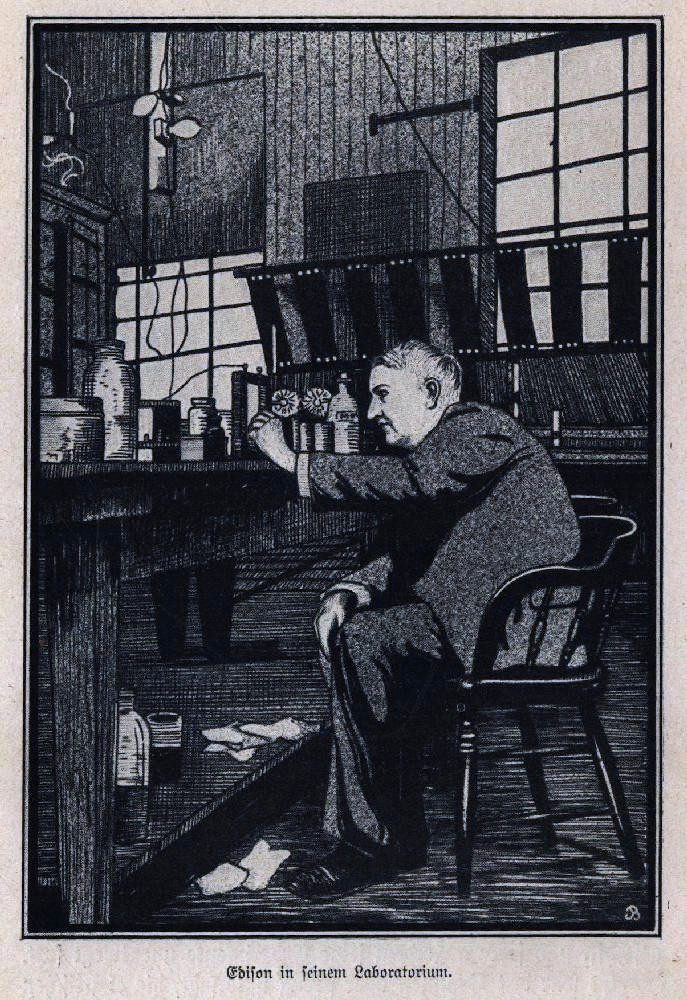
[S. 220]
Er begab sich nach Cincinnati, wo er sechzig Dollar im Monat verdiente und durch aufopfernden Pflichteifer bald auf hundertundfünf Dollar stieg, wanderte aber bald darauf nach Memphis, wo die Telegraphisten hundertundfünfundzwanzig Dollar (fünfhundert Mark) im Monat verdienten. Der Betriebsdirektor quälte sich vergeblich damit ab, eine Erfindung zu machen, durch welche New York und New Orleans in direkte telegraphische Verbindung treten konnten und als dies dem jungen Edison, unter Anwendung seiner in Indianopolis gemachten Erfindung, nach kurzer Zeit gelungen war, wurde der Direktor von solchem Neid erfaßt, daß er eine falsche Anklage gegen Edison erhob, die zu seiner Entlassung führte.
Jetzt traf ihn aber seine Entlassung höchst ungünstig. Edison hatte eben einen großen Teil seines Gehalts — wie immer — den Eltern geschickt. Er war vollständig mittellos und da er nie viel Wert auf seine äußere Erscheinung gelegt hatte, stand es auch um seine Kleidung sehr schlecht. Überdies war der Winter vor der Tür. Edison faßte trotzdem Mut und wanderte wie ein Handwerksbursche mehrere hundert Kilometer zu Fuß nach Louisville. Halbtot vor Hunger und Kälte und Überanstrengung, mit Stiefeln ohne Sohlen, mit einem Strohhut auf dem Kopf und in dünner, fadenscheiniger Sommerkleidung stapfte Edison in den schnee- und eisbedeckten Straßen von Louisville umher, sich nach dem Telegraphenamt hinfragend, wo er um eine Anstellung bat. Und als der zerlumpte Bettler eine Probe seiner Geschicklichkeit gegeben hatte, erhielt er auch Beschäftigung.
Bis zu seinem neunzehnten Jahre blieb Edison in Louisville. Er brachte es hier in der Kunst der Depeschenübertragung bis auf fünfundvierzig Worte in der Minute. Inzwischen hatte er sich auch eine ganze Bibliothek über elektrische Studien angeschafft und setzte außerdem seine Experimente unentwegt fort.
Es war den Beamten aber streng untersagt, die elektrischen Batterien und Elemente anzurühren. Eines Nachts hatte Edison[S. 221] etwas Schwefelsäure nötig und ging ins Batteriezimmer, sie zu holen. Dabei verschüttete er ein Teil der Säure, die durch den Fußboden drang und im darunter liegenden Zimmer des Direktors Schreibtisch und Teppich zerstörte. Der aufgebrachte Vorgesetzte jagte Edison davon. Er ging zu seinen Eltern, blieb anderthalb Jahre in seiner Heimatstadt Telegraphist und erfand dort die Methode, ein einziges Kabel für zwei Stromkreise nutzbar zu machen. Die Gesellschaft, der er seine Erfindung überließ, lohnte ihn mit einem Freibillett nach Boston, wo ihm eine Stellung angeboten war.
Gleich beim Beginn seiner Tätigkeit legte er Proben einer so außerordentlichen Geschicklichkeit ab, daß die Kollegen, die erst geglaubt hatten, ihn verhöhnen zu können, ihm die größte Hochachtung bezeigten und sich um seine Freundschaft bewarben. Und da es um diese Zeit auch seinen Eltern wieder besser zu gehen begann, wurde er von dem schweren Druck befreit, der bisher auf ihm lastete. Seine teilnahmsvollen Kameraden, sein freundlicher Vorgesetzter und endlich die Freundschaft eines Herrn Milton Adams wirkten belebend auf seine Fähigkeiten und schienen tausend Pläne und Erfindungen in ihm zu wecken. Die erste Erfindung, die er hier ausführte, war ein Abstimmungstelegraph, der die zeitraubende Arbeit des Zählens bei Parlamentsabstimmungen ersparen sollte. Die Erfindung, auf die Edison große Hoffnungen gesetzt hatte, wurde 1869 zwar patentiert; praktisch fand man sie aber unverwertbar. Die Ablehnung empfand Edison sehr schmerzlich; er lernte aber auch von diesem Fehlschlag, eine Erfindung erst auf ihre Brauchbarkeit hin zu prüfen, ehe er an ihre Ausarbeitung Kosten und Mühen verschwendete.
In Boston hatte Edison sich eine kleine Werkstatt gemietet. Seine Freunde hatten für das Bekanntwerden seiner Fähigkeiten wohl gesorgt, so daß er bald kleine Aufträge bekam. Besonders zwei Aufgaben fesselten ihn jetzt sehr stark: die Herstellung[S. 222] eigener telegraphischer Druckapparate für die Mitteilung der Kurse im Geldverkehr und die Benutzung eines Drahtes zur gleichzeitigen Sendung mehrerer Depeschen. Deutschland kannte zwar schon diese Telegraphie; aber in Amerika hat erst Edison die Telegraphie auf eine so vollkommene Stufe erhoben, daß man die dadurch gemachten Ersparnisse auf etwa fünfzehn Millionen Dollar taxiert.
Indessen, es wollte ihm auch hier nicht gelingen, einen wesentlichen praktischen Erfolg für seine Erfindungen zu erringen; das verleidete ihm Boston, und er beschloß, sein Wirkungsfeld nach der Zentrale des amerikanischen Geschäftslebens zu verlegen: nach New York. Und in großer Sorge um seine Zukunft reiste er dahin.
Aber auch hier hatte er in den ersten Wochen bitter zu kämpfen. Er fand keine Stellung, und niemand interessierte sich für seine Erfindung. Er wäre auf dem erbarmungslosen New Yorker Pflaster in die äußerste Not gekommen, wenn ihn nicht ein Zufall die rechten Wege geführt hätte. Zuweilen scheint es wirklich, als hätte ein guter Geist immer seine Schritte gelenkt, um ihn, wenn auch scheinbar auf Umwegen, seinen Zielen entgegenzubringen.
Als Edison nach New York kam, war es gerade der Schauplatz einer dreisten Spekulation des Millionärs Jay Gould, der alles Gold hatte aufkaufen lassen, um die Preise in die Höhe zu treiben. Das Bureau des Herrn Law war das einzige, das mit allen sechshundert Geldmaklerbureaus in telegraphischer Verbindung stand und wo man erfuhr, wie es um den Goldkurs stand. Eine Unzahl besorgter Geschäftsleute forderte vom Bureau Law Nachrichten. Die Beamten hatten alle Hände voll Arbeit. Da versagt plötzlich zum Unglück — und zum Glück Edisons — der Haupttelegraphenapparat. Die Störung verursachte eine ungeheure Erregung bei der draußen harrenden Menge, die von Minute zu Minute immer drohender anschwoll. Law und seine[S. 223] Beamten waren vollständig kopflos geworden, als der beschäftigungslose Edison, der mit der drängenden Menschenmasse unbeachtet ins Bureau geschoben worden war, den Apparat, der die Störung verursachte, rasch betrachtet hatte und nun sagte: »Ich glaube, Mister Law, ich kann Ihnen zeigen, wo die Störung liegt. Eine Kontaktfeder ist zerbrochen, zwischen zwei Zahnräder gefallen und hindert dadurch die Umdrehung der Scheibe mit den Papierstreifen.« Edisons Vermutung war richtig. In kurzer Zeit hatte er die Störung beseitigt, und Law engagierte Edison sofort als Aufseher über alle Teile des telegraphischen Betriebes mit dem hübschen Monatsgehalt von nahezu dreizehnhundert Mark (dreihundert Dollar). Mit einem Schlage war Edison ein gemachter Mann. Er war für alle Zeit die fürchterlichen Nahrungssorgen los, und von nun an nimmt seine Entwicklung einen raschen und glänzenden Verlauf.
Seine Tätigkeit bei Law brachte es mit sich, daß Edison sich wieder der Herstellung verbesserter telegraphischer Apparate zuwandte. Seine Verbesserungen riefen indessen eine Umwälzung auf diesem Gebiete hervor, daß er schließlich seine Stellung dadurch verlor. Inzwischen war er aber in New York bereits so bekannt, daß er in einer Fabrik für elektrische Apparate sofort wieder eine neue Stellung fand. Hier vervollkommnete er seine früher erwähnte Erfindung des Drucktelegraphen für Kursberichte, die ihm bei Laws Konkurrenzgesellschaft eine gleiche Stellung eintrug, wie er sie bei Law gehabt hatte. Und als er hier die telegraphischen Einrichtungen verbesserte, kaufte ihm diese Gesellschaft das Benützungsrecht für seine letzten Erfindungen ab und zahlte ihm dafür etwa hundertundsiebzigtausend Mark.
Edisons Havannazigarre war ausgegangen und er entzündete sie von neuem, noch immer seinen Erinnerungen nachgehend ...
[S. 224]
Er hatte hundertundsiebzigtausend Mark bekommen. Niemand war glücklicher als er. Wie einfach und wahr hatte der deutsche Dichter Goethe das Gretchen im Faust es sagen lassen: Am Golde hängt doch alles! Jetzt, mit diesem Vermögen in den Händen, konnte er seine heißesten Wünsche stillen, konnte sich eine umfangreiche Werkstätte mit allem Zubehör einrichten, um die Fabrikation seiner Erfindungen selber betreiben zu können. Und obwohl diese Einrichtung so ziemlich das ganze Vermögen wieder verschlungen hatte, hatte es Edison trotzdem nicht zu bereuen. Seine Fabrik war bald so beschäftigt, daß sie in kurzer Zeit zu klein geworden war. Innerhalb weniger Jahre mußte er die stets größer gewählte Fabrik mit einer immer noch größeren vertauschen und 1873 war er von der ursprünglichen Werkstatt in New York in die gegenüberliegende Stadt Newark in seine Fabrik eingezogen, in der er bereits dreihundert Arbeiter beschäftigte. Sein Name war schon berühmt, und er genoß in der Geschäftswelt bedeutenden Kredit.
Seine Geschäftsführung war ebenso merkwürdig wie sein ganzes Leben. Da es seinem Buchhalter einst passierte, daß er bei der Bilanz einen Überschuß von siebentausendfünfhundert Dollar herausgerechnet hatte, während in Wirklichkeit ein Defizit von fünfzehntausend Dollar vorhanden war, brachte dieser Irrtum Edison dazu, alle Buchführung für unnützen Schwindel und kostspieligen Zeitvertreib zu erklären. Von Stund' an führte er sein Geschäft ohne Buchführung. Aber nur ein Geist von der Fassungskraft Edisons konnte die Buchführung, die kein geschäftlicher Betrieb entbehren kann, beiseitelassen, ohne Schaden zu erleiden. Seine Untergebenen hatten auch keine bestimmten Arbeitsstunden; die Arbeitszeit richtete sich ganz nach den vorhandenen Aufträgen. Man hätte erwarten sollen, daß eine solche Geschäftsführung ohne Bücher und ohne geregelte Arbeitszeit ein wahres Chaos zur Folge haben würde. Nichts von alledem. Freilich ließ sich diese Einrichtung auch nur deshalb ohne[S. 225] Störung durchführen, weil Edisons Arbeiter zugleich seine Kameraden waren, die mit Liebe und Bewunderung an ihm hingen.
Und Edison selbst gab Beispiele von fast übermenschlicher Arbeitskraft. Eines Tages hatte er für hundertundfünfundzwanzigtausend Mark telegraphische Apparate zu liefern; sie waren fertig, funktionierten aber nicht richtig, mußten aber rechtzeitig und tadellos geliefert werden. Edison ließ alle Apparate in sein Laboratorium bringen, schloß die Tür und sagte zu seinen Assistenten: »Ich habe die Tür abgeschlossen, und nun müßt ihr bleiben, Kameraden, bis die Arbeit beendet ist.« Und es folgten hintereinander sechzig Stunden angestrengter Arbeit, in denen kaum Zeit blieb, etwas zu essen; von Schlafen war keine Rede; aber die Apparate waren zur bestimmten Zeit fertig. Edison selbst schlief hinterher sechsunddreißig Stunden.
Aber diese Doppeltätigkeit, Erfinder und Fabrikant zugleich, konnte Edison nicht auf die Dauer durchführen. Er gab seine Fabrik auf, die ihm in drei Jahren einen Gewinn von mehr als anderthalb Millionen gebracht hatte, und verwendete das Geld dazu, ein großes Grundstück in Menlo-Park zu kaufen und ein Laboratorium darauf zu bauen, das eines der großartigsten Amerikas werden sollte. Er schaffte sich die vollkommensten und kostbarsten physikalischen und chemischen Apparate an; eine Werkstatt, die dreißig Meter lang und zehn Meter breit war, wurde mit allen erdenklichen mechanischen Drehbänken, Maschinen und Werkzeugen versehen; eine Dampfmaschine von achtzig Pferdestärken versorgte die Anlage. Eine wissenschaftliche Bibliothek fehlte nicht. Sogar eine Orgel wurde angeschafft, denn Edison liebte es, bei angestrengter geistiger Arbeit sich von den wohltuenden Harmonien der Musik besänftigen zu lassen. 1876 zog Edison hier ein und hatte einen Stab außerordentlich tüchtiger Hilfskräfte um sich versammelt. Der weitaus hervorragendste war Charles Bachelor, dessen Dienste für Edison unschätzbar waren.
[S. 226]
Hier machte Edison in den folgenden zehn Jahren seine bedeutendsten Erfindungen. 1869 war er ein armer Teufel, der in New York stellungslos umherlief; 1879 ein weltberühmter Erfinder, ein vielfacher Millionär. Aber dieser beispiellose Erfolg wurde nicht durch irgendwelche Glücksfälle erreicht, sondern nur durch zähe, harte Arbeit, ein Wort, das im Leben Edisons die allererste Rolle spielt und alle seine Erfolge erklärt.
Keine seiner Erfindungen — er besitzt bereits nahezu tausend Patente — machte seinen Namen jedoch so populär wie der Phonograph, den er 1877 in Menlo-Park erfand; ein zungen- und zahnloses Instrument, ohne Schlund und ohne Kehlkopf, eine tote, tonlose Masse, die nichtsdestoweniger alle Töne nachahmt, und mit deiner Stimme spricht. Noch nach Jahrhunderten, nachdem du längst in Staub zerfallen bist, kann dieser Apparat deinen Urenkeln alles wiederholen, was du in den Apparat hineingesprochen hast, und zwar so, als sprächest du lebendig zu ihnen.
Immerhin dauerte es zehn Jahre, bis der Phonograph, wesentlich verbessert, 1888 im Londoner Kristallpalast zum ersten Male in Europa vorgeführt wurde. Edison hatte eine Walze mitgeschickt, von deren Phonogramm aus er selbst zu den Besuchern sprach, und die Königin von England und andere hohe Persönlichkeiten schickten ihm vermittels des Phonographen ihren Dank zu. 1889 wurden fünfundvierzig Phonographen mit Walzen, die alle lebenden Sprachen wiedergaben, auf der großen Pariser Weltausstellung gezeigt, wo sie täglich von dreißigtausend Menschen besichtigt wurden. Heute gibt es wohl kein Städtchen mehr in der zivilisierten Welt, dessen Einwohner diese Erfindung Edisons nicht kennen würden.
Sie würde noch immer eine ungeheure Umwälzung hervorrufen, wenn man sie so ausnützen würde, wie sie es erlaubt. Der Phonograph könnte die Stenographen überflüssig machen; Briefe ließen sich direkt auf die Platten sprechen, die man dann mit der Post verschicken könnte; hat man Lust, musikalische Leistungen[S. 227] der berühmtesten Künstler der Erde zu hören, so kann man sie sich ja heute schon kaufen; phonographische Bücher könnten die gedruckten ersetzen, was vor allem für die Blinden von weittragendster Bedeutung wäre; die Sprachen wilder Stämme und schwer zugänglicher Völker könnten phonographisch festgehalten werden; jede Familie wäre imstande, die Stimmen lieber Verstorbener jederzeit wieder zu sich sprechen zu lassen; man könnte sich statt eines Bilderalbums ein phonographisches Album anlegen.
Edison selber hat scherzhalber einmal im Schlafzimmer eines Gastes, dessen Furchtsamkeit er kannte, einen phonographischen Apparat aufgestellt, der um Mitternacht ernst und feierlich die Worte rief: »Mensch, bereite dich vor zum Sterben.« Entsetzt floh der Gast zu dem Hausherrn, der dann den ganzen Mechanismus erklären mußte, um den Geängstigten zu beruhigen.
Auch die Puppenindustrie hat sich in ungeheurem Umfange des Phonographen bemächtigt und sprechende Puppen hergestellt, die kleine Lieder singen oder ganze Sätze sprechen und Gedichtchen aufsagen. Die jetzige Königin von Holland hat als eine der ersten solch eine Puppe zum Spielen bekommen.
Andere Erfindungen Edisons, wie der Phonometer, das Megaphon und das Aerophon sind weniger bekannt geworden, obwohl auch sie von außerordentlicher Bedeutung sein könnten. Praktisch von weit größerer Bedeutung als der Phonograph wurde aber das elektrische Glühlicht, das Edison zwar nicht erfunden, aber auf die Höhe der Vollkommenheit gebracht hat, die es gegenwärtig besitzt. Als er nach endlosen und oft mißlungenen Versuchen, die viele schlaflose Nächte gekostet hatten, seine Lampen endlich so weit verfeinert hatte, daß er die Brenndauer einer Lampe von anfangs zwanzig bis vierzig auf tausend Stunden erhöhen konnte, stattete er alle seine Räumlichkeiten von innen und außen mit etwa siebenhundert Glühlampen aus. Diese neue Lampe machte in Nordamerika ein solches Aufsehen, daß aus allen Teilen des Landes Besucher herbeiströmten, zu[S. 228] deren Beförderung oft besondere Extrazüge nach Menlo-Park eingelegt werden mußten. Die Aktien der Glühlichtgesellschaft stiegen von hundert Dollar bis auf dreitausend Dollar.
Edison legte jetzt eine Glühlampenfabrik an, die die Stammutter aller Glühlampenfabriken der Welt wurde. Der geschäftliche Erfolg dieser Lampe war ebenso gewaltig wie die Revolution, die sie im Beleuchtungswesen heraufbeschworen hat. 1884 wurde auch in Berlin eine Deutsche Edisongesellschaft gegründet, aus der später die Berliner Allgemeine Elektrizitätsgesellschaft hervorgegangen ist, deren elektrische Anlagen wohl die bedeutendsten der ganzen Welt sind.
Es ist unmöglich, alle Erfindungen Edisons auf dem Gebiete der Schwach- und Starkstromtechnik hier auch nur andeutungsweise zu erwähnen. Eine seiner wichtigsten Erfindungen ist aber die Benutzung der elektrischen Kraft zu Verkehrszwecken. Die Versuchsbahn, die er auf seinem großen Grundstück in Menlo-Park baute, bewährte sich so vortrefflich, daß sie seitdem in der Alten und Neuen Welt rasche Verbreitung gefunden hat. Als der Vorstand der Gesellschaft für elektrische Bahnen Edison einst in Menlo-Park besuchte, um zu kontrollieren, wie weit die elektrische Personenbeförderung sei, bat der Erfinder die Gäste, mit ihm die Lokomotive zu besteigen, die gerade auf der Versuchsbahn bereit stand. Die Herren, im Glauben, Edison wolle ihnen etwas erklären, stiegen ahnungslos auf. Edison zog einen Hebel, und die Maschine ging los. Er steigerte ihr Fahrtempo bis zur raschesten Schnellzuggeschwindigkeit, daß die Hüte der Gäste davonflogen, die sich zitternd festklammerten und Edison flehentlich baten, aufzuhören. Sie fürchteten eine Katastrophe. Das machte Edison Spaß, und er fuhr noch rascher. Erst als die Herren vor Angst schlotterten, hielt er an, und mit Zittern und Zähneklappern stiegen sie ab und machten sich eiligst aus dem Staube. Sie kontrollierten Edison nie wieder und fragten ihn nichts mehr.
[S. 229]
Als Edison 1876 von Newark nach Menlo-Park verzog, hatte er seine Werkstätten und Laboratorien so umfangreich angelegt, daß sie seiner Meinung nach ausreichen mußten, selbst wenn er seine Tätigkeit noch bedeutend erweiterte. Aber innerhalb der nächsten zehn Jahre waren dennoch so viele Vergrößerungsbauten und Nebengebäude nötig, daß sie mannigfache Unbequemlichkeiten im Gefolge hatten. Edison mußte wieder an ganz enorme Vergrößerungen denken, und so gründete er 1886 zu Orange in New Jersey ein neues Laboratorium, dies hier, in dem er jetzt sinnend saß, und das hinsichtlich seiner Größe, Vollkommenheit und Vollständigkeit der Einrichtungen als das erste der Welt bezeichnet wird. Das dreistöckige Hauptgebäude ist fünfundsiebzig Meter lang und achtzehn Meter breit; die vier kleineren einstöckigen Bauten sind je dreißig Meter lang und acht Meter breit. Das Bibliothekszimmer, ein fürstlich ausgestatteter Raum, enthält fünfzigtausend wertvolle wissenschaftliche Werke. Im Vorratsraum, der einzig in seiner Art ist, findet man von allen Stoffen und Mineralien der Erde, mögen sie noch so kostbar und schwer erreichbar sein, eine größere Probe. In der eigentlichen Werkstätte arbeiten Tausende von fleißigen Händen, obwohl es keine Fabrik ist, sondern alles, was hier gearbeitet wird, nur dazu dient, die erfinderischen Ideen Edisons auf ihre Brauchbarkeit hin zu prüfen.
Eine Treppe höher liegen die Bureaus und Arbeitszimmer, in denen die Assistenten Edisons Skizzen entwerfen, Zeichnungen und Pläne anfertigen, Berechnungen und theoretische Untersuchungen anstellen. Weiter oben befinden sich Säle, in denen die Erfindungen Edisons ausgestellt sind. Ein besonderer Glasbläserraum dient der Herstellung der mannigfachen Apparate aus Glas, die zu chemischen und physikalischen Experimenten erforderlich sind.
Ein anderer Bau dient lediglich photographischen Zwecken, und hier hat Edison das Kinetoskop, das Mutoskop, den bekannten Kinematographen erfunden und endlich den Phono-Kinematographen,[S. 230] von dem er selbst sagt: »Ich zweifle durchaus nicht daran, daß wir in nicht allzu ferner Zeit in jedem Dorfe eine große Opernvorstellung für zehn Cent Eintrittsgeld haben werden. Man wird die Patti in ihrem eigenen Zimmer sehen und hören können; man wird sie sogar noch hundert Jahre nach ihrem Tode auftreten lassen können. Parlamentsverhandlungen, bedeutende politische Persönlichkeiten, geschichtliche Vorgänge können in derselben Weise festgehalten und zu jeder späteren Zeit wiedergegeben werden. Nach einem Jahrhundert kann man noch den Papst Leo und seine Kardinäle sehen und sie sprechen hören. Welch eine Methode, Geschichte zu schreiben! Wie viel wirkungsvoller kann man künftigen Generationen eine Vorstellung von geschichtlichen Ereignissen und bedeutenden Männern übermitteln, als durch gesprochene oder geschriebene Worte! Schriftliche Berichte würden gänzlich aufhören, geschichtliche Bedeutung zu haben. Und doch ist dies alles nicht so wunderbar, wie es scheint.«
Edisons Mutter war schon 1871 gestorben, und da ihr Tod eine jähe Lücke in sein Seelenleben gerissen hatte, gründete er schon zwei Jahre später ein eigenes Heim. Unter den bei ihm beschäftigten Arbeiterinnen hatte ein junges Mädchen, Mary Stillwell, seine Aufmerksamkeit erregt; die Achtung, die er wegen ihrer echt weiblichen Tugenden vor ihr hegte, verwandelte sich bald in eine leidenschaftliche Zuneigung. Seine Werbung fand Gehör; 1873 wurde sie seine Gattin. Sie hatte ihm drei Kinder geschenkt: Marianne, Thomas Alva und William Leslie, und 1881 starb sie schon, von allen Angestellten ihres Mannes verehrt und geliebt. Edison empfand einen so großen Kummer über den Verlust seiner Gattin, daß er auf ein längeres Krankenlager geworfen wurde. Wieder genesen, stürzte er sich wie ein Wütender in die Arbeit; aber sein Herz darbte. Und er gesundete erst dann wieder vollkommen, als er in einer neuen Ehe ein neues Glück fand.
[S. 231]
»Der Ruhm hat bereits Legenden um mich gewoben« — dachte Edison weiter — »man nennt mich den Phonographenpapa, den Zauberer von Menlo-Park, den Magiker des Westens. Bedeutende Dichter haben mich und meine ›Zauberkunst‹ in ihren Werken dargestellt. Was ist aber meine Erfindungskunst anderes als die Triebkraft, die auch im Korne lebt!?«
Er streifte melancholisch die Asche seiner Zigarre ab und begann auf und ab zu gehen.
»Und nun gehe ich in die Sechzig ein, und es ist bald zu Ende mit dem bißchen Leben! Was sind alle die Spielereien, die ich erfunden habe, im Verhältnis zu der Kraft, die uns Menschen zuruft: Werde und vergehe! Was ist diese geheimnisvolle elektrische Kraft, deren Herr ich bin? Nein, wir sind alle Ignoranten und werden es bleiben.«
Er hielt inne, dachte noch einen Augenblick nach, dann sagte er achselzuckend: »Schließlich ist auch an der menschlichen Torheit etwas Gutes. Man lernt aus ihr. Aber nun ist's genug geträumt.«
Und er ging frisch an die Arbeit.
[S. 232]
Brandt, Karsten, Aus eigner Kraft. 17 Lebensbilder denkwürdiger Männer. Für Knaben im Alter von 12 bis 14 Jahren. Mit 4 Bunt-, 4 Tonbildern, sowie vielen Porträts. 8°. Eleg. geb. M. 4.—.
Nach Inhalt und begleitenden Illustrationen ist diese Jugendschrift besonders geeignet, unserer reiferen Jugend den idealen Ansporn für die spätere berufliche Laufbahn zu geben, indem den jugendlichen Lesern neben geschichtlichen Streiflichtern der Werdegang bedeutender Männer, wie:
Körner, Friesen, Jahn, Hofer, Speckbacher, Radetzky, Zieten, Blücher, Kolumbus, Schwarz, Gutenberg, Stephenson, Franklin, Reis, Senefelder, Siemens, Krupp,
in fesselnder und zugleich begeisterter Weise vor Augen geführt wird. Eignet sich zunächst dieser Band als Weihnachtsgeschenk für Knaben im Alter von 12-14 Jahren, so dürfte er auch bei allen anderen Gelegenheiten, wie Konfirmation etc., eine willkommene Gabe sein, zumal eine würdige Einbanddecke das Ganze in harmonischem Gewande präsentiert und schon äußerlich sich des gediegenen Eindrucks versichert.
Es ist ein vortrefflicher Gedanke, der heranwachsenden Knabenwelt den Lebens- und Werdegang denkwürdiger Männer nach geschichtlichen Tatsachen und besten zeitgenössischen Quellen, frei von unnötigem, novellistischem Beiwerk, zu schildern, und sie damit durch Illustration und Inhalt gleich lebhaft, real und ideal, zu fesseln. Die ganz hervorragende Eigenart dieser neuen, epochemachenden Jugendschrift dürfte den jugendlichen Lesern gewiß auch mancherlei dankenswerte Klarheit über den Wert des Kämpfens, Ringens und endlichen Siegens aus eigener energischer Kraft geben und den schweren Entschluß der Berufswahl vorbildlich günstig beeinflussen. Ein Werk, in welchem Heldennamen aus den verschiedensten Lebensgebieten, wie Theodor Körner, Blücher, Kolumbus, Gutenberg, Senefelder, Siemens u. a. m. beschrieben sind, gehört zu den Geschenkbüchern, die nie veralten, die dem Knaben, dem Jüngling, ja dem Manne noch lieb und unvergessen sind. Der auf besten Bahnen wandelnde Herausgeber hat somit mit diesen siebzehn wertvollen Lebensbildern Deutschlands strebsamen Knaben eine gewiß hochwillkommene, sich auch durch die prächtige, würdige Ausstattung von selbst empfehlende Gabe geschaffen, in welcher internationale große Männer ein ehrendes Andenken gefunden haben.
Haus-Orakel, München.
Zu beziehen durch jede Buchhandlung des In- und Auslandes.
Leben und Weben in Wald und Feld. Für die 9-12jährige Jugend herausgegeben von Christian Brüning. Mit 6 Bunt-, 8 Ton-, 6 Vollbildern, sowie 69 Textillustrationen. 8°. Elegant geb. M. 4.50, Volksausgabe M. 3.—.
Wie in seinen »Wanderungen durch die Natur« der Verfasser mit den Kindern durch Wiese, Moor und Heide geht, so durchstreift er jetzt abermals mit ihnen Wald und Feld. Er führt sie in den winterlichen Forst und zeigt ihnen, wie dort munteres Leben herrscht, wo der Unkundige nur Öde und Grabesruhe vermutet. Er bringt sie hinein in die Werkstatt des jungen Lenzes und läßt sie den Schaffenden belauschen bei seiner Arbeit. Er genießt mit ihnen Maienwonne und Maienherrlichkeit, durchwandert mit ihnen Täler und Höhen des Harzes, zeigt ihnen das Tierleben der Sommernacht, geht mit ihnen hinaus zur Erntezeit, lehrt sie die Freunde und Feinde des Landmannes und des Gärtners kennen, läßt sie einen Blick tun in die Geheimnisse des edlen Weidwerks und gibt ihnen Anleitung zu eigenem Denken und Forschen. Erhöht wird der Wert des Buches noch durch die Abbildungen, die sich auf den ersten Blick sämtlich als Kunstwerke präsentieren.
»Auf nach Frankreich!« Kriegsfreiwillig bei den
Dreiundachtzigern 1870/71. Von Justus Pape. 8°.
Elegant geb. M. 3.—.
Eigene Erlebnisse, Anschauungen und Stimmungsbilder sind es, die der Verfasser in schlichten Worten aus den ereignisschweren Tagen jener großen Kriegsjahre schildert. Gerade aber weil dieses Buch nicht von hohen, allgemeinen Gesichtspunkten geleitet ist, verfolgen wir vom Tage der Mobilmachung an gern, ja mit erhöhtem Interesse alle jene ernsten und heitern Episoden, wie sie sich für den einzelnen Mann in Wirklichkeit abspielten und abspielen. Ob vor dem Feinde oder auf Vorposten, während langwieriger Märsche oder im Lagerleben, stets sind wir geneigt, anregende Vergleiche zu stellen und nehmen Eindrücke in uns auf, die uns mit großer Befriedigung bis zur letzten Zeile an diese interessanten, volkstümlichen Darbietungen fesseln. Selbst die Jugend wird das Buch mit Begeisterung als eins der ihrigen bezeichnen.
Zu beziehen durch jede Buchhandlung des In- und Auslandes.
Brüning, Christian, Wanderungen durch die Natur. Für 9-12jährige Knaben und Mädchen. 12 Bunt-, 15 Textbilder. 8°. Elegant gebunden M. 4.—, Volksausgabe M. 2.50.
Welch glücklicher Gedanke des auf pädagogischem Gebiete kompetenten Verfassers: Der Vater selbst begleitet seine Teuren in zwanglosen Ausflügen hinaus in Feld und Wald und macht sie mit allem, was dort lebt und webt, im Zwiegespräche vertraut. Kein Halm, kein Insekt entgeht der aufmerksamen Betrachtung und eingehenden Belehrung. Die vorzüglichen Illustrationen erhöhen außerdem die Freude an diesem herrlichen Buche, es ist von wirklich großem Werte.
Brüning, Christian, Wunder aus dem Pflanzenreiche. Für die Jugend herausgegeben. Mit 6 Bunt-, 4 Ton- und 7 Vollbildern, sowie 75 Textillustrationen. 8°. Elegant geb. M. 4.—, Volksausgabe M. 2.50.
In der Schule hat man die alte Methode über Bord geworfen und neue Bahnen in der Botanik eingeschlagen. Wir hören und sehen mit Erstaunen, wie unter dem Zeichen des neuen Unterrichts das Interesse der Kinder mächtig geweckt, und die Pflanze, an der man sonst achtlos vorüberging, mit andern Augen betrachtet, zum lebenden Wesen wird. Wie gern würde wohl mancher Vater und manche Mutter und andere, die dem Forschungstrieb des Kindes nicht gleichgültig und fremd gegenüberstehen, mit den Kleinen an der Hand durch Garten und Aue wandeln, und sie die Gebilde der Natur und ihr Leben beobachten und verstehen lehren, wenn ihnen nur selbst ein Fingerzeig gegeben wäre. Diesen Zwecken soll das schöne Buch dienen, aber auch der Jugend selbst einen ernsten Einblick in Pflanzenwelt und Pflanzenleben geben — ein Fundament, auf dem später weitergebaut werden kann. Das Bild als belehrendes Anschauungsmittel steht den Worten überall helfend und fördernd zur Seite!
Zu beziehen durch jede Buchhandlung des In- und Auslandes.
Twain, Mark (Samuel L. Clemens), Prinz und Bettelknabe. Eine Erzählung für die Jugend im Alter von 12-16 Jahren. Deutsch von Helene Lobedan. Mit vielen Illustrationen. 8°. 3. Aufl. Eleg. geb. M. 4.—. (Hochmoderne Aufmachung.)
Diese im Urtext englische Erzählung gehört zu den besten literarischen Erzeugnissen der Weltliteratur. Sie führt künstlerisch, und damit klar und konkret anschaulich in das Mittelalter Englands hinein, ist daher im besten Sinne belehrend in der Kulturgeschichte. Außerordentliche Erziehungsmomente heben sich — ohne aufdringlich zu sein — wirkungsvoll ab, und der Standpunkt edler Menschlichkeit wird vertreten durch die Titelhelden.
Die schmucke Einbanddecke, sowie die künstlerisch vollendeten zahlreichen Textillustrationen machen das Buch zu einem der gediegensten, modern ausgestatteten Geschenkwerke.
E. P. A. Roland, 30 Jahre in der Fremdenlegion. Erlebnisse
dreier Deutscher unter französischer Fahne in Afrika und Asien. Eine
Erzählung für die reifere Jugend von 14-16 Jahren. Mit 39 Textbildern
von Willy Planck. 8°.
Eleg. geb. M. 4.—.
Die Fremdenlegion hat in den letzten zehn Jahren ungefähr gerade so viel Opfer an jungen Deutschen gefordert, wie der ganze Krieg von 1870/71.
Ein Buch, das wie das vorliegende der Jugend in gänzlich einwandfreien aber wahrheitsgetreuen Schilderungen Einblick in die so eigenartigen Sitten und Gebräuche der Fremdenlegion bietet, verdient die weiteste Beachtung. In spannend gehaltener Erzählung folgt der Leser drei jungen Deutschen auf ihren schwierigen Märschen und Feldzügen unter französischer Fahne als Legionäre nach Asien und Afrika und nimmt so regen Anteil an deren Erlebnissen. Diese Enthüllungen dürften dazu beitragen, volle Aufklärung über das Wesen der Fremdenlegion zu bieten und den breiten Strom alljährlich zur Legion sich meldender junger verblendeter Männer vor dem Eintritt in dieselbe zu warnen.
Das Buch ist sehr zu empfehlen und wird allgemeines Interesse erregen.
Zu beziehen durch jede Buchhandlung des In- und Auslandes.
Fridtjof Nansens Erfolge. Ergebnisse seiner letzten Nordpol-Expedition an Bord des »Fram«. Allgemein faßlich dargestellt von Eugen von Enzberg. Mit 8 Voll- und 25 Textbildern nach Aquarellen von H. Grobet, 2 Bildnissen der Expeditionsteilnehmer, sowie einer Karte der Polarländer. Vierzehnte durchgesehene Auflage. 8°. Eleg. geb. M. 4.50, Volksausgabe M. 3.—.
Nansens Erfolge werden stets und ständig die Bewunderung der Mit- und Nachwelt finden und behalten. Daran kann sich auch nichts ändern, wenn etwa andere Nordpolforscher dem Ziele noch näher kommen sollten oder schon nähergerückt sind. Das vorliegende Buch gibt in großen Umrissen zunächst einen Einblick in jene nordischen Gebiete, die von altersher kühne Männer begeistert haben, und schildert im besonderen die große Expedition Nansens, die die Öffentlichkeit nach ihrer Rückkehr im Jahre 1896 als die erfolgreichste bezeichnet hat, weil Nansen dabei eine ganz neue Pfadweisung bewirkte. Dreizehn Auflagen hat das Buch bislang erfahren und war einige Zeit vergriffen. Durch Übernahme des Verlagsrechts und Veröffentlichung einer vierzehnten, neu durchgesehenen Auflage unter Beifügung eines zeitgemäßen Bildmaterials hofft die jetzige Verlagsstelle zu den alten noch eine große Zahl neuer Freunde zu erwerben. — »Nicht für ›Männer vom Fach‹ sind diese Schilderungen aus Nansens Feder wiedergegeben,« schreibt der Verfasser in seiner ersten Auflage, »sondern für alle diejenigen, die den streng wissenschaftlichen Untersuchungen nicht folgen können und denen es auch an Zeit und Gelegenheit fehlt, umfangreiche Werke zu lesen, — mit einem Worte: für weitere Kreise und für die Jugend. Und unserer lieben Jugend widme ich diese Blätter — mögen sie ihren Beifall finden!«